Title: Modern Essays and Stories
Editor: Frederick Houk Law
Release date: November 27, 2021 [eBook #66831]
Most recently updated: October 18, 2024
Language: English
Other information and formats: www.gutenberg.org/ebooks/66831
Credits: Andrés V. Galia and the Online Distributed Proofreading Team at https://www.pgdp.net (This file was produced from images generously made available by The Internet Archive)
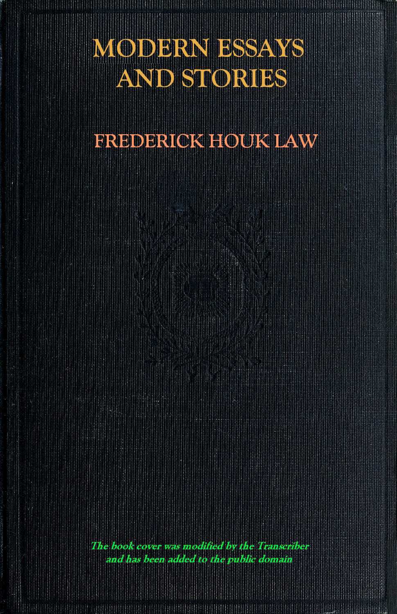
TRANSCRIBER'S NOTES
In the plain text version words in Italics are denoted by _underscores_ and bold text like =this=.
The book cover was modified by the Transcriber and has been added to the public domain.
A number of words in this book have both hyphenated and non-hyphenated variants. For the words with both variants present the one more used has been kept.
Obvious punctuation and other printing errors have been corrected.
[Pg ii]
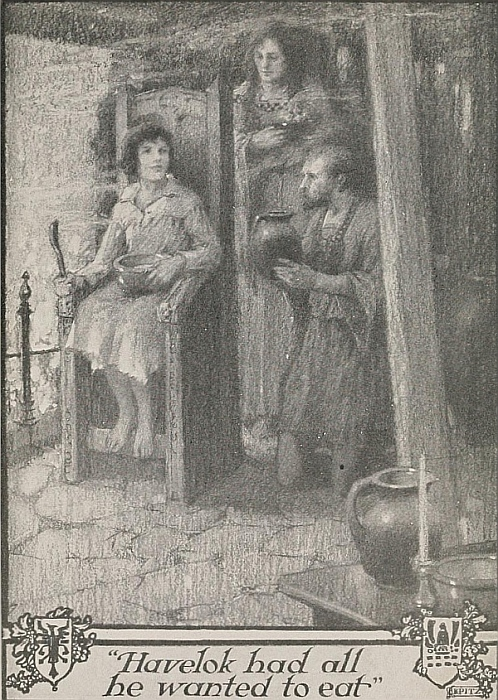
“Havelok had all he wanted to eat.”
[Pg iii]
A BOOK TO AWAKEN APPRECIATION OF
MODERN PROSE, AND TO DEVELOP
ABILITY AND ORIGINALITY IN WRITING
EDITED, WITH INTRODUCTION, NOTES, SUGGESTIVE
QUESTIONS, SUBJECTS FOR WRITTEN IMITATION, DIRECTIONS
FOR WRITING, AND ORIGINAL ILLUSTRATIONS
BY
FREDERICK HOUK LAW, Ph.D.
Head of the Department of English in the Stuyvesant High School,
New York City, Editor of Modern Short Stories, etc.
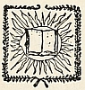
NEW YORK
THE CENTURY CO.
[Pg iv]
COPYRIGHT, 1922, BY THE CENTURY CO.
ALL RIGHTS RESERVED, INCLUDING THE
RIGHT TO REPRODUCE THIS BOOK, OR
PORTIONS THEREOF, IN ANY FORM. 3120
[Pg v]
In all schools pupils are expected to write “essays” but, curiously enough, essay-reading and essay-writing are taught but little. In spite of that neglect, the essay is so altogether natural and spontaneous in spirit, so intensely personal in expression, and so demanding of excellence of prose style, that it is the form, par excellence, for consideration in school if teachers are to show pupils much concerning the art of writing well. The essay is to prose what the lyric is to poetry—complete, genuine and beautiful self-expression, or better still, self-revelation.
Most of the writing done in schools is straightforward narration of events, without much, if any, attempt to show personal reactions on those events—mere diary-like accounts, at best; mechanical descriptions that aim to present exterior appearance without attempting to reveal inner meanings or to show awakened emotions; and stereotyped explanations and arguments drawn, for the most part, from books of reference or from slight observation.
Beyond all this mechanical work lies a field of throbbing personal life, of joyous reactions on all the myriads of interests that lie close at hand, of meditations on the wonders of plant and animal life, of humorous or philosophic comments on human nature, and of all manner of vague dreams and aspirations aroused by
“Such sights as youthful poets dream
On summer eves by haunted stream.”
Without the slightest question, it is the duty of the school, and of the teacher in particular, to lead pupils to appreciate honesty and originality in unapplied, unpragmatic self-expression, and to show pupils how they themselves may gain the[Pg vi] very real pleasure of putting down on paper permanent records of their own intimate thinking.
Joseph Addison's The Sir Roger de Coverley Papers and Washington Irving's Sketch Book have for many years made valiant but unsuccessful efforts to fill the places that should be filled by more modern representatives of the essay. Macaulay's Essay on Johnson is a biographical article for an encyclopedia; his essays on Clive and on Hastings are polemics; and Carlyle's Essay on Burns is a critical disquisition. With the exception of The Sir Roger de Coverley Papers, all these so-called essays are of considerable length and are unfitted to serve as the best examples of the essay form;—for the essay, like the lyric, demands brevity: it is, after all, only a quick flash of self-revelation,—not a sustained effort.
Then again, who would wish to learn to write like Addison, like Washington Irving, like Macaulay, or like Carlyle! Those great writers couched their thoughts in the language-fashions of their days, just as they clothed their bodies in the garments of their times. To imitate either their style of expression or their costumes would be to make one's self ridiculous, or to take part in a species of masquerade.
The extremely Latinized vocabulary of 1711, or the resonant periods and marked antitheses of 1850, are as old-fashioned to-day as are the once highly respected periwigs, great-coats and silver shoe buckles of the past.
The thoughts of yesterday are not the thoughts of to-day. There is, in serious reality, such a thing as “an old-fashioned point of view.” With all due reverence for the past, the best teachers of to-day believe that it is just as necessary for students to use present-day methods of expression and to cultivate present-day interests as it is to take advantage of the railroad, the telegraph, the telephone, the automobile, and the thousand other mechanical contrivances that aid life to-day, but which were unknown in 1711 or in 1850.
The type of essay that should be studied in school should concern modern interests; represent the modern point of view; discuss subjects in which young students are interested; be expressed in present-day language and, in general, should set[Pg vii] forward an example that pupils may directly and successfully imitate.
In order to do all this to the best advantage the essays chosen for study should be exceedingly short. To a young student essays of any considerable length, unless the subject matter is of unusually intensive interest, present insuperable difficulties. Short essays, on the other hand, appear to him exactly what they are,—charmingly delightful expressions of personal opinion.
The essays in this book, instead of telling about coffee houses or stage coaches, Scotch peasants or literary circles in London or Edinburgh, tell about such subjects as Christmas crowds, church bells, walking, dogs, the wind, children, the streets of New York, school experiences, and various modern ideals in work, in literature, and in life. Most of the essays are exceedingly short, only one or two being more than a few pages in length.
The essays here given represent various types, including not only the chatty, familiar essay but also informational essays, critical essays, biographical essays, story essays, and one or two examples of highly poetic prose.
An informal introduction, paving the way to a sympathetic understanding, precedes every essay. Notes below the pages of text explain immediately all the literary or historical allusions with which a young reader might not be familiar, their close position to the text making it unnecessary for a student to hunt for an explanation.
Suggestive questions given immediately after every essay make it possible for the teacher to assign lessons quickly; they also enable the student to study by himself and to feel assured that he will not miss any important point.
Twenty subjects, suitable as subjects for essays to be written by the student in direct imitation of the essay that immediately precedes them, follow every selection. In addition to this great number of appropriate modern subjects, more than 500 in number, on which young students can express their real selves, there are given, in connection with every list of subjects, directions for writing,—such as a[Pg viii] teacher might give a class when assigning written work.
The subject-lists and the directions for writing give the teacher a remarkable opportunity to stimulate a class as never before; to awaken a spirit of genuine self-expression; and to teach English composition in a way that he can not possibly do through the medium of any of our present-day rhetorics.
For the advantage of those teachers who wish to combine the teaching of the essay and of the short story, and who may not have at hand any suitable collection of short stories, the book includes not only introductory material concerning the nature of the short story and the development of the short story form, but also a series of stories of unusual interest for young readers, so chosen and so arranged that they represent the development of the short story through the legendary tale, the historical story, and the romantic story of adventure, to the story of realism and of character. In every case the story chosen is one that any student will enjoy and will understand immediately, as well as one that he can imitate both with pleasure and with success.
Introductions, foot notes, suggestive questions, subjects for written imitation, and directions for writing, follow every story.
If the book is used both as a means of awakening literary appreciation and developing honesty, originality, and power in written self-expression it will give pleasure to teachers and students alike.
[Pg ix]
“The plowman, near at hand,
Whistles o'er the furrowed land,
And the milkmaid singeth blithe....”
Why? Simply because they are happy; because they are healthy and vigorous, and at work; because they are doing something that interests them; because their hearty enjoyment in life must express itself in some other way than in work alone: in fact, they whistle and sing just for the doing of it,—not that they wish any other person to hear them, and not that they wish to teach anything to anyone. Their whistling and singing are spontaneous, and for the sake of expression alone.
Many of the best English essays were written just for the joy of self-expression. Serious workers in life, in their leisure moments, have let their pens move, as it were, automatically, in a sort of frank and full expression somewhat akin to the plowman's whistling and the milkmaid's singing.
Certainly in that joyous spirit Michel de Montaigne, in the sixteenth century, wrote the delightfully familiar essays that have charmed readers for over three hundred years, and that established the essay as a literary type. In a like vein, frankly and personally, Charles Lamb, who died in the first half of the nineteenth century, wrote intimate confessions of his thoughts,—his memories of schooldays and of early companionships and familiar places,—writing with all the warmth and color of affectionate regard. Happily, and because he was glad to be alive, Robert Louis Stevenson, almost in our own days, wrote of his love of the good outdoor world with its brooks and trees and stars, of his love of books and[Pg x] high thought, and his admiration of a manly attitude toward life.
For such people writing for the sake of expression was just as pure joy as the plowman's whistling and the milkmaid's singing.
Ordinary people write at least the beginnings of essays when they write letters,—not business letters in which they order yards of cloth, or complain that goods have not been delivered,—not letters that convey any of the business of life,—but rambling, gossipy, self-revealing letters, so illuminated with personality that they carry the very spirit of the writers.
Everyone, at times, talks or writes in a gossipy way of the things that interest him. He likes to escape from the world of daily tasks, of orders, directions, explanations and arguments, and to talk or write almost without purpose and just for the sake of saying something. In that sense everyone is a natural essayist.
The true essayist, like the pleasant conversationalist, expresses himself because it gives him pleasure. Out of his rich experience and wide observation he speaks wisely and kindly. He has no one story to tell and no one picture to present. He follows no rules and he aims at no very serious purpose. He does not desire to instruct nor to convince. Like the conversationalist, he is ready to leave some things half-said and to emphasize some subjects, not because it is logical to do so but because he happens to like them. He is ready at any moment to tell an anecdote, to introduce humor or pathos, or to describe a scene or a person—if so doing fits his mood. In general, the true essayist is like the musician who improvises: he
“Lets his fingers wander as they list,
And builds a bridge from dreamland.”
Of all possible kinds of prose writing, the essay, therefore, gives the greatest freedom. The essayist may reveal himself completely and in any manner that he pleases. He may tell of his delight in wandering by mountain streams, or in mingling with the crowds in city streets; he may tell of his thoughts as he meditated by ancient buildings or in the solemn half-darkness of age-old churches; he may dream of a long-gone childhood or look ahead into a roseate future; he may talk of people whom he has known, of books that he has read, or of the ideals of life. Any subject is his, and any method of treatment is his,—just so long as his first thought is the frank and full expression of himself.
To write an essay,—even though it be only a paragraph,—is to gain the pleasure of putting at least a little of one's real self down on paper—just because to do so is pleasure.
[Pg xi]
The essay, then, instead of being a formal composition, is characterized by a lack of formality. It is a species of very friendly and familiar writing. Like good conversation, it turns in any direction, and drops now and then into interesting anecdotes or pleasant descriptions, but never makes any attempt to go to the heart of a subject. However serious an essay may be it never becomes extremely formal or all-inclusive.
A chapter in a textbook includes all that the subject demands and all that the scope of treatment permits. It presents well-organized information in clear, logical form. It aims definitely to explain or to instruct. It may reveal nothing whatever concerning its writer. An essay, on the other hand, includes only those parts of the subject that interest the writer; it avoids logical form, and is just as chatty, wandering, anecdotal and aimless as is familiar talk. It focuses attention, not on subject-matter but on the personality of the writer.
The essay does not reveal a subject: it reveals personal interests in a subject. It touches instead of analyzing. It comments instead of classifying.
Truth may sparkle in an essay as gold sparkles in the sand of an Alaskan river, but the presentation of the truth in a scientific sense is no more the purpose of the essay than is the presentation of the gold the purpose of the river. In the eighteenth century, essayists like Joseph Addison, Richard Steele, Oliver Goldsmith and Samuel Johnson, commented freely upon eighteenth century manners and customs, but they made no attempt to present a careful survey of the subject. Every writer wrote of what happened to interest him. To-day it is possible to draw from the great body of eighteenth century essays material for an almost complete survey of manners and customs in that period—but that result is only an accident. The writers did not intend it.
The essayist is not concerned with giving accurate and logically-arranged information. He thinks only of telling how his subject appeals to him, of telling whether or not he likes it, and why. The more personally he writes, the better we like his work. In his revelation of himself we find a sort of revelation of ourselves as well,—and we like his work in proportion to that revelation.
Naturally, a good essay is short; for self-revelation is given in flashes, as it were,—in sparkles of thought that gleam only for a moment. Many so-called essays of great length are either only partly essays, or else are made up of a number of essays put together. Stevenson's An Inland Voyage is partly a straightforward story of a canoe trip, and partly a series of essays on subjects suggested by the trip. It is possible to draw from a self-revealing book of considerable length a great number of essays on a wide variety of subjects. The essays gleam in the pages of ordinary material as diamonds gleam in their settings of gold.
The essay, as a literary type, is written comment upon any subject, highly informal in nature, extremely personal in [Pg xii] character, and brief in expression. It is also usually marked by a notable beauty of style.
Just as there are many kinds of houses and many kinds of boats so there are many kinds of essays. Some essays tend[Pg xiii] to emphasize the giving of information, lean very strongly toward formality, and place comparatively little weight on personality,—and yet even such essays, as compared with other and more serious writings, are discursive and personal. They are like some people who seem to favor extreme formality without ever quite attaining it.
Other essays are critical. They point out the good and the bad, and they set forward ideals that should be reached. The criticism they give is not measured and accurate like the criticism a cabinet-maker might make concerning the construction of a desk. It is more or less personal and haphazard like the remarks of one who knows what he likes and what he does not like but who does not wish to bother himself by going into minute details.
Many essays tell stories, but never for the sake of the stories alone. They use the stories as frameworks on which to hang thought, or as illustrations to emphasize thought. The essays hold beyond and above everything the personality of the one who writes.
Almost all essays are in some sense biographical, but they reveal stories of lives, instead of telling the stories in organized form. The little of biography that essays tell is just enough to permit the writers to recall the memories of childhood, and the varied affections and interests of life. For real biography one must go elsewhere than to essays.
Some essays lift one into a fine and close communion with their writers, and give intimate companionship with a human soul. They are the best of all essays. Such essays are always extremely familiar, and deeply personal, like the essays of Michel de Montaigne and Charles Lamb. About such essays is an aroma, a fascination, a delight, that makes them a joy forever. As one reads such essays he feels that he is walking and talking with the writers, and that he hears them express noble and uplifting thoughts.
The terse style of Francis Bacon; the magical phrases of Sir Thomas Browne; the well-rounded sentences of Joseph Addison, Sir Richard Steele and Oliver Goldsmith; the poetic prose of Thomas de Quincey; the charm of the pages of Charles Lamb and Robert Louis Stevenson,—all this is in no sense accidental. The intimate revelation of self, such as is always made by the best essayists, creates the most pleasing style. Genuine self-expression, whether it be the fervor of an impassioned orator, the ardor of a lyric poet, or the meditative mood of the essayist, always tends to embody itself in an appropriate style. For that reason much of the best prose of the language is to be found in the works of the great essayists.
Some writers, like Thomas de Quincey, have so felt the significance of beauty of style, and have so appreciated its relationship to the revelation of mood and personality, that [Pg xiv] they seem, in some cases, to have written for style alone. Their essays are unsurpassed tissues of prose and poetry.
Through the medium of spoken or written meditations men have always expressed their personalities, and thereby have approached the writing of essays. Many sections of the Bible are practically essays, especially those passages in Ecclesiastes that speak concerning friendship, wisdom, pride, gossip, vengeance, punishment and topics of similar type. In the ancient Greek and Roman orations are essay-like sections in which the speakers paused for a moment to express their innermost thoughts about life, patriotism, duty, or the great fact of death. Cicero, one of the most remarkable Romans, wrote admirably and with a spirit of familiarity and frankness, on friendship, old age, and immortality. In all ages, in speeches, in letters, and in longer works, essay-like productions appeared.
The invention of the modern essay,—that is, of the extremely informal, intimate and personal meditation,—came in 1571, in France. The inventor of the new type of literature was Michel de Montaigne, a retired scholar, counsellor and courtier, who found a studious refuge in the old tower of Montaigne, where he meditated and wrote for nine years. [Pg xv] His essays, which were first published in 1580, are so delightfully informal, so frankly personal, so clever and well-aimed in humor, and so wise, that they are almost without parallel. In 1601 an Italian, Giovanni Florio, translated Montaigne's essays into English. Immediately the essays became popular and they have deeply influenced the writing of essays in English. In 1597 Francis Bacon published the first of his essays, but he did not write with the familiarity that characterized Montaigne. Nevertheless, his work, together with that of Montaigne, is to be regarded as representing the beginning of the modern essay.
It was not until the development of the newspaper in the eighteenth century that the essay found its real period of growth as a literary type. In the first half of the eighteenth century The Tatler and The Spectator, and similar periodicals, gave an opportunity for the publication of short prose compositions of a popular nature. Joseph Addison and Richard Steele, writing with kindly humor on the foibles of the day, did much to establish the popularity of the essay. Samuel Johnson, Oliver Goldsmith and other writers, in other periodicals, continued the writing of essays, and made the power of the essay known.
Until the time of Charles Lamb, in the first half of the nineteenth century, no English writer had even approached the familiar charm of Montaigne. Bacon had written in a formal manner; his followers had held before them the thought of teaching rather than the thought of self-revelation; the eighteenth century writers had delighted in character studies and in observations on social life and customs. Lamb, on the other hand, wrote not to instruct but to communicate; not about the world but about himself. He restored the essay to its position as a means of self-revelation. The most notable fact about Lamb's essays is that they reveal him to us as one of the persons whom we know best. At the same time humor, pathos and beauty of expression are so remarkable in Lamb's essays that they alone give them permanent value.
Other writers of the essay, like Leigh Hunt, Sydney Smith, William Hazlitt, and Francis Jeffrey, wrote powerfully but none of them with a charm equal to that of Lamb. Thomas de Quincey, writing in a highly poetic style, did much to stimulate poetic prose. Lord Macaulay, in a number of critical and biographical essays, wrote forcefully, logically, and with a high degree of mastery of style but he paid slight attention to self-revelation.
It is evident, then, that there are two marked types of the essay,—one, the formal, purposive composition; and the other informal and intensely personal in nature. Ralph Waldo Emerson, Matthew Arnold, John Ruskin, and James Russell Lowell represent the first type. Many excellent articles in periodicals, and many of the best of editorial articles in newspapers are in reality essays of the formal kind. Washington Irving, Oliver Wendell Holmes, Henry D. Thoreau, George William Curtis and many others represent the second type.
In modern times the world has been blessed by the writing of a number of essays of the charming, familiar type. John Burroughs has revealed his love for the world of nature; Henry Van Dyke has taken us among the mountains and along the rivers; and Gilbert K. Chesterton, Arnold Bennett, Samuel M. Crothers, Charles Dudley Warner, Hamilton Wright Mabie, Brander Matthews, Agnes Repplier and a host of others have written on many and varied subjects.
Great essayists, like great novelists or great poets or great dramatists, are rare. It is only now and then that a Montaigne, a Charles Lamb, or a Robert Louis Stevenson appears. It is to the glory of literature, however, that there are so [Pg xvi] many who write in the field of the essay, and who approach true greatness, even if they do not attain it.
[Pg xvii]
| Joseph Addison Sir Richard Steele |
The Spectator |
| Apochrypha, The | Ecclesiasticus |
| Arnold, Matthew | Culture and Anarchy |
| Bacon, Francis | Essays |
| Bennett, Arnold | How to Live on 24 Hours a Day |
| Browne, Sir Thomas | Religio Medici |
| Bible, The Holy | Ecclesiastes |
| Burroughs, John | Birds and Bees |
| ” ” | Locusts and Wild Honey |
| ” ” | Wake Robin |
| ” ” | Winter Sunshine |
| ” ” | Accepting the Universe |
| Carlyle, Thomas | Heroes and Hero Worship |
| Curtis, George William | Prue and I |
| Chesterfield, Lord | Letters to His Son |
| Crothers, Samuel M. | The Gentle Reader |
| Emerson, Ralph Waldo | Essays |
| Goldsmith, Oliver | The Citizen of the World |
| Grayson, David | Adventures in Contentment |
| Harrison, Frederic | The Choice of Books |
| Hearn, Lafcadio | Out of the East |
| Holmes, Oliver Wendell | The Autocrat of the Breakfast Table |
| ” ”” | The Professor at the BreakfastTable |
| ” ”” | The Poet at the Breakfast Table |
| ” ”” | Over the Teacups |
| Irving, Washington | The Sketch Book |
| Johnson, Samuel | The Idler |
| ” ” | The Rambler |
| Lamb, Charles | Essays |
| Lowell, James Russell | Among My Books |
| Matthews, Brander | Aspects of Fiction |
| Mabie, Hamilton Wright | Essays on Nature and Culture |
| Macaulay, Thomas Babington | Milton |
| Maeterlinck, Maurice | Field Flowers |
| ” ” | News of the Spring |
| ” ” | Old Fashioned Flowers |
| Mitchell, Donald G. | Reveries of a Bachelor |
| ” ” ” | Dream Life |
| Montaigne, Michel de | Essays |
| Pater, Walter | Appreciations |
| De Quincey, Thomas | Vision of Sudden Death |
| ” ” | Dream Fugue |
| Repplier, Agnes | In Our Convent Days |
| Ruskin, John | Sesame and Lilies |
| Roosevelt, Theodore | The Strenuous Life |
| Ross, E. A. | Sin and Society |
| Shairp, John Campbell | Studies in Poetry and Philosophy |
| Stevenson, Robert Louis | Inland Voyage |
| ” ” ” | Travels with a Donkey |
| ” ” ” | Virginibus Puerisque |
| ” ” ” | Memories and Portraits |
| ” ” ” | Later Essays |
| Thoreau, Henry David | A Week on the Concord and Merrimac Rivers |
| ” ” ” | Walden |
| ” ” ” | The Maine Woods |
| ” ” ” | Cape Cod |
| Van Dyke, Henry | Little Rivers |
| ” ” ” | Fisherman's Luck |
| Wagner, Charles | The Simple Life |
| White, Gilbert | The Natural History and Antiquities of Selborne |
[Pg xviii]
You cross a street and narrowly escape being run over by an automobile; or you go on a picnic and have delightful experiences; or you return from travel, with the memory of happy adventures—at once an uncontrollable impulse besets you to tell some one what you experienced. That desire to interest some one else in the series of actions that interested you, is the basis of all story-telling.
In one of its simplest forms story-telling is personal and concerns events that actually occurred to the story-teller. Such narration uses the words “I,” “me” and “mine,” seeks no development, aims at no climax, and strikes at interest only through telling of the unusual.
When you stand before an abandoned farm-house and see its half-fallen chimney, its decayed boards, its gaping windows, and the wild vines that clamber into what was once a home your imagination takes fire, and you think of happier days that the house has seen. You imagine the man and woman who built it; the children who played in its doorways; and the happy gatherings or sad scenes that marked its story. That quick imagination of the might-be and the might-have-been is the beginning both of realism and of romance. The story you would tell would use the third person, in all probability; would seek an orderly development, and would aim at climax.
When you stand in your window on a winter day and watch thousands of snow-flakes float down from the sky, circling in fantastic whirls, you see them as so many white fairies led by a master spirit in revel and dance. You are ready to tell, with whatever degree of fancy and skill you can command, the story of the-world-as-it-is-not and as-it-never-will-be. A story of that kind is pure romance.
Whenever you tell what happened to you or to some one else; or what might have been or might be; or of what could not possibly be, your object is to interest some one else in what interests you. You use many expedients to capture and to hold interest: you make a quick beginning, or careful preparation for the climax; you make your story as real or as striking as you can make it; you cut it short or you tell it at length; or you hold the reader's attention on some point of interest that you do not reveal in full until the last. Whatever you do to capture and to hold interest makes for art in story-telling.
When an airplane descends unexpectedly in a country town every one in the place wishes, as soon as possible, to learn whence the aviator came and what experiences he had. Human curiosity is insatiable, and for that reason people love to hear stories as well as to tell them.
[Pg xix]
In fact, people gain distinct advantages by reading stories. They become acquainted with many types of character; they see all sorts of interesting events that they could never see in reality; they see what happens under certain circumstances, and thereby they gain practical lessons. Through their reading they gain such vivid experiences that they are likely to have a larger outlook upon life.
Brevity is the first essential of a short story, and yet under the term, “brief,” may be included a story that is told in one or two paragraphs, and a story that is told in many pages. A story that is so long that it cannot be read easily at a single sitting is not a short story.
To make one strong impression on the mind of the reader, and to make that impression so powerfully that it will leave the reader pleased, convinced and emotionally moved is the principal aim of a good short story. To the production of that one effect everything in the story,—characters, action, description, and exposition,—points with the definiteness of an established purpose. All else is omitted, and thus all the parts of the story are both necessary and harmonious.
Centralizing everything on the production of one effect makes every short story complete in itself. The purpose having been accomplished there is nothing more to be said. The end is the end.
A convincing sense of reality characterizes every excellent short story. The author himself appears only as one who narrates truth, not at all as one who has moved the puppets of imagination. The story seems a transcript from real experience. The characters,—not the author,—make the plot. Their personalities reveal themselves in action. The entire story is founded substantially upon life and appears as a photographic glimpse of reality.
As in all other writing, the greater the art of the writer in adapting style to thought, in using language effectively, the better production. Word-choice, power of phrasing, and skill in artistic construction count for as much in the short story as in any other type of literature.
[Pg xx]
Since the short story represents life, it has as many types as there are interests in life. It may confine itself to the ordinary events of life in city or country, at home or abroad; it may concern past events in various regions; or it may look with a prophetic glance into the distant future. It may concern nothing but verifiable truth or be highly imaginative, delicately fanciful, or notably grotesque. It may draw interest from quaint places and odd characters, or it may[Pg xxi] appeal through vividness of action. It may aim to do nothing more than to arouse interest and to give pleasure for a moment, or it may endeavor to teach a truth.
Among the many types of the short story, a few are especially worthy of note.
Folk-lore stories are stories that have been told by common people for ages. They come direct from the experience and the common sense of ordinary people. They represent the interests, the faith and the ideals of the race from which they come.
Fables are very short stories that point out virtues and defects in human character presented in the guise of animal life.
Legends are stories that have come down to us from a time beyond our own. They are less simple and direct than the ordinary folk-lore story. Undoubtedly founded on actual occurrences they have tinged fact with a poetic beauty that ennobles them and often gives them highly ethical values.
Stories of adventure emphasize startling events rather than character.
Love stories emphasize courtship and the episodes of romantic love.
Local color stories reveal marked characteristics of custom and language, and the oddities of life notable in a particular locality.
Dialect stories make use of the language peculiarities found in common use by a particular type of people.
Stories of the supernatural deal with ghostly characters and uncanny forces.
Stories of mystery present puzzling problems, and slowly, step by step, lead the readers to satisfactory solutions.
Animal stories, whether realistic or romantic, concern the lives of animals.
Stories of allegory, through symbolic characters and events, reveal moral truths.
Stories of satire, by ridiculing types of character, social customs, or methods of action, tend to awaken a spirit of reform.
[Pg xxii]
Stories of science present narratives based upon the exposition and the actual use of scientific facts.
Stories of character emphasize notable personalities, place stress upon motive and the inner nature rather than upon outer action, and clarify the reader's understanding of human character.
Although the beginnings of the short story existed in the past, and although tales were told in all ages, the short story, in its present form, is a comparatively new type of literature. The short, complete, realistic narrative designed to produce a single strong impression, came into being in the first half of the nineteenth century. The first writer to point out and to exemplify the principles of the modern short story was Edgar Allan Poe, 1809-1849.
As early as 4000 B.C. the Egyptians composed the Tales of the Magicians, and in the pre-Christian eras the Greeks and other peoples wrote short prose narratives. Folk-lore tales go back to very early times. The celebrated Gesta Romanorum is a collection of anecdotes and tales drawn from many ages and peoples, including the Greeks, the Egyptians and the peoples of Asia. In the early periods of the history of Europe and of England many narratives centered around the supposed exploits of romantic characters like the ancient Greeks and Trojans, Alexander the Great, Charlemagne and King Arthur.
In the thirteenth and fourteenth centuries the Italians became skilful in the telling of tales called novelle. Giovanni Boccaccio, 1313-1375, brought together from wide and varied sources a collection of one hundred such tales in a volume called Il Decamerone. He united the tales by imagining that seven ladies and three gentlemen who had fled from Florence to avoid the plague, pass their time in story-telling. His work had the deepest influence on many later writers, including particularly[Pg xxiii] the English poet, Geoffrey Chaucer, 1340-1400, whose Canterbury Tales re-tell some of Boccaccio's stories. Chaucer imagines that a number of people, representing all the types of English life, tell stories as they journey slowly to the shrine of Thomas à Becket at Canterbury. His stories intimately reveal the actual England of his day. He is the first great realist.
In the sixteenth century many writers, particularly in Italy, France and Spain, told ingenious stories that developed new interest in story-telling and story-reading.
The writing of character studies and the development of periodicals led, in the eighteenth century, to such essays as The Sir Roger de Coverley Papers, written for The Spectator by Joseph Addison, 1672-1719, and Sir Richard Steele, 1672-1729. The doings of Sir Roger de Coverley are told so realistically and so entertainingly that it was evident that such material could be used not only to illustrate the thought of an essayist but also for its own sake in stories founded on character.
About the beginning of the nineteenth century stories of an uncanny nature,—of ghosts and strange events,—the so-called “Gothic” stories,—became widely popular. Two German writers, E. T. A. Hoffmann, 1776-1822, and Ludwig Tieck, 1773-1853, wrote with such peculiar power that they led other writers to imitate them. Among the followers of Tieck and Hoffmann the most notable name is that of Edgar Allan Poe.
Poe's contemporaries, Washington Irving, 1783-1859, and Nathaniel Hawthorne, 1804-1864, likewise showed the influence of the “Gothic” school of writing. Irving turned the ghostly into humor, as in The Legend of Sleepy Hollow; Hawthorne wrote of the mysterious in terms of fancy and allegory, as in Ethan Brand, The Birth Mark, and Rappaccini's Daughter; Poe directed all his energy to the production of single effect,—frequently the effect of horror, as in The Cask of Amontillado, The Black Cat and The Pit and the Pendulum. Poe's natural ability as a constructive artist, and his genuine interest in story-telling, led him to formulate the five principles of the short story:—brevity, single effect, verisimilitude, the omission of the non-essential, and finality.
From the time when Poe pointed the way the short story has had an unparalleled development. French writers like Guy de Maupassant; British writers like Rudyard Kipling; [Pg xxiv] Russian writers like Count Leo Tolstoi, and American writers like O. Henry, Richard Harding Davis, Frank R. Stockton, Mary E. Wilkins Freeman, Thomas Bailey Aldrich, F. Hopkinson Smith, Jack London, and a thousand others, have carried on the great tradition.
Volumes containing short stories by the following writers will be found in any public library. Any one who wishes to gain an understanding of the principles of the short story should read a number of stories by every writer named in the list.
| Thomas Bailey Aldrich | Washington Irving |
| Hans Christian Andersen | Myra Kelly |
| James Matthew Barrie | Rudyard Kipling |
| Alice Brown | Jack London |
| Henry Cuyler Bunner | Brander Matthews |
| Richard Harding Davis | Ian Maclaren |
| Margaret Deland | Fiona McLeod |
| Sir Arthur Conan Doyle | Edgar Allan Poe |
| Eugene Field | Thomas Nelson Page |
| Mary E. Wilkins Freeman | Ernest Thompson Seton |
| Hamlin Garland | F. Hopkinson Smith |
| Nathaniel Hawthorne | Frank R. Stockton |
| Joel Chandler Harris | Robert Louis Stevenson |
| O. Henry | Ruth McEnery Stuart |
| Bret Harte | Henry Van Dyke |
[Pg xxv]
CONTENTS
| PAGE | ||
| PREFACE | v | |
| INTRODUCTION | ix | |
| I | The Writing of Essays | ix |
| II | Nature of the Essay | xi |
| III | Types of the Essay | xii |
| IV | The Development of the Essay | xiv |
| V | Essays Well Worth Reading | xvi |
| VI | The Writing of Short Stories | xviii |
| VII | Nature of the Short Story | xix |
| VIII | Types of the Short Story | xx |
| IX | The Development of the Short Story | xxii |
| X | Authors of Short Stories Well Worth Reading | xxiv |
| THE FAMILIAR ESSAY | ||
| The Pup-Dog | Robert Palfrey Utter | 3 |
| Chewing Gum | Charles Dudley Warner | 11 |
| The Mystery of Ah Sing | Robert L. Duffus | 16 |
| Old Doc | Opie Read | 19 |
| Christmas Shopping | Helen Davenport | 26 |
| Sunday Bells | Gertrude Henderson | 28 |
| Discovery | Georges Duhamel | 31 |
| The Furrows | Gilbert K. Chesterton | 36 |
| Meditation and Imagination | Hamilton Wright Mabie | 40 |
| Who Owns the Mountains? | Henry Van Dyke | 49 |
| THE LEGENDARY STORY | ||
| Running Wolf | Algernon Blackwood | 55 |
| THE BIOGRAPHICAL ESSAY | ||
| How I Found America | Anzia Yezierska | 77 |
| Memories of Childhood | William Henry Shelton | 94 |
| A Visit to John Burroughs | Sadakichi Hartmann | 100 |
| Washington on Horseback | H. A. Ogden | 108 [Pg xxvi] |
| THE HISTORICAL STORY | ||
| Havelok the Dane | George Philip Krapp | 118 |
| THE STORY ESSAY | ||
| Politics Up to Date | Frederick Lewis Allen | 136 |
| Free! | Charles Hanson Towne | 143 |
| THE STORY OF ADVENTURE | ||
| Prunier Tells a Story | T. Morris Longstreth | 148 |
| THE DIDACTIC ESSAY | ||
| The American Boy | Theodore Roosevelt | 168 |
| The Spirit of Adventure | Hildegarde Hawthorne | 176 |
| Vanishing New York | Robert and Elizabeth Shackleton | 184 |
| The Songs of the Civil War | Brander Matthews | 203 |
| Locomotion in the Twentieth Century | H. G. Wells | 210 |
| The Writing of Essays | Charles S. Brooks | 219 |
| The Rhythm of Prose | Abram Lipsky | 225 |
| THE REALISTIC STORY | ||
| The Chinaman's Head | William Rose Benét | 230 |
| Getting Up to Date | Roberta Wayne | 239 |
| The Lion and the Mouse | Joseph B. Ames | 253 |
| THE CRITICAL ESSAY | ||
| Coddling in Education | Henry Seidel Canby | 267 |
| A Successful Failure | Glenn Frank | 271 |
| The Drolleries of Clothes | Agnes Repplier | 278 |
| POETIC PROSE | ||
| Children | Yukio Ozaki | 284 |
| Ships That Lift Tall Spires of Canvas | Ralph D. Paine | 287 |
| PERSONALITY IN CORRESPONDENCE | ||
| The Statue of General Sherman | 291 | |
| The Roosevelt Saint-Gaudens Correspondence Concerning Coinage |
Theodore Roosevelt and Augustus Saint-Gaudens |
292 |
| THE SYMBOLIC STORY | ||
| Hi-Brasil | Ralph Durand | 300 |
[Pg xxvii]
| |
FACING PAGE |
| “Havelok had all he wanted to eat.” | Frontispiece |
| The feeling stole over him without the slightest warning. He was not alone |
60 |
| My great-grandmother | 96 |
| Colonel Humphreys landed in the ditch | 116 |
| “You made a fine signal” | 164 |
| It has been called the oldest building in New York | 188 |
| “A-ah, mystery!” said Mrs. Revis, clasping her beautiful hands and gazing upward. “I adore mystery!” |
236 |
| “Isn't this great! They're here, every one of them! You're awfully good to let us use the phonograph” |
248 |
| At the very take-off, a gasp of horror was jolted from his lips | 264 |
| The fluctuations of fashion are alternately a grievance and a solace | 280 |
| Its humming shrouds were vibrant with the eternal call of the sea | 288 |
| Designing the ten- and twenty-dollar gold pieces | 292 |
MODERN ESSAYS AND STORIES
[Pg 3]
THE FAMILIAR ESSAY
By ROBERT PALFREY UTTER
(1875—). Associate Professor of English in the University of California. He taught for a time at Harvard and also at Amherst. He is a delightful essayist, and contributes frequently to various magazines.
The writer of a familiar essay selects any subject in which he is interested. Sometimes the more trifling the subject seems to be, the more delightful is the essay. Trifles, in fact, make up life, and around them center many of our deepest interests. The very charm of the familiar essay lies in its ability to call attention to the value of trifles,—to the little things in life, to little events, and to all the odds and ends of human interests.
The familiar essay is nothing more than happy talk that gives us, as it were, a walk or a chat with one who has a keen mind, a ready wit, and a pleasant spirit.
The Pup-Dog is an unusually excellent illustration of the familiar essay. We all love him,—the pup-dog,—the good friend about whom Mr. Utter has written so amusingly, so understandingly, and so sympathetically. As we read we can see the dog jumping and hear him barking; we laugh at his antics; we are, in fact, taking a walk with Mr. Utter while he talks to us about his dog,—or our dog.
Any dog is a pup-dog so long as he prefers a rat, dead or alive, to chocolate fudge, a moldy bone to sponge cake, a fight with a woodchuck to hanging round the tea-table for sweet biscuit. Of course he will show traits of age as years advance, but usually they are physical traits, not emotional. For the most part dogs’ affections burn warmly, and their love of life and experience brightly, while life lasts. They remain young, as poets do. Every dog is a pup-dog, but some are more so than others.
Most so of all is the Irish terrier. To me he stands as the[Pg 4] archetype of the dog, and the doggier a dog is, the better I like him. I love the collie; none better. I have lived with him, and ranged the hills with him in every kind of weather, and you can hardly tell me a story of his loyalty and intelligence that I cannot go you one better. But the collie is a gentleman. He has risen from the ranks, to be sure, but he is every inch the gentleman, and just now I am speaking of dogs. The terrier is every inch a dog, and the Irish is the terrier par excellence.
The man who mistakes him for an Airedale, as many do, is one who does not know an Irishman from a Scot. The Airedale has a touch of the national dourness; I believe that he is a Calvinist at heart, with a severe sense of personal responsibility. The Irish terrier can atone vicariously or not at all for his light-hearted sins. The Airedale takes his romance and his fighting as seriously as an Alan Breck. The Irish terrier has all the imagination and humor of his race; he has a rollicking air; he is whimsical, warm-hearted, jaunty, and has the gift of blarney. He loves a scrimmage better than his dinner, but he bears no malice.
His fellest earthly foes,
Cats, he does but affect to hate.
The terrier family is primarily a jolly, good-natured crowd whose business it is to dig into the lairs of burrowing creatures and fight them at narrow quarters. The signal for the fight is the attack on the intrusive nose. You can read this family history in the pup-dog's treatment of the cat. The cat of his own household with whom he is brought up he rallies with good-humored banter, but he is less likely to hurt her than she him. He will take her with him on his morning round of neighborhood garbage-pails, and even warm her kittens on his back as he lies in the square of sunshine on the kitchen floor, till they begin to knead their tiny claws into him in a futile search for nourishment; then he shakes them patiently off and seeks rest elsewhere. He will chase any cat as long as she will run; if she refuses to run, he will dance round her and bark, trying to get up a game. “Be a sport!” he taunts[Pg 5] her. “Take a chance!” But if she claws his nose, she treads on the tail of his coat, and no Irish gentleman will stand for that.
Similar are his tactics with human creatures. First he tries a small bluff to see if he can start anything. If his victim shows signs of fear, he redoubles his effort, his tail the while signaling huge delight at his success. If the victim shows fight, he may develop the attack in earnest. The victim who shows either fear or fight betrays complete ignorance of dog nature, for the initial bluff is always naïvely transparent; the pup-dog may have a poker face, but his tail is a rank traitor. A nest of yellow-jackets in a hole in the ground challenges his every instinct. He cocks his ear at the subterranean buzzing, tries a little tentative excavation with cautious paw. Soon one of the inmates scores on the tip of his nose, and war is declared in earnest. There are leaping attacks with clashing of teeth, and wildly gyrating rear-guard actions. Custom cannot stale the charm of the spot; all summer, so long as there is a wing stirring, hornets shall be hot i' the mouth.
The degree of youth which the pup-dog attains and holds is that of the human male of eleven or twelve years. He nurses an inextinguishable quarrel with the hair-brush. His hatred of the formal bath is chronic, but he will paddle delightedly in any casual water out of doors, regardless of temperatures and seasons. At home he will sometimes scoff at plain, wholesome food, but to the public he gives the impression that his family systematically starve him, and his dietetic experiments often have weird and disastrous results. You can never count on his behavior except on formal occasions, when you know to a certainty that he will disgrace you. His curiosity is equaled only by his adroitness in getting out of awkward situations into which it plunges him. His love of play is unquenchable by weariness or hunger; there is no time when the sight of a ball will not rouse him to clamorous activity.
For fine clothes he has a satiric contempt, and will almost invariably manage to land a dirty footprint on white waist-coat[Pg 6] or “ice-cream pants” in the first five minutes of their immaculacy. He is one hundred per cent. motor-minded; when he is “stung with the splendor of a sudden thought,” he springs to immediate action. In the absence of any ideas he relaxes and sleeps with the abandon of a jute door-mat.
Dog meets dog as boy meets boy, with assertions of superiority, challenge, perhaps fight, followed by friendship and play. No wonder that with pup-boys the pup-dog is so completely at one; his code is their code, and whither they go he goes—except to school. With September come the dull days for him. No more the hordes of pirates and bandits with bandanas and peaked hats, belts stuck full of dirks and “ottermaticks,” sweep up and down the sidewalk on bicycles in open defiance of the law, raiding lawns and gardens, scattering shrieking tea-parties of little girls and dolls, haling them aboard the lugger in the next lot and holding them for fabulous ransom. There is always some one who will pay it with an imposing check signed “Theodore Wilson Roosevelt Woodrow Rockefeller.” He prances with flopping ears beside the flying wheels, crouches in ambush, gives tongue in the raid, flies at the victims and tears their frocks, mounts guard in the cave, and shares the bandits' last cookie.
But when the pirates become orderly citizens, his day begins after school and ends with supper. With his paws on the window-sill, his nose making misty spots on the glass, he watches them as they march away in the morning, then he makes a perfunctory round of the neighborhood, inspecting garbage-pails and unwary cats. After that there is nothing to do but relax in the September sunshine and exist in a coma till the pirates return and resume their normal functions, except for his routine attempt to intimidate the postman and the iceman. Perhaps he might succeed some happy day; who knows?
The pup-dog in the open is the best of companions; his exuberant vitality and unquenchable zest for things in general give him endless variety. There are times, perhaps, when you[Pg 7] see little of him; he uses you as a mobile base of operations, and runs an epicycloidal course with you as moving center, showing only a flash of his tail on one horizon or the flop of his ears on the other. You hear his wild cries of excitement when he starts a squirrel or a rabbit. By rare luck you may be called in time to referee a fight with a woodchuck, or once in a happy dog's age you may see him, a khaki streak through the underbrush, in pursuit of a fox.
At last you hear the drumming of his feet on the road behind you; he shoots past before he can shift gears, wheels, and lands a running jump on your diaphragm by way of reporting present for duty. Thereafter he sticks a little closer, popping out into the road or showing his tousled face through the leaves at intervals of two or three hundred yards to make sure that you are still on the planet. Then you may enjoy his indefatigable industry in counting with his nose, his tail quivering with delight, the chinks of old stone walls. You may light your pipe and sit by for an hour as he energetically follows his family tradition in digging under an old stump, shooting the sand out behind with kangaroo strokes, tugging at the roots with his teeth, and pausing from time to time to grin at you with a yard of pink tongue completely surrounded by leaf mold. You may admire his zeal as inspector of chipmunks, mice, frogs, grasshoppers, crickets, and such small deer. Anything that lives and tries to get away from him is fair game except chickens. If round the turn of the road he plumps into a hen convention, memories of bitter humiliations surge up within him, and he blushes, and turns his face aside. Other dogs he meets with tentative growling, bristling, and tail-wagging, by way of asserting that he will take them on any terms they like; fight or frolic, it is all one to him.
You cannot win his allegiance by feeding him, though he always has his bit of blarney ready for the cook. He loves all members of the family with nice discrimination for their weaknesses: the pup-boy who cannot resist an invitation to romp; the pup-girl who cannot withstand begging blandishments[Pg 8] of nose and paw, but will subvert discipline and share food with him whenever and wherever she has it. He will welcome with leapings and gyrations any one of them after a day's absence or an hour's, but his whole-souled allegiance is to the head of the house; his is the one voice that speaks with authority; his the first welcome always when the family returns in a group. That loyalty, burning bright and true to the last spark of life, that unfailing welcome on which a man can count more surely than on any human love—indeed, there is no secret in a man's love for a dog, however we may wonder at the dog's love for the man. Let Argos and Ulysses[1] stand as the type of it, though to me it lacks something of the ideal, not in the image of the dog, but in the conduct of the man. Were I disguised for peril of my life, and my dog, after the wanderings and dangers of many years, lifted his head and knew me and then died, I think no craft could withhold my feelings from betraying me.
“Dogs know their friends,” we say, as if there were mystery in the knowledge. The password of the fraternity is not hidden; you may hear it anywhere. It was spoken at my own hearth when the pup-dog, wet with autumn rain, thrust himself between my guest and the andirons and began to steam. My guest checked my remonstrance. “Don't disturb him on my account, you know. I rather like the smell of a wet dog,” he added apologetically. The word revealed a background that made the speaker at once and forever my guest-friend. In it I saw boy and dog in rain and snow on wet trails, their camp in narrow shelter, where they snuggle together with all in common that they have of food and warmth. He who shared his boyhood with a pup-dog will always share whatever is his with members of the fraternity. He will value the wagging of a stubby tail above all dog-show points and parlor tricks. He will not be rash to chide affectionate importunity, nor to set for his dog higher standards than he [Pg 9]upholds for himself. Do you never nurse a grouch and express it in appropriate language? Do you never take direct action when your feelings get away with you? When the like befalls the pup-dog, have ready for him such sympathy as he has always ready for you in your moods. Treat him as an equal, and you will get from him human and imperfect results.
You will never know exactly what your pup-dog gets from you; he tries wistfully to tell you, but leaves you still wondering. But you may have from him a share of his perennial puphood, and you do well to accept it gratefully whenever he offers it. Take it when it comes, though the moment seem inopportune. You may be roused just as you settle for a nap by a moist nose thrust into your hand, two rough brown paws on the edge of your bunk, a pair of bright eyes peering through a jute fringe. Up he comes, steps over you, and settles down between you and the wall with a sigh. Then, if you shut your eyes, you will find that you are not far from that place up on the hill—the big rock and the two oaks—where the pup-boy that used to be you used to snuggle down with that first old pup-dog you ever had.
[Pg 10]
| 1. My Dog | 11. Cats |
| 2. Lap Dogs | 12. Kittens |
| 3. Police Dogs | 13. Rabbits |
| 4. Hounds | 14. Mice |
| 5. Shepherd Dogs | 15. Squirrels |
| 6. Boston Bulls | 16. Horses |
| 7. Great Danes | 17. Robins |
| 8. Newfoundland Dogs | 18. Sea Gulls |
| 9. Greyhounds | 19. Cows |
| 10. Stray Dogs | 20. Fish |
Select for your subject some animal with which you are intimately familiar, and in which you are especially and sympathetically interested. Write about that animal in such a way that you will bring to the surface its most humorous qualities and its most admirable qualities. Give a great number of details concerning the animal's habits, but give those details in a gossipy manner. Use quotations, if you can, or make allusions to books. Make all your work emphasize goodness. Make your closing paragraph your most effective paragraph,—one that will appeal to sentiment.
FOOTNOTES:
[1] According to Homer's Odyssey when Ulysses returned after many years of wandering, his old dog “Argos” recognized him, even in disguise.
[Pg 11]
By CHARLES DUDLEY WARNER
(1829-1900). A celebrated American essayist and editor. For many years he wrote brilliant papers for Harper's Magazine in the departments called “The Editor's Drawer” and “The Editor's Study.” He became the first President of the National Institute of Arts and Letters. He was a great influence for good. Among his books are My Summer in a Garden; Back-Log Studies; In the Wilderness; The Relation of Literature to Life; As We Were Saying; Their Pilgrimage. He edited the valuable “American Men of Letters Series,” and the remarkable work called Library of the World's Best Literature, a collection of extracts from the world's literature, with which every student should be acquainted.
The familiar essay takes for its subject anything that awakens the interest of the essayist. Charles Dudley Warner wrote with freedom and humor on a great number of subjects that in themselves suggest light and humorous treatment rather than serious thinking. Among his many informal essays is the one that follows, entitled Chewing Gum.
What Mr. Warner says in the essay is by no means serious. It is like the spoken reflections of an amused observer who has had his attention attracted to the common American habit of chewing gum in public. At the same time, under the kindly and facetious remarks, is an undercurrent of satire—and satire means criticism.
In language that is unfortunately understood by the greater portion of the people who speak English, thousands are saying on the first of January, a far-off date that it is wonderful any one has lived to see—“Let us have a new deal!” It is a natural exclamation, and does not necessarily mean any change of purpose. It always seems to a man that if he could shuffle the cards he could increase his advantages in the game of life, and, to continue the figure which needs so little explanation, it usually appears to him that he could play anybody else's hand better than his own. In all the good [Pg 12] resolutions of the new year, then, it happens that perhaps the most sincere is the determination to get a better hand. Many mistake this for repentance and an intention to reform, when generally it is only the desire for a new shuffle of the cards. Let us have a fresh pack and a new deal, and start fair. It seems idle, therefore, for the moralist to indulge in a homily about annual good intentions, and habits that ought to be dropped or acquired, on the first of January. He can do little more than comment on the passing show.
It will be admitted that if the world at this date is not socially reformed it is not the fault of the Drawer,[3] and for the reason that it has been not so much a critic as an explainer and encourager. It is in the latter character that it undertakes to defend and justify a national industry that has become very important within the past ten years. A great deal of capital is invested in it, and millions of people are actively employed in it. The varieties of chewing gum that are manufactured would be a matter of surprise to those who have paid no attention to the subject, and who may suppose that the millions of mouths they see engaged in its mastication have a common and vulgar taste. From the fact that it can be obtained at the apothecary's, an impression has got abroad that it is medicinal. This is not true. The medical profession do not use it, and what distinguishes it from drugs—that they also do not use—is the fact that they do not prescribe it. It is neither a narcotic nor a stimulant. It cannot strictly be said to soothe or to excite. The habit of using it differs totally from that of the chewing of tobacco or the dipping of snuff. It might, by a purely mechanical operation, keep a person awake, but no one could go to sleep chewing gum. It is in itself neither tonic nor sedative. It is to be noticed also that the gum habit differs from the tobacco habit in that the aromatic and elastic substance is masticated, while the tobacco never is, and that the mastication leads to nothing except more mastication. The task is [Pg 13]one that can never be finished. The amount of energy expended in this process if capitalized or conserved would produce great results. Of course the individual does little, but if the power evolved by the practice in a district school could be utilized, it would suffice to run the kindergarten department. The writer has seen a railway car—say in the West—filled with young women, nearly every one of whose jaws and pretty mouths was engaged in this pleasing occupation; and so much power was generated that it would, if applied, have kept the car in motion if the steam had been shut off—at least it would have furnished the motive for illuminating the car by electricity.
This national industry is the subject of constant detraction, satire, and ridicule by the newspaper press. This is because it is not understood, and it may be because it is mainly a female accomplishment: the few men who chew gum may be supposed to do so by reason of gallantry. There might be no more sympathy with it in the press if the real reason for the practice were understood, but it would be treated more respectfully. Some have said that the practice arises from nervousness—the idle desire to be busy without doing anything—and because it fills up the pauses of vacuity in conversation. But this would not fully account for the practice of it in solitude. Some have regarded it as in obedience to the feminine instinct for the cultivation of patience and self-denial—patience in a fruitless activity, and self-denial in the eternal act of mastication without swallowing. It is no more related to these virtues than it is to the habit of the reflective cow in chewing her cud. The cow would never chew gum. The explanation is a more philosophical one, and relates to a great modern social movement. It is to strengthen and develop and make more masculine the lower jaw. The critic who says that this is needless, that the inclination in women to talk would adequately develop this, misses the point altogether. Even if it could be proved that women are greater chatterers than men, the critic would gain nothing. Women have talked freely since creation, but[Pg 14] it remains true that a heavy, strong lower jaw is a distinctively masculine characteristic. It is remarked that if a woman has a strong lower jaw she is like a man. Conversation does not create this difference, nor remove it; for the development of the lower jaw in women constant mechanical exercise of the muscles is needed. Now, a spirit of emancipation, of emulation, is abroad, as it ought to be, for the regeneration of the world. It is sometimes called the coming to the front of woman in every act and occupation that used to belong almost exclusively to man. It is not necessary to say a word to justify this. But it is often accompanied by a misconception, namely, that it is necessary for woman to be like man, not only in habits, but in certain physical characteristics. No woman desires a beard, because a beard means care and trouble, and would detract from feminine beauty, but to have a strong and, in appearance, a resolute underjaw may be considered a desirable note of masculinity, and of masculine power and privilege, in the good time coming. Hence the cultivation of it by the chewing of gum is a recognizable and reasonable instinct, and the practice can be defended as neither a whim nor a vain waste of energy and nervous force. In a generation or two it may be laid aside as no longer necessary, or men may be compelled to resort to it to preserve their supremacy.
[Pg 15]
| 1. Whistling | 11. Teasing |
| 2. Lateness | 12. Crowding |
| 3. Whispering | 13. Rudeness |
| 4. Giggling | 14. Inquisitiveness |
| 5. Writing notes | 15. Untidiness |
| 6. Complaining | 16. Forgetfulness |
| 7. Hurrying | 17. Conceit |
| 8. Carelessness | 18. Obstinacy |
| 9. Making excuses | 19. Vanity |
| 10. Borrowing | 20. Impatience |
You are to write of some habit that is common and that is more or less annoying to well-bred people. Make your words, in mock seriousness, appear to defend the habit that you ridicule. Make your style of writing somewhat ponderous, as though you were writing with the utmost gravity, but be sure to write in such a way that your essay will convey your sense of the ridiculous. Let your whole essay so ridicule the annoying habit that you will tend to destroy it.
[Pg 16]
By ROBERT L. DUFFUS
An editorial writer for the New York Globe, to which, on October 5, 1921, he contributed the following humorous editorial article.
As we go about in daily life various people attract our attention; their peculiarities amuse us, and we make semi-humorous but kindly remarks concerning them. Such remarks are the germs of essays like the following.
In the essay, The Mystery of Ah Sing, there is humor but not a single unkind word. The essay makes us smile, but with sympathy and understanding. Such essays, trivial as they may be, are restful and pleasing.
Ah Sing comes on Tuesdays to get the washing and on Saturdays to bring it back. He is an urbane, smiling person, who appears to view life impersonally and dispassionately. One would say that he realized that the career of Ah Sing was not of prime importance in a population so numerous and a universe so extensive. He loves to ask questions. How old is the mistress of the house? Where did she come from? How much does the master of the house earn? What does he do? Why haven't they any children? Where did they get all the books and pictures?
Ah Sing always wants to know about the vacations, both before and after taking, and looks intelligent when places like Nantucket and the Thousand Islands are mentioned. He follows the family fortunes like an old retainer, and seems to possess a kind of feudal loyalty. It would be morally impossible, not to say physically, to give the washing to any one but Ah Sing. He would come for it, and the mistress of the house would sink through the floor with contrition and embarrassment. He may die out of his job, or go back to China out of it, there to live like a mandarin, but he will not be fired out of it. Never will he join the army of unemployed;[Pg 17] never will he stand humbly asking work. He is a monopoly, an institution, a friend.
So far one gets with Ah Sing. To lose him would be like losing a beloved pipe or a comfortable pair of slippers. He belongs amid the furniture of living, and is as simple, homely, and admirable as grandpa's picture on the wall. But what is Ah Sing thinking about? What is going on across that gulf which separates him from us? How many transmigrations must we all go through before we could know Ah Sing as well as we know the family from Indiana which moved in next door last week? How shall we penetrate to the soul of Ah Sing?
If we could answer these questions we could present ourselves forthwith at Washington with the solution of the world's most vexatious problem. But the answers are dark, Ah Sing is remote, and the East and the West have not yet met.
| 1. The Janitor | 11. Grandmother |
| 2. The Peanut Man | 12. The Milk Man |
| 3. The Auctioneer | 13. The Small Boy |
| 4. The Blind Man | 14. The Newspaper Man |
| 5. The Tramp | 15. The Usher |
| 6. The Old Soldier | 16. The Policeman |
| 7. The Violin Player | 17. The Street Sweeper |
| 8. The Dancing Teacher | 18. Mother |
| 9. The Scrub Woman | 19. The Neighbors |
| 10. The Baby | 20. Relatives |
[Pg 18]
Write, with all kindness, about some one who amuses you. Do not include in your essay anything that will be in the nature of fault-finding or complaint. Point out, in a humorous way, the admirable and praiseworthy characteristics of the person about whom you write. Instead of writing a list of characteristics use original expressions that will indicate the real spirit of the character.
[Pg 19]
By OPIE READ
(1852—). An American journalist, noted for his work as Editor of The Arkansas Traveller. Among his books, most of which concern life in Arkansas, are: Len Gansett; My Young Master; An Arkansas Planter; Up Terrapin River; A Kentucky Colonel; On the Suwanee River; Miss Polly Lop; The Captain's Romance; The Jucklins.
The character sketch is interesting for the same reason that gossip is interesting: we notice our neighbors and are curious to learn more about them. We are all sharp observers of our fellows. We see their oddities, their cranks, and their amusing habits just as clearly as we see their virtues. We laugh and we admire—in much the same spirit that a mother laughs at her baby, however much she loves it.
Character sketches have been popular for many centuries. Chaucer's Prologue to The Canterbury Tales is really a series of shrewdly-true character sketches keenly tipped with humor, and full of genuine respect for goodness. Sir Thomas Overbury (1581-1613) wrote a number of strongly pointed sketches of character. A hundred years later Joseph Addison and Sir Richard Steele conceived the whimsical, good-hearted Sir Roger de Coverley and his company of associates.
Out of such work grew not only the character sketch of to-day but also material for the short story and the novel.
Mr. Read's presentation of the country doctor of the Old South is a striking example of the character sketch. Following the example set by Addison in 1711 Mr. Read first describes the character and then tells an anecdote that reveals personality. The entire sketch is redolent with good-humor.
His house was old, with cedar-trees about it, a big yard, and in the corner a small office. In this professional hut there was only one window, the glass of which was dim with dust blown from the road. In the gentle breeze the lilacs and the roses swopped their perfume, while the guinea-hen arose from her cool nest, dug beneath the dahlias, to chase a katydid along the fence, and then with raucous cry to shatter the silence. The furnishings of the office were less than modest. In one corner a swayed bed threatened to fall, in another a wash-stand stood epileptic on three legs. Nailed against the[Pg 20] wall was a protruding cabinet, giving off sick-room memories. The village druggist, compounder of the essences of strange and peculiar “yarbs,” might have bitter and pungent medicines, but Old Doc, himself an extractor of wild juices, had discovered the secret of the swamp. To go into his office and to come forth with no sign was a confession of the loss of smell. Sheep-shearing fills the nostrils with woolly dullness, but sheep-shearers could scent Old Doc as he drove along the road.
In every country the rural doctor is a natural sprout from the soil. His profession is almost as old as the daybreak of time. He bled the ancient Egyptian, blistered the knight of the Middle Ages, and poisoned the arrow of the Iroquois. He has been preserved in fiction, pickled in the drama, spiced in romance, and peppered in satire; but nowhere was he so pronounced a character as in America, in the South. He knew politics, but was not a politician. He looked upon man as a machinist viewing an engine, but was not an atheist. He cautioned health and flattered sickness. He listened with more patience to an old woman harping on her trouble than to a man in his prime relating his experience. His books were few, and the only medical journal found in his office was a sample copy. When his gathered lore failed him, he was wise in silence. To confess to any sort of ignorance would have crippled his trade. It was an art to keep loose things from rattling in his head when he shook it, and of this art he was a perfect master. In raiment he was not over-adorned, but near him you felt that you were in the presence of clothes. Philosophy's trousers might bag at the knees, theology's black vestment might be shy a button, art might wear a burr entangled in its tresses, and even the majesty of the law might go forth in slippers gnawed by a playful puppy; but old doc's “duds,” strong as they were in nostril penetration, must hug the image of neatness. He was usually four years behind the city's fashion, but this was shrewdly studied, for to dress too much after the manner of the flowing present would have branded him a foppish follower. The men might carp at his clean shirt every day, but it won favor with the[Pg 21] women; and while robust medicine may steal secret delight from seeing two maul-fisted men punch each other in a ring, it must openly profess a preference for the scandals that shock society.
At no place along the numerous roads traversed by old doc was there a sign-post with a finger pointing toward the attainment of an ultimate ambition. No senate house, no woolsack of greatness, waited for him. The chill of foul weather was his most natural atmosphere; and should the dark night turn from rain to sleet, it was then that he heard a knock and a “Hello!” at his door. Down through the miry bottom-land and up the flint hillside flashed the light of his gig-lamp, striking responsive shine from the eye of the fascinated wolf. The farther he had to travel, the less likely was he to collect his bill. Usury might sell the widow's cow, for no one expected business to have a daintiness of touch; but if Doc sued for his fee, he was met even by the court with a sour look.
A summons to court as an expert witness in a murder trial gold-starred the banner of his career. It was then that he turned back to his heavy book, used mainly to prop the door open. Out of this lexicon he dug up words to confound the wise lawyer. It was in vain that the judge commanded him to talk not like the man in the moon, but like a man of this earth; he was not to be shaken from a pedestal that had cost him sweat to mount. The jury sat amazed at his learning. Asked to explain the meaning of a term, he would proceed to heap upon it a pile of incomprehensible jargon. It was like cracking the bones of the skeleton that stood behind his door, and giving to each splinter a sesquipedalian name. When told that he might “stand down,” he walked off to enjoy his victory. At the tavern, in the evening, he might be invited to sit in the game, done with the hesitating timidity of awed respect; but at cards it was discovered that he was an easy dabbler in common talk, not to say the profanity of the flat-boatmen.
Out of this atmosphere there arises the vision of old Doctor Rickney of Mississippi. He had appeared in court as an[Pg 22] expert witness, and the county newspaper had given him a column of monstrous words, written by the doctor himself. He had examined the judge for life insurance, and it was hinted that he had been invited to attend a meeting of the medical convention, away off in Philadelphia. His professional cup was now about to foam over, when there fell an evil time.
Bill Saunders, down with a sort of swamp fever, was told by Dr. Rickney that his recovery was impossible. Bill was stubborn, and declined to accept Doc's verdict.
“Why, you poor old sot,” said Doc, “you must be nearer the end than I thought, since you have so little mind as to doubt my word. Here's your fever so high that it has almost melted my thermometer, and yet you question my professional forecast. And, besides, don't you know that you have ruined your constitution with liquor?”
Bill blew a hot breath.
“I don't know nothin' about constitutions nur the statuary of limitations, but I'm snickered if I'm goin' to die to please you nur nobody. All I need right now is possum baked along with about a peck of yams.”
“Possum! Why, by eleven-thirty to-night you'll be as dead as any possum.”
Bill drew another hot breath, and the leaves on a branch of honeysuckle peeping in at the open window were seen to wither with heat.
“I've got a hoss out thar in the stable, Doc, an' he's jes as good as any hoss you ever rid. An' I tell you whut I'll do: I'll bet him ag'in yo' hoss that I'll be up an' around in five weeks.”
Doc gave him a pitying look.
“All right; I'll just take that bet.”
Doc told it about the neighborhood, and along toward midnight, sitting in the rear room of a drug-store, he took out his watch, looked at it, and remarked:
“Well, by this time Bill Saunders is dead, and his horse belongs to me.”
The druggist spoke.
[Pg 23]
“I know the horse, and would like to have him. What'll you take for him, Doc?”
“Take for him! That horse is worth a hundred and fifty of as bright gold dollars as was ever dug out of the earth. Take for him!” says he. “Ain't he worth it, Nick?”
Nick, a yellowish lout, was sitting on the floor, with his back against the wall. For the most part his requirement of society was a mouthful of tobacco and a place to spit, and of the latter he was not over-careful. He added no more to civilization than worm-blight adds to a grape-vine, but without him no native drama could have been written. He was as native to the neighborhood as a wrinkle is to a ram's horn. In the absence of all other wit, he knew where his interest lay. Therefore he haggled not to respond to Doc's appeal. Doc had steadied his wife down from the high shakes of ague, had time and again reminded Nick of that fact, but had not yet received the five bushels of corn and the four pumpkins of average size, the physician's legitimate levy. Here was a chance on Nick's part to throw off at least two bushels. He arose, and dusted the seat of his brown jeans.
“Doc,” said he, “nobody don't know no mo' about nobody's hoss nur I do. An' I'm sayin' it without the fear of bein' kotch in a lie that Bill's hoss is wuth two hundred an' seventy-fi' dollars of as good money as ever built a church.”
“You've heard him,” was Doc's triumphant turn to the druggist. “But let me tell you. About a half-hour from now I've got to catch the Lady Blanche for Memphis, on my way to attend the medical convention in Philadelphia. I've got to read a paper on snake-bite.”
Nick broke in upon him.
“I'll bet it's the Guv'ment that is a axin' you to do it.”
“Well, we won't discuss that,” was Doc's dismissal of the subject. Then he turned again to the druggist. “Got to get to that convention; and as I'll have a good deal of entertaining to do, I'll need a hundred extra. So you just give me a hundred dollars and take the horse. But you'll have to be quick about it, for I just heard the Lady Blanche blowing around the bend.”
[Pg 24]
The druggist snatched at the knob or his safe, swung the door open, and seized a hundred dollars.
One afternoon, five weeks later, when the Lady Blanche touched the shore on her way down, Old Doc stepped off. There on a bale of cotton, smoking a cob pipe, sat Bill Saunders.
“W'y, hello, Doc!”
Doc dropped his carpet-bag, caught up the tail of his coat, and with it blotted the sweat on his brow.
“Fine day,” said Bill. “'Lowed we'd have a little rain, but the cloud looked like it had business summers else. An' by the way, Doc, up whar you been what's that liquor as distroys the constitution wuth by the gallon?”
Doc reached down and took up his carpet-bag.
“Bill Saunders, sir, I don't want anything to do with you. I gave you my confidence, but you have deceived me. And now, sir, your lack of integrity——”
“Gives me a hoss,” Bill interrupted. “An' say, Doc, I seed the druggist man jest now, an' he said suthin' about a hundred dollars you owed him.”
Doc walked up to the cotton-bale and placed his carpet-bag on it, close beside Bill.
“Saunders,” said he, “in this thing is a pistol nearly a foot and a half long. Now I'll give you my horse all right, even if you are the most unreliable man I ever saw, and I'll pay the druggist his hundred; but if you go around the neighborhood boasting that you got well after I gave you up, something is going to flash, and it won't be out of a black bottle, either, but right out of Old Miss Betsy, here in this carpet-bag. I don't blame you for getting well, as a sort of a lark, you understand; but when you make a serious affair of it, you hurt my professional pride. Old Miss Betsy is right in here. Do you gather me?”
“I pick up yo' threads putty well, Doc, I think.”
“All right; and see that with them threads you sew up your mouth. You may be proof against the pizen of the swamp, but you ain't proof against the jolt of a lead-mine. That's all.”
[Pg 25]
| 1. The Druggist | 11. The Teacher |
| 2. A Borrowing Neighbor | 12. The Minister |
| 3. The Natural Leader | 13. The Policeman |
| 4. The Peanut Man | 14. The Expressman |
| 5. The Milkman | 15. The Freshman |
| 6. The Iceman | 16. The Senior |
| 7. The Conductor | 17. The College Student |
| 8. The Clerk | 18. The Elevator Boy |
| 9. The Postman | 19. The Farmer |
| 10. The Lawyer | 20. The Grocer |
Select for your subject a person in whom you see many laughable traits, but whom you really admire. Sum up his characteristics briefly and suggestively. Make your humor the kind that will awaken smiles but not ridicule. Use exaggeration in moderation. Be particularly careful to select words that will convey the half-humorous, half-serious thought that you wish to communicate. End your sketch by telling an anecdote that will emphasize one or more of the characteristics that you have mentioned. Tell the anecdote in a “snappy” way, with crisp dialogue.
[Pg 26]
By HELEN DAVENPORT
(1882—). Mrs. Helen Davenport Gibbons is a graduate of Bryn Mawr. Her literary work appears in various publications. Among her books are The Red Rugs of Tarsus; Les Turcs ont Passe Là!; A Little Gray Home in France; Paris Vistas.
A good essay is much like part of a conversation,—the part spoken by an interesting speaker. It is breezy, unconventional, and free in its use of familiar terms. How well all this is brought out in the following extract from an essay on Christmas.
My husband and I would not miss that day-before-Christmas last-minute rush for anything. And even if I risk seeming to talk against the sane and humane “shop-early-for-Christmas” propaganda, I am going to say that the fun and joy of Christmas shopping is doing it on the twenty-fourth. Avoid the crowds? I don't want to! I want to get right in the middle of them. I want to shove my way up to counters. I want to buy things that catch my eye and that I never thought of buying and wouldn't buy on any day in the year but December twenty-fourth. I want to spend more money than I can afford. I want to experience that panicky feeling that I really haven't enough things, and to worry over whether my purchases can be divided fairly among my quartet. I want to go home after dark, reveling in the flare of lamps lighting up mistletoe, holly wreaths, and Christmas-trees on hawkers' carts, stopping here and there to buy another pound of candy or a box of dates or a foolish bauble for the tree. I want to shove bundle after bundle into the arms of my protesting husband and remind him that Christmas comes but once a year until he becomes profane. And, once home, on what other winter evening would you find pleasure in dumping the whole lot on your bed, adding to the[Pg 27] jumble of toys and books already purchased or sent by friends, and, all other thoughts banished, calmly making the children's piles despite aching back and legs, impatient husband, cross servants, and a dozen dinner-guests waiting in the drawing-room?
| 1. Christmas Gifts | 11. Making Gifts for Friends |
| 2. Giving a Party | 12. Collecting |
| 3. New Year's Day | 13. Going to Games |
| 4. Fourth of July | 14. Buying a Hat |
| 5. Memorial Day | 15. Crowds |
| 6. Family Reunions | 16. Spending Money |
| 7. Answering Letters | 17. Hurrying |
| 8. Holidays | 18. Christmas Trees |
| 9. Vacation Days | 19. School Celebrations |
| 10. Callers | 20. Just Foolishness! |
Write on a subject in which you think you are, perhaps, excusably foolish. Be frankly honest and genuinely enthusiastic. Write in such a way that you will make your readers sympathize with you in your “foolishness.”
[Pg 28]
By GERTRUDE HENDERSON
At different times Miss Henderson has lived in Indiana, California and New York. During the World War she gave active patriotic service. She contributes to various publications.
The bells of Sunday have given subjects to many poets and to many essayists. Their sound is full of suggestions of peace, calm and the solemnity of worship.
The writer of the following essay expresses, as she says, the emotions of many people. It is that seizing upon what is, at the same time, intensely personal and yet universal that gives the essay its power.
Although the essay is written in a gossipy style it has a quiet spirit entirely in harmony with its subject.
Are all of us potentially devotees, I wonder. When the bells ring and I look up to the aspiring steeples against the sky in the middle of a Sunday morning, or when I hear them sounding upon the quiet of the Sunday evening dusk or sending their clear-toned invitation out through the secular bustle of the mid-week streets and in at doors and windows, summoning, summoning, there is that in me that hears them and starts up and would obey. It must be something my grandmothers left there—my long line of untraceable grandmothers back, back through the hundreds of years. I wonder if in all the other people of this questioning generation whose thoughts have separated them from the firm, sustaining certainties of the past the same ghostly allegiance rises, the same vague emotions stir and quiver at the evoking of the Sunday bells. I should think it altogether likely, for I have never found that in anything very real in me I am at all different from everybody else I meet.
The Sunday bells! I sit in the morning quiet and I hear them ringing near. They are not so golden-voiced, those first bells, as if they had been more lately made; but I think it[Pg 29] may be they go the deeper into my feelings for that. Some people pass, leisurely at first, starting early and strolling at ease through the peaceful Sunday morning on the way to church, talking together as they go: ladies, middle-aged and elderly, the black-dressed Sunday ladies whose serene wontedness suggests that they have passed this very way to that very goal one morning in seven since their lives began; a father with his boy and girl; three frolicsome youngsters together in their Sunday clothes loitering through the sunny square with many divagations, and chattering happily as they go,—I am not so sure their blithe steps will end at the church door,—but yet they may; a young girl, fluttering pink ruffles and hurrying. I think she is going to sing in the choir and must be there early. She has the manner of one who fears she is already the least moment late for flawless earliness. Other young girls with their young men are walking consciously together in tempered Sunday sweethearting. And so on and on till the bell has rung a last summons, and the music has risen, and given way to silence, and the last belated comers have hurried by, looking at accusing watches, and gone within, to lose their consciousness of guilt in that cool interior whose concern is with eternity, not time. Along all the other streets of the diverse town I fancy them streaming, gathering in at the various doors on one business bent, obeying one impulse in their many ways, one common, deep-planted instinct that not one of them can philosophize back to its ultimate, sure source, though it masters them all—the source that is deeper than lifelong habit or childhood teaching or the tradition of the race; the source out of which all these came in their dim beginnings.
[Pg 30]
| 1. Organ Music | 11. Church Interiors |
| 2. The Violin | 12. Store Windows |
| 3. An Orchestra | 13. Sympathy with Sorrow |
| 4. A Brass Band | 14. Weddings |
| 5. Patriotic Songs | 15. Receptions |
| 6. Singing in Chorus | 16. The Dance |
| 7. A Procession | 17. Evening |
| 8. Going to Church | 18. A Stormy Night |
| 9. Marching | 19. Solitude |
| 10. Team Work | 20. Whistling |
Show that your subject is one that appeals to almost every person, and that it appeals to you in particular. Show the connection between your subject and various types of people. Give your essay a serious note, especially at the close.
[Pg 31]
By GEORGES DUHAMEL
(1884—). A surgeon in the service of the French army during the World War. He turned to authorship as a means of distraction from the horrors of war. His work entitled Civilization won the Goncourt Prize for Fiction. Among his other works are The New Book of Martyrs; Combat; Heart's Domain.
An open eye and an attentive ear do much to make life enjoyable,—that is the thought of Georges Duhamel's essay on Discovery. It is evident that the writer deeply appreciates the pleasure of exploration, even though the exploration be among the humblest and least-noticed objects. Perhaps some recent experience turned his attention to the thought, “Discovery is delightful.” At any rate, he has seized upon the idea,—as though it were one of the things that he has discovered,—and writes his meditation on it with the easy interest with which he observes the gravel in a bubbling brook or a lily floating on the surface of the water.
Discovery! It seems as if this word were one of a cluster of magic keys—one of those keys that make all doors open before our feet. We know that to possess is to understand, to comprehend. That, in a supreme sense, is what discovery means.
To understand the world can well be compared to the peaceful, enduring wealth of the great landowner; to make discoveries is, in addition to this, to come into sudden, overflowing riches, to have one of these sudden strokes of fortune which double a man's capital by a windfall that seems like an inspiration.
The life of a child who grows up unconstrainedly is a chain of discoveries, an enriching of each moment, a succession of dazzling surprises.
I cannot go on without thinking of the beautiful letter I received to-day about my little boy. It said:
Your son knows how to find extraordinary riches, inexhaustible treasures, even in the barrenest fields, and when I set him on the grass, I cannot guess the things he is going to bring out of it. He has an[Pg 32] admirable appreciation of the different kinds of soil; if he finds sand, he rolls in it, buries himself in it, grabs up handfuls, and flings them delightedly over his hair. Yesterday he discovered a mole-hole, and you cannot imagine all the pleasure he took in it. He also knows the joys of a slope which one can descend on one's feet or head over heels, or by rolling, and which is also splendid for somersaults. Every rise of ground interests him, and I wish you could see him pushing his cart up them. There is a little ditch where on the edge he likes to lie with his feet at the bottom and his body pressed tight against the slope. He played interminably the other day on top of a big stone. He kept stroking it; he had truly found a new pleasure there. And as for me, I find my wealth in watching him discover all these things.
It is thus a child of fifteen months gives man lessons in appreciation.
Unfortunately, most systems of education do their best to substitute hackneyed phrases for the sense of discovery. A series of conventions are imposed on the child; he ceases to discover and experience the objects in the world in pinning them down with dry, formal labels by the help of which he can recognize them. He reduces his moral life little by little to the dull routine of classifying pins and pegs and in this fashion begins the journey to maturity.
Discover! You must discover in order to be rich. You must not be satisfied to accept the night good humoredly, to go to sleep after a day empty of all discovery. There are no small victories, no negligible discoveries; if you bring back from your day's journey the memory of the white cloud of pollen the ripe plantain lets fall in May at the stroke of your switch, it may be little, but your day is not lost. If you have only encountered on the road the tiny urn of jade which the moss delightedly balances at the end of its frail stem, it may seem little, but be patient. To-morrow will perhaps be more fruitful. If for the first time you have seen a swarm of bees go by in search of a hive, or heard the snapping pods of the broom scattering its seeds in the heat, you have nothing to complain of, and life ought to seem beautiful to you. If, on that same day, you have also enriched your collection of humanity with a beautiful or an interesting face, confess that you will go to sleep upon a treasure.
There will be days when you will be like a peaceful sovereign seated under a tree: the whole world will come to render[Pg 33] homage to you and bring you tribute. Those will be your days of contemplation.
There will be days when you will have to take your staff and wallet and go and seek your living along the highways. On these days you must be contented with what you gain from observing, from hunting. Have no fear: it will be beautiful.
It is sweet to receive; it is thrilling to take. You must by turns charm and compel the universe. When you have gazed long at the tawny rock, with its lichens, its velvety mosses, it is most amusing to lift it up. Then you will discover its weight and the little nest of orange-bellied salamanders that live there in the cool.
You have only to lie among the hairy mints and the horse-tails to admire the religious dance of the dragon-fly going to lay its eggs in the brook, or to hear in early June the clamorous orgy of the tree-toads, drunk with love; and it is very pleasant, too, to dip one's hands in the water, to stir the gravel at the bottom, whence bubble up a thousand tiny, agile existences or to pick the fleshy stalk of the water-lily that lifts its tall head out of the depths.
There are people who have passed a plant a thousand times without ever thinking of picking one of its leaves and rubbing it between their fingers. Do this always, and you will discover hundreds of new perfumes. Each of these perfumes may seem quite insignificant, and yet when you have breathed it once, you wish to breathe it again; you think of it often, and something has been added to you.
It is an unending game, and it resembles love, this possession of a world that now yields itself, now conceals itself. It is a serious, divine game.
Marcus Aurelius,[4] whose philosophy cannot be called futile, does not hesitate, amid many austere counsels, to urge his friends to the contemplation of those natural spectacles that are always rich in meaning and suggestion. He writes:
[Pg 34]
Everything that comes forth from the works of nature has its grace and beauty. The face wrinkles in middle age, the very ripe olive is almost decomposed, but the fruit has, for all that, a unique beauty. The bending of the corn toward the earth, the bushy brows of the lion, the foam that drips from the mouth of the wild boar and many other things, considered by themselves, are far from being beautiful; nevertheless, since they are accessory to the works of nature, they embellish them and add a certain charm. Thus a man who has a sensitive soul, and who is capable of deep reflection, will see in whatever exists in the world hardly anything that is not pleasant in his eyes, since it is related in some way to the totality of things.
This philosopher is right, as the poets are right. As our days permit us, let us reflect and observe; let us never cease to see in each fragment of the great whole a pure source of happiness. Like children drawn into a marvelous dance, let us not relax our hold upon the hand that sustains us and directs us.
| 1. Experimenting | 11. Study |
| 2. Travel | 12. Collecting |
| 3. Work | 13. Science |
| 4. Play | 14. Astronomy |
| 5. Recreation | 15. The Weather |
| 6. Exercise | 16. The Stars |
| 7. Walking | 17. Clouds |
| 8. Contests | 18. Bees |
| 9. Religion | 19. Cats |
| 10. Sympathy | 20. Houses |
[Pg 35]
Think of something you do that gives you real pleasure: that is your subject. Your object is to lead other people to share in what pleases you.
Intimate, as the author does, what various thrills may be experienced. Write enthusiastically, and, if possible, with charm. Do not command your reader, but entice him into the joys that you possess. Give a supporting quotation from some one whose words will be respected.
FOOTNOTES:
[4] Marcus Aurelius (121-180). A Roman emperor and soldier, author of The Meditations of Marcus Aurelius, a book of such wise and kindly philosophy that it is still widely popular.
[Pg 36]
By GILBERT K. CHESTERTON
(1874). One of the greatest of living English essayists. He is notable for originality of thought and expression. His habit of turning ideas, as it were, “upside-down,” makes his work peculiarly challenging. He has written under many types of literature. Among his books are Robert Browning; Charles Dickens; Heretics; Tremendous Trifles; Alarms and Discursions; The Victorian Age in Literature.
Many essays are like poems: from some subject that lies well within common experience they spring to a height of emotion. Such is the case with the essay that follows. Mr. Chesterton looked upon an ordinary plowed field. At once his imagination took fire and he saw in the field a significance, a beauty, that the everyday observer might not note. It is the interpretation of what Carlyle calls “the ideal in the actual” that makes Mr. Chesterton's essay so appealing.
As I see the corn grow green all about my neighborhood, there rushes on me for no reason in particular a memory of the winter. I say “rushes,” for that is the very word for the old sweeping lines of the plowed fields. From some accidental turn of a train-journey or a walking tour, I saw suddenly the fierce rush of the furrows. The furrows are like arrows; they fly along an arc of sky. They are like leaping animals; they vault an inviolable hill and roll down the other side. They are like battering battalions; they rush over a hill with flying squadrons and carry it with a cavalry charge. They have all the air of Arabs sweeping a desert, of rockets sweeping the sky, of torrents sweeping a watercourse. Nothing ever seemed so living as those brown lines as they shot sheer from the height of a ridge down to their still whirl of the valley. They were swifter than arrows, fiercer than Arabs, more riotous and rejoicing than rockets. And yet they were only thin straight lines drawn with difficulty, like a [Pg 37]diagram, by painful and patient men. The men that plowed tried to plow straight; they had no notion of giving great sweeps and swirls to the eye. Those cataracts of cloven earth; they were done by the grace of God. I had always rejoiced in them; but I had never found any reason for my joy. There are some very clever people who cannot enjoy the joy unless they understand it. There are other and even cleverer people who say that they lose the joy the moment they do understand it. Thank God I was never clever, and could always enjoy things when I understood them and when I didn't. I can enjoy the orthodox Tory, though I could never understand him. I can also enjoy the orthodox Liberal, though I understand him only too well.
But the splendor of furrowed fields is this: that like all brave things they are made straight, and therefore they bend. In everything that bows gracefully there must be an effort at stiffness. Bows are beautiful when they bend only because they try to remain rigid; and sword-blades can curl like silver ribbons only because they are certain to spring straight again. But the same is true of every tough curve of the tree-trunk, of every strong-backed bend of the bough; there is hardly any such thing in Nature as a mere droop of weakness. Rigidity yielding a little, like justice swayed by mercy, is the whole beauty of the earth. The cosmos is a diagram just bent beautifully out of shape. Everything tries to be straight; and everything just fortunately fails.
The foil may curve in the lunge; but there is nothing beautiful about beginning the battle with a crooked foil. So the strict aim, the strong doctrine, may give a little in the actual fight with facts; but that is no reason for beginning with a weak doctrine or a twisted aim. Do not be an opportunist; try to be theoretic at all the opportunities; fate can be trusted to do all the opportunist part of it. Do not try to bend, any more than the trees try to bend. Try to grow straight, and life will bend you.
Alas! I am giving the moral before the fable; and yet I hardly think that otherwise you could see all that I mean in[Pg 38] that enormous vision of the plowed hills. These great furrowed slopes are the oldest architecture of man; the oldest astronomy was his guide, the oldest botany his object. And for geometry, the mere word proves my case.
But when I looked at those torrents of plowed parallels, that great rush of rigid lines, I seemed to see the whole huge achievement of democracy. Here was more equality; but equality seen in bulk is more superb than any supremacy. Equality free and flying, equality rushing over hill and dale, equality charging the world—that was the meaning of those military furrows, military in their identity, military in their energy. They sculptured hill and dale with strong curves merely because they did not mean to curve at all. They made the strong lines of landscape with their stiffly driven swords of the soil. It is not only nonsense, but blasphemy, to say that man has spoilt the country. Man has created the country; it was his business, as the image of God. No hill, covered with common scrub or patches of purple heath, could have been so sublimely hilly as that ridge up to which the ranked furrows rose like aspiring angels. No valley, confused with needless cottages and towns, can have been so utterly valleyish as that abyss into which the down-rushing furrows raged like demons into the swirling pit.
It is the hard lines of discipline and equality that mark out a landscape and give it all its mold and meaning. It is just because the lines of the furrow are ugly and even that the landscape is living and superb. As I think I have remarked before, the Republic is founded on the plow.
[Pg 39]
| 1. A River | 11. A House |
| 2. A Road | 12. A Book |
| 3. A Cloud | 13. A Bridge |
| 4. The Sunshine | 14. A Railroad Track |
| 5. A Stone Wall | 15. An Airplane |
| 6. A Horse | 16. A Flag |
| 7. A Tree | 17. A Pen |
| 8. A Garden | 18. A Valley |
| 9. A Mountain | 19. A High Building |
| 10. The Wind | 20. A Telescope |
Take for your subject anything that is extremely familiar. Show your reader both the physical beauty that any one may observe and also the inner beauty that the average person is not so likely to note. Write in such a way that you will show your real emotions towards your subject. Make your essay rise steadily in power and let your last paragraph present the thought that you wish to leave with your reader.
FOOTNOTES:
[5] From “Alarms and Discursions,” by Gilbert K. Chesterton. Copyright, 1911, by Dodd, Mead and Company.
[Pg 40]
By HAMILTON WRIGHT MABIE
(1846-1916). An American essayist and journalist, for many years editor of The Outlook. His literary work was so important that he was made a member of the American Academy of Arts and Letters. Among his books are Nature in New England; My Study Fire; Short Studies in Literature; Essays on Books and Culture; The Life of the Spirit; Japan To-day and To-morrow.
Essayists are natural lovers of books. In the records of human experience they find subjects that stimulate the imagination, arouse the sentiments, and lead to meditation.
Almost every essayist draws largely, for the better illustration of his thought, from the field of literature. To him the characters of history or of fiction are almost as real as those of to-day. In the realm of books the essayist sees an expansion of the world in which he lives. In addition, he makes the acquaintance of others who have meditated on the many interests of life. He looks upon authors, living or dead, as upon a company of friends. In their companionship he gains unceasing delight.
Mr. Hamilton Wright Mabie sets forward very pleasingly the way in which a reader may gain the most from books.
There is a book in the British Museum which would have, for many people, a greater value than any other single volume in the world; it is a copy of Florio's translation of Montaigne,[7] and it bears Shakespeare's autograph on a flyleaf. There are other books which must have had the same ownership; [Pg 41]among them were Holinshed's “Chronicles,”[8] and North 's translation of Plutarch.[9] Shakespeare would have laid posterity under still greater obligations, if that were possible, if in some autobiographic mood he had told us how he read these books; for never, surely, were books read with greater insight and with more complete absorption. Indeed, the fruits of this reading were so rich and ripe that the books from which their juices came seem but dry husks and shells in comparison. The reader drained the writer dry of every particle of suggestiveness, and then recreated the material in new and imperishable forms. The process of reproduction was individual, and is not to be shared by others; it was the expression of that rare and inexplicable personal energy which we call genius; but the process of absorption may be shared by all who care to submit to the discipline which it involves. It is clear that Shakespeare read in such a way as to possess what he read; he not only remembered it, but he incorporated it into himself. No other kind of reading could have brought the East out of its grave, with its rich and languorous atmosphere steeping the senses in the charm of Cleopatra, or recalled the massive and powerfully organized life of Rome about the person of the great Cæsar. Shakespeare read his books with such insight and imagination that they became part of himself; and so far as this process is concerned, the reader of to-day can follow in his steps.
The majority of people have not learned this secret; they read for information or for refreshment; they do not read for enrichment. Feeding one's nature at all the sources of life, browsing at will on all the uplands of knowledge and thought, do not bear the fruit of acquirement only; they put [Pg 42]us into personal possession of the vitality, the truth, and the beauty about us. A man may know the plays of Shakespeare accurately as regards their order, form, construction, and language, and yet remain almost without knowledge of what Shakespeare was at heart, and of his significance in the history of the human soul. It is this deeper knowledge, however, which is essential for culture; for culture is such an appropriation of knowledge that it becomes a part of ourselves. It is no longer something added by the memory; it is something possessed by the soul. A pedant is formed by his memory; a man of culture is formed by the habit of meditation, and by the constant use of the imagination. An alert and curious man goes through the world taking note of all that passes under his eyes, and collects a great mass of information, which is in no sense incorporated into his own mind, but remains a definite territory outside his own nature, which he has annexed. A man of receptive mind and heart, on the other hand, meditating on what he sees, and getting at its meaning by the divining-rod of the imagination, discovers the law behind the phenomena, the truth behind the fact, the vital force which flows through all things, and gives them their significance. The first man gains information; the second gains culture. The pedant pours out an endless succession of facts with a monotonous uniformity of emphasis, and exhausts while he instructs; the man of culture gives us a few facts, luminous in their relation to one another, and freshens and stimulates by bringing us into contact with ideas and with life.
To get at the heart of books we must live with and in them; we must make them our constant companions; we must turn them over and over in thought, slowly penetrating their innermost meaning; and when we possess their thought we must work it into our own thought. The reading of a real book ought to be an event in one's history; it ought to enlarge the vision, deepen the base of conviction, and add to the reader whatever knowledge, insight, beauty, and power it contains. It is possible to spend years of study on what may be called the externals of the “Divine Comedy,” and remain unaffected[Pg 43] in nature by this contact with one of the masterpieces of the spirit of man as well as of the art of literature. It is also possible to so absorb Dante's[10] thought and so saturate one's self with the life of the poem as to add to one's individual capital of thought and experience all that the poet discerned in that deep heart of his and wrought out of that intense and tragic experience. But this permanent and personal possession can be acquired by those alone who brood over the poem and recreate it within themselves by the play of the imagination upon it. A visitor was shown into Mr. Lowell's[11] room one evening not many years ago, and found him barricaded behind rows of open books; they covered the table and were spread out on the floor in an irregular but magic circle. “Still studying Dante?” said the intruder into the workshop of as true a man of culture as we have known on this continent. “Yes,” was the prompt reply; “always studying Dante.”
A man's intellectual character is determined by what he habitually thinks about. The mind cannot always be consciously directed to definite ends; it has hours of relaxation. There are many hours in the life of the most strenuous and arduous man when the mind goes its own way and thinks its own thoughts. These times of relaxation, when the mind follows its own bent, are perhaps the most fruitful and significant periods in a rich and noble intellectual life. The real nature, the deeper instincts of the man, come out in these moments, as essential refinement and genuine breeding are revealed when the man is off guard and acts and speaks instinctively. It is possible to be mentally active and intellectually poor and sterile; to drive the mind along certain courses of work, but to have no deep life of thought behind these calculated activities. The life of the mind is rich and fruitful only when thought, released from specific tasks, flies at once to great themes as its natural objects [Pg 44]of interest and love, its natural sources of refreshment and strength. Under all our definite activities there runs a stream of meditation; and the character of that meditation determines our wealth or our poverty, our productiveness or our sterility.
This instinctive action of the mind, although largely unconscious, is by no means irresponsible; it may be directed and controlled; it may be turned, by such control, into a Pactolian stream,[12] enriching us while we rest and ennobling us while we play. For the mind may be trained to meditate on great themes instead of giving itself up to idle reverie; when it is released from work it may concern itself with the highest things as readily as with those which are insignificant and paltry. Whoever can command his meditations in the streets, along the country roads, on the train, in the hours of relaxation, can enrich himself for all time without effort or fatigue; for it is as easy and restful to think about great things as about small ones. A certain lover of books made this discovery years ago, and has turned it to account with great profit to himself. He thought he discovered in the faces of certain great writers a meditative quality full of repose and suggestive of a constant companionship with the highest themes. It seemed to him that these thinkers, who had done so much to liberate his own thought, must have dwelt habitually with noble ideas; that in every leisure hour they must have turned instinctively to those deep things which concern most closely the life of men. The vast majority of men are so absorbed in dealing with material that they appear to be untouched by the general questions of life; but these general questions are the habitual concern of the men who think. In such men the mind, released from specific tasks, turns at once and by preference to these great themes, and by quiet meditation feeds and enriches the very soul of the thinker. And the quality of this meditation determines whether the nature shall be productive or sterile; whether a man shall be merely a logician, or a creative force in the world. Following this hint, this lover of books persistently trained himself, in his [Pg 45]leisure hours, to think over the books he was reading; to meditate on particular passages, and, in the case of dramas and novels, to look at characters from different sides. It was not easy at first, and it was distinctively work; but it became instinctive at last, and consequently it became play. The stream of thought, once set in a given direction, flows now of its own gravitation; and reverie, instead of being idle and meaningless, has become rich and fruitful. If one subjects “The Tempest,”[13] for instance, to this process, he soon learns it by heart; first he feels its beauty; then he gets whatever definite information there is in it; as he reflects, its constructive unity grows clear to him, and he sees its quality as a piece of art; and finally its rich and noble disclosure of the poet's conception of life grows upon him until the play belongs to him almost as much as it belonged to Shakespeare. This process of meditation habitually brought to bear on one's reading lays bare the very heart of the book in hand, and puts one in complete possession of it.
This process of meditation, if it is to bear its richest fruit, must be accompanied by a constant play of the imagination, than which there is no faculty more readily cultivated or more constantly neglected. Some readers see only a flat surface as they read; others find the book a door into a real world, and forget that they are dealing with a book. The real readers get beyond the book, into the life which it describes. They see the island in “The Tempest”; they hear the tumult of the storm; they mingle with the little company who, on that magical stage, reflect all the passions of men and are brought under the spell of the highest powers of man's spirit. It is a significant fact that in the lives of men of genius the reading of two or three books has often provoked an immediate and striking expansion of thought and power. Samuel Johnson,[14] a clumsy boy in his father's book-shop, searching for apples, came upon Petrarch,[15] and was destined [Pg 46]henceforth to be a man of letters. John Keats,[16] apprenticed to an apothecary, read Spenser's “Epithalamium”[17] one golden afternoon in company with his friend, Cowden Clarke,[18] and from that hour was a poet by the grace of God. In both cases the readers read with the imagination, or their own natures would not have kindled with so sudden a flash. The torch is passed on to those only whose hands are outstretched to receive it. To read with the imagination, one must take time to let the figures reform in his own mind; he must see them with great distinctness and realize them with great definiteness. Benjamin Franklin[19] tells us, in that “Autobiography” which was one of our earliest and remains one of our most genuine pieces of writing, that when he discovered his need of a larger vocabulary he took some of the tales which he found in an odd volume of the “Spectator”[20] and turned them into verse; “and after a time, when I had pretty well forgotten the prose, turned them back again. I also sometimes jumbled my collections of hints into confusion, and after some weeks endeavoured to reduce them into the best order before I began to form the full sentences and compleat the paper.” Such a patient recasting of material for the ends of verbal exactness and accuracy suggests ways in which the imagination may deal with characters and scenes in order to stimulate and foster its own activity. It is well to recall at frequent intervals the story we read in some dramatist, poet, or novelist, in order that the imagination may set it before us again in all its rich vitality. It is well also as we read to insist on seeing the picture as well as the words.
[Pg 47]
It is as easy to see the bloodless duke before the portrait of “My Last Duchess,” in Browning's[21] little masterpiece, to take in all the accessories and carry away with us a vivid and lasting impression, as it is to follow with the eye the succession of words. In this way we possess the poem, and make it serve the ends of culture.
| 1. Study and “Cramming” | 11. Leisure and Hurry |
| 2. Fair Play and Trickery | 12. Thrift and Waste |
| 3. Selfishness and Unselfishness | 13. Courage and Cowardice |
| 4. School Spirit and Lack of School Spirit | 14. Persistence |
| 5. Reasons for Success and for Failure | 15. Ambition |
| 6. The Gentleman and the Boor | 16. Thoughtfulness |
| 7. Kindness and Brutality | 17. Loyalty |
| 8. Care and Carelessness | 18. Will Power |
| 9. Promptness and Tardiness | 19. Honor |
| 10. Respect and Insolence | 20. The Kindly Life |
[Pg 48]
You have noticed that Mr. Mabie began his essay by telling about Shakespeare's reading. He then set forward the ideal that Shakespeare's method of reading represents. You must follow the same plan. Begin your essay by telling of some one person who represents in some way the ideal of which you write. That very specific example will lead your reader into the thought that you wish to emphasize,—that there is, in connection with your subject, an ideal method of proceeding, and a method that is less ideal. After you have made this specific introduction, set forward your own ideas. Do as Mr. Mabie did, and give many specific examples that will make your thought clear and emphatic.
FOOTNOTES:
[6] From “Books and Culture” by Hamilton Wright Mabie. Copyright by Dodd, Mead and Co.
[7] Florio's Montaigne. John Florio (1553-1625). A teacher of French and Italian in Oxford University, who in 1603 translated the essays of Montaigne, one copy of which, autographed by Shakespeare, is in the British Museum in London. From him Shakespeare perhaps learned French and Italian. In all probability many of the passages of wit and wisdom in plays like Hamlet and The Tempest, as well as in other plays, were suggested by Florio's translation of Montaigne.
[8] Holinshed's Chronicles. Ralph Holinshed (?-1580?). Author of Chronicles of Englande, Scotlande, and Irelande, a book published in 1577, from which Shakespeare drew material for many of his historical plays.
[9] North's Plutarch. Sir Thomas North (1535?-1601?), translated from the French Plutarch's Lives, originally written in Greek in the first century A.D. From these remarkable biographies Shakespeare learned the stories that he embodied in such plays as Antony and Cleopatra and Coriolanus.
[10] Dante Alighieri (1265-1321), an Italian poet, author of The Divine Comedy, a work of such surpassing merit that its author is regarded as one of the five greatest writers of all time.
[11] James Russell Lowell (1819-1891). An American poet and essayist, noted for his love of books.
[12] Pactolian Stream, a river in Asia Minor in which gold was found.
[13] The Tempest, one of Shakespeare's most poetic comedies, written about 1611.
[14] Samuel Johnson (1709-1784), the great literary leader of the eighteenth century, noted for his work as an essayist.
[15] Francesco Petrarch (1304-1374), one of the most noted Italian poets.
[16] John Keats (1795-1821), an English poet especially noted for the rich beauty of his style.
[17] Edmund Spenser (1552?-1599), the celebrated author of The Faërie Queen and of other poems noted for rich imaginative power. His Epithalamium, perhaps his best poem, was written in honor of his marriage to Elizabeth Boyle.
[18] Cowden Clarke (1787-1877), an English publisher and Shakespearian scholar, a friend of John Keats.
[19] Benjamin Franklin (1706-1790), a great American philosopher and patriot whose life story is told in his Autobiography.
[20] The Spectator, a daily paper published by Joseph Addison, Sir Richard Steele and others from March 1, 1711, to December 6, 1712.
[21] Robert Browning (1812-1889). One of the greatest of English poets. My Last Duchess is one of his many powerful dramatic monologues.
[Pg 49]
By HENRY VAN DYKE
(1852—). One of the most popular American essayists. After many years of service as a Presbyterian minister he became Professor of English Literature in Princeton University. During the early part of the World War he was U. S. Minister to the Netherlands and Luxembourg, where his services were notably patriotic. His poems, essays and short stories have won wide and well-deserved popularity. Among them are The Poetry of Tennyson; The Other Wise Man; The First Christmas Tree; Fisherman's Luck; The Blue Flower; Out of Doors in the Holy Land; The Unknown Quantity; Collected Poems. Dr. Van Dyke was at one time President of the National Institute of Arts and Letters.
Something of the spirit of sunset and of the quietness of the woods and mountains has crept into Dr. Van Dyke's essay. We sit with him and look off at the ridges and hollows of forest. We find our own thoughts about the beauty of earth expressed as we can not express them. We are lifted in meditation as Dr. Van Dyke was lifted when he looked off at the great hills.
Power to reveal inner meanings in the world of outdoors and of man, and to ennoble the soul, is one of the reasons why the essay has such a high place in the affections of those who love literature.
Who Owns the Mountains? shows both the felicity of Dr. Van Dyke's style and the nobility of his thought.
It was the little lad that asked the question; and the answer also, as you will see, was mainly his.
We had been keeping Sunday afternoon together in our favorite fashion, following out that pleasant text which tells us to “behold the fowls of the air.” There is no injunction of Holy Writ less burdensome in acceptance, or more profitable in obedience, than this easy out-of-doors commandment. For several hours we walked in the way of this precept, through the untangled woods that lie behind the Forest Hills
[Pg 50]
Lodge,[23] where a pair of pigeon-hawks had their nest; and around the brambly shores of the small pond, where Maryland yellow-throats and song-sparrows were settled; and under the lofty hemlocks of the fragment of forest across the road, where rare warblers flitted silently among the tree-tops. The light beneath the evergreens was growing dim as we came out from their shadow into the widespread glow of the sunset, on the edge of a grassy hill, overlooking the long valley of the Gale River, and uplooking to the Franconia Mountains.
It was the benediction hour. The placid air of the day shed a new tranquillity over the consoling landscape. The heart of the earth seemed to taste a repose more perfect than that of common days. A hermit-thrush, far up the vale, sang his vesper hymn; while the swallows, seeking their evening meal, circled above the riverfields without an effort, twittering softly, now and then, as if they must give thanks. Slight and indefinable touches in the scene, perhaps the mere absence of the tiny human figures passing along the road or laboring in the distant meadows, perhaps the blue curls of smoke rising lazily from the farm-house chimneys, or the family groups sitting under the maple-trees before the door, diffused a sabbath atmosphere over the world.
Then said the lad, lying on the grass beside me, “Father, who owns the mountains?”
I happened to have heard, the day before, of two or three lumber companies that had bought some of the woodland slopes; so I told him their names, adding that there were probably a good many different owners, whose claims taken all together would cover the whole Franconia range of hills.
“Well,” answered the lad, after a moment of silence, “I don't see what difference that makes. Everybody can look at them.”
They lay stretched out before us in the level sunlight, the sharp peaks outlined against the sky, the vast ridges of forest sinking smoothly towards the valleys, the deep hollows gathering[Pg 51] purple shadows in their bosoms, and the little foothills standing out in rounded promontories of brighter green from the darker mass behind them.
Far to the east, the long comb of Twin Mountain extended itself back into the untrodden wilderness. Mount Garfield lifted a clear-cut pyramid through the translucent air. The huge bulk of Lafayette ascended majestically in front of us, crowned with a rosy diadem of rocks. Eagle Cliff and Bald Mountain stretched their line of scalloped peaks across the entrance to the Notch. Beyond that shadowy vale, the swelling summits of Cannon Mountain rolled away to meet the tumbling waves of Kinsman, dominated by one loftier crested billow that seemed almost ready to curl and break out of green silence into snowy foam. Far down the sleeping Landaff valley the undulating dome of Moosilauke trembled in the distant blue.
They were all ours, from crested cliff to wooded base. The solemn groves of firs and spruces, the plumed sierras of lofty pines, the stately pillared forests of birch and beech, the wild ravines, the tremulous thickets of silvery poplar, the bare peaks with their wide outlooks, and the cool vales resounding with the ceaseless song of little rivers,—we knew and loved them all; they ministered peace and joy to us; they were all ours, though we held no title deeds and our ownership had never been recorded.
What is property, after all? The law says there are two kinds, real and personal. But it seems to me that the only real property is that which is truly personal, that which we take into our inner life and make our own forever by understanding and admiration and sympathy and love. This is the only kind of possession that is worth anything.
A gallery of great paintings adorns the house of the Honorable Midas Bond,[24] and every year adds a new treasure to his collection. He knows how much they cost him, and he keeps the run of the quotations at the auction sales, congratulating[Pg 52] himself as the price of the works of his well-chosen artists rises in the scale, and the value of his art treasures is enhanced. But why should he call them his? He is only their custodian. He keeps them well varnished, and framed in gilt. But he never passes through those gilded frames into the world of beauty that lies behind the painted canvas. He knows nothing of those lovely places from which the artist's soul and hand have drawn their inspiration. They are closed and barred to him. He has bought the pictures, but he cannot buy the key. The poor art student who wanders through his gallery, lingering with awe and love before the masterpieces, owns them far more truly than Midas does.
Pomposus Silverman[25] purchased a rich library a few years ago. The books were rare and costly. That was the reason why Pomposus bought them. He was proud to feel that he was the possessor of literary treasures which were not to be found in the houses of his wealthiest acquaintances. But the threadbare Bücherfreund,[26] who was engaged at a slender salary to catalogue the library and take care of it, became the real proprietor. Pomposus paid for the books, but Bücherfreund enjoyed them.
I do not mean to say that the possession of much money is always a barrier to real wealth of mind and heart. Nor would I maintain that all the poor of this world are rich in faith and heirs of the kingdom. But some of them are. And if some of the rich of this world (through the grace of Him with whom all things are possible) are also modest in their tastes, and gentle in their hearts, and open in their minds, and ready to be pleased with unbought pleasures, they simply share in the best things which are provided for all.
I speak not now of the strife that men wage over the definition and the laws of property. Doubtless there is much here that needs to be set right. There are men and women in [Pg 53]the world who are shut out from the right to earn a living, so poor that they must perish for want of daily bread, so full of misery that there is no room for the tiniest seed of joy in their lives. This is the lingering shame of civilization. Some day, perhaps, we shall find the way to banish it. Some day, every man shall have his title to a share in the world's great work and the world's large joy.
But meantime it is certain that, where there are a hundred poor bodies who suffer from physical privation, there are a thousand poor souls who suffer from spiritual poverty. To relieve this greater suffering there needs no change of laws, only a change of heart.
What does it profit a man to be the landed proprietor of countless acres unless he can reap the harvest of delight that blooms from every rood of God's earth for the seeing eye and the loving spirit? And who can reap that harvest so closely that there shall not be abundant gleaning left for all mankind? The most that a wide principality can yield to its legal owner is a living. But the real owner can gather from a field of goldenrod, shining in the August sunlight, an unearned increment of delight.
We measure success by accumulation. The measure is false. The true measure is appreciation. He who loves most has most.
How foolishly we train ourselves for the work of life! We give our most arduous and eager efforts to the cultivation of those faculties which will serve us in the competitions of the forum and the market-place. But if we were wise, we should care infinitely more for the unfolding of those inward, secret, spiritual powers by which alone we can become the owners of anything that is worth having. Surely God is the great proprietor. Yet all His works He has given away. He holds no title-deeds. The one thing that is His, is the perfect understanding, the perfect joy, the perfect love, of all things that He has made. To a share in this high ownership He welcomes all who are poor in spirit. This is the earth which the meek inherit. This is the patrimony of the saints in light.
[Pg 54]
“Come, laddie,” I said to my comrade, “let us go home. You and I are very rich. We own the mountains. But we can never sell them, and we don't want to.”
| 1. The Fountain of Youth | 11. Spendthrifts |
| 2. The Place of Happiness | 12. Hidden Treasures |
| 3. A Wise Person | 13. Angels in Reality |
| 4. Successful People | 14. Real Strength |
| 5. A Truly Useful Life | 15. My Own City |
| 6. A Wide Traveler | 16. A Master of Men |
| 7. Comfort | 17. Having One's Way |
| 8. The Best Medicine | 18. A Wise Reader |
| 9. An Explorer in Daily Life | 19. Heroism at Home |
| 10. Investing for the Future | 20. Sunshine All the Time |
Show, in your essay, that all people have at their command some wealth, or some wonderful power, that they little suspect. Show how they may make use of the opportunity that lies before them. In order to do this, lead into your thought as naturally as Dr. Van Dyke leads into his. You will write more wisely and more sincerely if you set your thoughts in motion from some real experience,—from some time when you were genuinely impressed and uplifted in spirit.
FOOTNOTES:
[22] From “Fisherman's Luck,” by Henry Van Dyke. Copyright, 1905, by Charles Scribner's Sons.
[23] The scene mentioned in the essay is in the White Mountain region in New Hampshire, one of the most beautiful regions in the United States.
[24] Midas Bond. Greek legend tells of Midas, king of Phrygia, who had the power of turning into gold everything that he touched. “Bond” is of course, a modern synonym for wealth.
[25] Pomposus Silverman. Another combination of a classical and a modern expression,—a haughty lord of silver.
[26] Bücherfreund. Lover of books.
[Pg 55]
THE LEGENDARY STORY
By ALGERNON BLACKWOOD
(1869—). An English author and journalist. He is a graduate of the University of Edinburgh. For a time he was on the staff of the New York Sun, and of the New York Times. He is the author of The Lost Valley; Paris Garden; A Prisoner in Fairyland; The Starlight Express. He writes with strongly suggestive power.
The legend and its origin and development, are well illustrated in the story of Running Wolf. Some hundred years before the story begins, so the author says, certain tragic events had occurred in the Canadian backwoods. From those events had grown beliefs held by all who lived within the region. The author very cleverly makes his story a continuation of the legend.
Running Wolf deals not only with the beliefs of a primitive people but also with the supernatural. It suggests an unhappy, wandering spirit unable to escape from the chains of earth. In its treatment of the supernatural the story is surpassingly powerful. It gains every effect through the power of suggestion. At no time does the story, in so many words, say that the supernatural is present. Instead, it places the reader in a position where it is natural to infer something beyond the ordinary. In other words, the story does what life does: it presents facts and leaves people to draw their own conclusions.
Over the entire story hangs an atmosphere entirely in keeping with the events narrated. The reader feels drawn into the solemn silence of the vast forest; he knows the loneliness of little-visited lakes, and the black terror that surrounds a wilderness camp-fire at night.
The story is rich with foreshadowing, sentence after sentence pointing toward the climax and emphasizing the single effect that is produced.
Because of its hauntingly suggestive power Running Wolf is a remarkable story of the supernatural.
“Loneliness in a backwoods camp brings charm, pleasure, and a happy sense of calm until, and unless, it comes too near. Once it has crept within short distance, however, it may easily cross the narrow line between comfort and discomfort.”
The man who enjoys an adventure outside the general experience of the race, and imparts it to others, must not be[Pg 56] surprised if he is taken for either a liar or a fool, as Malcolm Hyde, hotel clerk on a holiday, discovered in due course. Nor is “enjoy” the right word to use in describing his emotions; the word he chose was probably “survive.”
When he first set eyes on Medicine Lake he was struck by its still, sparkling beauty, lying there in the vast Canadian backwoods; next, by its extreme loneliness; and, lastly—a good deal later, this—by its combination of beauty, loneliness, and singular atmosphere, due to the fact that it was the scene of his adventure.
“It 's fairly stiff with big fish,” said Morton of the Montreal Sporting Club. “Spend your holiday there—up Mattawa way, some fifteen miles west of Stony Creek. You'll have it all to yourself except for an old Indian who's got a shack there. Camp on the east side—if you'll take a tip from me.” He then talked for half an hour about the wonderful sport; yet he was not otherwise very communicative, and did not suffer questions gladly, Hyde noticed. Nor had he stayed there very long himself. If it was such a paradise as Morton, its discoverer and the most experienced rod in the province, claimed, why had he himself spent only three days there?
“Ran short of grub,” was the explanation offered; but to another friend he had mentioned briefly, “flies,” and to a third, so Hyde learned later, he gave the excuse that his half-breed “took sick,” necessitating a quick return to civilization.
Hyde, however, cared little for the explanations; his interest in these came later. “Stiff with fish” was the phrase he liked. He took the Canadian Pacific train to Mattawa, laid in his outfit at Stony Creek, and set off thence for the fifteen-mile canoe-trip without a care in the world.
Traveling light, the portages did not trouble him; the water was swift and easy, the rapids negotiable; everything came his way, as the saying is. Occasionally he saw big fish making for the deeper pools, and was sorely tempted to stop; but he resisted. He pushed on between the immense world of forests that stretched for hundreds of miles, known to deer, bear, moose, and wolf, but strange to any echo[Pg 57] of human tread, a deserted and primeval wilderness. The autumn day was calm, the water sang and sparkled, the blue sky hung cloudless over all, ablaze with light. Toward evening he passed an old beaver-dam, rounded a little point, and had his first sight of Medicine Lake. He lifted his dripping paddle; the canoe shot with silent glide into calm water. He gave an exclamation of delight, for the loveliness caught his breath away.
Though primarily a sportsman, he was not insensible to beauty. The lake formed a crescent, perhaps four miles long, its width between a mile and half a mile. The slanting gold of sunset flooded it. No wind stirred its crystal surface. Here it had lain since the red-skin's god first made it; here it would lie until he dried it up again. Towering spruce and hemlock trooped to its very edge, majestic cedars leaned down as if to drink, crimson sumachs shone in fiery patches, and maples gleamed orange and red beyond belief. The air was like wine, with the silence of a dream.
It was here the red men formerly “made medicine,” with all the wild ritual and tribal ceremony of an ancient day. But it was of Morton, rather than of Indians, that Hyde thought. If this lonely, hidden paradise was really stiff with big fish, he owed a lot to Morton for the information. Peace invaded him, but the excitement of the hunter lay below.
He looked about him with quick, practised eye for a camping-place before the sun sank below the forests and the half-lights came. The Indian's shack, lying in full sunshine on the eastern shore, he found at once; but the trees lay too thick about it for comfort, nor did he wish to be so close to its inhabitant. Upon the opposite side, however, an ideal clearing offered. This lay already in shadow, the huge forest darkening it toward evening; but the open space attracted. He paddled over quickly and examined it. The ground was hard and dry, he found, and a little brook ran tinkling down one side of it into the lake. This outfall, too, would be a good fishing spot. Also it was sheltered. A few low willows marked the mouth.
[Pg 58]
An experienced camper soon makes up his mind. It was a perfect site, and some charred logs, with traces of former fires, proved that he was not the first to think so. Hyde was delighted. Then, suddenly, disappointment came to tinge his pleasure. His kit was landed, and preparations for putting up the tent were begun, when he recalled a detail that excitement had so far kept in the background of his mind—Morton's advice. But not Morton's only, for the storekeeper at Stony Creek had reinforced it. The big fellow with straggling mustache and stooping shoulders, dressed in shirt and trousers, had handed him out a final sentence with the bacon, flour, condensed milk, and sugar. He had repeated Morton's half-forgotten words:
“Put yer tent on the east shore. I should,” he had said at parting.
He remembered Morton, too, apparently. “A shortish fellow, brown as an Indian and fairly smelling of the woods. Traveling with Jake, the half-breed.” That assuredly was Morton. “Didn't stay long, now, did he?” he added in a reflective tone.
“Going Windy Lake way, are yer? Or Ten Mile Water, maybe?” he had first inquired of Hyde.
“Medicine Lake.”
“Is that so?” the man said, as though he doubted it for some obscure reason. He pulled at his ragged mustache a moment. “Is that so, now?” he repeated. And the final words followed him down-stream after a considerable pause—the advice about the best shore on which to put his tent.
All this now suddenly flashed back upon Hyde's mind with a tinge of disappointment and annoyance, for when two experienced men agreed, their opinion was not to be lightly disregarded. He wished he had asked the storekeeper for more details. He looked about him, he reflected, he hesitated. His ideal camping-ground lay certainly on the forbidden shore. What in the world, he wondered, could be the objection to it?
But the light was fading; he must decide quickly one way or the other. After staring at his unpacked dunnage and[Pg 59] the tent, already half erected, he made up his mind with a muttered expression that consigned both Morton and the storekeeper to less pleasant places. “They must have some reason,” he growled to himself; “fellows like that usually know what they're talking about. I guess I'd better shift over to the other side—for to-night, at any rate.”
He glanced across the water before actually reloading. No smoke rose from the Indian's shack. He had seen no sign of a canoe. The man, he decided, was away. Reluctantly, then, he left the good camping-ground and paddled across the lake, and half an hour later his tent was up, firewood collected, and two small trout were already caught for supper. But the bigger fish, he knew, lay waiting for him on the other side by the little outfall, and he fell asleep at length on his bed of balsam boughs, annoyed and disappointed, yet wondering how a mere sentence could have persuaded him so easily against his own better judgment. He slept like the dead; the sun was well up before he stirred.
But his morning mood was a very different one. The brilliant light, the peace, the intoxicating air, all this was too exhilarating for the mind to harbor foolish fancies, and he marveled that he could have been so weak the night before. No hesitation lay in him anywhere. He struck camp immediately after breakfast, paddled back across the strip of shining water, and quickly settled in upon the forbidden shore, as he now called it, with a contemptuous grin. And the more he saw of the spot, the better he liked it. There was plenty of wood, running water to drink, an open space about the tent, and there were no flies. The fishing, moreover, was magnificent; Morton's description was fully justified, and “stiff with big fish” for once was not an exaggeration.
The useless hours of the early afternoon he passed dozing in the sun, or wandering through the underbrush beyond the camp. He found no sign of anything unusual. He bathed in a cool, deep pool; he reveled in the lonely little paradise. Lonely it certainly was, but the loneliness was part of its charm; the stillness, the peace, the isolation of this beautiful backwoods lake delighted him. The silence was divine. He was entirely satisfied.
After a brew of tea, he strolled toward evening along the shore, looking for the first sign of a rising fish. A faint ripple on the water, with the lengthening shadows, made good conditions. Plop followed plop, as the big fellows rose, snatched at their food, and vanished into the depths. He hurried back. Ten minutes later he had taken his rods and was gliding cautiously in the canoe through the quiet water.
So good was the sport, indeed, and so quickly did the big trout pile up in the bottom of the canoe that, despite the growing lateness, he found it hard to tear himself away. “One more,” he said, “and then I really will go.” He landed that “one more,” and was in the act of taking it off the hook, when the deep silence of the evening was curiously disturbed. He became abruptly aware that some one watched him. A pair of eyes, it seemed, were fixed upon him from some point in the surrounding shadows.
Thus, at least, he interpreted the odd disturbance in his happy mood; for thus he felt it. The feeling stole over him without the slightest warning. He was not alone. The slippery big trout dripped from his fingers. He sat motionless, and stared about him.
Nothing stirred; the ripple on the lake had died away; there was no wind; the forest lay a single purple mass of shadow; the yellow sky, fast fading, threw reflections that troubled the eye and made distances uncertain. But there was no sound, no movement; he saw no figure anywhere. Yet he knew that some one watched him, and a wave of quite unreasoning terror gripped him. The nose of the canoe was against the bank. In a moment, and instinctively, he shoved it off and paddled into deeper water. The watcher, it came to him also instinctively, was quite close to him upon that bank. But where? And who? Was it the Indian?
[Pg 60]
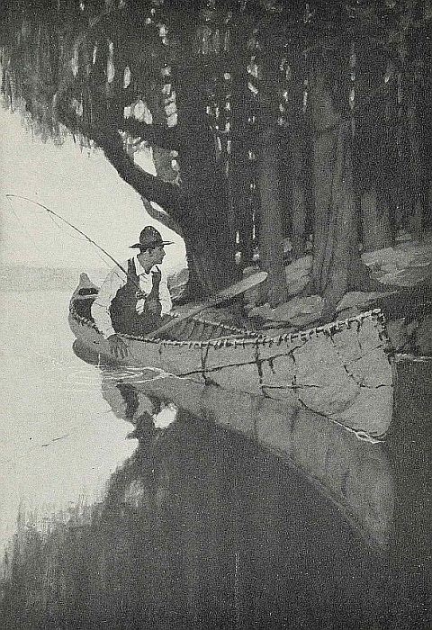
(page 60)
“The feeling stole over him without the slightest warning. He was not alone.”
Here, in deeper water, and some twenty yards from the shore, he paused and strained both sight and hearing to find some possible clue. He felt half ashamed, now that the first strange feeling passed a little. But the certainty [Pg 61] remained. Absurd as it was, he felt positive that some one watched him with concentrated and intent regard. Every fiber in his being told him so; and though he could discover no figure, no new outline on the shore, he could even have sworn in which clump of willow bushes the hidden person crouched and stared. His attention seemed drawn to that particular clump.
The water dripped slowly from his paddle, now lying across the thwarts. There was no other sound. The canvas of his tent gleamed dimly. A star or two were out. He waited. Nothing happened.
Then, as suddenly as it had come, the feeling passed, and he knew that the person who had been watching him intently had gone. It was as if a current had been turned off; the normal world flowed back; the landscape emptied as if some one had left a room. The disagreeable feeling left him at the same time, so that he instantly turned the canoe in to the shore again, landed, and, paddle in hand, went over to examine the clump of willows he had singled out as the place of concealment. There was no one there, of course, or any trace of recent human occupancy. No leaves, no branches stirred, nor was a single twig displaced; his keen and practised sight detected no sign of tracks upon the ground. Yet, for all that, he felt positive that a little time ago some one had crouched among these very leaves and watched him. He remained absolutely convinced of it. The watcher, whether Indian, hunter, stray lumberman, or wandering half-breed, had now withdrawn, a search was useless, and dusk was falling. He returned to his little camp, more disturbed perhaps than he cared to acknowledge. He cooked his supper, hung up his catch on a string, so that no prowling animal could get at it during the night, and prepared to make himself comfortable until bed-time. Unconsciously, he built a bigger fire than usual, and found himself peering over his pipe into the deep shadows beyond the firelight, straining his ears to catch the slightest sound. He remained generally on the alert in a way that was new to him.
A man under such conditions and in such a place need[Pg 62] not know discomfort until the sense of loneliness strikes him as too vivid a reality. Loneliness in a backwoods camp brings charm, pleasure, and a happy sense of calm until, and unless, it comes too near. It should remain an ingredient only among other conditions; it should not be directly, vividly noticed. Once it has crept within short range, however, it may easily cross the narrow line between comfort and discomfort, and darkness is an undesirable time for the transition. A curious dread may easily follow—the dread lest the loneliness suddenly be disturbed, and the solitary human feel himself open to attack.
For Hyde, now, this transition had been already accomplished; the too intimate sense of his loneliness had shifted abruptly into the worse condition of no longer being quite alone. It was an awkward moment, and the hotel clerk realized his position exactly. He did not quite like it. He sat there, with his back to the blazing logs, a very visible object in the light, while all about him the darkness of the forest lay like an impenetrable wall. He could not see a foot beyond the small circle of his camp-fire; the silence about him was like the silence of the dead. No leaf rustled, no wave lapped; he himself sat motionless as a log.
Then again he became suddenly aware that the person who watched him had returned, and that same intent and concentrated gaze as before was fixed upon him where he lay. There was no warning; he heard no stealthy tread or snapping of dry twigs, yet the owner of those steady eyes was very close to him, probably not a dozen feet away. This sense of proximity was overwhelming.
It is unquestionable that a shiver ran down his spine. This time, moreover, he felt positive that the man crouched just beyond the firelight, the distance he himself could see being nicely calculated, and straight in front of him. For some minutes he sat without stirring a single muscle, yet with each muscle ready and alert, straining his eyes in vain to pierce the darkness, but only succeeding in dazzling his sight with the reflected light. Then, as he shifted his position slowly, cautiously, to obtain another angle of vision, his[Pg 63] heart gave two big thumps against his ribs and the hair seemed to rise on his scalp with the sense of cold that shot horribly up his spine. In the darkness facing him he saw two small and greenish circles that were certainly a pair of eyes, yet not the eyes of Indian, hunter, or of any human being. It was a pair of animal eyes that stared so fixedly at him out of the night. And this certainty had an immediate and natural effect upon him.
For, at the menace of those eyes, the fears of millions of long dead hunters since the dawn of time woke in him. Hotel clerk though he was, heredity surged through him in an automatic wave of instinct. His hand groped for a weapon. His fingers fell on the iron head of his small camp ax, and at once he was himself again. Confidence returned; the vague, superstitious dread was gone. This was a bear or wolf that smelt his catch and came to steal it. With beings of that sort he knew instinctively how to deal, yet admitting, by this very instinct, that his original dread had been of quite another kind.
“I'll damned quick find out what it is,” he exclaimed aloud, and snatching a burning brand from the fire, he hurled it with good aim straight at the eyes of the beast before him.
The bit of pitch-pine fell in a shower of sparks that lit the dry grass this side of the animal, flared up a moment, then died quickly down again. But in that instant of bright illumination he saw clearly what his unwelcome visitor was. A big timber wolf sat on its hindquarters, staring steadily at him through the firelight. He saw its legs and shoulders, he saw its hair, he saw also the big hemlock trunks lit up behind it, and the willow scrub on each side. It formed a vivid, clear-cut picture shown in clear detail by the momentary blaze. To his amazement, however, the wolf did not turn and bolt away from the burning log, but withdrew a few yards only, and sat there again on its haunches, staring, staring as before. Heavens, how it stared! He “shoed” it, but without effect; it did not budge. He did not waste another good log on it, for his fear was dissipated now, and a[Pg 64] timber wolf was a timber wolf, and it might sit there as long as it pleased, provided it did not try to steal his catch. No alarm was in him any more. He knew that wolves were harmless in the summer and autumn, and even when “packed” in the winter, they would attack a man only when suffering desperate hunger. So he lay and watched the beast, threw bits of stick in its direction, even talked to it, wondering only that it never moved. “You can stay there forever, if you like,” he remarked to it aloud, “for you cannot get at my fish, and the rest of the grub I shall take into the tent with me.”
The creature blinked its bright green eyes, but made no move.
Why, then, if his fear was gone, did he think of certain things as he rolled himself in the Hudson Bay blankets before going to sleep? The immobility of the animal was strange, its refusal to turn and bolt was still stranger. Never before had he known a wild creature that was not afraid of fire. Why did it sit and watch him, as with purpose in its dreadful eyes? How had he felt its presence earlier and instantly? A timber wolf, especially a solitary timber wolf, was a timid thing, yet this one feared neither man nor fire. Now as he lay there wrapped in his blankets inside the cozy tent, it sat outside beneath the stars, beside the fading embers, the wind chilly in its fur, the ground cooling beneath its planted paws, watching him, steadily watching him, perhaps until the dawn.
It was unusual, it was strange. Having neither imagination nor tradition, he called upon no store of racial visions. Matter of fact, a hotel clerk on a fishing holiday, he lay there in his blankets, merely wondering and puzzled. A timber wolf was a timber wolf and nothing more. Yet this timber wolf—the idea haunted him—was different. In a word, the deeper part of his original uneasiness remained. He tossed about, he shivered sometimes in his broken sleep, he did not go out to see, but he woke early and unrefreshed.
Again, with the sunshine and the morning wind, however, the incident of the night before was forgotten, almost unreal.[Pg 65] His hunting zeal was uppermost. The tea and fish were delicious, his pipe had never tasted so good, the glory of this lonely lake amid primeval forests went to his head a little; he was a hunter before the Lord,[27] and nothing else. He tried the edge of the lake, and in the excitement of playing a big fish, knew suddenly that it, the wolf, was there. He paused with the rod, exactly as if struck. He looked about him, he looked in a definite direction. The brilliant sunshine made every smallest detail clear and sharp—boulders of granite, burned stems, crimson sumach, pebbles along the shore in neat, separate detail—without revealing where the watcher hid. Then, his sight wandering farther inshore among the tangled undergrowth, he suddenly picked up the familiar, half-expected outline. The wolf was lying behind a granite boulder, so that only the head, the muzzle, and the eyes were visible. It merged in its background. Had he not known it was a wolf, he could never have separated it from the landscape. The eyes shone in the sunlight.
There it lay. He looked straight at it. Their eyes, in fact, actually met full and square. “Great Scot!” he exclaimed aloud, “why, it's like looking at a human being!” And from that moment, unwittingly, he established a singular personal relation with the beast. And what followed confirmed this undesirable impression, for the animal rose instantly and came down in leisurely fashion to the shore, where it stood looking back at him. It stood and stared into his eyes like some great wild dog, so that he was aware of a new and almost incredible sensation—that it courted recognition.
“Well! well!” he exclaimed again, relieving his feelings by addressing it aloud, “if this doesn't beat everything I ever saw! What d' you want, anyway?”
He examined it now more carefully. He had never seen a wolf so big before; it was a tremendous beast, a nasty customer to tackle, he reflected, if it ever came to that. It stood there absolutely fearless and full of confidence. In [Pg 66]the clear sunlight he took in every detail of it—a huge, shaggy, lean-flanked timber wolf, its wicked eyes staring straight into his own, almost with a kind of purpose in them. He saw its great jaws, its teeth, and its tongue, hung out, dropping saliva a little. And yet the idea of its savagery, its fierceness, was very little in him.
He was amazed and puzzled beyond belief. He wished the Indian would come back. He did not understand this strange behavior in an animal. Its eyes, the odd expression in them, gave him a queer, unusual, difficult feeling. Had his nerves gone wrong? he almost wondered.
The beast stood on the shore and looked at him. He wished for the first time that he had brought a rifle. With a resounding smack he brought his paddle down flat upon the water, using all his strength, till the echoes rang as from a pistol-shot that was audible from one end of the lake to the other. The wolf never stirred. He shouted, but the beast remained unmoved. He blinked his eyes, speaking as to a dog, a domestic animal, a creature accustomed to human ways. It blinked its eyes in return.
At length, increasing his distance from the shore, he continued fishing, and the excitement of the marvelous sport held his attention—his surface attention, at any rate. At times he almost forgot the attendant beast; yet whenever he looked up, he saw it there. And worse; when he slowly paddled home again, he observed it trotting along the shore as though to keep him company. Crossing a little bay, he spurted, hoping to reach the other point before his undesired and undesirable attendant. Instantly the brute broke into that rapid, tireless lope that, except on ice, can run down anything on four legs in the woods. When he reached the distant point, the wolf was waiting for him. He raised his paddle from the water, pausing a moment for reflection; for this very close attention—there were dusk and night yet to come—he certainly did not relish. His camp was near; he had to land; he felt uncomfortable even in the sunshine of broad day, when, to his keen relief, about half a mile from the tent, he saw the creature suddenly stop and sit[Pg 67] down in the open. He waited a moment, then paddled on. It did not follow. There was no attempt to move; it merely sat and watched him. After a few hundred yards, he looked back. It was still sitting where he left it. And the absurd, yet significant, feeling came to him that the beast divined his thought, his anxiety, his dread, and was now showing him, as well as it could, that it entertained no hostile feeling and did not meditate attack.
He turned the canoe toward the shore; he landed; he cooked his supper in the dusk; the animal made no sign. Not far away it certainly lay and watched, but it did not advance. And to Hyde, observant now in a new way, came one sharp, vivid reminder of the strange atmosphere into which his commonplace personality had strayed: he suddenly recalled that his relations with the beast, already established, had progressed distinctly a stage further. This startled him, yet without the accompanying alarm he must certainly have felt twenty-four hours before. He had an understanding with the wolf. He was aware of friendly thoughts toward it. He even went so far as to set out a few big fish on the spot where he had first seen it sitting the previous night. “If he comes,” he thought, “he is welcome to them. I've got plenty, anyway.” He thought of it now as “he.”
Yet the wolf made no appearance until he was in the act of entering his tent a good deal later. It was close on ten o'clock, whereas nine was his hour, and late at that, for turning in. He had, therefore, unconsciously been waiting for him. Then, as he was closing the flap, he saw the eyes close to where he had placed the fish. He waited, hiding himself, and expecting to hear sounds of munching jaws; but all was silence. Only the eyes glowed steadily out of the background of pitch darkness. He closed the flap. He had no slightest fear. In ten minutes he was sound asleep.
He could not have slept very long, for when he woke up he could see the shine of a faint red light through the canvas, and the fire had not died down completely. He rose and cautiously peeped out. The air was very cold; he saw his breath. But he also saw the wolf, for it had come in, and[Pg 68] was sitting by the dying embers, not two yards away from where he crouched behind the flap. And this time, at these very close quarters, there was something in the attitude of the big wild thing that caught his attention with a vivid thrill of startled surprise and a sudden shock of cold that held him spellbound. He stared, unable to believe his eyes; for the wolf's attitude conveyed to him something familiar that at first he was unable to explain. Its pose reached him in the terms of another thing with which he was entirely at home. What was it? Did his senses betray him? Was he still asleep and dreaming?
Then, suddenly, with a start of uncanny recognition, he knew. Its attitude was that of a dog. Having found the clue, his mind then made an awful leap. For it was, after all, no dog its appearance aped, but something nearer to himself, and more familiar still. Good heavens! It sat there with the pose, the attitude, the gesture in repose of something almost human. And then, with a second shock of biting wonder, it came to him like a revelation. The wolf sat beside that camp-fire as a man might sit.
Before he could weigh his extraordinary discovery, before he could examine it in detail or with care, the animal, sitting in this ghastly fashion, seemed to feel his eyes fixed on it. It slowly turned and looked him in the face, and for the first time Hyde felt a full-blooded, superstitious fear flood through his entire being. He seemed transfixed with that nameless terror that is said to attack human beings who suddenly face the dead, finding themselves bereft of speech and movement. This moment of paralysis certainly occurred. Its passing, however, was as singular as its advent. For almost at once he was aware of something beyond and above this mockery of human attitude and pose, something that ran along unaccustomed nerves and reached his feeling, even perhaps his heart. The revulsion was extraordinary, its result still more extraordinary and unexpected. Yet the fact remains. He was aware of another thing that had the effect of stilling his terror as soon as it was born. He was aware of appeal, silent, half-expressed, yet vastly pathetic. He saw[Pg 69] in the savage eyes a beseeching, even a yearning, expression that changed his mood as by magic from dread to natural sympathy. The great gray brute, symbol of cruel ferocity, sat there beside his dying fire and appealed for help.
This gulf betwixt animal and human seemed in that instant bridged. It was, of course, incredible. Hyde, sleep still possibly clinging to his inner being with the shades and half-shapes of dream yet about his soul, acknowledged, how he knew not, the amazing fact. He found himself nodding to the brute in half-consent, and instantly, without more ado, the lean gray shape rose like a wraith and trotted off swiftly, but with stealthy tread into the background of the night.
When Hyde woke in the morning his first impression was that he must have dreamed the entire incident. His practical nature asserted itself. There was a bite in the fresh autumn air; the bright sun allowed no half-lights anywhere; he felt brisk in mind and body. Reviewing what had happened, he came to the conclusion that it was utterly vain to speculate; no possible explanation of the animal's behavior occurred to him: he was dealing with something entirely outside his experience. His fear, however, had completely left him. The odd sense of friendliness remained. The beast had a definite purpose, and he himself was included in that purpose. His sympathy held good.
But with the sympathy there was also an intense curiosity. “If it shows itself again,” he told himself, “I'll go up close and find out what it wants.” The fish laid out the night before had not been touched.
It must have been a full hour after breakfast when he next saw the brute; it was standing on the edge of the clearing, looking at him in the way now become familiar. Hyde immediately picked up his ax and advanced toward it boldly, keeping his eyes fixed straight upon its own. There was nervousness in him, but kept well under; nothing betrayed it; step by step he drew nearer until some ten yards separated them. The wolf had not stirred a muscle as yet. Its jaws hung open, its eyes observed him intently; it allowed him to approach without a sign of what its mood might[Pg 70] be. Then, with these ten yards between them, it turned abruptly and moved slowly off, looking back first over one shoulder and then over the other, exactly as a dog might do, to see if he was following.
A singular journey it was they then made together, animal and man. The trees surrounded them at once, for they left the lake behind them, entering the tangled bush beyond. The beast, Hyde noticed, obviously picked the easiest track for him to follow; for obstacles that meant nothing to the four-legged expert, yet were difficult for a man, were carefully avoided with an almost uncanny skill, while yet the general direction was accurately kept. Occasionally there were windfalls to be surmounted; but though the wolf bounded over these with ease, it was always waiting for the man on the other side after he had laboriously climbed over. Deeper and deeper into the heart of the lonely forest they penetrated in this singular fashion, cutting across the arc of the lake's crescent, it seemed to Hyde; for after two miles or so, he recognized the big rocky bluff that overhung the water at its northern end. This outstanding bluff he had seen from his camp, one side of it falling sheer into the water; it was probably the spot, he imagined, where the Indians held their medicine-making ceremonies, for it stood out in isolated fashion, and its top formed a private plateau not easy of access. And it was here, close to a big spruce at the foot of the bluff upon the forest side, that the wolf stopped suddenly and for the first time since its appearance gave audible expression to its feelings. It sat down on its haunches, lifted its muzzle with open jaws, and gave vent to a subdued and long-drawn howl that was more like the wail of a dog than the fierce barking cry associated with a wolf.
By this time Hyde had lost not only fear, but caution, too; nor, oddly enough, did this warning howl revive a sign of unwelcome emotion in him. In that curious sound he detected the same message that the eyes conveyed—appeal for help. He paused, nevertheless, a little startled, and while the wolf sat waiting for him, he looked about him quickly.[Pg 71] There was young timber here; it had once been a small clearing, evidently. Ax and fire had done their work, but there was evidence to an experienced eye that it was Indians and not white men who had once been busy here. Some part of the medicine ritual, doubtless, took place in the little clearing, thought the man, as he advanced again toward his patient leader. The end of their queer journey, he felt, was close at hand.
He had not taken two steps before the animal got up and moved very slowly in the direction of some low bushes that formed a clump just beyond. It entered these, first looking back to make sure that its companion watched. The bushes hid it; a moment later it emerged again. Twice it performed this pantomime, each time, as it reappeared, standing still and staring at the man with as distinct an expression of appeal in the eyes as an animal may compass, probably. Its excitement, meanwhile, certainly increased, and this excitement was, with equal certainty, communicated to the man. Hyde made up his mind quickly. Gripping his ax tightly, and ready to use it at the first hint of malice, he moved slowly nearer to the bushes, wondering with something of a tremor what would happen.
If he expected to be startled, his expectation was at once fulfilled; but it was the behavior of the beast that made him jump. It positively frisked about him like a happy dog. It frisked for joy. Its excitement was intense, yet from its open mouth no sound was audible. With a sudden leap, then, it bounded past him into the clump of bushes, against whose very edge he stood and began scraping vigorously at the ground. Hyde stood and stared, amazement and interest now banishing all his nervousness, even when the beast, in its violent scraping, actually touched his body with its own. He had, perhaps, the feeling that he was in a dream, one of those fantastic dreams in which things may happen without involving an adequate surprise; for otherwise the manner of scraping and scratching at the ground must have seemed an impossible phenomenon. No wolf, no dog certainly, used its paws in the way those paws[Pg 72] were working. Hyde had the odd, distressing sensation that it was hands, not paws, he watched. And yet, somehow, the natural, adequate surprise he should have felt, was absent. The strange action seemed not entirely unnatural. In his heart some deep hidden spring of sympathy and pity stirred instead. He was aware of pathos.
The wolf stopped in its task and looked up into his face. Hyde acted without hesitation then. Afterward he was wholly at a loss to explain his own conduct. It seemed he knew what to do, divined what was asked, expected of him. Between his mind and the dumb desire yearning through the savage animal there was intelligent and intelligible communication. He cut a stake and sharpened it, for the stones would blunt his ax-edge. He entered the clump of bushes to complete the digging his four-legged companion had begun. And while he worked, though he did not forget the close proximity of the wolf, he paid no attention to it; often his back was turned as he stooped over the laborious clearing away of the hard earth; no uneasiness or sense of danger was in him any more. The wolf sat outside the clump and watched the operations. Its concentrated attention, its patience, its intense eagerness, the gentleness and docility of the gray, fierce, and probably hungry brute, its obvious pleasure and satisfaction, too, at having won the human to its mysterious purpose—these were colors in the strange picture that Hyde thought of later when dealing with the human herd in his hotel again. At the moment he was aware chiefly of pathos and affection. The whole business was, of course, not to be believed, but that discovery came later, too, when telling it to others.
The digging continued for fully half an hour before his labor was rewarded by the discovery of a small whitish object. He picked it up and examined it—the finger-bone of a man. Other discoveries then followed quickly and in quantity. The cache was laid bare. He collected nearly the complete skeleton. The skull, however, he found last, and might not have found at all but for the guidance of his strangely alert companion. It lay some few yards away from the central hole[Pg 73] now dug, and the wolf stood nuzzling the ground with its nose before Hyde understood that he was meant to dig exactly in that spot for it. Between the beast's very paws his stake struck hard upon it. He scraped the earth from the bone and examined it carefully. It was perfect, save for the fact that some wild animal had gnawed it, the teeth-marks being still plainly visible. Close beside it lay the rusty iron head of a tomahawk. This and the smallness of the bones confirmed him in his judgment that it was the skeleton not of a white man, but of an Indian.
During the excitement of the discovery of the bones one by one, and finally of the skull, but, more especially, during the period of intense interest while Hyde was examining them, he had paid little, if any, attention to the wolf. He was aware that it sat and watched him, never moving its keen eyes for a single moment from the actual operations, but of sign or movement it made none at all. He knew that it was pleased and satisfied, he knew also that he had now fulfilled its purpose in a great measure. The further intuition that now came to him, derived, he felt positive, from his companion's dumb desire, was perhaps the cream of the entire experience to him. Gathering the bones together in his coat, he carried them, together with the tomahawk, to the foot of the big spruce where the animal had first stopped. His leg actually touched the creature's muzzle as he passed. It turned its head to watch, but did not follow, nor did it move a muscle while he prepared the platform of boughs upon which he then laid the poor worn bones of an Indian who had been killed, doubtless, in sudden attack or ambush, and to whose remains had been denied the last grace of proper tribal burial. He wrapped the bones in bark; he laid the tomahawk beside the skull; he lit the circular fire round the pyre, and the blue smoke rose upward into the clear bright sunshine of the Canadian autumn morning till it was lost among the mighty trees far overhead.
In the moment before actually lighting the little fire he had turned to note what his companion did. It sat five wards away, he saw, gazing intently, and one of its front[Pg 74] paws was raised a little from the ground. It made no sign of any kind. He finished the work, becoming so absorbed in it that he had eyes for nothing but the tending and guarding of his careful ceremonial fire. It was only when the platform of boughs collapsed, laying their charred burden gently on the fragrant earth among the soft wood ashes, that he turned again, as though to show the wolf what he had done, and seek, perhaps, some look of satisfaction in its curiously expressive eyes. But the place he searched was empty. The wolf had gone.
He did not see it again; it gave no sign of its presence anywhere; he was not watched. He fished as before, wandered through the bush about his camp, sat smoking round his fire after dark, and slept peacefully in his cozy little tent. He was not disturbed. No howl was ever audible in the distant forest, no twig snapped beneath a stealthy tread, he saw no eyes. The wolf that behaved like a man had gone forever.
It was the day before he left that Hyde, noticing smoke rising from the shack across the lake, paddled over to exchange a word or two with the Indian, who had evidently now returned. The redskin came down to meet him as he landed, but it was soon plain that he spoke very little English. He emitted the familiar grunts at first; then bit by bit Hyde stirred his limited vocabulary into action. The net result, however, was slight enough, though it was certainly direct:
“You camp there?” the man asked, pointing to the other side.
“Yes.”
“Wolf come?”
“Yes.”
“You see wolf?”
“Yes.”
The Indian stared at him fixedly a moment, a keen, wondering look upon his coppery, creased face.
“You 'fraid wolf?” he asked after a moment's pause.
“No,” replied Hyde, truthfully. He knew it was useless to ask questions of his own, though he was eager for[Pg 75] information. The other would have told him nothing. It was sheer luck that the man had touched on the subject at all, and Hyde realized that his own best rôle was merely to answer, but to ask no questions. Then, suddenly, the Indian became comparatively voluble. There was awe in his voice and manner.
“Him no wolf. Him big medicine wolf. Him spirit wolf.”
Whereupon he drank the tea the other had brewed for him, closed his lips tightly, and said no more. His outline was discernible on the shore, rigid and motionless, an hour later, when Hyde's canoe turned the corner of the lake three miles away, and landed to make the portages up the first rapid of his homeward stream.
It was Morton who, after some persuasion, supplied further details of what he called the legend. Some hundred years before, the tribe that lived in the territory beyond the lake began their annual medicine-making ceremonies on the big rocky bluff at the northern end; but no medicine could be made. The spirits, declared the chief medicine man, would not answer. They were offended. An investigation followed. It was discovered that a young brave had recently killed a wolf, a thing strictly forbidden, since the wolf was the totem animal of the tribe. To make matters worse, the name of the guilty man was Running Wolf. The offense being unpardonable, the man was cursed and driven from the tribe:
“Go out. Wander alone among the woods, and if we see you, we slay you. Your bones shall be scattered in the forest, and your spirit shall not enter the Happy Hunting Grounds till one of another race shall find and bury them.”
“Which meant,” explained Morton, laconically, his only comment on the story, “probably forever.”
[Pg 76]
| 1. The Haunted House | 11. The Dancing Squirrels |
| 2. Mysterious Footprints | 12. Footsteps at Night |
| 3. A Strange Echo | 13. The Lost Cemetery |
| 4. Warned in Time | 14. The Woman in Black |
| 5. A Haunting Dream | 15. The Dead Patriot |
| 6. My Great-Grandfather | 16. The Cat That Came Back |
| 7. The Old Grave | 17. The Church Bell |
| 8. The Ruined Church | 18. The Old Battlefield |
| 9. Tap! Tap! Tap! | 19. The Indians' Camp |
| 10. Prophetic Birds | 20. The Hessian's Grave |
If you are to imitate Running Wolf successfully you must first think of a story of the supernatural, a simple, easily-understood story that will have a foundation of fact, and that will appear to be reasonable in its use of the supernatural. Then, without introducing your story immediately, show how a person who knows nothing of it takes part in a series of events that lead him to understand the story.
Make the setting of your story one that will contribute strongly to the central effect. Do not give any definite explanation of the events that you narrate. Give your reader such an abundance of suggestion that he will be led to infer a supernatural explanation.
Hold until the last the basic story on which you found your entire narration.
FOOTNOTES:
[27] A reference to Genesis 10:9, where Nimrod is called “a mighty hunter before the Lord.”
[Pg 77]
THE BIOGRAPHICAL ESSAY
By ANZIA YEZIERSKA
In 1896 Miss Yezierska came from Plotzk in Russian Poland, where she was born. After hard experiences in a “sweat shop” she became a teacher of cooking. She is the author of Hungry Hearts. Her dialect stories, strongly realistic and touching, appear in many magazines.
An autobiography is a straightforward story of the life of the writer. An autobiographical essay is a meditation on the events in one's own life.
How I Found America is an autobiographical essay. It does not tell the story of the writer's life: it tells the writer's thoughts preceding and after her arrival in America. As in all good essays, the subject is much greater than the writer. The meditation is purely personal, but it stirs a response in every thoughtful reader. It asks and answers the questions: “What do oppressed foreigners think America to be?” “What do immigrants find America to be?” “How can we make immigrants into the most helpful Americans?”
The anecdotes that make the parts of the essay are as graphic as so many bold drawings. The principal sections of the essay are as distinct as the chapters of a book. At all times this essay concerns the question, “What is it to be an American?”
In some respects this particular essay is like a musical composition; for it begins with a sort of prelude, rises through a series of movements, and culminates in a triumphant close, the whole composition being marked by the presence of a strong motif—the exaltation of the true spirit of America.
Every breath I drew was a breath of fear, every shadow a stifling shock, every footfall struck on my heart like the heavy boot of the Cossack. On a low stool in the middle of the only room in our mud hut sat my father, his red beard falling over the Book of Isaiah, open before him. On the tile stove, on the benches that were our beds, even on the earthen floor, sat the neighbors' children, learning from him the ancient poetry of the Hebrew race. As he chanted, the children repeated:
[Pg 78]
The voice of him that crieth in the wilderness,
Prepare ye the way of the Lord.
Make straight in the desert a highway for our God.
Every valley shall be exalted,
And every mountain and hill shall be made low,
And the crooked shall be made straight,
And the rough places plain,
And the glory of God shall be revealed,
And all flesh shall see it together.
Undisturbed by the swaying and chanting of teacher and pupils, old Kakah, our speckled hen, with her brood of chicks, strutted and pecked at the potato-peelings that fell from my mother's lap as she prepared our noon meal.
I stood at the window watching the road, lest the Cossack come upon us unawares to enforce the ukase of the czar, which would tear the last bread from our mouths: “No chadir [Hebrew school] shall be held in a room used for cooking and sleeping.”
With one eye I watched ravenously my mother cutting chunks of black bread. At last the potatoes were ready. She poured them out of an iron pot into a wooden bowl and placed them in the center of the table.
Instantly the swaying and chanting ceased. The children rushed forward. The fear of the Cossack was swept away from my heart by the fear that the children would get my potato, and deserting my post, with a shout of joy I seized my portion and bit a huge mouthful of mealy delight.
At that moment the door was driven open by the blow of an iron heel. The Cossack's whip swished through the air. Screaming, we scattered. The children ran out—our livelihood with them.
“Oi weh!” wailed my mother, clutching at her breast, “is there a God over us and sees all this?”
With grief-glazed eyes my father muttered a broken prayer as the Cossack thundered the ukase: “A thousand-ruble fine, or a year in prison, if you are ever found again teaching children where you're eating and sleeping.”
“Gottunieu!” then pleaded my mother, “would you tear the last skin from our bones? Where else should we be[Pg 79] eating and sleeping? Or should we keep chadir in the middle of the road? Have we houses with separate rooms like the czar?”
Ignoring my mother's protests, the Cossack strode out of the hut. My father sank into a chair, his head bowed in the silent grief of the helpless.
My mother wrung her hands.
“God from the world, is there no end to our troubles? When will the earth cover me and my woes?”
I watched the Cossack disappear down the road. All at once I saw the whole village running toward us. I dragged my mother to the window to see the approaching crowd.
“Gevalt! what more is falling over our heads?” she cried in alarm.
Masheh Mindel, the water-carrier's wife, headed a wild procession. The baker, the butcher, the shoemaker, the tailor, the goatherd, the workers in the fields, with their wives and children pressed toward us through a cloud of dust.
Masheh Mindel, almost fainting, fell in front of the doorway.
“A letter from America!” she gasped.
“A letter from America!” echoed the crowd as they snatched the letter from her and thrust it into my father's hands.
“Read, read!” they shouted tumultuously.
My father looked through the letter, his lips uttering no sound. In breathless suspense the crowd gazed at him. Their eyes shone with wonder and reverence for the only man in the village who could read. Masheh Mindel crouched at his feet, her neck stretched toward him to catch each precious word of the letter.
To my worthy wife, Masheh Mindel, and to my loving son, Sushkah Feivel, and to my darling daughter, the apple of my eye, the pride of my life, Tzipkeleh!
Long years and good luck on you! May the blessings from heaven fall over your beloved heads and save you from all harm!
First I come to tell you that I am well and in good health. May I hear the same from you!
[Pg 80]
Secondly, I am telling you that my sun is beginning to shine in America. I am becoming a person—a business man. I have for myself a stand in the most crowded part of America, where people are as thick as flies and every day is like market-day at a fair. My business is from bananas and apples. The day begins with my push-cart full of fruit, and the day never ends before I can count up at least two dollars' profit. That means four rubles. Stand before your eyes, I, Gedalyah Mindel, four rubles a day; twenty-four rubles a week!
“Gedalyah Mindel, the water-carrier, twenty-four rubles a week!” The words leaped like fire in the air.
We gazed at his wife, Masheh Mindel, a dried-out bone of a woman.
“Masheh Mindel, with a husband in America, Masheh Mindel the wife of a man earning twenty-four rubles a week! The sky is falling to the earth!”
We looked at her with new reverence. Already she was a being from another world. The dead, sunken eyes became alive with light. The worry for bread that had tightened the skin of her cheek-bones was gone. The sudden surge of happiness filled out her features, flushing her face as with wine. The two starved children clinging to her skirts, dazed with excitement, only dimly realized their good fortune in the envious glances of the others. But the letter went on:
Thirdly, I come to tell you, white bread and meat I eat every day, just like the millionaires. Fourthly, I have to tell you that I am no more Gedalyah Mindel. Mister Mindel they call me in America. Fifthly, Masheh Mindel and my dear children, in America there are no mud huts where cows and chickens and people live all together. I have for myself a separate room, with a closed door, and before any one can come to me, he must knock, and I can say, “Come in,” or “Stay out,” like a king in a palace. Lastly, my darling family and people of the village of Sukovoly, there is no czar in America.
My father paused. The hush was stifling. “No czar—no czar in America!” Even the little babies repeated the chant, “No czar in America!”
In America they ask everybody who should be the President. And I, Gedalyah Mindel, when I take out my citizen's papers, will have as much to say who shall be our next President as Mr. Rockefeller, the[Pg 81] greatest millionaire. Fifty rubles I am sending you for your ship-ticket to America. And may all Jews who suffer in Golluth from ukases and pogroms live yet to lift up their heads like me, Gedalyah Mindel, in America.
Fifty rubles! A ship-ticket to America! That so much good luck should fall on one head! A savage envy bit us. Gloomy darts from narrowed eyes stabbed Masheh Mindel. Why should not we, too, have a chance to get away from this dark land! Has not every heart the same hunger for America, the same longing to live and laugh and breathe like a free human being? America is for all. Why should only Masheh Mindel and her children have a chance to the New World?
Murmuring and gesticulating, the crowd dispersed. Every one knew every one else's thought—how to get to America. What could they pawn? From where could they borrow for a ship-ticket?
Silently, we followed my father back into the hut from which the Cossack had driven us a while before. We children looked from mother to father and from father to mother.
“Gottunieu! the czar himself is pushing us to America by this last ukase.” My mother's face lighted up the hut like a lamp.
“Meshugeneh Yideneh!” admonished my father. “Always your head in the air. What—where—America? With what money? Can dead people lift themselves up to dance?”
“Dance?” The samovar and the brass pots reëchoed my mother's laughter. “I could dance myself over the waves of the ocean to America.”
In amazed delight at my mother's joy, we children rippled and chuckled with her. My father paced the room, his face dark with dread for the morrow.
“Empty hands, empty pockets; yet it dreams itself in you—America,” he said.
“Who is poor who has hopes on America?” flaunted my mother.
“Sell my red-quilted petticoat that grandmother left for my dowry,” I urged in excitement.
[Pg 82]
“Sell the feather-beds, sell the samovar,” chorused the children.
“Sure, we can sell everything—the goat and all the winter things,” added my mother. “It must be always summer in America.”
I flung my arms around my brother, and he seized Bessie by the curls, and we danced about the room, crazy with joy.
“Beggars!” said my laughing mother. “Why are you so happy with yourselves? How will you go to America without a shirt on your back, without shoes on your feet?”
But we ran out into the road, shouting and singing:
“We'll sell everything we got; we're going to America. White bread and meat we'll eat every day in America, in America!”
That very evening we brought Berel Zalman, the usurer, and showed him all our treasures, piled up in the middle of the hut.
“Look! All these fine feather-beds, Berel Zalman!” urged my mother. “This grand fur coat came from Nijny[28] itself. My grandfather bought it at the fair.”
I held up my red-quilted petticoat, the supreme sacrifice of my ten-year-old life. Even my father shyly pushed forward the samovar.
“It can hold enough tea for the whole village,” he declared.
“Only a hundred rubles for them all!” pleaded my mother, “only enough to lift us to America! Only one hundred little rubles!”
“A hundred rubles! Pfui!” sniffed the pawnbroker. “Forty is overpaid. Not even thirty is it worth.”
But, coaxing and cajoling, my mother got a hundred rubles out of him.
Steerage, dirty bundles, foul odors, seasick humanity; but I saw and heard nothing of the foulness and ugliness [Pg 83]about me. I floated in showers of sunshine; visions upon visions of the New World opened before me. From lip to lip flowed the golden legend of the golden country:
“In America you can say what you feel, you can voice your thoughts in the open streets without fear of a Cossack.”
“In America is a home for everybody. The land is your land, not, as in Russia, where you feel yourself a stranger in the village where you were born and reared, the village in which your father and grandfather lie buried.”
“Everybody is with everybody alike in America. Christians and Jews are brothers together.”
“An end to the worry for bread, an end to the fear of the bosses over you. Everybody can do what he wants with his life in America.”
“There are no high or low in America. Even the President holds hands with Gedalyah Mindel.”
“Plenty for all. Learning flows free, like milk and honey.”
“Learning flows free.” The words painted pictures in my mind. I saw before me free schools, free colleges, free libraries, where I could learn and learn and keep on learning. In our village was a school, but only for Christian children. In the schools of America I'd lift up my head and laugh and dance, a child with other children. Like a bird in the air, from sky to sky, from star to star, I'd soar and soar.
“Land! land!” came the joyous shout. All crowded and pushed on deck. They strained and stretched to get the first glimpse of the “golden country,” lifting their children on their shoulders that they might see beyond them. Men fell on their knees to pray. Women hugged their babies and wept. Children danced. Strangers embraced and kissed like old friends. Old men and old women had in their eyes a look of young people in love. Age-old visions sang themselves in me, songs of freedom of an oppressed people. America! America!
Between buildings that loomed like mountains we struggled[Pg 84] with our bundles, spreading around us the smell of the steerage. Up Broadway, under the bridge, and through the swarming streets of the Ghetto, we followed Gedalyah Mindel.
I looked about the narrow streets of squeezed-in stores and houses, ragged clothes, dirty bedding oozing out of the windows, ash-cans and garbage-cans cluttering the sidewalks. A vague sadness pressed down my heart, the first doubt of America.
“Where are the green fields and open spaces in America?” cried my heart. “Where is the golden country of my dreams?” A loneliness for the fragrant silence of the woods that lay beyond our mud hut welled up in my heart, a longing for the soft, responsive earth of our village streets. All about me was the hardness of brick and stone, the smells of crowded poverty.
“Here's your house, with separate rooms like a palace,” said Gedalyah Mindel, and flung open the door of a dingy, airless flat.
“Oi weh!” cried my mother in dismay. “Where's the sunshine in America?” She went to the window and looked out at the blank wall of the next house. “Gottunieu! Like in a grave so dark!”
“It ain't so dark; it's only a little shady,” said Gedalyah Mindel, and lighted the gas. “Look only!”—he pointed with pride to the dim gas-light—“No candles, no kerosene lamps, in America. You turn on a screw, and put to it a match, and you got it light like with sunshine.”
Again the shadow fell over me, again the doubt of America. In America were rooms without sunlight; rooms to sleep in, to eat in, to cook in, but without sunshine, and Gedalyah Mindel was happy. Could I be satisfied with just a place to sleep in and eat in, and a door to shut people out, to take the place of sunlight? Or would I always need the sunlight to be happy? And where was there a place in America for me to play? I looked out into the alley below, and saw pale-faced children scrambling in the gutter. “Where is America?” cried my heart.
[Pg 85]
My eyes were shutting themselves with sleep. Blindly I felt for the buttons on my dress; and buttoning, I sank back in sleep again—the dead-weight sleep of utter exhaustion.
“Heart of mine,” my mother's voice moaned above me, “father is already gone an hour. You know how they'll squeeze from you a nickel for every minute you're late. Quick only!”
I seized my bread and herring and tumbled down the stairs and out into the street. I ate running, blindly pressing through the hurrying throngs of workers, my haste and fear choking every mouthful. I felt a strangling in my throat as I neared the sweat-shop prison; all my nerves screwed together into iron hardness to endure the day's torture.
For an instant I hesitated as I faced the grated windows of the old building. Dirt and decay cried out from every crumbling brick. In the maw of the shop raged around me the roar and the clatter, the merciless grind, of the pounding machines. Half-maddened, half-deadened, I struggled to think, to feel, to remember. What am I? Who am I? Why am I here? I struggled in vain, bewildered and lost in a whirlpool of noise. “America—America, where was America?” it cried in my heart.
Then came the factory whistle, the slowing down of the machines, the shout of release hailing the noon hour. I woke as from a tense nightmare, a weary waking to pain. In the dark chaos of my brain reason began to dawn. In my stifled heart feelings began to pulse. The wound of my wasted life began to throb and ache. With my childhood choked with drudgery, must my youth, too, die unlived?
Here were the odor of herring and garlic, the ravenous munching of food, laughter and loud, vulgar jokes. Was it only I who was so wretched? I looked at those around me. Were they happy or only insensible to their slavery? How could they laugh and joke? Why were they not torn with rebellion against this galling grind, the crushing, deadening movements of the body, where only hands live, and hearts and brains must die?
[Pg 86]
I felt a touch on my shoulder and looked up. It was Yetta Solomon, from the machine next to mine.
“Here's your tea.”
I stared at her, half-hearing.
“Ain't you going to eat nothing?”
“Oi weh, Yetta! I can't stand it!” The cry broke from me. “I didn't come to America to turn into a machine. I came to America to make from myself a person. Does America want only my hands, only the strength of my body, not my heart, not my feelings, my thoughts?”
“Our heads ain't smart enough,” said Yetta, practically. “We ain't been to school, like the American-born.”
“What for did I come to America but to go to school, to learn, to think, to make something beautiful from my life?”
“'Sh! 'Sh! The boss! the boss!” came the warning whisper.
A sudden hush fell over the shop as the boss entered. He raised his hand. There was breathless silence. The hard, red face with the pig's eyes held us under its sickening spell. Again I saw the Cossack and heard him thunder the ukase. Prepared for disaster, the girls paled as they cast at one another sidelong, frightened glances.
“Hands,” he addressed us, fingering the gold watch-chain that spread across his fat stomach, “it's slack in the other trades, and I can get plenty girls begging themselves to work for half what you're getting; only I ain't a skinner. I always give my hands a show to earn their bread. From now on I'll give you fifty cents a dozen shirts instead of seventy-five, but I'll give you night-work, so you needn't lose nothing.” And he was gone.
The stillness of death filled the shop. Every one felt the heart of the other bleed with her own helplessness. A sudden sound broke the silence. A woman sobbed chokingly. It was Balah Rifkin, a widow with three children.
“Oi weh!”—she tore at her scrawny neck,—“the bloodsucker! the thief! How will I give them to eat, my babies, my hungry little lambs!”
[Pg 87]
“Why do we let him choke us?”
“Twenty-five cents less on a dozen—how will we be able to live?”
“He tears the last skin from our bones.”
“Why didn't nobody speak up to him?”
Something in me forced me forward. I forgot for the moment how my whole family depended on my job. I forgot that my father was out of work and we had received a notice to move for unpaid rent. The helplessness of the girls around me drove me to strength.
“I'll go to the boss,” I cried, my nerves quivering with fierce excitement. “I'll tell him Balah Rifkin has three hungry mouths to feed.”
Pale, hungry faces thrust themselves toward me, thin, knotted hands reached out, starved bodies pressed close about me.
“Long years on you!” cried Balah Rifkin, drying her eyes with a corner of her shawl.
“Tell him about my old father and me, his only bread-giver,” came from Bessie Sopolsky, a gaunt-faced girl with a hacking cough.
“And I got no father or mother, and four of them younger than me hanging on my neck.” Jennie Feist's beautiful young face was already scarred with the gray worries of age.
America, as the oppressed of all lands have dreamed America to be, and America as it is, flashed before me, a banner of fire. Behind me I felt masses pressing, thousands of immigrants; thousands upon thousands crushed by injustice, lifted me as on wings.
I entered the boss's office without a shadow of fear. I was not I; the wrongs of my people burned through me till I felt the very flesh of my body a living flame of rebellion. I faced the boss.
“We can't stand it,” I cried. “Even as it is we're hungry. Fifty cents a dozen would starve us. Can you, a Jew, tear the bread from another Jew's mouth?”
“You fresh mouth, you! Who are you to learn me my business?”
[Pg 88]
“Weren't you yourself once a machine slave, your life in the hands of your boss?”
“You loafer! Money for nothing you want! The minute they begin to talk English they get flies in their nose. A black year on you, trouble-maker! I'll have no smart heads in my shop! Such freshness! Out you get! Out from my shop!”
Stunned and hopeless, the wings of my courage broken, I groped my way back to them—back to the eager, waiting faces, back to the crushed hearts aching with mine.
As I opened the door, they read our defeat in my face.
“Girls,”—I held out my hands—“he's fired me.” My voice died in the silence. Not a girl stirred. Their heads only bent closer over their machines.
“Here, you, get yourself out of here!” the boss thundered at me. “Bessie Sopolsky and you, Balah Rifkin, take out her machine into the hall. I want no big-mounted Americanerins in my shop.”
Bessie Sopolsky and Balah Rifkin, their eyes black with tragedy, carried out my machine. Not a hand was held out to me, not a face met mine. I felt them shrink from me as I passed them on my way out.
In the street I found I was crying. The new hope that had flowed in me so strongly bled out of my veins. A moment before, our unity had made me believe us so strong, and now I saw each alone, crushed, broken. What were they all but crawling worms, servile grubbers for bread?
And then in the very bitterness of my resentment the hardness broke in me. I saw the girls through their own eyes, as if I were inside of them. What else could they have done? Was not an immediate crust of bread for Balah Rifkin's children more urgent than truth, more vital than honor? Could it be that they ever had dreamed of America as I had dreamed? Had their faith in America wholly died in them? Could my faith be killed as theirs had been?
Gasping from running, Yetta Solomon flung her arms around me.
“You golden heart! I sneaked myself out from the shop[Pg 89] only to tell you I'll come to see you to-night. I'd give the blood from under my nails for you, only I got to run back. I got to hold my job. My mother—”
I hardly saw or heard her. My senses were stunned with my defeat. I walked on in a blind daze, feeling that any moment I would drop in the middle of the street from sheer exhaustion. Every hope I had clung to, every human stay, every reality, was torn from under me. Was it then only a dream, a mirage of the hungry-hearted people in the desert lands of oppression, this age-old faith in America?
Again I saw the mob of dusty villagers crowding about my father as he read the letter from America, their eager faces thrust out, their eyes blazing with the same hope, the same faith, that had driven me on. Had the starved villagers of Sukovoly lifted above their sorrows a mere rainbow vision that led them—where? Where? To the stifling submission of the sweat-shop or the desperation of the streets!
“God! God!” My eyes sought the sky, praying, “where—where is America?”
Times changed. The sweat-shop conditions that I had lived through had become a relic of the past. Wages had doubled, tripled; they went up higher and higher, and the working-day became shorter and shorter. I began to earn enough to move my family uptown into a sunny, airy flat with electricity and telephone service. I even saved up enough to buy a phonograph and a piano.
My knotted nerves relaxed. At last I had become free from the worry for bread and rent, but I was not happy. A more restless discontent than ever before ate out my heart. Freedom from stomach needs only intensified the needs of my soul.
I ached and clamored for America. Higher wages and shorter hours of work, mere physical comfort, were not yet America. I had dreamed that America was a place where the heart could grow big with giving. Though outwardly I had become prosperous, life still forced me into an existence of mere getting and getting.
[Pg 90]
Ach! how I longed for a friend, a real American friend, some one to whom I could express the thoughts and feelings that choked me! In the Bronx, the uptown Ghetto, I felt myself farther away from the spirit of America than ever before. In the East Side the people had yet alive in their eyes the old, old dreams of America, the America that would release the age-old hunger to give; but in the prosperous Bronx good eating and good sleeping replaced the spiritual need for giving. The chase for dollars and diamonds deadened the dreams that had once brought them to America.
More and more the all-consuming need for a friend possessed me. In the street, in the cars, in the subways, I was always seeking, ceaselessly seeking for eyes, a face, the flash of a smile that would be light in my darkness.
I felt sometimes that I was only burning out my heart for a shadow, an echo, a wild dream, but I couldn't help it. Nothing was real to me but my hope of finding a friend. America was not America to me unless I could find an American that would make America real.
The hunger of my heart drove me to the night-school. Again my dream flamed. Again America beckoned. In the school there would be education, air, life for my cramped-in spirit. I would learn to think, to form the thoughts that surged formless in me. I would find the teacher that would make me articulate.
I joined the literature class. They were reading “The De Coverley Papers.” Filled with insatiate thirst, I drank in every line with the feeling that any moment I would get to the fountain-heart of revelation. Night after night I read with tireless devotion. But of what? The manners and customs of the eighteenth century, of people two hundred years dead.
One evening, after a month's attendance, when the class had dwindled from fifty to four, and the teacher began scolding us who were present for those who were absent, my bitterness broke.
“Do you know why all the girls are dropping away from the class? It's because they have too much sense than to[Pg 91] waste themselves on 'The De Coverley Papers.' Us four girls are four fools. We could learn more in the streets. It's dirty and wrong, but it's life. What are 'The De Coverley Papers'? Dry dust fit for the ash-can.”
“Perhaps you had better tell the principal your ideas of the standard classics,” she scoffed, white with rage.
“All right,” I snapped, and hurried down to the principal's office.
I swung open the door.
“I just want to tell you why I'm leaving. I—”
“Won't you come in?” The principal rose and placed a chair for me near her desk. “Now tell me all.” She leaned forward with an inviting interest.
I looked up, and met the steady gaze of eyes shining with light. In a moment all my anger fled. “The De Coverley Papers” were forgotten. The warm friendliness of her face held me like a familiar dream. I couldn't speak. It was as if the sky suddenly opened in my heart.
“Do go on,” she said, and gave me a quick nod. “I want to hear.”
The repression of centuries rushed out of my heart. I told her everything—of the mud hut in Sukovoly where I was born, of the czar's pogroms, of the constant fear of the Cossack, of Gedalyah Mindel's letter, of our hopes in coming to America, and my search for an American who would make America real.
“I am so glad you came to me,” she said. And after a pause, “You can help me.”
“Help you?” I cried. It was the first time that an American suggested that I could help her.
“Yes, indeed. I have always wanted to know more of that mysterious, vibrant life—the immigrant. You can help me know my girls. You have so much to give—”
“Give—that's what I was hungering and thirsting all these years—to give out what's in me. I was dying in the unused riches of my soul.”
“I know; I know just what you mean,” she said, putting her hand on mine.
[Pg 92]
My whole being seemed to change in the warmth of her comprehension. “I have a friend,” it sang itself in me. “I have a friend!”
“And you are a born American?” I asked. There was none of that sure, all-right look of the Americans about her.
“Yes, indeed. My mother, like so many mothers,”—and her eyebrows lifted humorously whimsical,—“claims we're descendants of the Pilgrim Fathers, and that one of our lineal ancestors came over in the Mayflower.”
“For all your mother's pride in the Pilgrim Fathers, you yourself are as plain from the heart as an immigrant.”
“Weren't the Pilgrim Fathers immigrants two hundred years ago?”
She took from her desk a book and read to me.
Then she opened her arms to me, and breathlessly I felt myself drawn to her. Bonds seemed to burst. A suffusion of light filled my being. Great choirings lifted me in space. I walked out unseeingly.
All the way home the words she read flamed before me: “We go forth all to seek America. And in the seeking we create her. In the quality of our search shall be the nature of the America that we create.”
So all those lonely years of seeking and praying were not in vain. How glad I was that I had not stopped at the husk, a good job, a good living! Through my inarticulate groping and reaching out I had found the soul, the spirit of America.
| 1. How I Became a Good American | 11. Modernizing the De Coverley Papers |
| 2. An Immigrant's Experience | 12. The Value of Sympathy |
| 3. The Meaning of Freedom | 13. The Spirit of America |
| 4. The Land of Opportunity | 14. Showing the Way |
| 5. Making Good Americans | 15. First Experiences in America |
| 6. The School and the Immigrant | 16. Letters from People in Other Lands |
| 7. My Coming to America | 17. Being a Good American |
| 8. Life in the Crowded Sections | 18. Enemies of America |
| 9. Sweat Shop Experiences | 19. Uplifting the Foreign-Born |
| 10. My Various Homes | 20. The America I Love |
Write down some worthy thought that you have concerning America. Then write a series of extremely personal incidents that will show graphically how you arrived at the thought you have in mind. Make the incidents short, condensed, and highly emphatic. Employ realistic characters, and give realistic quotations from their speech. Use the incorrect grammar, the slang, and the foreign words that the characters employ daily. Arrange the incidents so that they will rise more and more to your principal thought. Make your last incident reveal that thought.
FOOTNOTES:
[28] Nijny-Novgorood. A Russian city on the Volga, the scene of a great annual fair.
[Pg 94]
By WILLIAM HENRY SHELTON
(1840-). An American patriot and author. He served in many battles in the Civil War, and had thrilling experiences as a prisoner of war, escaping no less than four times. He is author of A Man Without a Memory; The Last Three Soldiers; The Three Prisoners.
Every one has happy memories of childhood. He loves to conjure up the old familiar scenes, the kindly people, and the days that were days of wonder.
The two sketches by Mr. Shelton are extracts from a long essay called Our Village, in which he recalls delightfully all his early surroundings and all his old companionships.
In these extracts, as in the entire essay, Mr. Shelton avoids formal autobiography. He merely recalls the things that impressed him most. As far as possible he lifts himself back into the spirit of the past, and sees once again, but with added love, the things that have gone forever.
One day in the summer when I was four years old I was taken to the village school at the foot of the hill below the tavern. I have no recollection of how I got there, but my return to my grandmother's was so dramatic that it has impressed itself indelibly on my memory. Perhaps I was taken to school by the sentimental schoolmistress herself, who was a girl of sixteen and an intimate friend of my aunt, to whom, in after years, when she became a famous novelist, she used to send her books. Her maiden name was Mary Jane Hawes, but there was a red-haired, freckle-faced boy in one of the pretty houses facing the side of the church, who went to Yale College and gave her another name.
The school-house consisted of one room, with an entry without any floor where the wood was cut and stored. The school-room was square, with a box-stove in the center. A form against the wall extended around three sides of the room, affording seats for the larger pupils, and in front of[Pg 95] these a row of oak desks for slates and books was fantastically carved by generations of jack-knives, and made against the backs of a second row of desks was a low front form for the A-B-C children. On the fourth side, flanking the door, were a blackboard on one hand and on the other the schoolma'am's desk, usually decorated with a bunch of wild flowers or a red apple, either the gifts of a sincere admirer or the would-be bribe of some trembling delinquent.
On the occasion of my first visit to the school I wore a blue-and-white dress of muslin-de-laine that was afterward made into a cushion for a rocking-chair in my mother's parlor. I was evidently dressed in my very best in honor of the occasion, and all went well until recess came. There was a rumble of thunder, and the sky had been growing dark with portent of storm, and the leaves and dust were flying on the wind when the children were released for play. I wanted to do everything that the other boys did, and so, when they scampered out with a rush, I followed without fear. Just as we came into the open the thunder-storm burst upon us. The wind blew off one boy's hat and whirled it in the direction of the village, and all the other boys joined in the chase. As I started to follow them a gust of wind and rain beat me to the ground, and drenched my dress with mud and water.
I was promptly rescued by the schoolma'am and taken into the entry, where she undressed me on the wood-pile and wrapped me in her own woolen shawl, which was a black-and-red pattern of very large squares. Thus bundled up and rendered quite helpless except as to my lungs, I was laid on the floor near the stove, where I remained for the amusement of the children until the shower was over, when a bushel-basket was sent for to the nearest house, which was the house of shoemaker Talmadge. Into this basket, commonly used for potatoes and corn, I was put, wrapped in the black-and-red shawl and packed around with my soiled clothes, and two of the big boys, John Pierpont and John Talmadge, carried me up the hill and through the village to my grandmother's house.
[Pg 96]
In the summer following I went to school again, and again to the sentimental schoolma'am, who loved to teach, but abhorred to punish. Her gentle punishments rarely frightened the youngest children.
She would say, “Henry, you have disobeyed me, and I shall have to cut off your ear,” and with these ominous words she would draw the back of her penknife across the threatened ear. I must have been very small, for on one occasion she threatened to shut me up in one of the school desks.
Our mad recreation out of school was “playing horse.” We drove each other singly and in pairs by means of wooden bits and reins of sheep-twine, and some prancing horses were led, chewing one end of a twine string, and neighing and prancing almost beyond the control of the infant groom.
In the congressman's woods, close by the school-house, we built stalls and mangers against logs and in fence corners, and gathered horse-sorrel and sheep-sorrel for hay. The stalls were bedded with grass and protected from the sun by a roof of green boughs, and the horses were watered and curried and groomed in imitation of that service at the stage stables, and the steeds themselves kicked and bit like the vicious leaders.
Other teachers followed the young and sentimental one, and the surplus of the dinner-baskets, thrown out of the window or cast upon the wood-pile, bred a colony of gray rats that lived under the school-house and came out to take the air in the quiet period after the door was padlocked at night and even ventured to come up into the school-room and look over the books and otherwise nibble at learning. When I had advanced to the dignity of pictorial geography, as set forth in a thin, square-built, dog-eared volume, which not having been opened for a whole day by a certain prancing horse, he was left to learn his lesson while the teacher went to tea at the house below the tavern, and the wheat stubble under the window was soon alive with gray rodents that looked like the colony of seals in the geography.
About this time the rats, having taken formal possession of the old school-house, a new school-house was built in our village just beyond my grandmother's house and facing her orchard.
[Pg 97]
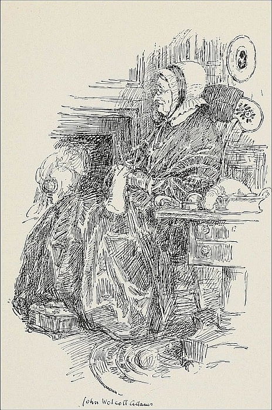
(page 97)
“My great-grandmother.”
My great-grandmother was the widow of an Episcopal clergyman, the Rev. Titus Welton, whose son was the first rector of the village church. My only acquaintance with my great-grandfather was connected with the white headstone that bore his name in the graveyard. With the exception of a quaint water-color portrait in profile of my grandmother in a mob-cap bound with a black ribbon, which was equally a portrait of the flowered back of the rocking-chair in which she sat, she survives in my memory in a series of pictures. I see her sitting before the open fire, knitting, with one steel needle held in a knitting-sheath pinned to her left side, or taking snuff from a flat, round box that contained a vanilla bean to perfume the snuff. Her hands were twisted with rheumatism, and she walked with a cane. On one occasion I trotted by her side to church and carried her tin foot-stove, warm with glowing coals.
She slept in a high post bed in her particular room over the sitting-room, which was warmed in winter by a sheet-iron drum connected with the stove below, and in one corner was a copper warming-pan with a long handle. When I sat at table in my high-chair eating apple-pie in a bowl of milk, she sat on the side nearest the fire eating dipped toast with a two-tined fork. The fork may have had three tines, but silver forks had not yet made their appearance.
My great-grandmother lived just long enough to have her picture taken on a plate of silvered copper by the wonderful process of Daguerre,[29] a process so like something diabolical that she protected her soul from evil, as all sitters in that part of the country did, by resting her hand on a great Bible, the back turned to the front, so that the letters “Holy Bible” could be read, proving that the great book [Pg 98]was not a profane dictionary. The operator who took her daguerreotype traveled from town to town, hiring a room in the village tavern furnished with a chair, a stand on tripod legs, a brown linen table-cloth, and the aforesaid Bible, and when such of the people as had the fee to spare, the courage to submit to a new-fangled idea, and no fear that the face on the magical plate would fade away like any other spirit face when they opened the stamped-leather case with the red plush lining after it had lain overnight in the darkened parlor, he moved on like the cracker baker or any other itinerant showman.
My great-grandmother had never sent or received a message by telegraph or ridden in a railway-carriage, and died in peace just before those portentous inventions came to destroy forever the small community life in which she had lived.
| 1. My First Schooldays | 11. Punishments I Remember |
| 2. My Grandparents | 12. Queer Old Customs |
| 3. An Early Misfortune | 13. My First Superstitions |
| 4. Some Vanished Friends | 14. A Wonderful Day |
| 5. My Old Home | 15. Gifts |
| 6. Playmates | 16. My First School-books |
| 7. Old Toys | 17. Pictures of Childhood |
| 8. My First Games | 18. My Relatives |
| 9. A First Visit | 19. A Great Event |
| 10. My First Costumes | 20. Relics of the Past |
[Pg 99]
Throw yourself back into the past. Conjure up the people with whom you used to associate. See once again the places where you played and where you lived. Think how happy it all was, and how good it is to look at it once more. Then put down on paper the things that you remember with the greatest interest. Write in such a way that you will give the reader the very spirit that you have. Remember: you are not to communicate facts; you are to communicate emotion.
FOOTNOTES:
[29] Louis Daguerre (1789-1859). A French painter who perfected one of the earliest methods of photography.
[Pg 100]
By SADAKICHI HARTMANN
Author of the first History of American Art, and also of a History of Japanese Art. His poems, short stories, and essays appear in many magazines.
John Burroughs was a delightful essayist and a delightful man. Although he preferred to live the most simple of lives and to spend his time in meditation on the beauties of natural scenery, and the wonders of animal life, he attracted to himself the companionship of some of the greatest in the land, and the love of all people. To visit him would, indeed, have been a delight.
A Visit to John Burroughs is not a dull narrative of the events of a visit, nor is it the report of an interview with the nature-lover. It is an article that admits one into the charm of Burroughs' spirit. We are with the man in his simple, book-filled home; we learn his love for pasture and mountain-side, for birds and for gardening; and we gain some of that spirit of contentment and peace that made him, in his gray old age, appear like a prophet in the midst of an over-hurrying generation.
In some places time passes without making any change. The little village on the Hudson where John Burroughs made his home half a century ago has shown no ambition of expansion. There is no building activity, and the number of inhabitants has scarcely increased. The little church stands drowsily on the hill, and the same old homesteads grace the road. More freight-trains may rattle by, and more automobiles pass on the main road, but the physiognomy of the town has remained unchanged. It is as if time had stood still. The mist shuts out the rest of the world, river and hills disappear, the stems of the grape-vines look like a host of goblins, and the wet trees make darker silhouettes than usual.
I knocked at a door and entered, and there sat John Burroughs stretched at full length in a Morris chair before some glowing beech-sticks in the open fireplace. There was not much conversation. What is most interesting in an author's life he expresses in his books, and so we indulged[Pg 101] only in an exchange of phrases about his health, of the flight of time, and a few favored authors. The questioning of the interviewer can produce only forced results, and in particular when the interviewed person has reached an age when taciturnity becomes natural, and one prefers to gaze at the dying embers and listen to the drip of the rain outside. That his interest in literature did not lag was shown by a set of Fabre,[30] whom he pronounced the most wonderful exponent in his special line.
A quaint interior was this quiet little room. Conspicuous were the portraits of Whitman,[31] Carlyle,[32] Tolstoy,[33] Roosevelt,[34] and Father Brown of the Holy Order of the Cross, men who in one way or another must have meant something to his life. On the mantelpiece stood another portrait of Whitman and a reproduction of “Mona Lisa.”[35] There were windows on every side, and the rest of the walls consisted of shelves filled with nature books. One shelf displayed the more scientific works, and one was devoted entirely to his own writings. It was the same room in which several years ago, on a summer day in the vagrom days of youth, I had read for the first time “Wake Robin,”[36] that classic of out-of-door literature, and “The Flight of the Eagle,” an appreciation of Walt Whitman.
John Burroughs was fifty then, and had just settled down [Pg 102]seriously to his literary pursuits. He had risen brilliantly from youthful penury to be the owner of a large estate. His latest achievement was “Signs and Seasons”; “Riverby,” a number of essays of out-of-door observations around his stone house by the Hudson, was in the making.
There is a wonderful fascination in these books. They reveal a man who has lived widely and intimately, who has made nature his real home. All day long he is mingled with the heart of things; every walk along the river, into the woods, or up the hills is an adventure. He exploits the teachings of experience rather than of books. His essays are always fused with actions of the open. One feels exhilaration in making the acquaintance of a man with an unnarrowed soul who has burst free from the shackles of intellectual authority, who joyfully and buoyantly interprets the beauties about him, shunning no such pleasures as jumping a fence, wading a brook, or climbing a tree or mountain-side.
American literature has always abounded with nature speculation and research. Bryant[37] was a true poet of nature; he loved woods, mountain, and river, and his “To the Yellow Wood Violet,” and “The Blue Gentian” are gems of pictorial nature-writing. Whittier[38] transfigured the beauty of New England life in one poem “Snowbound,” and in his “Autumn Walk” leisurely strolled to the portals of immortality. Whitman stalked about on the open road like a pantheist.[39]
Yet none had the faculties of discovery and interpretation like John Burroughs, the intimate knowledge, the warm vision, to which a wood-pile can become a matter of contemplation, and a back yard or a garden patch become as interesting as any scenery in the world. None of them could have lectured on apple-trees or gray squirrels with such intimacy as Burroughs. Burroughs has never any sympathy [Pg 103]with the “pathetic fallacy of endowing inanimate objects with human attributes,” nor would he indorse Machin's propaganda idea of the antagonism of animals against their human masters.
A trout leaping in a mountain stream, the lively whistle of a bird high in the upper air, a bird's nest in an old fence post—these are some of the topics nearest his heart. No nature-writer has ever shown such diversity of interest. Even Rip Van Winkle did not know the mountains as well as does this camper and tramper for a lifetime on the same familiar grounds; over and over again he makes the round from Riverby to Slabsides, to Roxbury in the western Catskills, and back again to the rustic studio near the river. He knows every pasture, mountain-side, and valley of his chosen land. He even named some of the hills. One of them, much frequented by bees, he named “Mount Hymettus,”[40] because there “from out the garden hives, the humming cyclone of humming bees” liked to congregate.
But is his minute observation of weed seeds in the open field or insect eggs on tree-trunks not disastrous to literary expression? Can this style of writing soar above straightforward nature-writing of men like Wilson,[41] Muir,[42] White,[43] and Chapman?[44] Burroughs is capable of making a long-winded analysis of the downward perch of the head of the nut-hatch, but he is no Audubon.[45] As a literary man he is an essayist who etches little vignettes, one after the other, with rare precision. How fine is his sentence about the unmusical song of the blackbirds! “The air is filled with [Pg 104]crackling, splintering, spurting, semi-musical sounds which are like salt and pepper to the ear.” Here the poetic temperament finds an utterance far beyond the broad knowledge of nature.
And there is his fine appreciation of Walt Whitman, his grasp of literary values despite working in a comparatively smaller field of activity. John Burroughs has a good deal of Whitman about him, whom he called “the one mountain in our literary landscape.” The man of Riverby is not large of stature, but has the same nonchalance of deportment, the flowing beard, and the ruddy face, a few shades darker than that of the good gray poet; for Whitman was, after all, a city man, while Burroughs always lived his life out of doors.
We talked about the looks of Whitman, whom he had known in Washington in the sixties.
“Yes, he had a decided vitality, although he was already gray and bent at that time. Yes, he would talk if one could draw him out.”
“I believe he talked only for Traubel,”[46] I dryly remarked, at which Burroughs was greatly amused.
Emerson[47] was the god of Burroughs's youth, but Whitman undoubtedly exercised the more lasting influence. This, however, never touched Burroughs's own peculiar nature-fresh-and-homespun style. It lingered only as a vague inspiration in the under rhythm of his work. Whitman had the macrocosmic vision,[48] while Burroughs is an adherent of microcosm. Few can combine both qualities.
Burroughs is an amateur farmer and gardener. He prunes his cherrytrees, cures hay, and thinks of new methods of mowing grain. He experimented with grape-vines, a rather futile occupation at this period of social evolution. He has [Pg 105]been a great cherry-picker all his life, and I remember with keen pleasure how delicious those wild raspberries tasted that I shared with him one summer day. He has a celery farm at Roxbury, his birthplace, and when I was last at Slabsides, his bungalow in the hills near West Park, I saw nothing but beets for cattle. I was astonished at this peculiar, indeed, prosaic pastime. And still more so that he had chosen for residence a site in a hollow of the mountain-side, while only a few steps above one can enjoy a most gorgeous view of the surrounding country. Did he make the selection because the place is more sheltered? No, I believe he chose the place intuitively, because it expresses his particular point of view of life. The keen breeze and the wide view serve only for occasional inspiration; but the undergrowth vegetation, the crust of soil, the hum of insects, the little flowers—these are the true stimulants of his eloquent simplicity of style.
Burroughs professed to have a great admiration for Turguenieff's[49] “Diary of a Sportsman.” These exquisite prose poems represent nature at its best, but they are purely poetic, pictorial, with a big cosmic swing to them. This is out of the reach of Burroughs, and he never attempted it. His poems contain, as he says himself, more science and observation than poetry. A few beautiful lines everybody can learn to write, and unless they are fragments of a torso of the most intricate and beautiful construction, they will drop like the slanting rain into the dark wastes of oblivion.
His lessons of nature, accepted as text-books in the public schools, have a true message to convey. They represent the socialization of science. He loves the birds and learned their ways; he could run his course aright, as he has placed his goal rightly. He stirred the earth about the roots of his knowledge deeply, and thereby entered a new field of thought. He became interested in final causes, design in nature.
The transcendentalist[50] of the Emersonian period at last [Pg 106]came to his own. There is something of the bigness of Thoreau[51] in his recent writings, Thoreau who in his “Concord and Merrimac River” had a mystical vision, a grip on religious thought, and who, like a craftsman in cloisonné, hammered his philosophic speculations upon the frugal shapes of his observations. In “Ways of Nature” and “Leaf and Tendril” Burroughs has reached out as far as it is possible for a nature writer without becoming a philosopher. He now no longer contemplates the outward appearance of things, but their organic structure, the geological formation of the earth's crust, and the evolution of life. And some ledge of rock will now give him the prophetic gaze into the past and into the future.
And so John Burroughs at eighty-five, still chopping the wood for his own fireside, writing, lecturing, giving advice about phases of farm-work, strolling over the ground, still interested in literature, can serenely fold his hands and wait.
Indeed, this white-bearded man, in his bark-covered study amidst veiled heights and blurred river scenes, furnishes a wonderful intimate picture which will linger in American literature and in the minds of all who yearn for a more intimate knowledge of nature, unaffectedly told, like the song of the robin of his first love, “a harbinger of spring thoughts carrying with it the fragrance of the first flowers and the improving verdure of the fields.”
[Pg 107]
| 1. A Visit with My Teacher | 11. Our Unusual Caller |
| 2. A Call on an Interesting Person | 12. A Talk with a Tramp |
| 3. In the Office of the Principal | 13. The Beggar's Life |
| 4. Visiting My Relatives | 14. My Cousin |
| 5. A Visit to Another School than My Own | 15. A Talk with an Expert |
| 6. A Talk with a Fireman | 16. My Friend, the Carpenter |
| 7. A Talk with a Policeman | 17. Interviewing a Peddler |
| 8. An Interview with a Stranger | 18. Talking with a Missionary |
| 9. The Man in the Office | 19. In the Printer's Office |
| 10. The Busy Clerk | 20. The Railroad Conductor |
Write about an actual visit or interview. In all your work pay most attention to presenting the spirit of the person whom you talk with. The events of your visit, and the remarks that are made, are of less importance than the things that reveal spirit,—the surroundings, the costume, the habits, the work done and the various things that show character. The essay is in no sense to be the story of a visit; it is to give an intimate picture of the person in whom you are interested. Your object is to show character.
FOOTNOTES:
[30] Jean Henri Fabre (1823-1915). A French entomologist who wrote many volumes on insect life, among them being The Life and Love of the Insects; The Life of the Spider; The Life of the Fly.
[31] Walt Whitman (1819-1892). An American poet, noted for highly original poems marked by absence of rhyme and metre. Whitman loved the outdoor world, and had great philosophic insight.
[32] Thomas Carlyle (1795-1881). A brilliant English essayist and historian, strikingly original and unconventional, and a firm upholder of stalwart manhood.
[33] Count Leo Tolstoy (1828-1910). A great Russian novelist, reformer and philosopher,—a bold and original thinker.
[34] Theodore Roosevelt (1858-1919). Ranchman, author, soldier, explorer, and President of the United States, a man of sterling manhood and great personal fearlessness.
[35] Mona Lisa. A picture of a lady of Florence, painted about 1504 by Leonardo da Vinci, an Italian painter. The face has a peculiarly tantalizing expression.
[36] Wake Robin. One of John Burroughs' delightful outdoor books, written in 1870.
[37] William Cullen Bryant (1794-1878). The first great American poet; author of Thanatopsis; noted for his love of nature.
[38] John Greenleaf Whittier (1807-1892). An American poet who wrote lovingly of New England life and scenery. He is noted for his poems against slavery.
[39] Pantheist. One who sees God in everything that exists.
[40] Mount Hymettus. A mountain in Greece from which most excellent honey was obtained in classic times.
[41] Alexander Wilson (1766-1813). Born in Scotland and died in Philadelphia; author of a remarkable study of American birds, published in nine volumes.
[42] John Muir (1838-1914). An American naturalist and explorer of the west and of Alaska.
[43] Gilbert White (1720-1793). An English naturalist, noted for his Natural History and Antiquities of Selborne.
[44] Frank M. Chapman (1864—). An American writer on bird life. He is especially noted for excellent work in photographing birds.
[45] John James Audubon (1780-1851). A great American student of birds; noted for his exact drawings of birds.
[46] Horace Traubel (1858-1919). An American editor who was the literary executor of Walt Whitman.
[47] Ralph Waldo Emerson (1803-1882). An American poet and philosopher; a man of marked individuality and power.
[48] Macrocosmic. The sentence means that Whitman looked upon the world and upon the universe as a whole, while Burroughs studied little or individual things in order to understand the whole.
[49] Ivan Turguenieff (1818-1883). A Russian novelist whose Diary of a Sportsman aided in bringing about the freeing of Russian serfs.
[50] Transcendentalist. One who believes in principles that can not be proved by experiment.
[51] Henry David Thoreau (1817-1862). An American essayist, naturalist and philosopher.
[Pg 108]
By H. A. OGDEN
(1856—). An illustrator, particularly of American historical subjects, on which he is an authority. His most noted work is 71 color plates of uniforms of the U. S. Army, 1775-1906. He made the original cartoons for the Washington memorial window in the Valley Forge memorial. He is the author and illustrator of The Boys Book of Famous Regiments; Our Flag and Our Songs; The Voyage of the Mayflower; Our Army for Our Boys (joint author); and numerous magazine articles of a historical nature.
The ordinary magazine article, lacking the personal note, is not an essay. As a rule, such an article endeavors to present a subject in its entirety, to follow a strictly logical order, and to avoid any expression of personal reaction on the part of the writer.
Some magazine articles, however, are written in such an easy, chatty style, without any hint of attempt to cover a subject either completely or logically, that they approach the essay form.
Washington on Horseback is an article that closely resembles an essay. It is discursive, anecdotal, wandering and is much like a pleasant talk about Washington and his love of horses. Although the writer keeps himself entirely behind the scenes it is evident that he is a man who admires horses as well as manliness and courage.
“The best horseman of his age, and the most graceful figure that could be seen on horseback,” was Thomas Jefferson's opinion of his great fellow-Virginian, George Washington. From his early boyhood, a passionate fondness for the horse was a strong and lasting trait of our foremost American.
When a little boy of eight, he was given his first riding-lessons on his pony Hero by Uncle Ben, an old servant (perhaps a slave) of his father's.
On one occasion, when under the paternal eye, he tried over and over again to leap his pony. When he finally succeeded in doing so, both rider and pony fell; but jumping up, the boy was quickly in the saddle again, his father, a[Pg 109] masterful man who hated defeat, exclaiming, “That was ill ridden; try it again!” This happening near their home, his mother rushed out, greatly alarmed, and begged them to stop. Finding her entreaties were unheeded, she returned to the house protesting that her boy would “surely be murdered!” And during all of her long life this dread of the dangers her son incurred was one of her striking characteristics.
This early training in riding, however, was greatly to the boy's advantage; for his satisfaction in conquering horses and training them made him a fine horseman and prepared him for the coming years when he was to be so much in the saddle.
A notable instance of early intrepidity in the tall and athletic boy, in his early teens, in mastering a wild, unmanageable colt is related by G. W. P. Custis,[52] Washington's adopted son. The story goes that this colt, a thoroughbred sorrel, was a favorite of Washington's mother, her husband having been much attached to him. Of a vicious nature, no one had thus far ventured to ride him; so before breakfast one morning, George, aided by some of his companions, corraled the animal and succeeded in getting bit and bridle in place.
Leaping on his back, the venturesome youth was soon tearing around the enclosure at breakneck speed, keeping his seat firmly and managing his mount with a skill that surprised and relieved the fears of the other boys. An unlooked-for end to the struggle came, however, when, with a mighty effort, the horse reared and plunged with such violence that he burst a blood-vessel and in a moment was dead.
Looking at the fallen steed, the boys asked “What's to be done? Who will tell the tale?” The answer soon had to be given; for when they went in to the morning meal, Mrs. Washington asked if they had seen her favorite horse. Noting their embarrassment, she repeated the question; when George spoke up and told the whole story of the misadventure. “George, I forgive you, because you have had the [Pg 110]courage to tell the truth at once,” was her characteristic reply.
Upon their father's death, his accomplished brother Lawrence took an active interest in George's education and development. The boy had taken a strong hold on Lawrence's affection, which the younger brother returned by a devoted attachment. Among other accomplishments, George was encouraged to perfect his horsemanship by the promise of a horse, together with some riding clothes from London—especially a red coat and a pair of spurs, sure to appeal to the spirit and daring of the youth.
His first hunting venture, as told by Dr. Weir Mitchell[53] in “The Youth of Washington,” occurred on a Saturday morning,—a school holiday even in those days,—when, there being none to hinder, George having persuaded an old groom to saddle a hunter, he galloped off to a fox-hunting “meet” four miles away. Greatly amused, the assembled huntsmen asked if he could stay on, and if the horse knew he had a rider? To which George replied that the big sorrel he rode knew his business; and he was in at the kill of two foxes. On the way back the horse went lame, and on arriving at the stable the rider saw an overseer about to punish Sampson, the groom, for letting the boy take a horse that was about to be sold. He quickly dismounted and snatched the whip from the overseer's hand, exclaiming that he was to blame and should be whipped first. The man answered that his mother would decide what to do; but the boy never heard of the matter again. The anger he showed on this occasion caused old Sampson to admonish him never to “get angry with a horse.”
When about sixteen, George lived a great part of the time at Mount Vernon, Lawrence's home, where he made many friends among the “Old Dominion” gentry, the most prominent of them being Thomas, Lord Fairfax, an eccentric old bachelor, residing with his kindred at Belvoir, an adjoining estate on the Potomac. As this had been the home of Anne Fairfax, Lawrence's wife, the brothers were ever welcome [Pg 111]guests. Attracted to each other by the fact that both were bold and skilful riders and by their love of horses, a lifelong friendship was formed between the tall Virginian, a stripling in his teens, and the elderly English nobleman, and many a hard ride they took together, with a pack of hounds, over the rough country, chasing the gray foxes of that locality.
Settled at Mount Vernon, in the years following his marriage and up to the beginning of the War for Independence, Washington found great pleasure in his active, out-of-door life, his greatest amusement being the hunt, which gratified to the full his fondness for horses and dogs.
His stables were full, numbering at one time one hundred and forty horses, among them some of the finest animals in Virginia. Magnolia, an Arabian, was a favorite riding-horse; while Chinkling, Valiant, Ajax, and Blue-skin were also high-bred hunters. His pack of hounds was splendidly trained, and “meets” were held three times a week in the hunting season.
After breakfasting by candle-light, a start was made at daybreak. Splendidly mounted, and dressed in a blue coat, scarlet vest, buckskin breeches, and velvet cap, and in the lead,—for it was Washington's habit to stay close up with the hounds,—the excitement of the chase possessed a strong fascination for him.
These hunting parties are mentioned in many brief entries in his diaries. In 1768, he writes: “Mr. Bryan Fairfax, Mr. Grayson, and Phil Alexander came home by sunrise. Hunted and catched a fox with these: Lord Fairfax, his brother, and Colonel Fairfax and his brother; all of whom with Mr. Fairfax and Mr. Wilson of England dined here.” Again, on November 26 and 29: “Hunted again with the same party.” 1768,—January 8: “Hunting again with the same company—started a fox and run him four hours.” Thus we learn from his own pen how frequently this manly sport, that kept him young and strong, was followed by the boldest rider in all Virginia.
A seven-years absence during the war caused the hunting establishment of Mount Vernon to run down considerably;[Pg 112] but on returning in 1783, after peace came, the sport was renewed vigorously for a time.
Blue-skin, an iron-gray horse of great endurance in a long run, was the general's favorite mount during those days. With Billy Lee, the huntsman, blowing the big French horn, a present from Lafayette,—the fox was chased at full speed over the rough fields and through such tangled woods and thickets as would greatly astonish the huntsmen of to-day.
What with private affairs, official visits, and the crowd of guests at his home, Washington felt obliged to give up this sport he so loved, for his last hunt with the hounds is said to have been in 1785.
To return to his youthful days. At sixteen he was commissioned to survey Lord Fairfax's vast estates, and soon after was appointed a public surveyor. The three years of rough toil necessitated by his calling were spent continually in the saddle. Those youthful surveys, being made with George's characteristic thoroughness, stand unquestioned to this day.
The beginning of his active military career started with a long, difficult journey of five hundred miles to the French fort on the Ohio, most of which was made in the saddle. It was hard traveling for the young adjutant general of twenty-one accompanied by a small escort. On the return journey, the horses were abandoned, and it was when traveling on foot that his miraculous escapes from a shot fired by a treacherous Indian guide and from drowning, occurred.
When, in 1755, the British expedition against the French fort on the Monongahela, commanded by General Braddock, started out from Alexandria, Washington, acting as one of the general's aides, was too ill to start with it; but when the day of action came, the day that the French and Indians ambushed the “red-coats,” the young Virginia colonel, although still weak, rode everywhere on the field of slaughter, striving to rally the panic-stricken regulars; and although two horses had been shot under him, he was the only mounted officer left at the end of the fight.
On the occasion of Washington's first visit to Philadelphia,[Pg 113] New York, and Boston, in 1756, he rode the whole distance, with two aides and servants, to confer with Governor Shirley of Massachusetts and settle with him the question of his army rank. He was appropriately equipped for his mission, and the description of the little cavalcade is very striking. Washington, in full uniform of a Virginia colonel, a white-and-scarlet cloak, sword-knot of red and gold, his London-made holsters and saddle-cloth trimmed with his livery “lace” and the Washington arms, his aides also in uniform, with the servants in their white-and-scarlet liveries, their cocked hats edged with silver, bringing up the rear, attracted universal notice. Everywhere he was received with enthusiasm, his fame having gone before him. Dined and fêted in Philadelphia and New York, he spent ten days with the hospitable royal governor of Massachusetts. The whole journey was a success, bringing him, as it did, in contact with new scenes and people.
It seems noteworthy that in accounts of the campaigns and battles of the Revolution such frequent mention is made of the commander-in-chief on horseback. From the time he rode from Philadelphia to take command of the army at Cambridge, in 1775, down to the capitulation of Yorktown in 1783, his horses were an important factor in his campaigns. Among many such incidents, a notable one is that which occurred when, after the defeat of the Americans at Brooklyn and their retreat across the river to New York, Washington in his report to Congress wrote: “Our passage across the East River was effected yesterday morning; and for forty-eight hours preceding that I had hardly been off my horse and never closed my eyes.” He was, in fact, the last to leave, remaining until all his troops had been safely ferried across.
An all-night ride to Princeton, in bitter cold, over frozen roads, and, when day dawned, riding fearlessly over the field to rally his men, reining in his charger within thirty yards of the enemy, forms another well-known incident.
At the battle of Brandywine an old farmer was pressed into service to lead the way to where the battle was raging, and he relates that as his horse took the fences Washington was continually at his side, saying repeatedly: “Push along, old[Pg 114] man; push along!” Shortly after the defeat at Brandywine, General Howe's advance regiments were attacked at Germantown; and here, as at Princeton, Washington, in spite of the protests of his officers, rode recklessly to the front when things were going wrong.
After the hard winter at Valley Forge, and when in June of 1778 the British abandoned Philadelphia he took up the march to Sandy Hook, Washington resolved to attack them on their route. On crossing the Delaware in pursuit of the enemy, Governor William Livingston of New Jersey presented to the commander-in-chief a splendid white horse, upon which he hastened to the battle-field of Monmouth.
Mr. Custis in his “Recollections of Washington,” states that on the morning of the twenty-eighth of June, he rode, and for that time only during the war, a white charger. Galloping forward, he met General Charles Lee,[54] with the advanced guard, falling back in confusion. Indignant at the disobedience of his orders, Washington expressed his wrath in peremptory language, Lee being ordered to the rear. Riding back and forth through the fire of the enemy, animating his soldiers, and recalling them to their duty he reformed the lines and turned the battle tide by his vigorous measures. From the overpowering heat of the day, and the deep and sandy soil, his spirited white horse sank under him and expired. A chestnut mare, of Arabian stock, was quickly mounted, this beautiful animal being ridden through the rest of the battle. Lafayette, always an ardent admirer of Washington, told in later years of Monmouth, where he had commanded a division, and how his beloved chief, splendidly mounted, cheered on his men. “I thought then as now,” said the enthusiastic Frenchman, “that never had I beheld so superb a man.”
Of all his numerous war-horses, the greatest favorite was Nelson—a large, light sorrel, with white face and legs, named after the patriot governor of Virginia. In many battles,—often[Pg 115] under fire,—Nelson had carried his great master and was the favored steed at the crowning event of the war—the capitulation of Yorktown.
Living to a good old age, and never ridden after Washington ceased to mount him, the veteran charger was well taken care of, grazing in a paddock through the summers. And often, as the retired general and President made the rounds of his fields, the old war-horse would run neighing to the fence, to be caressed by the hand of his former master.
During the eight years of his Presidency, Washington frequently took exercise on horseback, his stables containing at that time as many as ten coach- and saddle-horses.
When in Philadelphia, then the seat of government, the President owned two pure white saddle-horses, named Prescott and Jackson, the former being a splendid animal, which, while accustomed to cannon-fire, waving flags, or martial music, had a bad habit of dancing about and shying when a coach, especially one containing ladies, would stop to greet the President. The other white horse, Jackson, was an Arab, with flowing mane and tail, but, being an impetuous and fretful animal, he was not a favorite.
A celebrated riding-teacher used to say that he loved “to see the general ride; his seat is so firm, his management of his mount so easy and graceful, that I, who am a professor of horsemanship, would go to him and learn to ride.”
Since his early boyhood, the only recorded fall from a horse that Washington had was once on his return to Mount Vernon from Alexandria. His horse on this occasion, while an easy-gaited one, was scary. When Washington was about to mount and rise in the stirrup, the animal, alarmed by the glare of a fire by the roadside, sprang from under his rider, who fell heavily to the ground. Fearing that he was hurt, his companions rushed to his assistance, but the vigorous old gentleman, getting quickly on his feet, assured them that, though his tumble was complete, he was unhurt. Having been only poised in his stirrup and not yet in the saddle, he had a fall no horseman could prevent when a scary animal sprang from[Pg 116] under him. Vicious propensities in horses never troubled Washington; he only required them to go along.
An amusing anecdote is told of one of Washington's secretaries, Colonel David Humphreys. The colonel was a lively companion and a great favorite, and on one of their rides together he challenged his chief to jump a hedge. Always ready to accept a challenge of this sort, Washington told him to “go ahead,” whereupon Humphreys cleared the hedge, but landed in the ditch on the other side up to his saddle-girth. Riding up and smiling at his mud-bespattered friend, Washington observed, “Ah, Colonel, you are too deep for me!”
On the Mount Vernon estates, during the years of retirement from all public office, his rides of inspection were from twelve to fourteen miles a day, usually at a moderate pace; but being the most punctual of men, he would, if delayed, display the horsemanship of earlier days by a hard gallop so as to be in time for the first dinner-bell at a quarter of three.
A last glimpse of this great man in the saddle, is as an old gentleman, in plain drab clothes, a broad-brimmed white hat, carrying a hickory switch, with a long-handled umbrella hung at his saddle-bow—such was the description given of him by Mr. Custis to an elderly inquirer who was in search of the general on a matter of business.
| 1. U. S. Grant as a Horseman | 11. William Morris as a Workman |
| 2. Alexander the Great as a Horseman | 12. Charles Dickens as a Humanitarian |
| 3. Napoleon as a Horseman | 13. Shakespeare as a Punster |
| 4. Abraham Lincoln as a Story Teller | 14. Milton as a Husband |
| 5. Longfellow as a Lover of Children | 15. Robert Louis Stevenson as a Traveler |
| 6. Ralph Waldo Emerson as a Neighbor | 16. Samuel Johnson as a Friend |
| 7. Henry David Thoreau as an Explorer | 17. Jack London as a Wanderer |
| 8. Benjamin Franklin as an Originator | 18. Theodore Roosevelt as a Fighter |
| 9. Charles Lamb as a Brother | 19. Mark Twain as a Humorist |
| 10. Queen Elizabeth as a Woman | 20. Edison as an Inventor |
[Pg 117]
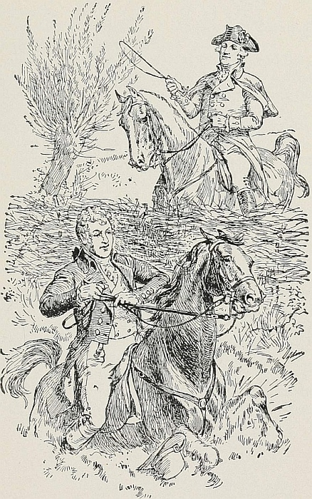
(page 116)
Colonel Humphreys landed in the ditch.
Select both a subject and a theme in which you are interested. Take your note-book and consult encyclopedias, histories, and books of biography, noting down everything that has relation to your particular subject and theme. Hunt especially for interesting anecdotes; if they are humorous,—so much the better.
You will do well to introduce your article with an appropriate quotation. Make your writing as conversational and as anecdotal as possible. Don't be in the least bit encyclopedic. Be gossipy.
FOOTNOTES:
[52] George Washington Parke Custis (1781-1857). The adopted son of George Washington.
[53] Dr. S. Weir Mitchell (1829-1914). An American physician and novelist. His novel, Hugh Wynne, concerns the life of Washington.
[54] General Charles Lee (1731-1782). An American Revolutionary General court-martialed for disobedience at the battle of Monmouth, 1778.
[Pg 118]
THE HISTORICAL STORY
By GEORGE PHILIP KRAPP
(1872—). Professor of English in Columbia University. He is a member of many scholarly societies, and has written much on English. Among his books are The Elements of English Grammar; In Oldest England; The Rise of English Literary Prose.
The story of Havelok the Dane is one of the oldest of English stories; for the story that is here told is only a re-telling of a narrative that originated nearly a thousand years ago. The first story of Havelok was probably written in Anglo-Saxon in the eleventh century or in the first half of the twelfth century. It was told in French about 1150, and re-told in English about 1300. Some critics find close relation between the story of Havelok and the story of Hamlet.
In all probability there was a real Havelok who may have lived in the latter part of the tenth century, and who may have participated in events like those told in the story. It is probable that as stories of his romantic career were repeated they increased,—just as gossip increases. The facts became lost in a body of romantic events. The Havelok of the story is therefore a character of fiction.
The story is interesting in many ways. First of all, it is a remarkably good story, very human and capable of awakening sympathy, full of quick event, centered around the fascinating subjects of youth, adventure and love, and picturesque in its details and episodes. Then it is an old story,—ten centuries old,—and is interesting as a relic of the past. In addition, it shows remarkably well what sort of stories preceded the short stories and the novels of to-day, and how the old stories sometimes grew from a mingling of fact and imagination.
In reading the story of Havelok the Dane we stand, as it were, in the presence of one of the story tellers of the extreme past. Around us we feel castle walls and the presence of rough fighting men. The flames of the great fireplace flare on our faces, and we listen with childlike interest.
Many years ago, in the days of the Angles and Saxons, there was once a king of England whose name was Athelwold. In that time a traveler might bear fifty pounds of good red gold on his back throughout the length and breadth of England,[Pg 119] and no one would dare molest him. Robbers and thieves were afraid to ply their calling, and all wrong-doers were careful to keep out of the way of King Athelwold's officers. That was a king worth while.
Now this good King Athelwold had no heir to his throne but one young daughter, and Goldborough was her name. Unhappily, when she was just old enough to walk, a heavy sickness fell upon King Athelwold, and he saw that his days were numbered. He grieved greatly that his daughter was not old enough to rule and to become queen of England after him, and called all the lords and barons of England to come to him at Winchester to consult concerning the welfare of his kingdom and of his daughter.
Finally it was decided that Godrich, Earl of Cornwall, who was one of the bravest, and, everybody said, one of the truest, men in all England, should take charge of the child Goldborough and rule the kingdom for her until she was old enough to be made queen. On the Holy Book, Earl Godrich swore to be true to this trust which he had undertaken, and he also swore, as the king commanded, that when Goldborough reached the proper age, he would marry her to the highest, the fairest, and the strongest man in the kingdom. When all this was done, the king's mind was at rest, for he had the greatest faith in the honor of Earl Godrich. It was not long thereafter that the end came. There was great grief at the death of the good king, but Godrich ruled in his stead and was the richest and most powerful of all the earls in England. We shall say no more about him while Goldborough is growing older, and in the end we shall see whether Earl Godrich was true to his trust and to the promises he had given to Goldborough's father.
Now it happened, at this same time, that there was a king in Denmark whose name was Birkabeyn. Three children he had, who were as dear to him as life itself. One of these was a son of five years, and he was called Havelok. The other two were daughters, and one was named Swanborough and the other Elflad. Now when King Birkabeyn most wished to live, the hand of death was suddenly laid upon him. As[Pg 120] soon as he realized that his days in this life were over, he looked about for some one to take care of his three young children, and no one seemed so fit for this office as the Earl Godard. To Godard, therefore, he intrusted the care of his three children, and Godard faithfully promised to guard them until the boy Havelok was old enough to become king of Denmark.
Scarcely, however, was the body of King Birkabeyn laid away in the grave, before the faithless Godard began to plot evil, and he determined to be himself king of Denmark. So he took Havelok and his two sisters and cast them into prison in a great stone castle.
In this prison the poor little children almost perished from cold and hunger, but they little knew that still worse misfortune was in store for them. For one day Earl Godard went to the castle where they were imprisoned, and Havelok and his sisters fell on their knees before him and begged for mercy. “What do you want?” said Godard. “Why all this weeping and howling?” And the children said they were very hungry. “No one comes to give us of food and drink the half part that we need. We are so hungry that we are well nigh dead.”
When Godard heard this, his heart was not touched, but, on the contrary, it grew harder within him. He led the two little girls away with him, and took away the lives of these innocent children; and he intended to do the same with young Havelok. But the terrified boy again fell on his knees before Godard and cried: “Have pity upon me, Earl Godard! Here I offer homage to you. All Denmark I will give to you if you will but let me live. I will be your man, and against you never raise spear nor shield.”
Now when Godard heard this and when he looked down at young Havelok, the rightful heir to the throne of Denmark, his arm grew weak, though his heart was as hard as ever. He knew that if he was ever to become king, Havelok must die; but he could not bring himself to the point of taking the life of his lawful sovereign.
So he cast about in his mind for some other way to get rid[Pg 121] of him. He sent for a poor fisherman whose name was Grim. Now Grim was Godard's thrall, or slave, and was bound to do whatever Godard asked of him. When Grim had come to him, Godard said: “Thou knowest, Grim, thou art my thrall, and must do whatever I bid thee. To-morrow thou shalt be free and a rich man if thou wilt take this boy that I give thee and sink him to-night deep down in the sea. All the sin I will take upon myself.”
Grim was not a bad man, but the promise of his freedom was a sore temptation, and besides, Godard, his master, had said that he would be responsible for the deed. So Grim took Havelok, not knowing, of course, who he was, and put him in a sack and carried him off to his little cottage by the seashore, intending that night to row out to deep water and throw him overboard.
Now when it came midnight, Grim got up from his bed, and bade his wife, Dame Leve, bring a light for he must go out and keep his promise to Earl Godard. But when Leve went into the other room, where Havelok was lying bound and gagged, what was her surprise to see that there was already a light in the room. Right over Havelok's head it seemed to stand; but where it came from, she could not guess.
“Stir up, Grim,” she cried, “and see what this light is here in our cot!”
And Grim came running in, and he too saw the strange light and was as surprised as Leve had been. Then he uncovered Havelok, and there on his right shoulder he saw a birthmark, bright and fair, and knew from this, right away, that this boy was Havelok, the son of King Birkabeyn. When Grim realized this, he fell on his knees before Havelok and said, “Have mercy on me and on Leve, my wife, here by me! For thou art our rightful king and therefore in everything we should serve thee.” Then when Grim had unbound him and had taken the gag out of his mouth, Havelok was a happy boy again; and the first thing he asked for was something to eat. And Dame Leve brought bread and cheese, and butter and milk and cookies and cakes, and for the first time in many a long day Havelok had all he wanted to eat. Then[Pg 122] when Havelok had satisfied his hunger, Grim made a good bed for him and told him to go to sleep and to fear nothing.
Now the next morning, Grim went to the wicked traitor Godard and claimed his reward. But little he knew the faithlessness of Godard.
“What!” cried Godard, “wilt thou now be an earl? Go home, and be as thou wert before, a thrall and a churl. If I ever hear of this again, I will have thee led to the gallows, for thou hast done a wicked deed. Home with you, and keep out of my way, if you know what is good for you!”
When Grim saw this new proof of the wickedness of Earl Godard, he ran home as fast as he could. He knew that his life was not safe in Godard's hands, especially if the earl should ever find out that Havelok was still alive. Grim had hoped to get money from Earl Godard with which to escape to some other country, but now he saw that he would have to depend on his own means. Secretly he sold all that he had and when he had got the ready money for it, he bought him a ship and painted it with tar and pitch, and fitted it out with cables and oars and a mast and sail. Not a nail was lacking that a good ship should have. Last of all Grim put in this ship his good wife Dame Leve, and his three sons and two daughters and Havelok, and off they sailed to the open ocean. They had not been sailing very long, however, before a wind came out of the north and drove them toward England. At the river Humber they finally reached land, and there on the sand near Lindesey, Grim drew his ship up on the shore. A little cot he straightway built for his family; and since this was Grim's home, the town that gradually grew up there in later days came to be named Grimsby, and if you will look on the map, you will find that so it is called to this very day.
Now Grim was a very good fisherman, and he decided to make his living here in England by fishing. Many a good fish he took from the sea, with net and spear and hook. He had four large baskets made, one for himself and one for each of his three sons, and when they had caught their fish, off they carried them to the people in the towns and country,[Pg 123] to sell them. Sometimes they went as far inland as the good town of Lincoln.
Thus they lived peacefully and happily for ten years or more, and by this time Havelok was become a youth full grown. But Grim never told Havelok who he was, nor did he tell any of his three sons or two daughters. And Havelok soon entirely forgot all about what had happened to him in Denmark. And so he grew up, happy as the days were long, and astonishingly healthy and strong. He was big of bone and broad of shoulder and the equal of a man in strength.
Now after a time, Havelok began to think to himself that Grim was working very hard to make a living, while he was amusing himself in ease and idleness. “Surely,” said he to himself, “I am no longer a boy. I am big and strong, and alone I eat more than Grim and his five children. It's high time for me to bear baskets and work for my living. No longer will I stay at home, but to-morrow I too shall go forth and sell fish.” And so in the morning, as soon as it was light of day, he put a basket on his back, as the others did, piled high with fish, as much as a good strong man might carry. But Havelok bore the burden well, and he sold the fish well, and the money he brought back home to Grim, every penny of it. Thus Havelok became a fisherman; he went forth every day with his basket on his back and sold fish, and was the tallest and strongest monger of them all.
Now it happened after a time that Grim fared not so well With his fishing. The fish would not come to his nets, and with no fish in the nets, there was none for the baskets and for market. To make matters worse, at this same time there was a great famine in the land, and poor people suffered greatly from lack of food to eat. These were hard times for Grim and his houseful of children. Yet less for his own did Grim grieve than for the sturdy Havelok. Moreover, Grim had long thought that this work of fishing and fish-selling, though good enough for himself and his three sons, was hardly the right life for Havelok, who, though he knew nothing about it, was nevertheless a king's son.
[Pg 124]
“Havelok, my boy,” said he, at length, “it is not well for thee to dwell here too long with us. Though it will grieve us sorely to have thee go, out into the world thou must venture, and perhaps there thou shalt make thy fortune. Here thou seest we are but miserable fisher-folk; but at Lincoln, the fine city, there thou mayst find some great man whom thou canst serve. But, alas!” he added, “so poor are we that thou hast not even a coat wherein to go.”
Then Grim took down the shears from the nail and made Havelok a coat out of the sail to his boat, and this was Grim's last gift to Havelok. No hose and no shoes had Havelok to wear, but barefoot and naked, except for his long coat of sail-cloth, he left his good friends Grim and Dame Leve and their five children and set out for the town of Lincoln.
When Havelok reached Lincoln, he wandered about bewildered in the streets of the city. But nobody seemed to have any use for him; nobody wanted to exchange the strength of his powerful arms for food to eat. As he wandered from one street to another, Havelok grew hungrier and hungrier. By great good chance, however, he passed by the bridge where the market was, and there stood a great earl's cook, who was buying fish and meat and other food for the earl's table. Now he had just finished buying when Havelok happened along, and the cook shouted, “Porter, porter!” for somebody to come to carry his marketing home. Instantly ten or a dozen jumped for the chance, for there were plenty of men looking for work in Lincoln. But Havelok got ahead of them all; he pushed them this way and that and sent them sprawling head over heels, and seized hold of the cook's baskets, without so much as a “By your leave.” Rough and ready was the young Havelok, as strong as a bear and as hungry as a savage. He made quick time of the journey to the cook's kitchen, and there he was well fed as pay for his labor.
By the next day, however, Havelok's stomach was again empty. But he knew the time at which the earl's cook came to the market, and he waited there for him. Again when the cook had finished buying, he called out “Porter, porter!”[Pg 125] and again the husky Havelok shoved the rest right and left and carried off the cook's baskets. He spared neither toes nor heels until he came to the earl's castle and had put down his burden in the kitchen.
Then the cook, whose name was Bertram, stood there and looked at Havelok and laughed. “This is certainly a stalwart fellow enough,” he thought. “Will you stay with me?” he said finally to Havelok. “I will feed you well, and well you seem to be able to pay for your feeding.”
And Havelok was glad enough to take the offer. “Give me but enough to eat,” he answered, “and I will build your fires and carry your water, and I can make split sticks to skin eels with, and cut wood and wash dishes, and do anything you want me to do.”
The cook told Havelok to sit down and eat as much as he wanted, and you can be sure Havelok was not slow in accepting this invitation. When he had satisfied his hunger, Havelok went out and filled a large tub of water for the kitchen, and, to the cook's great astonishment, he carried it in, without any help, in his own two hands. Such a cook's knave had never been seen in that kitchen before!
So Havelok became a kitchen-boy in a great earl's castle. He was always gay and laughing, blithe of speech and obliging, for he was young and thoughtless and healthy, and happy so long as he had something to put into his stomach. He played with the children and they all loved him, for, with all his great strength and stature, he was as gentle as the gentlest child among them. And Bertram, the cook, seeing that Havelok had nothing to wear except his old sail-cloth coat that Grim had made for him, bought Havelok a brand-new coat and hose and shoes; and when Havelok was dressed up in his new clothes, there was not a finer fellow in the whole country. He stood head and shoulders above the rest when the youths came together for their games at Lincoln, and no one ever tried a round at wrestling with Havelok without being thrown almost before he knew it. He was the tallest and strongest man in all that region, and, what was better, he was as good and gentle as he was strong.
[Pg 126]
Now, as it happened, the earl in whose kitchen Havelok served as kitchen-boy to Bertram the cook was that very Earl Godrich to whom old King Athelwold had entrusted his daughter, Goldborough, for protection. Goldborough was now a beautiful young princess, and Godrich realized that something must soon be done for her. But Godrich had become the strongest baron in all England; and though he had not forgotten his promises to Athelwold, little did he think to let the power, to which he had grown so accustomed, pass into the hands of another. For though the beautiful Goldborough was now old enough to be made queen, the traitorous Godrich had decided in his heart that queen she should never be, but that when he died, his son should be made king after him.
Just about this time it happened that Earl Godrich summoned a great parliament of all the nobles of England to meet at Lincoln. When the parliament met, there was a great throng of people there from all over England, and the bustling city was very gay and lively. Many young men came thither with their elders, bent on having a good time, strong lads fond of wrestling and other such games. Now these young men were amusing themselves one day in one way and another, and finally they began to “put the stone.” The stone was big and heavy, and it was not every man who could lift it even as high as his knees. But these strong fellows who had come to Lincoln in the train of the mighty barons could lift it up and put it a dozen or more feet in front of them; and the one who put it the farthest, if it was only an inch ahead of the rest, he was counted the champion at putting the stone.
Now these stout lads were standing around and boasting about the best throws, and Havelok stood by listening. He knew nothing about putting the stone, for he had never done it or seen it done before. But his master, Bertram the cook, was also there, and he insisted that Havelok should have a try at it. So Havelok took up the great stone, and at the first throw, he put it a foot and more beyond the best throw of the others.
The news of Havelok's record throw in some way spread[Pg 127] abroad, how he had beaten all these strong lads, and how tall and powerful he was. And finally the knights in the great hall of the castle began speaking of it, and Earl Godrich listened, for he had suddenly thought of a way to keep his promise. In a word, it was this: King Athelwold had made him swear on the Holy Book that he would give his daughter in marriage to the highest and strongest in the realm of England. Now where could he find a higher and stronger than this Havelok? He would marry the king's daughter to this kitchen-boy, and thus, though in a way that the old king never dreamed of, he would keep his promise and still leave the road free for himself and his son after him.
Godrich straightway sent for Goldborough, and told her that he had found a husband for her, the tallest and fairest man in all England. And Goldborough answered that no man should wed her unless he was a king or a king's heir.
At this Godrich grew very angry. “Thou shalt marry whom I please!” he commanded. “Dost thou think thou shalt be queen and lady over me? I will choose a husband for thee. To-morrow shalt thou wed my cook's kitchen-boy and none other, and he shall be lord over thee.”
Goldborough wept and prayed; but she could not turn Godrich from his shameful purpose.
Then Godrich sent for Havelok, and when he had come before him, he said, “Fellow, do you want a wife?”
“Nay, truly,” said Havelok, “no wife for me! What should I do with a wife? I have neither clothing nor shoes nor food for her, neither house nor home to put her in. I own not a stick in the world, and even the coat I bear on my back belongs to Bertram the cook.”
But Godrich told Havelok he must marry the wife he had chosen for him, willy-nilly, or he should suffer for it. And finally Havelok, for fear of his life, consented, and Goldborough was sent for, and the Archbishop of York came, and soon they were married, one as unwilling as the other.
But when the wedding was over, and gifts had been given to Goldborough, rich and plenty, Havelok was perplexed. He beheld the beauty of Goldborough and was afraid to remain[Pg 128] at Godrich's castle for fear of treachery that might befall her. For Goldborough now had only Havelok to protect her, since the kitchen-boy had become her lord and master, and Havelok, with a man's courage, determined to defend her to the best of his ability. The first thing to do, as it seemed to him, was to go back to Grim's cottage, there to think over the matter carefully before acting further. And straightway, in company with Goldborough, he set out secretly for the little cot by the seashore.
When Havelok and Goldborough came to Grim's house, he found that there had been many sad changes during the time he had been living in Lincoln. In the first place, the good Grim had died, and also his wife, Dame Leve. But the three sons of Grim and his two daughters were still living at Grimsby, and they still caught the fish of the sea and carried them about in baskets to sell them. The oldest of these sons was called Robert the Red, and, of the remaining two, one was named William Wendout, and Hugh the Raven the other. They were filled with joy when they found that their foster-brother, Havelok, had come back to them, and they prepared a fine dinner for him and Goldborough. And Robert the Red begged Havelok now to stay with them at Grimsby and be their chief and leader. They promised to serve him faithfully, and their two sisters were eager to care for all the needs of Goldborough, his wife. But for the time being, Havelok put them off, for he had not yet decided what would be the best course for him to follow.
Now that night, as Goldborough lay awake, sad and sorrowful, she was suddenly aware of a bright light, surrounding, as it seemed, the head of the sleeping Havelok. Then at the same time, there came a voice, she could not tell whence, which said to her: “Goldborough, be no longer sorrowful, for Havelok, who hath wedded thee, is a king's son and heir. Upon his shoulder he bears a royal birthmark to prove it. The day shall come when he will be king both in Denmark and in England, and thou shalt be of both realms queen and lady.”
[Pg 129]
Now just at this same time, Havelok dreamed a strange dream; and when he awoke, he told his dream to Goldborough. He dreamed that he was sitting on a high hill in Denmark, and when he stretched out his arms, they were so long that they reached to the farthest limits of the land; and when he drew his arms together to his breast, everything in Denmark, all the towns, and the country, and the lordly castles, all cleaved to his arms and were drawn into his embrace. Then he dreamed that he passed over the salt sea with a great host of Danish warriors to England, and that all England likewise came into his power.
When Goldborough heard this dream, she thought straightway of the strange light she had seen over Havelok's head and the voice that she had heard, and she interpreted it to mean that Havelok should be king over Denmark and afterward over England.
She knew not how this should come to pass, but unhesitatingly advised Havelok to prepare to set sail for Denmark. Her plan was this: that they should buy a ship, and take Grim's three sons, Robert the Red, William Wendout, and Hugh the Raven, with them, and, when they came to Denmark, pretend that they were merchants until they could find out what course to follow. And when this plan was told to the three sons of Grim, they immediately agreed to it, for they were ready to follow Havelok wherever he went. And now, also, Havelok for the first time learned who his father was, and that he was really heir to the throne of Denmark. For Grim, before he left Denmark, had told all of Havelok's story to a cousin of his, and she now, for she was still alive and had come to stay with Grim's family at Grimsby, told Havelok all about Earl Godard's treachery. Happy indeed was Goldborough when she heard this story, and they were all more anxious than ever to set out for Denmark. They got a good ship ready, and it was not long before all were well on their way.
When the ship reached Denmark, they all went up on land and journeyed forth until they came to the castle of the great Danish baron, Earl Ubbe. Now Ubbe had been a good friend[Pg 130] of Havelok's father, the former King Birkabeyn, and a good man and true was he. When they reached Ubbe's castle, Havelok sent word that they were merchants, come to trade in Ubbe's country, and, as a present, he sent in to Ubbe a gold ring with a precious stone in the setting.
When Ubbe had received this generous gift, he sent for Havelok to come to see him. When the young man came, Ubbe was greatly struck by Havelok's broad shoulders and sturdy frame, and he said to himself: “What a pity that this chapman is not a knight! He seems better fitted to wear a helmet on his head and bear a shield and spear than to buy and sell wares.” But he said nothing of this to Havelok, and only invited him to come and dine in the castle and to bring his wife, Goldborough, with him. And Ubbe promised that no dishonor should be done either to one or the other, and pledged himself as their protector. And when the dinner was over, Ubbe, who had taken a great liking to both Havelok and Goldborough, entrusted them to the safe-keeping of one of his retainers, a stout and doughty warrior whose name was Bernard the Brown. To Bernard's house, therefore, Havelok and Goldborough went, and there too were lodged Robert the Red and William Wendout and Hugh the Raven.
Now when they had reached Bernard's house, and Bernard and Havelok and Goldborough were sitting there peacefully at supper, the house was suddenly attacked by a band of fierce robbers. Travelers were not as safe in Denmark as they were in England in the days of the strong King Athelwold, and these robbers, thinking that Havelok must be a very rich man, since he had given so valuable a ring to the Earl Ubbe, were come now, a greedy gang, to see if they could get hold of some of his treasure. Before Bernard and his guests were aware of them, the robbers had reached the door, and they shouted to Bernard to let them in or they would kill him. But the valiant Bernard recalled that his guests were in his safe-keeping; and shouting back that the robbers would have to get in before they could kill him, he jumped up and put on his coat of mail and seized an ax and leaped to the doorway. Already the robbers were battering at the door, and[Pg 131] they took a huge boulder and let it fly against the door, so that it shivered to splinters. Then Havelok mixed in the fray. He seized a heavy wooden door-tree, which was used to bar the door, and when the robbers tried to break through the door, he laid on right and left. It was not long before Robert and William and Hugh, in the other part of the house, heard the din and came rushing up; and then the fight was on, fast and furious. Robert seized an oar and William and Hugh had great clubs, and these, with Bernard's ax and Havelok's door-tree, made it lively enough for the robbers. But especially Havelok and his door-tree made themselves felt there. The robbers, for all they were well armed with shields and good long swords, were compelled to give way before the flail-like strokes of Havelok's door-tree. When they saw their comrades falling right and left, those that were still able to do so took to their legs and ran away. Some harm they did, however, while the fray lasted, for Havelok had a severe sword-wound in his side, and from several other gashes the blood was flowing freely.
In the morning, when Bernard the Brown told Ubbe of the attacks of the robbers, Ubbe swore that he would bring them to punishment; and he also took further measures to protect Havelok. When he heard that Havelok was wounded, he had him brought to his own castle and gave him a room right next to his own.
Now that night, when Havelok lay asleep in his room and Ubbe in the room next to it, about the middle of the night Ubbe was awakened, and thought he saw a light on the other side of the door. “What's this?” he said to himself. “What mischief are they up to in there?” And he got up to see if everything was all right with his new friend the chapman.
Now when Ubbe peeped through a crack in the door, he saw a strange sight. For there was Havelok peacefully sleeping, and over his head there gleamed the miraculous light that Goldborough had seen and that had caused Grim to spare his life when he was a little child. And looking closer, Ubbe saw something more. For the cover was thrown back, and he saw on Havelok's shoulder the royal birthmark, and he knew[Pg 132] immediately that this was the son of his old friend and king, Birkabeyn, and the rightful heir to the throne of Denmark. Eagerly he broke open the door and ran in and fell on his knees beside Havelok, acknowledging him as his lawful lord.
As soon as Havelok realized that he was not dreaming, he saw that good fortune had at last put him in the way of winning back his rights.
And it had indeed, for Ubbe immediately set to work getting together an army for Havelok. It was not long before Havelok had a fine body of fighters ready to follow wherever he led them, and then he thought it was time to seek out his old enemy, Earl Godard. Before this, however, there was another thing to be done, and that was to make knights of Robert and William and Hugh. They were given the stroke on the shoulder with the flat of the sword by Earl Ubbe and thus were dubbed knights. They were granted land and other fee, and they became as brave and powerful barons as any in Denmark.
When Havelok had his plans all made, he set out to find Earl Godard. It was Robert the Red who had the good fortune first to meet with him. But Godard was no coward, and was not to be taken without struggle for his freedom. He defended himself as best he could, but his followers soon became frightened and took to their heels, leaving the wretched Godard a helpless prisoner in the hands of Robert. Havelok was glad enough to have Godard in his power at last, but he made no effort to punish Godard for the injuries he had done to him personally. It was as a traitor to his king and his country that Godard was now held prisoner. When the time of the trial came, by the judgment of his peers, Godard was convicted of treason and sentence of death was passed upon him.
When peace had again been restored throughout Denmark, then the people all joyfully accepted Havelok as their king and the beautiful Goldborough as their queen.
One thing still remained for Havelok to do in England after affairs had all been settled in Denmark—there still remained an accounting with Earl Godrich. And so, as soon[Pg 133] as he had got his army together, Havelok and Goldborough went on board ship and sailed over the sea, and soon they were again back at Grimsby. The earl was ready for him, too, for he had heard of Havelok's arrival in England, and he thought he could make quick work of his former kitchen-boy. But Havelok the man, with a Danish army at his back, was a quite different person from Havelok the boy, who carried the cook's baskets from market and distinguished himself only by his record at putting the stone. And this difference Earl Godrich was soon to discover.
It was Ubbe, this time, who had the first meeting with Godrich. Ubbe claimed Godrich as his prisoner, but Godrich immediately drew his sword in self-defense. They fought long and fiercely, and Godrich was decidedly getting the better of it, when Havelok fortunately appeared upon the scene. Havelok demanded that Godrich should yield himself as his prisoner, but for answer Godrich only rushed at Havelok all the more fiercely with his drawn sword, and so violent was his attack, that he succeeded in wounding Havelok. At this, Havelok's patience gave out, and exerting all his powerful strength, in a short time he overcame Godrich and disarmed him and bound him hand and foot. Then Havelok had Godrich carried before a jury of his peers in England, where he was made to answer to the charge of treason, just as Godard had been made to do in Denmark.
All the English barons acknowledged that Goldborough was their true queen, and that Godrich was a tyrant and usurper. And since not only plain justice, but also the welfare of the kingdom, demanded it, the barons passed the sentence of death upon the traitorous Earl Godrich. With much feasting and celebration, Havelok and Goldborough were taken in triumph to London, and there were crowned king and queen of England. Thus Goldborough's dream had come to pass, for she was now queen and lady and Havelok was lord and king over both Denmark and England.
But since Havelok could not be in both countries at one time, and since his Danish friends were eager to get back again to Denmark, now that their work in England was finished,[Pg 134] Havelok made Ubbe ruler over Denmark in his place, and he remained in England. Moreover there were other old friends who were also richly deserving of reward. Of these, one was Bertram the cook, Havelok's former master, who had fed him when he was starving. Bertram was made a rich baron, and he was married to one of Grim's daughters, who were still living at Grimsby, but who, of course, had now become great ladies. The other daughter was married to Reynes, Earl of Chester, who was a brave young bachelor and glad enough to get so beautiful and so highly favored a wife as Havelok gave him. Robert the Red and William Wendout and Hugh the Raven all remained in England, where they married rich and beautiful wives, and became Havelok's right-hand men in the good government of the country.
And you can be sure the country was now again well governed. As in the days of the good King Athelwold, a traveler might bear a bag full of red gold on his shoulder from one end of England to the other, and be as safe as though he were guarded by an army of soldiers. Loved by their subjects and feared by their enemies, thus in peace and contentment King Havelok and Queen Goldborough dwelt together many a long year in England, and their children grew up around them. They had passed through their trials and tribulations, and at last only good days were in store for them.
This is the end.
[Pg 135]
| 1. Uncle Tom's Cabin | 11. Robinson Crusoe |
| 2. Washington's Boyhood | 12. Rip Van Winkle |
| 3. The Story of Treasure Island | 13. The Story of Portia |
| 4. The Story of Ivanhoe | 14. The Story of Rosalind |
| 5. The Vision of Sir Launfal | 15. The Story of Viola |
| 6. Lancelot and Elaine | 16. Silas Marner |
| 7. Robin Hood and His Men | 17. The Ancient Mariner |
| 8. Huckleberry Finn | 18. The Black Knight |
| 9. Tom Sawyer | 19. King Arthur |
| 10. Ben Hur | 20. Joan of Arc |
You are to re-tell an old story. Select one with which you are entirely familiar. Tell it very simply and plainly, but try very hard to give it the quality of human interest. Make your readers sympathize with your hero and heroine. Tell a number of dramatic episodes, selecting those that do most to emphasize character. Make your story move very quickly, and make its action very vivid and intense. Give emphasis to good characteristics.
[Pg 136]
THE STORY ESSAY
By FREDERICK LEWIS ALLEN
(1890-). A contributor to many magazines. At different times he served as Instructor in English at Harvard, and as a member of the editorial staff of The Atlantic Monthly, and of The Century.
The short story and the essay may be combined in what may be called the story-essay or the dialogue-essay. Many of Addison's Sir Roger de Coverley essays illustrate such a combination.
Politics Up To Date is really a critical essay, directed against certain tendencies in political campaigns in the United States, but it is presented in the form of a dialogue between a young politician and an old politician. It is very effective in its satire.
“So you've come to me for advice, have you?” said the Old Politician to the Young Politician. “You want to know how to succeed in politics, do you?”
The Young Politician inclined his head.
“I do,” he replied. “Will you tell me?”
The Old Politician was silent for a moment.
“Times change,” he said at last, “and I dare say there are new issues now in politics that there weren't in the good old days. The technic is somewhat different, too. However, the basic principles remain the same, and, after all, the issues don't really matter; it's what you say about them that counts, and I can tell you what to say about them. Very well, I'll advise you. First of all, if you're running for office in these days, you must run as a hundred-per-cent. American candidate.”
The Young Politician's eye clouded with perplexity.
“What is Americanism,” he asked, “and how does one figure it on a percentage basis?”
[Pg 137]
The Old Politician brought down his fist on the table with a crash.
“You aspire to political office, and ask questions like that!” he exclaimed in a voice of wrath. “Never question what hundred-per-cent. Americanism is, even to yourself. If you do, somebody else will question, too. Nothing could be more fatal. Don't try to define it; assert it. Say you're hundred per cent. and your opponent isn't. Intimate that if George Washington, Thomas Jefferson, and Abraham Lincoln went over your opponent with a slide rule and an adding-machine, they couldn't make him add up to more than ninety-nine per cent. If he's out for a seven-cent fare or a new set of municipal waterworks, tell the people that such things are un-American. Say that he's dodging the issue, and the issue is Americanism.” He paused. “If you were my opponent, and asked what Americanism is, I'd double you up. 'Think of it, my fellow-citizens! He doesn't even know what Americanism is! Is that the kind of man to hold office in the country of Washington and Lincoln?'”
The Young Politician looked round uneasily to make sure that they were indeed alone, for the Old Politician was almost shouting.
“Please,” said the Young Politician, “not so loud. I won't ask that question again. I see your point. What else do you advise?”
“You must learn,” continued the Old Politician, “to be a good denouncer.”
“A good what?”
“Denouncer. Keep your eyes open for objects of popular disapproval, and when you're sure you've got hold of something that is heartily disapproved by the great majority of the people, denounce it. At present I should advise you to denounce the high cost of living, the profiteers, and the Bolshevists. Next year, of course, the list may be quite different, but for the present those three are the best objects of denunciation.”
“What bothers me,” suggested the Young Politician in a hesitating voice, “is that it may be rather hard to drag those[Pg 138] things into the campaign. Suppose, for example, I'm pledged to broaden the Main Street of the city upon my election to the city council. Won't it be rather hard to tie the Main Street and the Bolshevists together?”
The Old Politician looked upon the troubled face of the Young Politician with disgust.
“You're a great politician, you are,” he said wearily. “Tie them together? Don't be so ridiculously logical.” He rose to his feet, and as he did so he smote the table once more with his fist. “Gen-tle-men,” he cried hoarsely, surveying an imaginary audience with his glittering eye, “there is a movement on foot in this very county, this very State, nay, this very city, to undermine our Congress, to topple over the Constitution, to put a bomb under our President! Confronted by such a menace to our democratic institutions, what, gentlemen, shall be our answer? Let us broaden Main Street, as Washington would have broadened it, as Lincoln would have broadened it, and let us put down the red flag wherever it shows its head!”
“Its mast,” corrected the Young Politician, visibly moved. “Thank you for those courageous, those hundred-per-cent. words. I shall try to strike that note. But there is something else I want to ask. Suppose I am elected. What shall I do while I hold office in order that I may become ultimately eligible for still higher office?”
“In that case,” replied the old man, who by this time had subsided into his chair, “you must not merely denounce the high cost of living, the profiteers, and the Bolshevists; you must campaign against them.”
“But suppose I am a commissioner of roads or an attorney-general,” queried the Young Politician. “In that case, clearly such things lie outside my province. How can I campaign against them?”
“My dear young man,” said the Old Politician, with a weary smile, “don't bother about your province, as you call it. Your job will undoubtedly be uninteresting and the public won't know anything about it or care anything about[Pg 139] it, and the test of your success will be your ability to conduct campaigns which have nothing to do with your job, and therefore stand some chance of interesting the public. There is no reason why even an attorney-general shouldn't campaign against anything, provided he handle his campaign right.
“The principal thing to bear in mind is that you must begin your campaigns noisily and end them so quietly that the sound of their ending is drowned in the noise of the next campaign's beginning. Let's say you begin with a campaign against the high cost of living. First come out with a statement that you, as attorney-general or commissioner of roads or what not, are going to knock the high cost of living to bits, and the whole force of the Government will be behind you. That will put you on the front page once. Then send out telegrams calling a conference to take steps against the cost of living. That will put you on the front page again. Then when the conference meets, address them, and tell them they've got to make conditions better, simply got to. By the way, you ought to have a couple of able secretaries to help you with these speeches, or, better still, to do the routine work of your office so that there will be nothing to divert your mind from your campaigns. Then, after you have the conference well started, step out. Don't stay with them; they may begin asking you for constructive ideas. Step clear of the thing, and start a new campaign.
“I can't over-emphasize the fact that when the conference is well started, you must help the public to forget about it, and stir up interest in something new. Flay the profiteer for a month or two, and get a conference going on profiteers. Rap the Bolshevists, and telegraph for a crowd of citizens to come and probe the Bolshevists while you're deciding what your next campaign shall be. Don't let the people's minds run back to the high cost of living, or they'll be likely to notice that it hasn't gone down. Refer constantly to the success of your own campaigns, and keep the public mind moving.”
[Pg 140]
The Young Politician was visibly impressed, but apparently a doubt still lingered in his mind.
“There's one thing I'm afraid I don't quite understand,” he said at last. “All this denouncing and rapping and probing—isn't it likely to look rather destructive? Will people want to vote for a man whose pleasantest mood is one of indignation?”
“My dear young man,” replied the Old Politician, “I fear that you misunderstood me. A politician must be always pleasant to the people who are about him, and denounce only persons who are not present. You should compliment your audience when speaking. Be sure to make the right speech in the right place; don't get off your profiteer speech to the Merchants' Association, or they may begin to wonder whether they agree with you, but draw their hearts to yours with your anti-Bolshevik speech; assure them that you and they are going to save the nation from red ruin. Denunciation is pleasant if it's somebody else who is getting denounced. Tell the merchants or the newspaper publishers or the party committeemen, or whoever it is that you are addressing, that they are the most important element in the community and that the war could not have been won if they had not stepped forward to a man and done their duty. That's good to hear.
“Finally, give them a little patriotic rapture. Tell them this is a new age we're in. Picture to them the capitalist and working-man walking hand in hand with their eyes on the flag. Make the great heart of America throb for them. Unpleasant? Why, if you top off with a heart-throb, you can make the most denunciatory speech delightful for one and all.”
The Young Politician rose.
“I see,” he said. “Thank you. Have you any other advice?”
“Merely one or two minor hints,” said the Old Politician. “If the photographers want to take your picture teaching your baby to walk, let them do it; the public loves the home life of its leader. Always be affable to the reporters, but never state your views explicitly, or you may find them[Pg 141] embarrassing at some later date. Stick to generalities. I think that's all.”
“Thank you again,” said the Young Politician, putting out his hand. “You are very good. You're—” An idea seemed to seize his mind, and his bearing perceptibly altered. “You, sir, are a good American. I'm always delighted to have an evening with a man who is absolutely one-hundred-per-cent. patriotic American to the core.”
“Good night,” said the Old Politician. “You're getting it very nicely. I think you'll do well.”
| 1. The Good American | 11. The Right Kind of Leader |
| 2. Campaign Speaking | 12. Testing Political Speeches |
| 3. Political Beliefs | 13. Good Citizens |
| 4. Honesty in Public Life | 14. How to Vote Conscientiously |
| 5. A Worthy Office Holder | 15. A Genuine Statesman |
| 6. Political Methods | 16. Patriotic Speeches |
| 7. Denunciation | 17. Soap-box Orators |
| 8. A Political Campaign | 18. Diverting Attention |
| 9. Sincerity | 19. Public Servants |
| 10. Deceiving the Public | 20. The American People |
[Pg 142]
Think of a series of principles in which you strongly believe. Imagine two people who will represent definite attitudes toward the principles that you have in mind. Write a dialogue between the two people, presenting your real thought in the disguise of satire. Let your work represent both the beginning and the ending of the conversation. As in all other writing, make the ending effective.
[Pg 143]
By CHARLES HANSON TOWNE
(1877—). Managing editor of McClure's Magazine. He has written many delightful books, among which are: The Quiet Singer, and Other Poems; Jolly Jaunts with Jim; Autumn Loiterers; Shaking Hands with England.
Over two hundred years ago Joseph Addison imagined a character whom he called “The Spectator” meeting with various friends and discussing with them the life of the times. Through what was said by these imaginary beings Addison gave his own shrewd comments on foibles and follies. Mr. Towne's “young-old philosopher” is a sort of modern “Spectator.” He talks of the drudgery of work, and the glowing joy of a holiday, and comes to the sudden realization that the world is a world of work in which every one must play his part if he is to have real contentment. The essay is Mr. Towne's comment both on a life of unvaried drudgery and on a life of idleness.
“I have wondered what it would seem like to be ... jogging along with nowhere to go save where one pleased.”
The young-old philosopher was speaking.
“I had a strange experience yesterday. To have spent twenty years or so at office work, and then suddenly to arrange one's affairs so that a portion of the week became one's own—that is an experience, isn't it?”
We admitted that it was an achievement to be envied.
“How did you manage it?” was the natural question.
“That is a detail of little importance,” he replied. “Let the fact of one's sudden liberty be the point dwelt upon. I found myself walking up the avenue at the miraculous hour of eleven in the morning, and not going to a desk! I was headed for the park, where I knew the trees had long since loaded their branches with leaves, and the grass was so green that it made the heart ache with its loveliness. You know how perfect yesterday was, a summer day to remember and to be grateful for.
[Pg 144]
“To you who have never known what it is to drudge day in and day out, this may seem a trifling thing to speak of. For myself, a miracle had happened. I could not believe that this golden hour was mine completely. I had never seen shop-windows with quite this slant of the sun on them. Always I had viewed them early or late, or wistfully at noon, when the streets were so crowded with other escaped office men that I could take no pleasure in what I beheld. Shop-windows at eleven in the morning were for the elect of the earth. That hour had always heretofore meant for me a manuscript to be read or edited, a conference to be attended, a telephone call to be answered, a visit from some one seeking advice—something, at any rate, that made it impossible for me to call it my own. I have looked often from a high window at that hour, and seen the people in the streets as they trailed like ribbons round and round the vast city, and I have wondered what it would seem like to be one of them, not hurrying on some commercial errand, but jogging along with nowhere to go save where one pleased.
“At last my dream had come true, and when I found myself projected upon that thrilling avenue, and realized that I had nothing, absolutely nothing, to do until luncheon-time, and I could skip that if I wished, I could scarcely believe that it was I who had thus broken the traces.
“The green of the park greeted me, and, like Raleigh's cloak,[55] a gay pattern of flowers was laid at the entrance for even my unworthy feet metaphorically to tread. And to think that these bright blooms unfolded here day after day and I had so seldom seen them! An old man dozed on a bench near at hand, oblivious to the beauty around him; and a septuagenarian gardener leaned over the circular border, just as Narcissus[56] looked into the pool. Perhaps he saw some image of his youth in the uplifted face of a flower.
“I know that I saw paths and byways everywhere that [Pg 145]reminded me of my vanished boyhood; for I am one of those who have always lived in Manhattan, and some of the happiest days I ever spent were those in the park as a child, seeing the menagerie, feeding the squirrels, and rolling a hoop on a graveled pathway.
“I remembered Rossetti's line,[57] 'I have been here before,' as I walked along on this exultant morning; and it indeed seemed as if in some previous incarnation, and not in this life, I had known my footsteps to take this perfumed way. For in the hurry of life and in the rush of our modern days we forget too soon the leisure of childhood, plunging as we do into the rough-and-tumble of an agonized manhood.
“And all this was while the park, like a green island set in a throbbing sea, had waited for me to come back to it! No lake isle of Innesfree[58] could have beguiled the poet more. Anchored at a desk, I had dreamed often of such an hour of freedom; and now that it was really mine, I determined that I would not analyze it, but that I would simply drink in its wonder. It would have been as criminal as to pluck a flower apart.
“Policemen went their weary rounds, swinging their sticks, and it suddenly came to me that even in this sylvan retreat there was stern labor to be done. Just as some one, some time, must sweep out a shrine,—possibly nowadays with a vacuum-cleaner!—so papers must be picked from God's grass, and pick-pockets must be diligently looked for in holiday crowds. Men on high and practical sprinkling-carts must keep the roadways clean, and emissaries of the law must see to it that motorists do not speed too fast. You think of ice-cream as being miraculously made in a park pavilion, and unless you visit the city woodland at the hour of eleven or so in the morning, you may keep your dream. But I beheld a [Pg 146]common ice-wagon back up to the door of that cherished house of my childhood, and a strong, rough fellow proved himself the connecting-link between the waitress and her eager little customers.
“At this hour it was as though I had gone behind the scenes of a theater while the stage-hands were busy about their necessary labors. Wiring had to be done,—I had forgotten that they have telephones even in the park,—and a mason was repairing a crumbling wall. How much better to let it crumble, I thought. But all my practicality, through my sense of strange freedom, had left me, and I was ardent for a mad, glad world, where for a long time there would be nothing for anybody to do. I wanted masons and policemen and icemen and nurse-maids and electricians and keepers of zoölogical gardens to be as free as I, forever and ever.
“You see, my unexpected holiday had gone to my head, and it was a summer morning, and I felt somehow that I ought to be working rather than loitering here.
“I suppose I shall be sane to-morrow, but I wonder if I want to be.”
And we all wondered if we didn't like him better when he was just this way, a child with a new toy, or, rather, a child with an old toy that he had almost but not quite forgotten how to play with.
[Pg 147]
| 1. School Athletics | 11. Selfishness |
| 2. Home Study | 12. School Spirit |
| 3. Exercise | 13. Good Manners |
| 4. Reading | 14. Playing Jokes |
| 5. Writing Letters | 15. Carefulness |
| 6. Aiding Others | 16. Honesty in School Work |
| 7. Politeness | 17. Thoughtfulness |
| 8. Using Reference Books | 18. Practising Music Lessons |
| 9. Going to Bed Early | 19. Looking Out for Number One |
| 10. Obedience | 20. “Bluffing” |
When you have selected a subject that interests you, write out, in a single sentence, your one most important thought on that subject. Then plan to write an essay that will embody that thought.
If you are to imitate Mr. Towne's method you will think of a typical character who will express your own thought. As soon as you have introduced your character—notice how quickly Mr. Towne introduced the “young-old philosopher”—lead him to relate an experience that made him think about the subject. Write his meditations in such a way that they will show all view-points. Let the end of your essay indicate, rather than state, the view-point that you wish to emphasize.
Mr. Towne gives his essay many elements of originality and much beauty of thought and expression. Imitate his style as well as you can.
FOOTNOTES:
[55] Sir Walter Raleigh is said to have laid his cloak in the mud so that Queen Elizabeth might pass without soiling her garments.
[56] Narcissus. A Greek myth tells of a young man named Narcissus who, leaning over a pool, fell in love with his own reflection, and changed into a flower.
[57] Dante Gabriel Rosetti (1828-1882). An English poet of Italian and English descent. His poems are marked by beauty of form, symbolism and color.
[58] Innesfree. The Irish poet, William Butler Yeats (1864—) wrote The Lake Isle of Innisfree in which he imagines Innisfree as an island of perfect peace, a place for which he longs when “on the roadway, or on the pavements gray.”
[Pg 148]
THE STORY OF ADVENTURE
By T. MORRIS LONGSTRETH
An American author and lover of natural scenery. His books on The Adirondacks, and The Catskills are enticements into the mountain world. He is a writer for many periodicals.
The romantic story of adventure deals with events that are far from being the events of daily life. Usually such a story has for its setting an unusual scene.
Prunier Tells a Story deals with events that come into very few lives; its setting is a region into which very few people penetrate. The principal character, the French-Canadian Prunier, is likewise a type of person with whom few are acquainted.
At the same time, the story is told with a degree of naturalness that makes it seem real. The French-Canadian is brought into touch with daily life by the presence of his two listeners, who are people of the ordinary world, and one of whom is a boy.
The story is not told merely for wild event: it hangs upon character and upon noble purpose. It emphasizes courage, ability, self-sacrifice and faith.
The setting of the story is so used that it contributes in a marked degree to the entire effect. As one reads he feels himself in the icy north, in the grip of cold and darkness where wild events are altogether probable.
THE PILLAR OF CLOUD BY DAY
It was after supper one November evening, at Wilderness House, with the sleet dancing on the eaves and the great forest of Wildyrie closing us about with its dark presence, when Essex Lad and I stumbled by chance on the fact that we didn't have to read books for adventure, but merely touch Prunier in some-story-telling place, and then—listen.
[Pg 149]
Prunier, you remember, is the blue-shirted, black-hatted French-Canadian who lives with us and thinks he works. He is a broad-shouldered, husky, simple-faced man of forty, who never opens his mouth unless it be to point out a partridge we are overlooking or to put in his black pipe. He spent his youth in the great Northland, where adventures are as common as black flies in a swamp, and yet he had never even explained the scar across his cheek, or the white patch on his scalp where some other excitement had been registered, until that evening when I had closed the Bible.
“Tink dat true?” he had suddenly asked.
I had been reading them how the Lord God had led Moses and the children of Israel across that other wilderness by a pillar of cloud by day and a pillar of fire by night. It had roused him strangely.
“I know it true,” he said, “for le bon Dieu show me way by pillars of cloud and fire aussi. If you want story, I tole you dat wan, moi-même.”
It was our turn to be excited. Here was luck—a vacant evening, a hearth fire, and Prunier promising une longue histoire, as he called it. We formed a semi-circle before the blazing birch, and, with the dull beat of the sleet above us for accompaniment, listened for the first word that would launch the black-eyed man upon his tale. It was long coming. He relit the pipe, recrossed his legs, muttered once “Pore ole Pierre,” and stopped. We ceased to breathe; for though I could command him to cut wood and wash dishes, I could not force from him a syllable about “Pore ole Pierre” until he was good and ready.
“Monsieur Moses et moi, we have purty hard times in wilderness widout doze pillars,” he said.
The Lad and I gave a nervous laugh. I could not fancy myself personally conducting forty thousand Hebrews, even through Wildyrie, without much assistance.
“Yaas,” he said, “purty hard. I now begin.”
And begin he did, slowly and with his quaint talk seasoned with his habitant French, which I'll have to omit in my retelling.
[Pg 150]
“It was a night just like this, in my little cabin on Wolf River. It had rained and then frozen, and the dark closed in with sleet. A very good night to be indoors, thought ole Pierre and I. Ole Pierre was my best friend, an old husky, who had been trapping with me four—five years. He knew all that men know, I think, as well as all that dogs understand, and he could smell a werewolf in the twilight.”
“A werewolf, what's that?” was on the very opening of the Lad's lips, but he held back the question.
“A werewolf, you know,” went on Prunier, “is worse than real wolf, for it is in the air—a ghost-wolf. That is why ole Pierre sometimes howled in his sleep and kept her from visiting us. That is why I put a candle in the window every dusk-time. As you shall see, it was lucky habit.
“Eh bien, that night I was sorting over my traps, for I thought it would turn cold after the storm. Then I would cross Breknek Place and begin the winter's trapping.
“Breknek Place is its name, because the sides of Wolf River come very close together, almost so near a man can jump. Indeed its name is really because a trapper like me was surprised by the wolves and ran for it. But he was too scared, and missed. They never got his body, the wolves, because the river runs so fast down to the Smoky Pool. Smoky Pool is a warm cove in the St. Lawrence that freezes last, and from which clouds of vapor rise on still days into the colder air.
“I never intended to be washed down that way, and in the summer I felled a tree from bank to bank, a broad hemlock, big enough to run a sledge over, almost; and that save many miles walking up river to Portage du Loup. I never intended, either, to be run by the wolves, you bet! And ole Pierre and I were pretty-very careful to be inside at the candle-lighting time.
“That night our cabin was very quiet, like this, for the sleet was a little pleasant sound, and ole Pierre was dreaming of old hunts, and I was on the floor with the traps, when both the dog and I were brought out of our thoughts by a wild[Pg 151] cry, very faint and far away, but as sharp and sudden as a cut of lightning on a summer night.
“The hair on the back of my neck rises just like ole Pierre's, for I know it is the werewolf. And he looks at me and whines, for he knows it, too. I rush and light a second candle, though I have not too many, and look out the pane. But of course, there is nothing to be seen, nothing to be heard, except the moaning of wind in the dark. Yet later I hear a noise, very weak, very unsteady, as if a person was approaching.
“Ole Pierre howls low in his throat and scratches on the door. I reprove him: 'Are you possessed, ole Pierre? There is no soul within sixty—seventy miles. And you and I have done nothing that should let the werewolf in.'
“But it was fearful hearing that stealthy approach, stopping long, then many steps, and a groan. I get out the Bible and read fast. But there comes a tap-tap at the door, and I tremble so the book almost falls from my hand, and ole Pierre, he calls to his saints, too.
“What is the use of looking out, for who can see a werewolf?
“Presently there is no noise. The tap-tap stops; and except for a noise as of a bundle of something dropping against the door, there is nothing to hear except the dull sleet on the eaves, ole Pierre crying in his throat, and the trip-trip of my heart that goes like a werewolf pounding on my ribs. A voice inside me says open the door. But another voice says 'That is a werewolf trick and you will be carried away, Prunier.' Twenty times my hand is on the bolt.
“At last I can stand it no longer,—that voice inside saying to me to open,—and I rush to it and throw it open before I have time to think, and a body falls in, against my legs. A long, thin body it is, and I hesitate to touch it, for a werewolf can take any form. But a groan comes from it, and I have not the heart to push it out into the dark. I prop it by the fire and its eyes droop open. 'Food—tie up food.' That is the first word it says.
[Pg 152]
“I push some medicine for weakness into his mouth, and his life comes back little by little. 'You must take food to her,' he says; and soon again, 'The ship by Smoky Pool—she starves in it—my sister.'
“Indeed, I soon saw that he was faint from long travel and no feeding, and perhaps a sickness past thrown in, for he faints much between parts of his account. But I gather the news that he had come very far from some deserted ship in which a sister was starving to death; and alone, since his three partners had cleared out. He begged of me to leave him and take food for her. He cried out that he was dying, and I had to believe him; for death's shadows sat at the entrance to his eyes. I made him glad by placing bread beside him, and by putting on my Mackinaw and the pack after it, in which I had put food.
“A fever of uneasiness stirred him between faints until I had lit a lantern and called to ole Pierre to follow. Then joy shone in his worn eyes, and a blessing on us both followed us out into the icy night.
“With a last look through the window at the stranger, who had now, as I thought, closed his eyes in surrender to the end, ole Pierre and I turned into the endless forest on our long trail to the Smoky Pool. The sleet was freezing as it fell, and the rays of my lantern lit the woods, which seemed made of marble, the dark trunks glistening, the laden boughs hanging down like chandeliers in a cathedral, and the shrubs glittering like ten million candles as we passed. In such a place, I thought, no werewolf dare attack us.
“Instead, I thought of the trail ahead, the long miles till we come to Breknek Place, the long miles after to the ice-locked arm of the St. Lawrence near by the Smoky Pool. On such an errand we had nothing to fear, though outside the lantern-shine it was as dark as the one of Monsieur Moses' bad plagues you have read to the Lad so lately.
“We had got within three—four miles of Wolf River, ole Pierre slip-slipping on the ice in front of me, the lantern swinging, my pack beginning to feel like a rest, when for the second time that night a cry shivers across the distance,[Pg 153] an awful sound for a lonely man to hear in the night forest.
“It is a long howl, fierce and almost gladsome, like when the evil one is clutching a new victim. And it is answered from the other side of the night by another howl, and then a chorus from both sides at once. And then the trail turns, and I know the pack of them is not chasing deer far away, but chasing me, us. For ole Pierre knows it, too, and crouches whining at my feet. Ole Pierre knows there is no escape, like me.
“Have you ever seen a wolf-pack run down a deer by turns, leap at its throat, and pull it down? I have once, near Trois Rivières, from a safe place on a mountain. And it was bad enough to be in the safe place, only watching. But that night how much worse! I pat ole Pierre on the head and tell him to cheer up, there is no use dying three—four times ahead of time. And as I say that, I think of that other man chased by wolves who had tried to leap at Breknek Place.
“'Tiens! ole Pierre,' I cry, 'let us do better!' And off I start at a dead run, feet slipping sideways, lantern swinging, pack rising, falling, like a rabbit's hind leg, with ole Pierre chasing after. It is less than a mile to the narrow gorge. Could we make that, perhaps I could throw the big hemlock in and stop them from crossing after us. A revolver is no good against a pack, and going up a tree is only putting off till to-morrow their big feast on habitant.
“The quick motion of our running put courage in our blood, and after a little while even ole Pierre's brush waves higher in the air, as if he had remembered some fight of old, and we gallop. We gallop, but the wolves they gallop too. First on one side far off, then on the other nearer, and ever as the trail winds in a new direction they sound like pack on pack of them, although there might have been less than ten. It is only late in the winter with us, when the snow is deep, that they gather into big packs to pull down the moose.
“At length, breathless, very tired, but still ahead of them, ole Pierre and I come out into the clear space just before the river. It was very slippery with frozen sleet, and I fall once—twice; and ole Pierre slide here—there, like a kitten on[Pg 154] new ice. Ahead of us roars the river through the deep gorge. Behind on two sides the howling comes from the forest, and once, when I look back, I see them. But that can't be, for it is so dark. Yet I imagine I see them—black, racing forms, tongues out, muzzles sharp and red, and a green-yellow fire from the eyes.
“And it was so. For before we reach the fallen hemlock, our bridge to safety, two come between us and the river. With a yell, I fire straight where they were, but it is too dark, too slippery to hit, and they only circle back to wait till their partners come up. I fling myself down breathless, weak, for just two seconds' wind.
“'Cross ole Pierre, cross over, mon enfant!' And he trotted to the long log, but crawled back with his tail dragging, and whined about me. Black shadows, five, ten, twelve maybe, circled outside the ring of my lantern-light, and the green-yellow eyes were no imagination now. But they were quiet, intent on closing in. With the lantern, which was our only salvation from their fangs, in one hand and my revolver in the other, I backed to the hemlock, calling to ole Pierre to follow. He is trembling, and I soon know why; for when I put my foot on our bridge to safety, it cannot stay, and I nearly plunge headlong into the rocky stream thirty feet below. The log was slippery with frozen mist. We were trapped. At our backs, a river not to be crossed; about us, a crew of wolves getting bolder every minute.
“'Courage, ole Pierre!' I cried; and I fired once into them. There was a shrill howl and cry, and several made a rush toward us, instead of away. I drop the lantern to load my revolver. Ole Pierre brushes against it, and in a second it starts to glide down the slope on the sleet-ice. It goes faster, I gaping after it, slips with a flicker over the edge, and we hear it crash and tinkle on the rocks down there!
“Quel horreur! It was savage. The kerosene flares up, and for once I see the whole scene plainly: the gorge, a great leap wide at its narrowest, spouting light; the ice-silvered hemlock-bridge leading to safety, but uncrossable except for a circus-dancer; a fringe of bushes, with the sudden-illuminated[Pg 155] forms of strong-shouldered wolves cowering in their surprise at the light.
“Ole Pierre and I had three minutes,—I thought the kerosene would last that long,—then darkness, a rush from the dark, hot fangs feeling for the throat, and there would be no ole Pierre, no Prunier to rescue the girl in the ship from starvation.
“And at the thought of her came the picture of my little cabin, the fire we had left, the coziness of it. It made me mad—to die!
“'Quick, ole Pierre,' I say. 'Allons! We will crawl over the bridge,' and I kneel on it. But my knees slip. I sit on it and push myself along, until I can see the wrecked lantern, going slowly out. I call to ole Pierre, and he comes out two—three paces, whines, cries, lies down and trembles. The light is fading and when it goes it is our end. But I cannot leave ole Pierre.
“I crawl back and take him in my arms, a very big arm-load. The light is fading. I cannot see the bushes. And the eyes of the indistinct brutes again begin to gleam. They approach the end of the tree. Ole Pierre is too big to carry, and I set him down to fix my cartridges so that I can get them easily. It is not so long to dawn. If we can hold them at the end of the bridge till dawn, we might live.
“Suddenly a fearful thing happens: the kerosene flares up in a dying leap, then the dark rushes at us, and, with a concert of snarls, the pack comes with it. Ole Pierre is brave, but, as they reach us, the rush of them cannot stop on the ice, and I feel the hair of one, I hear his jaws. I know that they are pushing toward the edge, and in the dark I have to feel for ole Pierre.
“There is an awful melée, and I fire. By the flash I see ole Pierre by the brink, with two big wolves upon him. I drop my revolver to clutch at him. A dark form leaps at me. I have my knife in my teeth. I drive it hard and often, sometimes growling like a wolf myself, sometimes calling to ole Pierre.
“Once more the lantern flares enough to show the blood on[Pg 156] my knife, the heap of struggling forms flung on my dog, and as it dies for the last time I fancy them sliding—sliding. I rush to save him, but must beat back a great hot-breathed creature whose jaws just scrape my scalp. We are all sliding together now, faster, faster, toward the edge of the gorge. A dripping muzzle tears my cheek,—it is this scar you see,—but with both hands I throttle it; and clutching with a sort of madness, I hold as we go over the edge—down, all together down—Poor ole Pierre!”
Prunier stopped. For an hour Essex Lad and I had listened, more and more intently, until now, when the subdued sound of his slow-speaking ceased, we were both gripping the edge of our chairs, falling over the edge of that gorge with him, sympathetically. I could have imagined the least noise into the click of jaws.
But there was no noise, the Lad sitting perfectly rigid, speechless, staring at the man. Presently he put out a hand, slowly, and touched the guide as if to make sure that the fall had not been fatal. And still neither of us spoke. Prunier was going to recommence. He opened his mouth, but it was only to yawn.
“Mon Dieu,” he said, “but I sleep! It ees very late.” And the man actually rose.
“But 'mon Dieu,'” I said, “you can't leave us falling over a precipice! What happened? Tell us at least what happened. And you haven't even mentioned the pillar of fire or of smoke.”
“C'est une très longue histoire.” [“It is a very long story.”]
“Poor ole Pierre!” said the Lad, as if coming out of a dream; “did it kill him?”
Prunier shook his head, no. “It kill only the wolves we landed on—geplump! We had stopped on a gravel ledge, with the cold breath of the river rushing by a foot away. I never lose sense. I begin chuck wolves into the river. Three—four—five, in they go, my back bending, my back straightening, and gesplash! another howl down-stream! I think I never lose sense. But I did.” He stopped again, and rubbed[Pg 157] a slow hand across his summer-tanned brow. “I must have losed sense. In the morning there are no animals on the ledge.”
“You mean—” began the Lad, and did not finish. Prunier nodded.
“But he would not have lived anyway,” I said, to ease the pain in his memory. “Ole Pierre could not have lived with all the wolf-bites he must have had.”
“I hope he know I was not in my sense,” said Prunier. “Alors, dawn came soon, and I cross the stream on big rocks and climb up birch sapling to the opposite bank. I look back. No sign of wolves. I look forward, no sign of life to the north pole, no forest even, just endless plain to the frozen river endless far away.
“I give a big groan, for there is no strength in my legs, no courage in my heart, and I feel like falling on my knees and asking le bon Dieu to show me the way. And it was as if He had heard, for suddenly my eye is caught by a thin pillar of white ascending into the gray sky.
“'Courage,' I said, 'it is His sign.' I fixed my torn pack, bound up my cheek and scalp, and made over the glassy surface of the plain straight where the pillar led me. On and on I stumbled. I would never have reached my errand's end but for that pillar of smoke. And if I had not reached it.—” Again there was a pause. Then, “I will tell some other time,” he said, “c'est une longue histoire.”
Not another word could we get from him, and we soon turned in. The last thing I remember was the Lad's voice coming to me from his bed, “Don't forget, Lucky, we'll get his pillar of fire out of him, too.”
THE PILLAR OF FIRE BY NIGHT
By next morning our storm of sleet had turned into a half-blizzard of snow and we put another great birch log on the fire, got out a new can of Prunier's favorite pipe tobacco,[Pg 158] and generally made ready to extract the rest of his story from him when he had finished straightening up the kitchen.
“Yaas,” he said, “the next day to the day I was telling you about was just such another as this. All that morning I walked toward le bon Dieu's pillar of smoke, and in the afternoon I reached it, rising from the great whirling pool of steaming water into the gray sky that was thickening for a great snow—the real beginning of winter.
“Not far from the Smoky Pool, just as the dead man had said it would be, rode the schooner in the ice-locked cove where she had been wrecked. All was as still as a scared mouse. Behind me rose that white wavering pillar; and in front the vessel leaned a little, as if to subside into a wave-trough that would never receive her. But silence covered all, and I dreaded to enter that ship for fear of what I should see.
“But the dead man had been a better brother than he had been a ship-pilot, for he had left his sister most of the food; and when my foot-falls sounded uncannily loud upon the deck, she came running out of the cabin, a thin-cheeked, pale, slim woman. How she smiled! How the smile died from her face when she saw it was not her brother, but a stranger, torn, bloody-bandaged, ready to drop for fatigue!
“'Tell me, tell me quickly, what has happened. Who are you?' She steadied herself against the cabin doorway. 'Is my brother—not living?'
“I had not the heart or the words to tell her at that moment that I had left her brother closing his eyes in death in my little cabin so far away. I think I asked le bon Dieu to put words in my mouth that would not cause her to faint. Anyway, the words came from me: 'Your brother sent me. I left him—happy.'
“'I knew God would not desert me entirely,' she said. 'When will he return?'
“'When le bon Dieu leads the way,' I said, and I told her about the pillar of cloud which had guided me to her.
“She pointed aloft, and I saw a lantern tied to the masthead. 'I have put it there to light every night until he returns,' she said. 'It will be lit many a night,' said I to[Pg 159] myself; and I must have sighed aloud, for she looked curiously at me. 'I am cruel!' she exclaimed; 'I must show you your room.' She said it with almost a laugh, for it was a funny little bunk she led me to. Into it I crawled, and off to sleep I went, scarcely conscious that she washed the blood from my face and ministered to my other wounds. When I woke, it was the next day.
“And such a day as it was! one thick smother of snow coming up the great valley of the St. Lawrence on a bitter wind. And bitter cold it was, too, in the little cabin of our schooner, though the fire in the stove did its best. I was too sick, though, to know much what was going on. Several times I heard the chopping of a hatchet. Several times she came to me with hot food. And as the day passed, strength came back to my blood and I got up. I surprised her lighting the lantern and taking it out into the wild evening. I tried to stop that, fearing some accident to her in the roar and rush of the storm, but she said her brother must be lighted back, and so in the end it was I who had to haul the swaying lantern to the masthead.
“For three days the snow flew by and heaped an ever-increasing drift across the deck, around the cabin door. On the fourth day we looked out on a scene of desolation. The sun shone dimly in skies of pinching cold. There was no pillar of smoke, the pool having at last been frozen over. There was a wide river of ice, piled in fantastic floes, a wider plain, spotted here and there with thickets. And far off ran the dark line of forest, inhabited by wolves which would speedily become fiercer. In the forest far away stood my little cabin with its dead man keeping guard. It would be long before I should see it, if I ever did. Without snow-shoes, it would be impossible to cross the forest now; without food, we could live only a short time longer on the ship. And then I made the discovery that our stove fire was being maintained by schooner wood. That had accounted for her chopping and for her grave face as she carried in the wood. She had been breaking up a part of the ship each day to keep the fire going!
[Pg 160]
“The responsibilities upon me made me forget my sorrows, the death of ole Pierre, the lost time for trapping, the pinch of hunger. I made a makeshift pair of skees from two plankings of the schooner, and journeyed daily to some thicket by the shore wherein I had set my snares, and we lived on rabbit stew. With much labor I cut a hole in the ice, through which, with much patience, she fished. But days went by when it was too stormy either to hunt or to fish, and we sat huddled about the stove in which we burned as little wood as we could to keep from freezing.
“During such times we talked, but not of the future, only of the past. She told me how they, she and her brother, had set out on a rumor of gold in the Laurentians; how the crew had deserted in a body with most of the stores; how she and her brother had been unable to man the ship sufficiently to keep it from this disaster. A dozen times she described the scene where he had said farewell to her on the morning of the day he had found me. A hundred times she asked me to tell her of our meeting; and a thousand, I may well say, she wondered how soon he would return.
“Every evening she had me hang the lantern to the mast to guide him back. I could not prevent it, except by telling of his death, and that I could not do. I feared that the news, coupled with our desperate situation, would end her life. As it was, she was far too weak to travel now, even if I had had the snow-shoes for her.
“Thus passed the first days. Then I saw that something must be done or else we should soon have burned up the house that sheltered us, deck, mast, and hull, before Christmas. Even then we were beginning on the walls of the schooner, since she would not let me chop down the mast.
“'There will be no place to hang the lantern if you destroy that!' she cried, when she had rushed out on deck one morning, to find me half-way through the strong oak.
“'Your brother will not travel by night,' I said.
“'How do you know?' she asked, a new harshness in her tired voice; 'you, who will tell me so little about my brother!'
[Pg 161]
“This was an unkind reproach, for I had indeed stretched the facts too much already in order to comfort her.
“'We cannot freeze,' I replied. 'You would not want him to arrive and find us dead. I have measured out the fuel and know it is unwise not to begin on these unnecessary parts of the ship first.'
“'Do you call my signal-mast unnecessary?' she called, her two thin hands beating upon the wood. 'You are cruel. You would keep my brother from me.'
“From that morning there began a sullenness between us, which was nourished by too little food, and by being shut up in that bit of a schooner cabin too long together. For relief's sake, when I was not off snaring rabbits or looking for some stray up-river seal with my revolver in my hand, I began building an igloo, a hut of snow you know, not far from the ship. I thought that the time must be prepared for when we should have chopped up our shelter, and have pushed our home piecemeal into that devouring stove.
“She made no comment on my preparations. In fact, we did not talk now, except to say the most necessary things. I was not sorry, for it relieved me from telling over and over that impossible story of her brother's return. I was convinced now that he had died, and my heart grieved for her final discovery of the news. But the saddest thing was to see the hunger for him grow daily stronger on her face. And it was pitiful, too, to watch her light the lantern with hands weak enough to tremble, to attach it to the signal-rope, and pull it to the masthead. She would never let me assist her in this act.
“'To-morrow we must move,' I said one night. 'I have completed the igloo. It will economize our fuel.'
“She nodded, weakly, as if she cared little what happened on the morrow.
“'And unless we catch a seal, we must save oil,' I added. The waste of burning a lantern to attract a dead man's notice had got upon my nerves. 'Please do not light it to-night, else we will go into the new year dark.'
[Pg 162]
“'I shall not give up my brother!' she cried, with all her strength, 'for he will not give up me. But why does he not come? Why does he not come?'
“It was heart-wringing to see her—to know what was in store. But it would have been less kind of me to let this deception go on.
“'He will never come,' I said, as softly as I could; 'there is no use in the light. Let us save oil.'
“Her weary, searching eyes questioned my face for the first time in days, and then she struck a match and applied it to the wick.
“'He will come,' she said calmly, 'for God will guide him, and I am helping God.' She went out into the dusk, and I heard the futile lantern being pulled up to the masthead. I could not bear to interfere.
“So, since save fuel we must, I began practising deceit by stealing out the next evening, lowering the signal and extinguishing it, then hoisting the black lantern into place. But she guessed; and on the second night, as I had my hand upon the rope to lower it, she grasped my arm, her eyes flashing, her weak voice vibrant like the storm-wind.
“'Do you dare?' she said; 'do you dare betray me? You do not want my brother.' And with fury she grasped the rope and jerked it from my hand. A sudden anger filled me.
“'Unreasonable woman,' I cried, 'we must have the mast for firewood; we must have the oil for light in the igloo! Let me alone.'
“'Let me alone!' she screamed, struggling for the rope.
“It must have been insecurely fastened. At any rate, we had not been contending many seconds in the darkness for the control of the light above our heads when we heard a rattle and saw it coming down upon us. I pushed her away just in time. The lantern struck some metal, burst, and the spattering oil caught fire in the swiftness of a thought.
“For the first moment we were dumb; in the second, horror-struck. As a serpent darts its tongue, rills of oil spread down the plank-seams of the deck; and from each rill, flame leaped and ran about the ship. With a wild shriek, the[Pg 163] woman began to carry snow from a drift on the prow and sprinkle it on the spreading conflagration. She might as well have tried to extinguish it with her tears. In two minutes, yellow tongues were running up the mast—that mast I had hoped would warm our igloo for a fortnight. In three, there was no hope of a splinter of the cold-dried boat remaining. I made one plunge into the cabin and grabbed an arm-load of clothes and food, and ran with them to the igloo. But when I had returned, there was no chance for a second try. The cabin was a furnace of eager flame.
“The woman, the weeping cause of this, and I were beaten back by the heat, and at the opening of our only refuge now, the hut of snow, we stood and watched the swift destruction of the schooner's hulk. About us, the night's darkness was driven to its dusky horizons. Overhead, the zenith was lit by the up-roaring pillar of fire which had so lately been a mast, a deck, a ship. We looked in silence, while the tower of flame rushed into the sky, like a signal to the wilderness. But a signal of what? Two houseless individuals, robbed of their store of food, with no means of moving, and nowhere to move.”
Prunier paused, and Essex Lad drew a long breath. It was his first for minutes.
“So that was your pillar of fire?” I said, “It seems to me more like one of Satan's than the Lord's.”
Prunier made an expressive gesture with his pipe. “Le bon Dieu does all things for the best,” he said reverently. “Alors. We stood there watching, the heat reaching us, and even eating maliciously into the white walls of our last hiding-place. But that did not go on long, for the ship was pouring its soul too lavishly into that hot pyre to last.
“'Quick,' I said to my fellow-outcast, 'drink in all the heat you can, for this is the end.'
“'And it is my fault!' she said; 'can you forgive me?'
“'Can you?' I asked. 'We must be brave now. Let us warm ourselves while there are coals to warm us. Let us[Pg 164] warm our wits and think, for before day dawns we must have a plan.'
“'It is too hard,' she said hopelessly.
“'Trust God for one night more. Perhaps I can make a sledge and pull you to my cabin. There is food there.'
“'You are too weak,' she said. And I knew that she was right.
“As the pillar of fire died down until it was a mere bright spiral of gilded smoke, and after the sides of the schooner had burned to the water-line, leaving great benches of blackened ice about, we drew nearer and nearer to the lessening warmth. Darkness and cold and the northern silence shut us in.
“We spoke in whispers, but hope died in me with the fading fire. What chance for escape was there with a half-starved woman across a great snow-plain; and then through forests deep with the first snows and roamed by wolves, whose savageries I had tasted?
“Luckily there was no wind. Smaller and smaller was the circle of light, weaker and weaker the heat. And tireder and more tired grew our heads that could see no light of safety ahead.
“I think, sitting close together there, we dozed. Certainly not for long, however, because the pillar of fire, though now a mere thread, was still pointing a finger into le bon Dieu's heaven, when I heard a crunch, crunch!
“'Wolves!' I said to myself, coming to my senses with a jerk. I felt for a revolver, but the only one had been left in the cabin.
“'Dear Lord,' I prayed, 'spare us this.'
“But the crunch came nearer, nearer, like the soft foot-falls of many beasts, yet not quite like them either. I grasped a black-charred spar; ran it into a heap of red ashes to make it as deadly a weapon as possible. A little flame sprang from the pile, and in its light I went to grapple with this new danger.
[Pg 165]
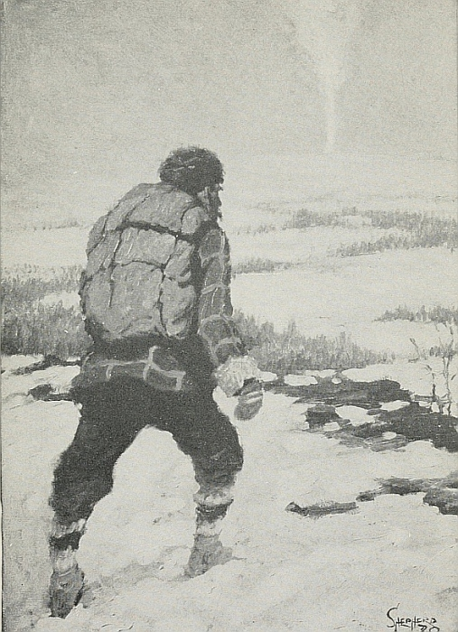
(page 165)
“'You made a fine signal'.”
“The woman had heard, and, with a little scream, sprang to her feet and quickly came up behind me, put her hand upon me, and cried: 'He has come! It is my brother who has come!'
“And, as in the Bible, where Monsieur Moses spoke to the rock and the water gushed from it, so the woman cried into the dark and an answering voice sprang from it—a voice as from the dead.
“I stood trembling, too weak to move.
“'You made a fine signal,' the voice said. 'Thank God for it!'
“'Yes, thank le bon Dieu, for it was His pillar of fire,' I said. 'Who are you?'
“'The rescued come to rescue,' he replied; 'her brother.'
“His sister had sunk upon the snow. As he bent to pick her up, I saw the extra pairs of snow-shoes on his back, I noticed my toboggan that he was pulling, and the stores of food upon it.
“'You are strong again,' I said, wishing to pinch him to see whether he was he, or a trick of some werewolf who was deceiving me.
“'Thanks to your food,' “'But you have been long coming, brother,' said she, weakly. 'Why so long?'
“'All the bays are much alike,' he explained; 'and when the Smoky Pool was frozen, I lost my only clue. I was getting always farther away on my hunt, when the Lord turned and led me here by His pillar of fire.'
“And the three of us, standing there in the dark of earliest dawn beneath the Great Bear, we keep still and say three—four prayers from ourselves to that same Jehovah who had guided Monsieur Moses, for the making of us safe.”
Prunier ceased abruptly and knocked out his pipe upon the hearth-side, then gazed reminiscently out into the falling snow.
I was busy with the picture in my brain of that blackened hulk, the frail woman and her almost helpless companion[Pg 166] standing there in the midst of that gray waste of coming dawn. But the Lad's mind had already gone scouting on before.
“And were you made safe, Prunier?” he asked.
“Oh, certainement!” said the guide, almost drolly. “Voyez, I am here.”
“Then tell us—” commanded the insatiable youth.
“Mais, cette une longue histoire,” was all we heard.
[Pg 167]
| 1. Prunier's Return | 11. Prunier's First Moose |
| 2. The Brother's Adventures | 12. Why Prunier Lived in the North |
| 3. The Story of the Shipwreck | 13. The Sister's Return to Civilization |
| 4. The Mutiny of the Crew | 14. In Prunier's Hut |
| 5. Prunier's Boyhood | 15. The Strange Visitor |
| 6. How Prunier Obtained Pierre | 16. The End of the Wolves |
| 7. Prunier's Longest Journey | 17. Prunier Tells Another Story |
| 8. Why Prunier Was Superstitious | 18. The Sister Tells a Story |
| 9. The Rescue of Pierre | 19. The Fate of the Deserters |
| 10. How Prunier Lost a Companion | 20. Prunier's Last Day |
In the introduction of your romance use familiar scenes, events or characters that will lead naturally to a narrative of startling events. Say enough to indicate the setting of your story and to make it a vital factor in producing effect but do not write any long-drawn descriptions or explanations. Let your characters tell the story and present its setting.
Make all the action hinge on worthy effort, and contribute to awakening respect for the characters. Tell a series of most unusual events. In telling every incident make full use of suspense and of climax. Tell the incidents in such a way that one will lead naturally to another.
Your story will produce the most startling effect if you show your hero apparently defeated but able, at the last moment, to find a means of escape from danger.
Keep your story true to human nature, and to the best ideals of human nature.
[Pg 168]
THE DIDACTIC ESSAY
By THEODORE ROOSEVELT
(1858-1919). Twenty-sixth President of the United States. One of the most vigorous, courageous and picturesque figures in the public life of his day. Soon after his graduation from Harvard, and from Columbia Law School he entered public life, and gave invaluable service in many positions, becoming President in 1901, and again in 1904. His work as an organizer of the “Rough Riders,” his skill in horsemanship, his courage as an explorer and hunter, and his staunch patriotism and high ideals all made him both interesting and beloved. His work as an author is alone sufficient to make him great. Among his many books are The Winning of the West; The Strenuous Life; African Game Trails; True Americanism.
The American Boy is a didactic essay,—an essay that expresses the writer's individuality and opinions and at the same time conveys instruction in the form of inspiration. Such an essay approaches the oration and the treatise. It differs from the oration in being less strongly didactic, and from the treatise in being less formal and comprehensive.
Mr. Roosevelt's personality is particularly evident in The American Boy. In every paragraph the reader feels the virile strength, the masterful force, the firm-set manhood, the broad-minded attitude toward all things that are good, and the intense hatred of cowardice and evil that always characterized Mr. Roosevelt. The writer is not so much telling a boy what to do as he is telling what sort of boy he admires.
The force of such an essay is great. No one, boy or man, can read The American Boy without being the better for it, without himself admiring manliness, the right balance between athletics and study, and the ideals of courage and fair-play.
Of course, what we have a right to expect of the American boy is that he shall turn out to be a good American man. Now, the chances are strong that he won't be much of a man unless he is a good deal of a boy. He must not be a coward or a weakling, a bully, a shirk, or a prig. He must work[Pg 169] hard and play hard. He must be clean-minded and clean-lived, and able to hold his own under all circumstances and against all comers. It is only on these conditions that he will grow into the kind of American man of whom America can be really proud.
There are always in life countless tendencies for good and for evil, and each succeeding generation sees some of these tendencies strengthened and some weakened; nor is it by any means always, alas! that the tendencies for evil are weakened and those for good strengthened. But during the last few decades there certainly have been some notable changes for good in boy life. The great growth in the love of athletic sports, for instance, while fraught with danger if it becomes one-sided and unhealthy, has beyond all question had an excellent effect in in-reared manliness. Forty or fifty years ago the writer on American morals was sure to deplore the effeminacy and luxury of young Americans who were born of rich parents. The boy who was well off then, especially in the big Eastern cities, lived too luxuriously, took to billiards as his chief innocent recreation, and felt small shame in his inability to take part in rough pastimes and field sports. Nowadays, whatever other faults the son of rich parents may tend to develop, he is at least forced by the opinion of all his associates of his own age to bear himself well in manly exercises and to develop his body—and therefore, to a certain extent, his character—in the rough sports which call for pluck, endurance, and physical address.
Of course, boys who live under such fortunate conditions that they have to do either a good deal of outdoor work or a good deal of what might be called natural outdoor play, do not need this athletic development. In the Civil War the soldiers who came from the prairie and the backwoods and the rugged farms where stumps still dotted the clearings, and who had learned to ride in their infancy, to shoot as soon as they could handle a rifle, and to camp out whenever they got the chance, were better fitted for military work than any set of mere school or college athletes[Pg 170] could possibly be. Moreover, to mis-estimate athletics is equally bad whether their importance is magnified or minimized. The Greeks were famous athletes, and as long as their athletic training had a normal place in their lives, it was a good thing. But it was a very bad thing when they kept up their athletic games while letting the stern qualities of soldiership and statesmanship sink into disuse. Some of the boys who read this paper will certainly sometime read the famous letters of the younger Pliny, a Roman who wrote, with what seems to us a curiously modern touch, in the first century of the present era. His correspondence with the Emperor Trajan is particularly interesting; and not the least noteworthy thing in it is the tone of contempt with which he speaks of the Greek athletic sports, treating them as the diversions of an unwarlike people which it was safe to encourage in order to keep the Greeks from turning into anything formidable. So at one time the Persian kings had to forbid polo, because soldiers neglected their proper duties for the fascinations of the game. To-day, some good critics have asserted that the reverses suffered by the British at the hands of the Boers in South Africa are in part due to the fact that the English officers and soldiers have carried to an unhealthy extreme the sports and pastimes which would be healthy if indulged in with moderation, and have neglected to learn as they should the business of their profession. A soldier needs to know how to shoot and take cover and shift for himself—not to box or play football. There is, of course, always the risk of thus mistaking means for ends. English fox-hunting is a first-class sport; but one of the most absurd things in real life is to note the bated breath with which certain excellent Englishmen, otherwise of quite healthy minds, speak of this admirable but not over-important pastime. They tend to make it almost as much of a fetish as, in the last century, the French and German nobles made the chase of the stag, when they carried hunting and game-preserving to a point which was ruinous to the national life. Fox-hunting is very good as a pastime, but it is about as poor a[Pg 171] business as can be followed by any man of intelligence. Certain writers about it are fond of quoting the anecdote of a fox-hunter who, in the days of the English Civil War, was discovered pursuing his favorite sport just before a great battle between the Cavaliers and the Puritans, and right between their lines as they came together. These writers apparently consider it a merit in this man that when his country was in a death-grapple, instead of taking arms and hurrying to the defense of the cause he believed right, he should placidly have gone about his usual sports. Of course, in reality the chief serious use of fox-hunting is to encourage manliness and vigor, and keep a man so that in time of need he can show himself fit to take part in work or strife for his native land. When a man so far confuses ends and means as to think that fox-hunting, or polo, or football, or whatever else the sport may be, is to be itself taken as the end, instead of as the mere means of preparation to do work that counts when the time arises, when the occasion calls—why, that man had better abandon sport altogether.
No boy can afford to neglect his work, and with a boy work, as a rule, means study. Of course, there are occasionally brilliant successes in life where the man has been worthless as a student when a boy. To take these exceptions as examples would be as unsafe as it would be to advocate blindness because some blind men have won undying honor by triumphing over their physical infirmity and accomplishing great results in the world. I am no advocate of senseless and excessive cramming in studies, but a boy should work, and should work hard, at his lessons—in the first place, for the sake of what he will learn, and in the next place, for the sake of the effect upon his own character of resolutely settling down to learn it. Shiftlessness, slackness, indifference in studying, are almost certain to mean inability to get on in other walks of life. Of course, as a boy grows older it is a good thing if he can shape his studies in the direction toward which he has a natural bent; but whether he can do this or not, he must put his whole heart into them. I[Pg 172] do not believe in mischief-doing in school hours, or in the kind of animal spirits that results in making bad scholars; and I believe that those boys who take part in rough, hard play outside of school will not find any need for horse-play in school. While they study they should study just as hard as they play football in a match game. It is wise to obey the homely old adage, “Work while you work; play while you play.”
A boy needs both physical and moral courage. Neither can take the place of the other. When boys become men they will find out that there are some soldiers very brave in the field who have proved timid and worthless as politicians, and some politicians who show an entire readiness to take chances and assume responsibilities in civil affairs, but who lack the fighting edge when opposed to physical danger. In each case, with soldiers and politicians alike, there is but half a virtue. The possession of the courage of the soldier does not excuse the lack of courage in the statesman, and even less does the possession of the courage of the statesman excuse shrinking on the field of battle. Now, this is all just as true of boys. A coward who will take a blow without returning it is a contemptible creature; but, after all, he is hardly as contemptible as the boy who dares not stand up for what he deems right against the sneers of his companions who are themselves wrong. Ridicule is one of the favorite weapons of wickedness, and it is sometimes incomprehensible how good and brave boys will be influenced for evil by the jeers of associates who have no one quality that calls for respect, but who affect to laugh at the very traits which ought to be peculiarly the cause for pride.
There is no need to be a prig. There is no need for a boy to preach about his own good conduct and virtue. If he does he will make himself offensive and ridiculous. But there is urgent need that he should practise decency; that he should be clean and straight, honest and truthful, gentle and tender, as well as brave. If he can once get to a proper understanding of things, he will have a far more hearty[Pg 173] contempt for the boy who has begun a course of feeble dissipation, or who is untruthful, or mean, or dishonest, or cruel, than this boy and his fellows can possibly, in return, feel for him. The very fact that the boy should be manly and able to hold his own, that he should be ashamed to submit to bullying without instant retaliation, should, in return, make him abhor any form of bullying, cruelty, or brutality.
There are two delightful books, Thomas Hughes's “Tom Brown at Rugby,” and Aldrich's “Story of a Bad Boy,” which I hope every boy still reads; and I think American boys will always feel more in sympathy with Aldrich's story, because there is in it none of the fagging, and the bullying which goes with fagging, the account of which, and the acceptance of which, always puzzle an American admirer of Tom Brown.
There is the same contrast between two stories of Kipling's. One, called “Captains Courageous,” describes in the liveliest way just what a boy should be and do. The hero is painted in the beginning as the spoiled, over-indulged child of wealthy parents, of a type which we do sometimes unfortunately see, and than which there exist few things more objectionable on the face of the broad earth. This boy is afterward thrown on his own resources, amid wholesome surroundings, and is forced to work hard among boys and men who are real boys and real men doing real work. The effect is invaluable. On the other hand, if one wishes to find types of boys to be avoided with utter dislike, one will find them in another story by Kipling, called “Stalky & Co.,” a story which ought never to have been written, for there is hardly a single form of meanness which it does not seem to extol, or of school mismanagement which it does not seem to applaud. Bullies do not make brave men; and boys or men of foul life cannot become good citizens, good Americans, until they change; and even after the change scars will be left on their souls.
The boy can best become a good man by being a good boy—not a goody-goody boy, but just a plain good boy. I do not mean that he must love only the negative virtues;[Pg 174] I mean he must love the positive virtues also. “Good,” in the largest sense, should include whatever is fine, straightforward, clean, brave, and manly. The best boys I know—the best men I know—are good at their studies or their business, fearless and stalwart, hated and feared by all that is wicked and depraved, incapable of submitting to wrongdoing, and equally incapable of being aught but tender to the weak and helpless. A healthy-minded boy should feel hearty contempt for the coward, and even more hearty indignation for the boy who bullies girls or small boys, or tortures animals. One prime reason for abhorring cowards is because every good boy should have it in him to thrash the objectionable boy as the need arises.
Of course, the effect that a thoroughly manly, thoroughly straight and upright boy can have upon the companions of his own age, and upon those who are younger, is incalculable. If he is not thoroughly manly, then they will not respect him, and his good qualities will count for but little; while, of course, if he is mean, cruel, or wicked, then his physical strength and force of mind merely make him so much the more objectionable a member of society. He cannot do good work if he is not strong, and does not try with his whole heart and soul to count in any contest; and his strength will be a curse to himself and to every one else if he does not have thorough command over himself and over his own evil passions, and if he does not use his strength on the side of decency, justice, and fair dealing.
In short, in life, as in a football game, the principle to follow is:
Hit the line hard; don't foul and don't shirk, but hit the line hard!
[Pg 175]
| 1. The American Girl | 11. Fearlessness |
| 2. The American Man | 12. Physical Strength |
| 3. The American Woman | 13. Fair Play |
| 4. The Good Athlete | 14. Energy |
| 5. The Good Student | 15. The Under Dog |
| 6. The True Aristocrat | 16. American Ideals |
| 7. The Truly Rich | 17. Success in Life |
| 8. The Ideal of Work | 18. Skill |
| 9. Good Reading | 19. A Good Time |
| 10. Good Citizenship | 20. Manliness |
Your subject must be one on which you have strong convictions as the result of personal experience. In a certain sense, your essay must represent your own life. Try to hold forward no ideals that you yourself do not uphold.
Formulate a strong central thought, and two or three subordinate and supporting thoughts. When you have done this develop your essay step by step, giving examples drawn from history or from well-known facts. Mention books that set forward the ideals you wish to emphasize.
Write in a strong, forceful, almost commanding style, but do not say “Thus and so shalt thou do.” Speak in strong terms of the principles that you admire but leave your readers to draw value from the enthusiasm of your words rather than information from directions given.
[Pg 176]
By HILDEGARDE HAWTHORNE
Daughter of Julian Hawthorne, and grand-daughter of Nathaniel Hawthorne. She writes with rare charm and literary power, and contributes regularly to many periodicals. Among her books are: A Country Interlude; The Lure of the Garden; Old Seaport Towns of New England; Girls in Bookland.
The article that follows is much like an oration or an editorial article in that it is directed to “you” rather than expressive of “I”. The true essay is not concerned with “you”: it is concerned only with “I”.
Both the oration and the editorial article have much in common with the essay type; for both turn aside frequently into the happy fields of meditation.
The first three paragraphs of The Spirit of Adventure are purely personal in nature and therefore wholly in keeping with the spirit of the essay form. Furthermore, those paragraphs—so reminiscent of the fancy of the writer's famous grandfather, Nathaniel Hawthorne,—represent poetic prose. Throughout the article the personal note mingles with the directing voice of the editorial article. Indeed, it would be easy to drop from The Spirit of Adventure everything that is not personal, and thereby to leave pure essay.
As it stands, The Spirit of Adventure is a didactic essay, brave and strong in its thought, and poetic in its style.
Wind has always seemed wonderful and beautiful to me.
Invisible as it is, it pervades the whole world. It has the very quality of life. Without wind, how dead and still the world would be! In the autumn, wind shakes the leaves free and sends them flying, gold and red. It takes the seeds of many plants and sows them over the land. It blows away mists and sets clouds to voyaging, brings rain and fair weather the year round, builds up snow in fantastic palaces, rolls the waves high, murmurs a fairy music in the pines and shouts aloud in storms. Wind is the great adventurer of nature. Sometimes it is so fierce and terrible that nothing can stand before it—houses are torn to shreds, trees are[Pg 177] felled, ruin follows where it goes. At other times, it comes marching wet and salt from the sea, or dry and keen from the mountains on hot summer days, bringing ease and rest and health. Keen as a knife, it whips over the frozen ground in winter and screams wildly round the farm-house, taps the panes with ghost fingers, and whistles like a sprite in the chimney. It brings sails from land to land, turns windmills in quaint foreign places, and sets the flags of all the countries of the world fluttering on their high staffs.
Wind is nature's spirit of adventure, keeping her world vigorous, clean, and alive.
For us, too, the spirit of adventure is the fine wind of life, and if we have it not, or lose it, either as individual or nation, then we begin to die, our force and freshness depart, we stop in our tracks, and joy vanishes. For joy is a thing of movement and energy, of striving forward, a thing of hope as well as fruition. You must be thoroughly alive to be truly joyful, and all the great things accomplished by men and nations have been accomplished by vigorous and active souls, not content to sit still and hold the past, but eager to press on and to try undiscovered futures.
If ever a nation was founded on, and built up by, the spirit of adventure, that nation is our own. The very finding of it was the result of a splendid upspring of that spirit. From then on through centuries it was only men in whom the spirit of adventure was strong as life itself who reached our shores. Great adventurers, on they came, borne as they should be, by wind itself! Gallant figures, grim figures, moved by all sorts of lures and impulses, yet one and all stirred and led by the call of adventure, that cares nothing for ease of body or safety, for old, tried rules and set ways and trodden paths, but passionately for freedom and effort, for what is strange and dangerous and thrilling, for tasks that call on brain and body for quick, new decisions and acts.
The spirit of adventure did not die with the settling of our shores. Following the sea adventures came those of[Pg 178] the land, the pioneers, who went forward undismayed by the perils and obstacles that appeared quite as insurmountable as did the uncharted seas to Columbus's men. Think of the days, when next you ride across our great continent in the comfort of a Pullman, when it took five months and more to make the same journey with ox-teams. Think how day followed day for those travelers across the Great Plains in a sort of changeless spell, where they topped long slow rise after long slow rise only to see the seemingly endless panorama stretch on before them. Think how they passed the ghastly signs of murdered convoys gone before, and yet pressed on. Think how they settled here and there in new strange places where never the foot of men like themselves had been set before, and proceeded to build homes and till the land, rifle in hand; think how their wives reared their children and kept their homes where never a white child or a Christian home had been before.
Where should we be to-day but for such men and women—if this wind of the spirit had never blown through men's hearts and fired them on to follow its call, as the wind blows a flame?
Wherever you look here in America you can see the signs and traces of this wonderful spirit. In old towns, like Provincetown or Gloucester,[59] you still hear tales of the whale-fisheries, and still see boats fare out to catch cod and mackerel on the wild and dangerous Banks. But in the past, the fishers sailed away for a year or two, round the globe itself, after their game! You see the spirit's tracks along the barren banks of the Sacramento,[60] where the gold-seekers fronted the wilderness after treasure, and in Alaska it walks incarnate. It is hewing its way in forests and digging it in mines; it is building bridges and plants in the deserts and the mountains. Out it goes to the islands of the Pacific, and in Africa it finds a land after its heart.
[Pg 179]
How much of this spirit lives in you?
I tell you, when I hear a girl or a boy say: “This place is good enough for me. I can get a good job round the corner! I know all the folks in town; and I don't see any reason for bothering about how they live in other places or what they do away from here”; when I hear that sort of talk from young people, my heart sinks a bit.
For such boys and girls there is no golden call of adventure, no lure of wonder by day and night, no desire to measure their strength against the world, no hope of something finer and more beautiful than what they have as yet known or seen.
I like the boy or girl who sighs after a quest more difficult than the trodden trail, who wants more of life than the assurance of a good job. I know very well that the home-keeping lad has a stout task to perform and a good life to live. But I know, too, that if the youth of a nation loses its love of adventure, if that wild and moving spirit passes from it, then the nation is close to losing its soul. It has about reached the limit of its power and growth.
So much in our daily existence works against this noble spirit, disapproves it, fears it. People are always ready to prove that there is neither sense nor profit in it. Why should you sail with Drake[61] and Frobisher,[62] or march with Fremont[63] or track the forest with Boone,[64] when it is so much easier and safer and pays better to stay at home? Why shouldn't you be content to do exactly like the people about you, and live the life that is already marked out for you to live?
[Pg 180]
That is what most of us will do. But that is no reason why the glorious spirit of adventure should be denied and reviled. It is the great spirit of creation in our race. If it stirs in you, listen to it, be glad of it.
A mere restless impulse to move about, the necessity to change your environment or else be bored, the dissatisfaction with your condition that leads to nothing but ill temper or melancholy, these are not part of the spirit of which I am speaking. You may develop the spirit of adventure without stirring from home, for it is not ruled by the body and its movements. Great and high adventure may be yours in the home where you now live, if you realize that home as a part of the great world, as a link of the vast chain of life. Two boys can sit side by side on the same hearth-stone, and in one the spirit of adventure is living and calling, in the other it is dead. To the first, life will be an opportunity and a beckoning. He will be ready to give himself for the better future; he will be ready to strike hands with the fine thought and generous endeavor of the whole world, bringing to his own community the fruit of great things, caring little for the ease and comfort of his body, but much for the possibilities of a finer, truer realization of man's eternal struggle toward a purer liberty and a nobler life. The spirit of adventure is a generous spirit, kindling to great appeals. Of the two boys, sitting there together, the second may perhaps go round the world, but to him there will be no song and no wonder. He will not find adventure, because he has it not. The old phrase, “adventures to the adventurous,” is a true saying. The selfish and the small of soul know no adventures.
As I think of America to-day, I say the spirit that found and built her must maintain her. There are great things to be done for America in the coming years, in your years. Her boundaries are fixed, but within those boundaries marvelous development is possible. Her government has found its form, but there is work for the true adventurer in seeing that the spirit of that government, in all its endless ramifications and expressions, fulfils the intention of human liberty[Pg 181] and well-being that lie within that form. Her relations with the world outside of herself are forming anew, and here too there is labor of the noblest. The lad who cares only for his own small job and his own small comforts, who dreads the rough contacts of life and the dangers of pioneering will not help America much.
In the older days the Pilgrim Fathers cast aside every comfort of life to follow the call of liberty, coming to a wilderness so remote, that for us a voyage to some star would scarcely seem more distant or strange. None of us will be called upon to do so tremendous a thing as that act of theirs, so far as the conditions of existence go, since the telegraph and the aëroplane and turbine knit us close. But there are adventures quite as magnificent to be achieved.
The spirit of adventure loves the unknown. And in the unknown we shall find all the wonders that are waiting for us. Our whole life is lived on the very border of unknown things, but only the adventurous spirit reaches out to these and makes them known, and widens the horizons for humanity. The very essence of the spirit of adventure is in doing something no one has done before. Every high-road was once a trail, every trail had its trail-breaker, setting his foot where no man's foot had gone before through what new forests and over what far plains.
It is good to ride at ease on the broad highway, with every turning marked and the rules all kept. But it is not the whole of life. The savor of lonely dawns, the call of an unknown voice, the need to establish new frontiers of spirit and action beyond any man has yet set, these are also part of life. Do not forego them. You are young and the world is before you. Be among those who perceive all its variety, its potentialities, who can see good in the new and unknown, and find joy in hazard and strength in effort. Do not be afraid of strange manners and customs, nor think a thing is wrong because it is different.
Throw wide the great gates of adventure in your soul, young America!
[Pg 182]
| 1. Love of Truth | 11. The Snow |
| 2. The Spirit of Fair Play | 12. Falling Leaves |
| 3. The Sense of Honor | 13. The Ocean |
| 4. Stick-to-it-iveness | 14. The Storm |
| 5. Faithfulness | 15. Moonlight |
| 6. School Spirit | 16. The Voice of Thunder |
| 7. Loyalty | 17. Flowers |
| 8. The Scientific Spirit | 18. The Friendly Trees |
| 9. Work | 19. Country Brooks |
| 10. The Spirit of Helpfulness | 20. Gentle Rain |
If you wish to write two or three paragraphs of poetic prose in imitation of the first three paragraphs of The Spirit of Adventure choose one of the topics in the second column. Write, first of all, a sentence that will summarize your principal thought, a sentence that will correspond with the sentence that forms the third paragraph of Miss Hawthorne's essay. Then lead up to this sentence by writing a series of sentences full of fancy. Use figures of speech[Pg 183] freely. Arrange your words, phrases or clauses so that you will produce both striking effects and also rhythm.
If you wish to write in imitation of the entire essay choose one of the topics in the first column. Begin your work by writing a series of poetic paragraphs that will present the spirit of your essay. Continue to write in a somewhat poetic style, but make many definite allusions to history, literature or the facts of life.
Throughout your work express your own personality as much as you can. End your essay by making some personal appeal but do not make your work too didactic.
FOOTNOTES:
[59] Provincetown or Gloucester. Famous sea-coast towns on the coast of Massachusetts.
[60] Sacramento. A river of California, near which gold was discovered in 1848.
[61] Sir Francis Drake (1540-1596). A great English sailor and naval commander. He was the first Englishman to circumnavigate the earth, and was one of the commanders in the fight with the Spanish Armada, 1888.
[62] Sir Martin Frobisher (1535-1594). The discoverer of Frobisher Bay; one of the leaders against the Spanish Armada.
[63] John C. Fremont (1813-1890). An American general noted for his explorations of the West.
[64] Daniel Boone (1735-1820). An early American explorer, pioneer and Indian fighter.
[Pg 184]
By ROBERT and ELIZABETH SHACKLETON
Robert Shackleton (1860—) and his wife, Elizabeth Shackleton, have written much in collaboration. Among such works are: The Quest of the Colonial; Adventures in Home Making; The Charm of the Antique. Mr. Shackleton was at one time associate editor of The Saturday Evening Post. He is the author of many books, among which are Touring Great Britain; History of Harper's Magazine, and The Book of New York.
Washington Irving's Sketch Book tells of Irving's delighted wanderings around old London, and of his interest in streets and buildings that awoke memories of the past. Vanishing New York is an essay that corresponds closely with the essays written by Irving so many years ago. In this modern essay Robert and Elizabeth Shackleton tell of their wanderings about old New York, of odd streets, curious buildings, and romantic and historic associations. The essay gives to New York an interest that makes it, in the eyes of the reader, as fascinating as Irving's old London.
The writers do more than tell the story of a walk about New York, and much more than merely name and describe the places they saw. By a skilful use of adjectives, and by an interested suggestiveness, they throw over the places they mention an atmosphere of charm. We feel that we are with them, enjoying and loving the curious old places that seem so destined to vanish forever.
What is left of old New York that is quaint and charming? The New York of the eighties and earlier, of Henry James,[65] of Gramercy Park, Washington and Stuyvesant squares, quaint old houses on curious by-streets? The period of perhaps a more beautiful and certainly a more leisurely existence? All places of consequence and interest that remain to-day are herewith described.
To one, vanishing New York means a little box garden up in the Bronx, glimpsed just as the train goes into the subway. To another, it is a fan-light on Horatio Street; an old cannon, planted muzzle downward at a curb-edge; a long-watched, ancient mile-stone; a well; a water-tank bound [Pg 185]up in a bank charter; a Bowling Green sycamore; an ailantus beside the twin French houses of crooked Commerce Street. And what a pang to find an old landmark gone! To another it is the sad little iron arch of the gate of old St. John's at the end of the once-while quaint St. John's Place, all that is now left of the beautiful pillared and paneled old church and its English-made wrought-iron fence. To many it is the loss of the New York sky-line, one of the wonders of the world—lost, for it has vanished from sight. Now the sky-line is to be seen only from the water, and the city is no longer approached by water except by a few; but is entered under the rivers on each side, by tunnels down into which the human currents are plunged. A positive thrill, a morning-and-evening thrill that was almost a worship of the noble and the beautiful, used to sweep over the packed thousands on the ferry-boats as they gazed at the sky-line.
It is extraordinary how swiftly New York destroys and rebuilds. There is the story of a distinguished visitor who, driven uptown on the forenoon of his arrival, was, on his departure in the late afternoon of the same day, driven downtown over the same route in order that he might see what changes had meanwhile taken place. The very first vessel built in New York—it was three hundred years ago—was named in the very spirit of prophecy, for it was called the Onrust (Restless).
Yet it is astonishing how much of interest remains in this iconoclastic city, although almost everything remains under constant threat of destruction. Far over toward the North River is one of the threatened survivals. It is shabby, ancient; indeed, it has been called the oldest building in New York, though nothing certain is known beyond 1767. But it is very old, and may easily date much further back. It is called the Clam Broth House, and is on Weehawken Street, which, closely paralleling West Street, holds its single block of length north from Christopher. It is a lost and forgotten street, primitively cobblestoned with the worst pavement in New York, and it holds several lost and forlorn old houses—low-built houses, with great broad, sweeping roofs[Pg 186] reaching almost to the ground, houses tremulous with age. Of these the one now called the Clam Broth House, low, squat, broad-roofed, is the oldest. In a sense the fronts are on West Street, but all original characteristics have there been bedizenedly lost, and the ancient aspect is on Weehawken Street.
These were fishermen's houses in ancient days, waterside houses; for West Street is filled-in ground, and the broad expanse of shipping space out beyond the street is made land. When these houses were built, the North River reached their doors, and, so tradition has it, fishermen actually rowed their boats and drew their shad-seines beneath this Clam Broth House.
Of a far different order of interest is a demure little church, neat and trim, on Hudson street. It is built of brick, bright red, with long red wings stretching oddly away from the rear, with a low, squat tower of red, and in the midst of gray old houses that hover around in fading respectability. It is St. Luke's, is a century old, and with it is connected the most charming custom of New York.
In 1792 a certain John Leake died, leaving a sum to Trinity Church for the giving forever, to “such poor as shall appear most deserving,” as many “six-penny wheaten loaves” as the income would buy, and this sweet and simple dole has ever since been regularly administered, and it will go on through the centuries, like the ancient English charity at Winchester, where for eight hundred years bread and ale have been given.
But there is one strictly New York feature about this already old Leake dole that differentiates it from the dole of Winchester, for it is still at the original wicket that the Winchester dole is given. There the custom was instituted, and there it has continued through all these centuries. But in New York the dole began at Trinity, but after something more than half a century, as population left the neighborhood of Trinity, the dole was transferred to St. John's, on Varick Street, once known as “St. John's in the Fields,” and now, after more than another half-century, there has come still[Pg 187] another removal, and the dole is given at quaint old St. Luke's. Thus it has already had three homes, and one wonders how many it will have as the decades and the centuries move on. One pictures it peripatetically proceeding hither and thither as further changes come upon the city, the dole for the poor that never vanish.
A short distance south from St. Luke's, on the opposite side of Hudson Street, is an open space that is a public playground and a public garden. It was a graveyard, but a few years ago the city decreed that it should vanish, with the exception of a monument put up to commemorate the devotion of firemen who gave their lives for duty in a fire of the long ago. It was not the graveyard of St. Luke's, although near, but of farther away St. John's; and it is pleasant to remember that it was in walking to and fro among the now vanished graves and tombs that Edgar Allan Poe[66] composed his “Raven.”
Cheerful in its atmosphere—but perhaps this is largely from its name—is short little Gay Street, leading from Waverley Place, just around the corner from Sixth Avenue. Immediately beyond this point—for much of the unexpected still remains in good old Greenwich Village—Waverley becomes, by branching, a street with four sidewalks; for both branches hold the name of Waverley. It is hard for people of to-day to understand the power of literature in the early half of the last century, when Washington Irving[67] was among the most prominent citizens, and James Fenimore Cooper[68] was publicly honored, and admirers of the Waverley Novels made successful demand on the aldermen to change the name of Sixth Street, where it left Broadway, to Waverley Place, and to continue it beyond Sixth Avenue, discarding another name on the way, and at this forking-point to do away with both Catharine and Elizabeth streets in order to give Waverley its four sidewalks. Could this be done in these later days with the names, say of Howells[69] or of Hopkinson Smith![70] Does any one ever propose to have an “O” put before Henry Street![71]
[Pg 188]
At the forking-point is a triangular building, archaic in aspect, and very quiet. It is a dispensary, and an ancient jest of the neighborhood is, when some stranger asks if it has patients, to reply, “It doesn't need 'em; it's got money.”
Gay Street is miniature; its length isn't long and its width isn't wide. It is a street full of the very spirit of old Greenwich, or, rather, of the old Ninth Ward; for thus the old inhabitants love to designate the neighborhood, some through not knowing that it was originally Greenwich Village, and a greater number because they are not interested in the modern development, poetic, artistic, theatric, empiric, romantic, sociologic, but are proud of the honored record of the district as the most American ward of New York City.
In an apartment overlooking a Gay Street corner there died last year a man who had rented there for thirty-four years. There loomed practical difficulties for the final exit, the solution involving window and fire-escape. But the landlord, himself born there, said, “No; he has always gone in and out like a gentleman, and he shall still go out, for the last time, as a gentleman,” thereupon he called in carpenter and mason to cut the wall.
Then some old resident will tell you, pointing out house by house and name by name, where business men, small manufacturers, politicians, and office-holders dwelt. And, further reminiscent, he will tell of how, when a boy, at dawn on each Fourth of July, he used to get out his toy cannon and [Pg 189] fire it from a cellar entrance (pointing to the entrance), and how one Fourth the street was suddenly one shattering crash, two young students from the old university across Washington Square having experimentally tossed to the pavement from their garret window a stick of what was then “a new explosive, dynamite.” No sane and safe Fourths then!
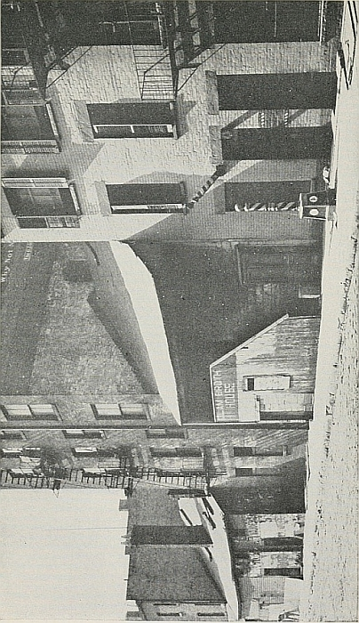
(page 185)
“It has been called the oldest building in New York.”
It is still remembered that some little houses at the farther end of Gay Street, on Christopher, were occupied by a little colony of hand-loom weavers from Scotland, who there looked out from these “windows in Thrums.”[72]
Around two corners from this spot is a curiously picturesque little bit caused by the street changes of a century ago. It is Patchin Place, opening from Tenth Street opposite Jefferson Market. The place is a cul-de-sac, with a double row of little three-story houses, each looking just like the other, of yellow-painted brick. Each house has a little area space, each front door is up two steps from its narrow sidewalk. Each door is of a futuristic green. Each has its ailantus-tree, making the little nooked place a delightful bower.
Immediately around the corner is the still more curious Milligan Place, a spot more like a bit of old London than any other in New York. It is a little nestled space, entered by a barely gate-wide opening from the busy Sixth Avenue sidewalk. Inside it expands a trifle, just sufficiently to permit the existence of four little houses, built close against one another. So narrowly does an edge of brick building come down beside the entrance that it is literally only the width of the end of the bricks.
In an instant, going through the entrance that you might pass a thousand times without noticing, you are miles away, you are decades away, in a fragment of an old lost lane.
Near by, where Sixth Avenue begins, there is still projective from an old-time building the sign of the Golden Swan, a lone survival of long ago. And this is remindful of the [Pg 190]cigar-store Indians. Only yesterday they were legion, now a vanished race. And the sidewalk clocks that added such interest to the streets, they, too, have gone, banished by city ordinance.
The conjunction of Seventh Avenue and Greenwich Avenue and Eleventh Street makes a triangle, at the sharp point of which is a small, low, and ancient building, fittingly given over to that ancient and almost vanished trade, horseshoeing. A little brick building with outside wooden stair stands against and above it as the triangle widens, and then comes an ancient building a little taller still. And this odd conglomerate building was all, so you will be told, built in the good old days for animal houses for one of the earliest menageries! Next came a period of stage-coaches, with horses housed here. And, as often in New York, a great shabbiness accompanies the old. Within the triangle, inside of a tall wooden fence, are several ancient ailantus trees, remindful that long ago New York knew this locality as—name full of pleasant implications—“Ailanthus Gardens.” And every spring Ailanthus Gardens, oblivious to forgetfulness and shabbiness, still bourgeons green and gay.
An old man, a ghost-of-the-past old man, approached, and, seeing that we were interested, said abruptly, unexpectedly, “That's Bank Street over there, where the banks and the bankers came,” thus taking the mind far back to the time of a yellow-fever flight from what was then the distant city to what was in reality Greenwich.
Only a block from here, on Seventh Avenue, is a highly picturesque survival, a long block of three-story dwellings all so uniformly balconied, from first floor to roof-line, across the entire fronts, that you see nothing but balconies, with their three stories fronted with eyelet-pattern balustrades. In front of all the houses is an open grassy space, and up the face of the balconies run old wistaria-vines. Each house, through the crisscrossing of upright and lateral lines, is fronted with nine open square spaces, like Brobdingnagian pigeon-holes.
[Pg 191]
On West Eleventh Street is a row almost identical in appearance. If you follow Eleventh Street eastward, and find that it does not cut across Broadway, you will remember that this comes from the efforts of Brevoort, an early landowner, to save a grand old tree that stood there. And then Grace Church gained possession, and the street remained uncut.
A most striking vanishing hereabouts has been of the hotels. What an interesting group they were in this part of Broadway! Even the old Astor, far down town, has gone, only a wrecked and empty remnant remaining.
But a neighbor of the Astor House is an old-time building whose loss, frequently threatened, every one who loves noble and beautiful architecture would deplore—the more than century-old city hall, which still dominates its surroundings, as it has always dominated, even though now the buildings round about are of towering height.
Time-mellowed, its history has also mellowed, with myriad associations and happenings and tales. That a man who was to become Mayor of New York (it was Fernando Wood) made his first entry into the city as the hind leg of an elephant of a traveling show, and in that capacity passed for the first time the city hall, is a story that out-Whittingtons Whittington.[73]
And noblest and finest of all the associations with the city hall is one which has to do with a time before the city hall arose; for here, on the very spot where it stands, George Washington paraded his little army on a July day in 1776, and with grave solemnity, while they listened in a solemnity as grave, a document was read to them that had just been received from Philadelphia and which was forever to be known as the Declaration of Independence.
It used to be, three quarters of a century ago, that people could go northward from the city hall on the New York and Harlem Railway, which built its tracks far down in this direction. It used the Park Avenue tunnel, which had been built in 1837 for the first horse-car line in the world. After the railway made Forty-second Street its terminal, horse-cars again went soberly through the tunnel. What a pleasure to remember the tinkle, tinkle as they came jerkily jogging through, from somewhere up Harlemward, and, with quirky variety as to course, to an end somewhere near University Place! A most oddly usable line.
[Pg 192]
A few minutes' walk from University Place is one of the most fascinating spots in New York—“St. Mark's in the Bouwerie,” although it is actually on Second Avenue and Stuyvesant Street.
The church was built in 1799, but it stands on property that the mighty Petrus Stuyvesant[74] owned, and on the site of a chapel that he built, and his tomb is beneath the pavement of the church, and the tombstone is set in the foundation-wall on the eastern side. There is an excellent bronze close by, fittingly made in Holland, of this whimsical, irascible, kind-hearted, clear-headed captain-general and governor who ruled this New Amsterdam. Nothing else in the city so gives the smack of age, the relish of the saltness of time, as this old church built on Stuyvesant's land and holding his bones. For Stuyvesant was born when Elizabeth reigned in England and when Henry of Navarre, with his white plume, was King of France. The great New-Yorker was born in the very year that “Hamlet” was written.[75]
He loved his city, and lived here after the English came and conquered him and seized the colony.
This highly pictorial old church, broad-fronted, pleasant-porticoed, stands within a great open graveyard space, green with grass and sweetly shaded, and its aloofness and beauty are markedly enhanced by its being set high above the level of the streets.
[Pg 193]
On Lafayette Street, once Lafayette Place, a quarter of a mile from St. Mark's, still stands the deserted Astor Library, just bought by the Y. M. H. A. as a home for immigrants, built three quarters of a century ago for permanence, but now empty and bare and grim, shorn of its Rialto-like[76] steps, with closed front, as if harboring secrets behind its saddening inaccessibility. Once-while stately gate-posts and gateway, now ruinous, beside the library building, marked the driveway entrance of a long-vanished Astor home.
All is dreary, dismal, desolate, and the color of the Venetian-like building has become a sad combination of chocolate brown and dull red.
The tens of thousands of books from here, the literature and art of the Lenox collection, and the fine foundation of Tilden are united at Fifth Avenue and Forty-second Street. From what differing sources did these three mighty foundations spring! One from the tireless industry of a great lawyer;[77] one from a far-flung fur trade that over a century ago reached through trackless wilderness to the Pacific;[78] one from a fortune wrung by exactions from American soldiers of the Revolution, prisoners of war, who paid all they had in the hope of alleviating their suffering—a fortune inherited by a man who studied to put it out for the benefit of mankind in broad charity and helpfulness, in hospitals and colleges, and in his library, left for public use.[79]
With the old Astor Library so stripped and deserted, one wonders if a similar fate awaits the stately and palatial building to which it has gone. Will the new building some [Pg 194]day vanish? And similarly the superb and mighty structures that have in recent years come in connection with the city's northern sweep?
A curious fate has attended the Lenox Library property. Given to the city, land and building and contents, the land and building were sold into private ownership when the consolidation of libraries was decided upon. The granite stronghold, built to endure forever, was razed, and where it had stood arose the most beautiful home in New York, which, gardened in boxwood, its owner filled with priceless treasures. And now he is dead, and again the land, a building, and costly contents are willed to the city.
Across from the old Astor Library stood Colonnade Row, a long and superb line of pillar-fronted grandeur; but only a small part now remains, with only a few of the fluted Corinthian pillars. All is shabby and forlorn, but noble even in shabbiness. And the remnant, one thinks, must shortly fall a victim to the destructive threat that hangs over everything in our city.
Colonnade Row was built in the eighteen twenties. Washington Irving lived there. One gathers the impression that Irving, named after Washington, lived in as many houses as those in which Washington slept. In the row occurred the wedding of President Tyler,[80] an event not characterized by modest shrinking from publicity, for after the ceremony the President and his bride were driven down Broadway in an open carriage, drawn by four horses, to the Battery, whence a boat rowed them out to begin their married life on—of all places!—a ship of war!
It is interesting to find two Virginia-born Presidents of the United States coming to Lafayette Street; for here dwelt Monroe,[81] he of the “Doctrine,” during the latter part of his life, at what is now the northwest corner of Lafayette Street and Prince; and he died there. Long since the house fell into sheer dinginess and wreck, and a few months ago [Pg 195]was sold to be demolished; but New York may feel pride in her connection with the American who, following Washington's example, declared against “entangling ourselves in the broils of Europe, or suffering the powers of the old world to interfere with the affairs of the new.”
Near this house Monroe was buried, in the Marble Cemetery on Second Street, beyond Second Avenue, a spot with high open iron fence in front and high brick wall behind, with an atmosphere of sedateness and repose, although a tenement district has come round about. Monroe's body lay here for a quarter of a century, and then Virginia belatedly carried it to Virginian soil.
Close by, entered through a narrow tunnel-like entrance at 41-1/2 Second Avenue, is another Marble Cemetery (the Monroe burying-place is the New York City Marble Cemetery, and this other is the New York Marble Cemetery), and this second one is quite hidden away in inconspicuousness, as befits a place which, according to a now barely decipherable inscription, was established as “a place of interment for gentlemen,” surely the last word in exclusiveness!
Across the street from the entrance to this cemetery for gentlemen is a church for the common people, one of the pleasant surprises of a kind which one frequently comes upon in New York—a building really distinguished in appearance, yet not noticed or known. A broad flight of steps stretches across the broad church front. There are tall pillars and pilasters, excellent iron fencing and gateway. The interior is all of the color of pale ivory, with much of classic detail and with a “Walls-of-Troy” pattern along the gallery. There were a score of such classic churches in New York early in the last century.
Always in finding the unexpected there is charm, as when, the other day, we came by the merest chance upon “Extra Place”! What a name! It is a little court nooked out of First Street,—how many New Yorkers know that there is a First Street in fact and not merely in theory?—between Second and Third avenues. Extra Place is a stone's throw in length, a forgotten bit of forlornness, but at its end, beyond[Pg 196] sheds and tall board fencing, are suggestions of pleasant homes of a distant past, great fireplace chimneys and queer windows, and an old shade tree, and under the tree a brick-paved walk, formal in its rectangle, where happy people walked in the long ago, and where once a garden smiled, but where now no kind of flower grows wild.
The tree of the New York tenements is the ailantus, palm-like in its youth, brought originally from China for the gardens of the rich. It grows in discouraging surroundings, is defiant of smoke, does not even ask to be planted; for, Topsy-like, it “jest grows.” Cut it down, and it comes up again. It is said to have no insect enemies. An odd point in its appearance is that every branch points up.
The former extraordinary picturesqueness of the waterfront has gone; but still there is much there that is strange, and a general odor of oakum and tar remains. And, leading back from the East-Side waterfront, narrow, ancient lanes have been preserved, and by these one may enter the old-time warehouse portion of the city, where still the permeative smell of drugs or leather or spice differentiates district from district.
Vanished is many a delightful old name. Pie Woman's Lane became Nassau Street. Oyster Pasty Alley became Exchange Alley. Clearly, early New Yorkers were a gustatory folk.
A notable vanishing has within a few months come to Wall Street itself—the vanishing of the last outward and visible sign of the feud of Alexander Hamilton[18] and Aaron Burr.[82] Hamilton was the leading spirit in establishing one bank in the city, and Burr, through a clause in a water-company charter, established another, and through all these decades the banks have been rivals. Now they have united their financial fortunes and become one bank.
An interesting rector of Trinity Church, which looks in such extraordinary fashion into the narrow gorge of Wall
[Pg 197]
Street, became over a century ago Bishop of New York, Benjamin Moore, and he is chiefly interesting, after all, through his early connection with the then distant region still known as Chelsea, in the neighborhood of Twenty-third Street and the North River, where he acquired great land-holdings that had been owned by the English naval captain who had made his home here and given the locality its name.
Chelsea still holds its own as an interesting neighborhood, mainly because of its possession of the General Theological Seminary, which has attracted and held desirable people and given an atmosphere of quiet seclusion.
The seminary buildings occupy the entire block between Ninth and Tenth avenues and Twentieth and Twenty-first streets. They are largely of English style, and there are long stretches of ten-foot garden wall. Now and then a mortar-boarded student strides hurriedly across an open space, and now and then a professor paces portentously. The buildings are mostly of brick, but the oldest is an odd-looking structure of silver-gray stone. The varied structures unite in effective conjunction. It may be mentioned that, owing to a Vanderbilt who looked about for something which in his opinion would set the seminary in the front rank, its library possesses more ancient Latin Bibles, so it is believed, than does even the Bodleian.[83]
The chapel stands in the middle of the square, and above it rises a square Magdalen-like tower,[84] softened by ivy; and, following a beautiful old custom as it has been followed since the tower was built, capped and gowned students gather at sunrise on Easter morning on the top of this tall tower and sing ancient chorals to the music of trombone and horn.
Chelsea ought to be the most home-like region in New York on account of its connection with Christmas; for a [Pg 198]son of Bishop Moore, Clement C. Moore,[85] who gave this land to the seminary, and made his own home in Chelsea, wrote the childhood classic, “'Twas the night before Christmas.”
In this old-time neighborhood stand not only houses, but long-established little shops. One for drugs, for example, is marked as dating back to 1839. But, after all, that is not so old as a great Fifth Avenue shop which was established in 1826. However, there is this difference: the Chelsea shops are likely to be on the very spots where they were first opened, whereas the great shop of Fifth Avenue has reached its location by move after move, from its beginning on Grand Street, when that was the fashionable shopping street of the city.
In Chelsea are still to be found the old pineapple-topped newel-posts of wrought iron, like openwork urns; there are old houses hidden erratically behind those on the street-front. One in particular remains in mind, a large old-fashioned dwelling, now reached only by a narrow and built-over passage, a house that looks like a haunted house, from its desolate disrepair, its lost loneliness of location.
Chelsea is a region of yellow cats and green shutters, shabby green on the uncared for and fresh green for the well kept. Old New York used typically to temper the dog-days behind green slat shutters, or under shop awnings stretched to the curb, and with brick sidewalks, sprinkled in the early afternoon from a sprinkling-can in the 'prentice hand.
One of the admirable old houses of Chelsea is that where dwelt that unquiet spirit, Edwin Forrest,[86] the actor. It is at 436 West Twenty-second Street, a substantial-looking, square-fronted house, with a door of a great single panel. And the interior is notable for the beautiful spiral stair that figured in court in his marital troubles.
There are in Chelsea two more than usually delightful [Pg 199]residential survivals, with the positively delightful old names of Chelsea Cottages and London Terrace. The cottages are on Twenty-fourth Street, and the Terrace is on Twenty-third, and each is between Ninth and Tenth avenues, and both were built three quarters of a century ago.
The cottages are alternating three-story and two-story houses, built tightly shoulder to shoulder, astonishingly narrow-fronted, each with a grassy space in front. Taken together, they make one of the last stands on Manhattan of simple and modest and concerted picturesque living.
The Terrace is a highly distinguished row of high-pilastered houses, set behind grassy, deep dooryards. There are precisely eighty-eight three-and-a-half-story pilasters on the front of this stately row. The houses have a general composite effect of yellowish gray. They are built on the London plan of the drawing-room on the second floor, so that those that live there “go down to dinner.” The drawing-rooms are of pleasant three-windowed spaciousness, extending across each house-front.
The terrace is notable in high-stooped New York in having the entrance-doors on virtually the sidewalk level. That the familiar and almost omnipresent high-stooped houses of the nineteenth century ought all to have been constructed without the long flight of outside stone steps characteristic of the city is shown by a most interesting development on East Nineteenth Street, between Third Avenue and Irving Place. There the houses have been excellently and artistically remodeled, with highly successful and highly satisfactory results. With comparatively slight cost, there has been alteration of commonplaceness into beauty.
The high front steps have been removed, and the front doors put down to where they ought to be. Most of the house-fronts have been given a stucco coat, showing what could be done with myriad commonplace houses of the city.
The houses are colorfully painted tawny red or cream or gray or pale pink or an excellent shade of brown. You think of it as the happiest-looking street in New York. Solid shutters add their effect, some the green of bronze patina. There[Pg 200] are corbeled gables. Some of the roofs are red-tiled. Two little two-story stables have been transformed by little Gothic doors. There are vines. There are box-bushes. There are flowers in terra-cotta boxes on low area walls. Here and there is a delightful little iron balcony, here and there a gargoyle. On one roof two or three storks are gravely standing! There are charming area-ways, and plane-trees have been planted for the entire block. And here the vanishing is of the undesirable.
On Stuyvesant Square, near by, are the Quaker buildings, standing in an atmosphere of peace which they themselves have largely made—buildings of red brick with white trimmings, and with a fine air of gentleness and repose; a little group that, so one hopes, is very far indeed from the vanishing point.
And there is fine old Gramercy Park, whose dignified homes in the past were owned by men of the greatest prominence. Many of the great homes still remain, and the central space, tall, iron-fenced, is still exclusively locked from all but the privileged, the dwellers in the houses on the park. And there, amid the grass and the trees, sedate little children, with little white or black dogs, play sedately for hours.
We went for luncheon, with two recent woman's college graduates, all familiar with New York, into the club house that was the home of Samuel J. Tilden. Our companions were unusually excellent examples of the best that the colleges produce; they were of American ancestry. But any New-Yorker will feel that much of the spirit of the city has vanished, that much of the honored and intimate tradition has gone, when we say that, it being mentioned that this had been the Tilden home, it developed that neither of them had ever heard of Samuel J. Tilden.
[Pg 201]
| 1. Things That Have Vanished | 11. A Trip About Town |
| 2. My Own Town Years Ago | 12. Some Curious Buildings |
| 3. Old Buildings | 13. The Highway |
| 4. The People of a Former Day | 14. The Founding of My Town |
| 5. Legacies | 15. Early Settlers |
| 6. Street Names | 16. My Ancestors |
| 7. The Story of a Street | 17. Family Relics |
| 8. The Story of an Old House | 18. A Walk in the Country |
| 9. The Farm | 19. The Making of a City |
| 10. Eternal Change | 20. Main Street |
Your object is not to tell what you do on any walk that you choose to take, nor is it to tell what you see. You are not to try to inform people concerning facts. You are to give them pleasing impressions that come to you as you meditate on something that has changed.
In order to do this you must, first of all, have a real experience, both in visiting a place and in feeling emotion. Then you must make a plan for your writing, so that you will take your reader just as easily and just as naturally as possible over the ground that you wish him to visit in imagination.
Make many allusions to people, to books, to events, and to anything[Pg 202] else that will bring back the past vividly. Make that past appear in all its charm. You can do this best if your emotion is real, and if you pay considerable attention to your style of writing. Use many adjectives and adjective expressions. Above all, try to find words that will be highly suggestive.
FOOTNOTES:
[65] Henry James (1843-1916). An American novelist noted for strikingly analytical novels. His boyhood home was on Washington Square.
[66] Edgar Allan Poe (1809-1849). Perhaps the most widely known American poet and short story writer. The Raven is the best-known poem by any American poet. Poe wrote the poem while he was living in New York City.
[67] Washington Irving (1783-1859). The genial American essayist, biographer and historian. He spent much of his time in New York City.
[68] James Fenimore Cooper (1789-1851). The first great American novelist, best known for his famous “Leatherstocking Tales.”
[69] William Dean Howells (1837-1920). A celebrated modern novelist, noted for his realistic pictures of life.
[70] F. Hopkinson Smith (1838-1915). An American civil engineer, artist and short story writer. Colonel Carter of Cartersville is one of his best-known books.
[71] O. Henry (William Sidney Porter) (1867-1910). A popular American short story writer, noted for originality of style and treatment.
[72] “Windows in Thrums”. The title of a novel by James Matthew Barrie (1860.—) is A Window in Thrums, Thrums being an imaginary village in Scotland, inhabited principally by humble but devout weavers.
[73] Sir Richard Whittington (1358-1423). Three times Lord Mayor of London; the hero of the legend of Whittington and His Cat.
[74] Petrus Stuyvesant (1592-1672). The last of the Dutch governors of New York. In 1664 he surrendered New York to the English. His farm was called “The Bouwerij”.
[75] Hamlet. While the date of Hamlet can not be told with certainty it is reasonably sure that Shakespeare wrote his version of an older play about 1592.
[76] Rialto. A celebrated bridge in Venice, Italy. It has a series of steps.
[77] Samuel J. Tilden (1814-1886). An American lawyer, at one time Governor of New York. As candidate for the Presidency he won 250,000 more votes than Rutherford B. Hayes, but lost the election in the Electoral College.
[78] John Jacob Astor (1763-1848). A German immigrant who, through the founding of a great fur business, established the Astor fortune. He bequeathed $400,000 for the Astor Library.
[79] James Lenox (1800-1880). An American philanthropist who founded the great Lenox Library.
[80] John Tyler (1790-1862). Tenth President of the United States.
[81] James Monroe (1758-1831). Fifth President of the United States; originator of the “Monroe Doctrine” policy designed to prevent foreign interference in affairs in North or South America.
[82] Alexander Hamilton (1757-1804). A great American statesman and financier. He was killed in a duel with Aaron Burr (1756-1836), an American politician.
[83] The Bodleian Library. The great library of Oxford University, England, named after Sir Thomas Bodley, one of its founders.
[84] Magdalen College. One of the colleges of Oxford University, England. It is noted for an especially beautiful tower.
[85] Clement C. Moore (1779-1863). A wealthy American scholar and teacher who wrote the poem, 'Twas the Night Before Christmas.
[86] Edwin Forrest (1806-1872). A great American actor, noted for his rendition of Shakespeare.
[Pg 203]
By BRANDER MATTHEWS
(1852—). One of the most influential American critics and essayists, Professor of Dramatic Literature in Columbia University. He was one of the founders of The Authors' Club, and The Players, and a leader in organizing the American Copyright League. He is a member of the National Institute of Arts and Letters. He is the author of works that illustrate many types of literature, including novels, short stories, essays, poems and plays. Among his books are: A Story of the Sea, and Other Stories; Pen and Ink; Americanisms and Briticisms; The Story of a Story; Vignettes of Manhattan; His Father's Son; Aspects of Fiction; Essays in English; The American of the Future.
When companionable people meet in pleasant converse, whether before the open fire at home, or in chance gatherings at any place, they tell one another about the interesting experiences that they have had or the discoveries that they have made. If you could place on paper what any one of them says, except in narration, and if you could, at the same time, show the feeling and the spirit of the speaker,—if you could in some way transfer the personality of the speaker to the paper,—you would, in all probability, produce an essay.
The author of The Songs of the Civil War has learned some interesting facts concerning our national songs. He communicates those facts as he would to a company of friends, indicating throughout his remarks his own interests and beliefs. His words are the pleasant words of friendship,—not the formal giving of information that characterizes most encyclopedia articles. That part of his essay which is given here is sufficient to indicate the charm of his presentation.
A national hymn is one of the things which cannot be made to order. No man has ever yet sat him down and taken up his pen and said, “I will write a national hymn,” and composed either words or music which a nation was willing to take for its own. The making of the song of the people is a happy accident, not to be accomplished by taking thought. It must be the result of fiery feeling long [Pg 204]confined, and suddenly finding vent in burning words or moving strains. Sometimes the heat and the pressure of emotion have been fierce enough and intense enough to call forth at once both words and music, and to weld them together indissolubly once and for all. Almost always the maker of the song does not suspect the abiding value of his work; he has wrought unconsciously, moved by a power within; he has written for immediate relief to himself, and with no thought of fame or the future; he has builded better than he knew. The great national lyric is the result of the conjunction of the hour and the man. Monarch cannot command it, and even poets are often powerless to achieve it. No one of the great national hymns has been written by a great poet. But for his single immortal lyric, neither the author of the “Marseillaise”[88] nor the author of the “Wacht am Rhein”[89] would have his line in the biographical dictionaries. But when a song has once taken root in the hearts of a people, time itself is powerless against it. The flat and feeble “Partant pour la Syrie,” which a filial fiat made the hymn of imperial France, had to give way to the strong and virile notes of the “Marseillaise,” when need was to arouse the martial spirit of the French in 1870. The noble measures of “God Save the King,” as simple and dignified a national hymn as any country can boast, lift up the hearts of the English people; and the brisk tune of the “British Grenadiers” has swept away many a man into the ranks of the recruiting regiment. The English are rich in war tunes and the pathetic “Girl I Left Behind Me” encourages and sustains both those who go to the front and those who remain at home. Here in the United States we have no “Marseillaise,” no “God Save the King,” no “Wacht am Rhein”; we have but “Yankee Doodle” and the “Star-spangled Banner.” More than one enterprising poet, and more than one aspiring musician, has volunteered to take [Pg 205]the contract to supply the deficiency; as yet no one has succeeded. “Yankee Doodle” we got during the revolution, and the “Star-spangled Banner” was the gift of the War of 1812; from the Civil War we have received at least two war songs which, as war songs simply, are stronger and finer than either of these—“John Brown's Body” and “Marching Through Georgia.”
Of the lyrical outburst which the war called forth but little trace is now to be detected in literature except by special students. In most cases neither words nor music have had vitality enough to survive a quarter of a century. Chiefly, indeed, two things only survive, one Southern and the other Northern; one a war-cry in verse, the other a martial tune: one is the lyric “My Maryland” and the other is the marching song “John Brown's Body.” The origin and development of the latter, the rude chant to which a million of the soldiers of the Union kept time, is uncertain and involved in dispute. The history of the former may be declared exactly, and by the courtesy of those who did the deed—for the making of a war song is of a truth a deed at arms—I am enabled to state fully the circumstances under which it was written, set to music, and first sung before the soldiers of the South.
“My Maryland” was written by Mr. James R. Randall, a native of Baltimore, and now residing in Augusta, Georgia. The poet was a professor of English literature and the classics in Poydras College at Pointe Coupee, on the Faussee Riviere, in Louisiana, about seven miles from the Mississippi; and there in April, 1861, he read in the New Orleans Delta the news of the attack on the Massachusetts troops as they passed through Baltimore. “This account excited me greatly,” Mr. Randall wrote in answer to my request for information; “I had long been absent from my native city, and the startling event there inflamed my mind. That night I could not sleep, for my nerves were all unstrung, and I could not dismiss what I had read in the paper from my mind. About midnight I rose, lit a candle, and went to my desk. Some powerful spirit appeared to possess me, and almost involuntarily[Pg 206] I proceeded to write the song of 'My Maryland.' I remember that the idea appeared to first take shape as music in the brain—some wild air that I cannot now recall. The whole poem was dashed off rapidly when once begun. It was not composed in cold blood, but under what may be called a conflagration of the senses, if not an inspiration of the intellect. I was stirred to a desire for some way linking my name with that of my native State, if not 'with my land's language'. But I never expected to do this with one single, supreme effort, and no one was more surprised than I was at the widespread and instantaneous popularity of the lyric I had been so strangely stimulated to write.” Mr. Randall read the poem the next morning to the college boys, and at their suggestion sent it to the Delta, in which it was first printed, and from which it was copied into nearly every Southern journal. “I did not concern myself much about it, but very soon, from all parts of the country, there was borne to me, in my remote place of residence, evidence that I had made a great hit, and that, whatever might be the fate of the Confederacy, the song would survive it.”
Published in the last days of April, 1861, when every eye was fixed on the border States, the stirring stanzas of the Tyrtæan bard[90] appeared in the very nick of time. There is often a feeling afloat in the minds of men, undefined and vague for want of one to give it form, and held in solution, as it were, until a chance word dropped in the ear of a poet suddenly crystallizes this feeling into song, in which all may see clearly and sharply reflected what in their own thought was shapeless and hazy. It was Mr. Randall's good fortune to be the instrument through which the South spoke. By a natural reaction his burning lines helped to fire the Southern heart. To do their work well, his words needed to be wedded to music. Unlike the authors of the “Star-spangled Banner” and the “Marseillaise,” the author of “My Maryland” had not written it to fit a tune already [Pg 207]familiar. It was left for a lady of Baltimore to lend the lyric the musical wings it needed to enable it to reach every camp-fire of the Southern armies. To the courtesy of this lady, then Miss Hetty Cary, and now the wife of Professor H. Newell Martin, of Johns Hopkins University, I am indebted for a picturesque description of the marriage of the words to the music, and of the first singing of the song before the Southern troops.
The house of Mrs. Martin's father was the headquarters for the Southern sympathizers of Baltimore. Correspondence, money, clothing, supplies of all kinds went thence through the lines to the young men of the city who had joined the Confederate army. “The enthusiasm of the girls who worked and of the 'boys' who watched for their chance to slip through the lines to Dixie's land found vent and inspiration in such patriotic songs as could be made or adapted to suit our needs. The glee club was to hold its meeting in our parlors one evening early in June, and my sister, Miss Jenny Cary, being the only musical member of the family, had charge of the program on the occasion. With a school-girl's eagerness to score a success, she resolved to secure some new and ardent expression of feelings that by this time were wrought up to the point of explosion. In vain she searched through her stock of songs and airs—nothing seemed intense enough to suit her. Aroused by her tone of despair, I came to the rescue with the suggestion that she should adapt the words of 'Maryland, my Maryland,' which had been constantly on my lips since the appearance of the lyric a few days before in the South. I produced the paper and began declaiming the verses. 'Lauriger Horatius!'[91] she exclaimed, and in a flash the immortal song found voice in the stirring air so perfectly adapted to it. That night, when her contralto voice rang out the stanzas, the refrain rolled forth from every throat present without pause or preparation; and the enthusiasm communicated itself with such effect to a crowd assembled [Pg 208]beneath our open windows as to endanger seriously the liberties of the party.”
“Lauriger Horatius” had long been a favorite college song, and it had been introduced into the Cary household by Mr. Burton N. Harrison, then a Yale student. The air to which it is sung is used also for a lovely German lyric, “Tannenbaum, O Tannenbaum,” which Longfellow has translated “O Hemlock Tree.” The transmigration of tunes is too large and fertile a subject for me to do more here than refer to it. The taking of the air of a jovial college song to use as the setting of a fiery war-lyric may seem strange and curious, but only to those who are not familiar with the adventures and transformations a tune is often made to undergo. Hopkinson's[92] “Hail Columbia!” for example, was written to the tune of the “President's March,” just as Mrs. Howe's[93] “Battle Hymn of the Republic” was written to “John Brown's Body.” The “Wearing of the Green,” of the Irishman, is sung to the same air as the “Benny Havens, O!” of the West-Pointer. The “Star-spangled Banner” has to make shift with the second-hand music of “Anacreon in Heaven,” while our other national air, “Yankee Doodle,” uses over the notes of an old English nursery rhyme, “Lucy Locket,” once a personal lampoon in the days of the “Beggars' Opera,”[94] and now surviving in the “Baby's Opera” of Mr. Walter Crane.[95] “My Country, 'tis of Thee,” is set to the truly British tune of “God Save the King,” the origin of which is doubtful, as it is claimed by the French and the Germans as well as the English. In the hour of battle a war-tune is subject to the right of capture, and, like the cannon taken from the enemy, it is turned against its maker.
[Pg 209]
| 1. Popular Songs | 11. Games |
| 2. Popular Music | 12. Athletic Sports |
| 3. Popular Opera | 13. Streets |
| 4. Fashions in Dress | 14. Furniture |
| 5. Every Day Habits | 15. Dancing |
| 6. Hats | 16. Mother Goose Rimes |
| 7. Buttons | 17. Favorite Poems |
| 8. Uniforms | 18. Legends |
| 9. Social Customs | 19. Evangeline |
| 10. Architecture | 20. Political Customs |
When you have chosen a subject consult encyclopedias and other works of reference and find out all you can that is peculiarly interesting to you. Do not make any attempt to record all the facts that you may learn. Select those that make some deep appeal to you and that will be likely to have unusual interest for others. When you write do all that you can to avoid the encyclopedia method. Write in a pleasantly familiar manner that will carry your interests and your personality.
FOOTNOTES:
[87] From “Pen and Ink” by Brander Matthews. Copyright, 1888, by Longmans. Printed here by special permission of Professor Matthews.
[88] Author of the Marseillaise. Rouget de Lisle (1760-1836). An enthusiastic French Captain who composed the Marseillaise at Strasburg on April 24, 1792, as a song for the Army of the Rhine.
[89] Author of the Wacht am Rhein. Max. Schneckenburger (1819-1849).
[90] Tyrtæan Bard. Tyrtæus (7th century B.C.) was an unknown crippled Greek school teacher who wrote songs of such power that they inspired the Spartans to victory.
[91] Lauriger Horatius. The first words of a well-known college song written in Latin.
[92] Joseph Hopkinson (1770-1842). Author of Hail Columbia! He was the son of Francis Hopkinson who signed the Declaration of Independence.
[93] Julia Ward Howe (1819-1910). Author of the Battle Hymn of the Republic, which she wrote in 1861 as the result of a visit to a great camp near Washington.
[94] Beggars' Opera. An opera written by John Gay (1685-1732). The songs in the opera made use of well-known Scotch and English tunes. The opera itself is a satire on dishonesty in public life.
[95] Walter Crane (1845-1915). An English painter and producer of children's books.
[Pg 210]
By H. G. WELLS
(1866—). A leading novelist, essayist and historian. Through his energy and high ability he won his way to a place in the educational world, and ultimately to a commanding position in the literary world. He writes with unusual vigor and originality. Some of his most stimulating books are The Time Machine; The War of the Worlds; When the Sleeper Wakes; Anticipations; Tono Bungay; The Future of America; Social Forces in England and America; The History of the World.
Some essays go beyond the world of little things and set forward their writers' meditations on matters of great import. Such essays look back across the whole field of history or look forward into the remoteness of the future. In essays of this kind Mr. H. G. Wells has done much to stimulate thought.
In the selection that follows Mr. Wells traces the development of locomotion from the days of wagons to the days of steam. At the close of the selection Mr. Wells suggests to the reader that the advance to be made in the future may be as great as that which has been made in the past.
The beginning of this twentieth century happens to coincide with a very interesting phase in that great development of means of land transit that has been the distinctive feature (speaking materially) of the nineteenth century. The nineteenth century, when it takes its place with the other centuries in the chronological charts of the future, will, if it needs a symbol, almost inevitably have as that symbol a steam-engine running upon a railway. This period covers the first experiments, the first great developments, and the complete elaboration of that mode of transit, and the determination of nearly all the broad features of this century's history may be traced directly or indirectly to that process. And since [Pg 211]an interesting light is thrown upon the new phases in land locomotion that are now beginning, it will be well to begin this forecast with a retrospect, and to revise very shortly the history of the addition of steam travel to the resources of mankind.
A curious and profitable question arises at once. How is it that the steam locomotive appeared at the time it did, and not earlier in the history of the world?
Because it was not invented. But why was it not invented? Not for want of a crowning intellect, for none of the many minds concerned in the development strikes one—as the mind of Newton, Shakespeare, or Darwin[97] strikes one—as being that of an unprecedented man. It is not that the need for the railway and steam-engine had only just arisen, and—to use one of the most egregiously wrong and misleading phrases that ever dropped from the lips of man—the demand created the supply; it was quite the other way about. There was really no urgent demand for such things at the time; the current needs of the European world seem to have been fairly well served by coach and diligence in 1800, and, on the other hand, every administrator of intelligence in the Roman and Chinese empires must have felt an urgent need for more rapid methods of transit than those at his disposal. Nor was the development of the steam locomotive the result of any sudden discovery of steam. Steam, and something of the mechanical possibilities of steam, had been known for two thousand years; it had been used for pumping water, opening doors, and working toys before the Christian era. It may be urged that this advance was the outcome of that new and more systematic handling of knowledge initiated by Lord Bacon[98] [Pg 212]and sustained by the Royal Society;[99] but this does not appear to have been the case, though no doubt the new habits of mind that spread outward from that center played their part. The men whose names are cardinal in the history of this development invented, for the most part, in a quite empirical way, and Trevithick's[100] engine was running along its rails and Evans'[101] boat was walloping up the Hudson a quarter of a century before Carnot[102] expounded his general proposition. There were no such deductions from principles to application as occur in the story of electricity to justify our attribution of the steam-engine to the scientific impulse. Nor does this particular invention seem to have been directly due to the new possibilities of reducing, shaping, and casting iron, afforded by the substitution of coal for wood in iron works, through the greater temperature afforded by a coal fire. In China coal has been used in the reduction of iron for many centuries. No doubt these new facilities did greatly help the steam-engine in its invasion of the field of common life, but quite certainly they were not sufficient to set it going. It was, indeed, not one cause, but a very complex and unprecedented series of causes, set the steam locomotive going. It was indirectly, and in another way, that the introduction of coal became the decisive factor. One peculiar condition of its production in England seems to have supplied just one ingredient that had been missing for two thousand years in the group of conditions that were necessary before the steam locomotive could appear.
This missing ingredient was a demand for some comparatively simple, profitable machine, upon which the elementary principles of steam utilization could be worked out. If one [Pg 213]studies Stephenson's “Rocket”[103] in detail, as one realizes its profound complexity, one begins to understand how impossible it would have been for that structure to have come into existence de novo,[104] however urgently the world had need of it. But it happened that the coal needed to replace the dwindling forests of this small and exceptionally rain-saturated country occurs in low, hollow basins overlying clay, and not, as in China and the Alleghenies, for example, on high-lying outcrops, that can be worked as chalk is worked in England. From this fact it followed that some quite unprecedented pumping appliances became necessary, and the thoughts of practical men were turned thereby to the long-neglected possibilities of steam. Wind was extremely inconvenient for the purpose of pumping, because in these latitudes it is inconstant: it was costly, too, because at any time the laborers might be obliged to sit at the pit's mouth for weeks together, whistling for a gale or waiting for the water to be got under again. But steam had already been used for pumping upon one or two estates in England—rather as a toy than in earnest—before the middle of the seventeenth century, and the attempt to employ it was so obvious as to be practically unavoidable.[105] The water trickling into the coal measures[106] acted, therefore, like water trickling upon chemicals that have long been mixed together, dry and inert. Immediately the latent reactions were set going. Savery,[11] Newcome,[107] a host of other workers culminating in Watt,[108] working always by steps that were at least so nearly obvious as to give rise again and again to simultaneous discoveries, changed this toy of steam into a [Pg 214]real, a commercial thing, developed a trade in pumping-engines, created foundries and a new art of engineering, and, almost unconscious of what they were doing, made the steam locomotive a well-nigh unavoidable consequence. At last, after a century of improvement on pumping-engines, there remained nothing but the very obvious stage of getting the engine that had been developed on wheels and out upon the ways of the world.
Ever and ever again during the eighteenth century an engine would be put upon the roads and pronounced a failure—one monstrous Palæoferric creature[109] was visible on a French high-road as early as 1769—but by the dawn of the nineteenth century the problem had very nearly got itself solved. By 1804 Trevithick had a steam locomotive indisputably in motion and almost financially possible, and from his hands it puffed its way, slowly at first, and then, under Stephenson, faster and faster, to a transitory empire over the earth. It was a steam locomotive—but for all that it was primarily a steam-engine for pumping adapted to a new end; it was a steam-engine whose ancestral stage had developed under conditions that were by no means exacting in the matter of weight. And from that fact followed a consequence that has hampered railway travel and transport very greatly, and that is tolerated nowadays only through a belief in its practical necessity. The steam locomotive was all too huge and heavy for the high-road—it had to be put upon rails. And so clearly linked are steam-engines and railways in our minds, that, in common language now, the latter implies the former. But, indeed, it is the result of accidental impediments, of avoidable difficulties, that we travel to-day on rails.
Railway traveling is at best a compromise. The quite conceivable ideal of locomotive convenience, so far as travelers are concerned, is surely a highly mobile conveyance capable of traveling easily and swiftly to any desired point, traversing, at a reasonably controlled pace, the ordinary roads and streets, and having access for higher rates of speed and long-distance traveling to specialized ways restricted to swift [Pg 215]traffic and possibly furnished with guide rails. For the collection and delivery of all sorts of perishable goods also the same system is obviously altogether superior to the existing methods. Moreover, such a system would admit of that secular progress in engines and vehicles that the stereotyped conditions of the railway have almost completely arrested, because it would allow almost any new pattern to be put at once upon the ways without interference with the established traffic. Had such an ideal been kept in view from the first, the traveler would now be able to get through his long-distance journeys at a pace of from seventy miles or more an hour without changing, and without any of the trouble, waiting, expense, and delay that arise between the household or hotel and the actual rail. It was an ideal that must have been at least possible to an intelligent person fifty years ago, and, had it been resolutely pursued, the world, instead of fumbling from compromise to compromise as it always has done, and as it will do very probably for many centuries yet, might have been provided to-day, not only with an infinitely more practicable method of communication, but with one capable of a steady and continual evolution from year to year.
But there was a more obvious path of development and one immediately cheaper, and along that path went short-sighted Nineteenth Century Progress, quite heedless of the possibility of ending in a cul-de-sac.[110] The first locomotives, apart from the heavy tradition of their ancestry, were, like all experimental machinery, needlessly clumsy and heavy, and their inventors, being men of insufficient faith, instead of working for lightness and smoothness of motion, took the easier course of placing them upon the tramways that were already in existence—chiefly for the transit of heavy goods over soft roads. And from that followed a very interesting and curious result.
These tram-lines very naturally had exactly the width of an ordinary cart, a width prescribed by the strength of one horse. Few people saw in the locomotive anything but a cheap substitute for horseflesh, or found anything incongruous[Pg 216] in letting the dimensions of a horse determine the dimensions of an engine. It mattered nothing that from the first the passenger was ridiculously cramped, hampered, and crowded in the carriage. He had always been cramped in a coach, and it would have seemed “Utopian”[111]—a very dreadful thing indeed to our grandparents—to propose travel without cramping. By mere inertia the horse-cart gauge—the 4 foot 8-1/2 inch gauge—nemine contradicente,[112] established itself in the world, and now everywhere the train is dwarfed to a scale that limits alike its comfort, power, and speed. Before every engine, as it were, trots the ghost of a superseded horse, refuses most resolutely to trot faster than fifty miles an hour, and shies and threatens catastrophe at every point and curve. That fifty miles an hour, most authorities are agreed, is the limit of our speed for land travel so far as existing conditions go.[113] Only a revolutionary reconstruction of the railways or the development of some new competing method of land travel can carry us beyond that.
People of to-day take the railways for granted as they take sea and sky; they were born in a railway world, and they expect to die in one. But if only they will strip from their eyes the most blinding of all influences, acquiescence in the familiar, they will see clearly enough that this vast and elaborate railway system of ours, by which the whole world is linked together, is really only a vast system of trains of horse-wagons and coaches drawn along rails by pumping-engines upon wheels. Is that, in spite of its present vast extension, likely to remain the predominant method of land locomotion, even for so short a period as the next hundred years?
[Pg 217]
| 1. The Development of Steam Boats | 11. Steps Toward the Use of Motor Trucks |
| 2. The Development of the Automobile | 12. The Improvement of Highways |
| 3. The Development of the Airplane | 13. The Evolution of Good Sidewalks |
| 4. The Development of the Bicycle | 14. The Development of the Telephone |
| 5. The Story of Roller Skates | 15. Improved Railway Stations |
| 6. The Development of Comfort in Travel | 16. The Use of Voting Machines |
| 7. The Story of the Sleeping Car | 17. The Protection of the Food Supply |
| 8. The Development of the Dining Car | 18. The Increase of Forest Protection |
| 9. Comfort in Modern Carriages | 19. The Work of the Weather Bureau |
| 10. The Development of the Mail System | 20. The Development of the Wireless Telegraph. |
Before you can write upon any such subject as the one upon which Mr. Wells wrote it will be necessary for you to obtain a wide[Pg 218] amount of information. Go to any encyclopedia and find lines along which you can investigate further. Then consult special books that you may obtain in a good library. When you have gained full information remember that it is your business not to transmit the information that you have gained, but to put down on paper the thoughts to which the information has led you. Try to show the relation between the past and the present, and to indicate some forecast for the future. Do all this in a pleasantly straightforward style as though you were talking earnestly.
FOOTNOTES:
[96] From “Anticipations” by H. G. Wells. Copyright by the North American Review Publishing Company, 1901; copyright by Harper and Brother, 1902.
[97] Newton, Shakespeare, or Darwin. Sir Isaac Newton (1642-1727). A great English mathematician, especially noted for his establishment of knowledge of the law of gravitation. William Shakespeare (1564-1616). The great English dramatist, regarded as the greatest of English writers. Charles Darwin (1809-1882). The English naturalist, who established a theory of evolution. Three of the most intellectual men of all time.
[98] Sir Francis Bacon (1561-1626). A great English philosopher, who established the inductive study of science, that is, study through investigation and experiment.
[99] The Royal Society. Established about 1660 in London, England, for the study of science. It has had a great influence in developing scientific knowledge.
[100] Richard Trevithick (1771-1833). An English inventor who did much to improve the steam engine. In 1801 his locomotive conveyed the first passengers ever carried by steam.
[101] Oliver Evans (1755-1819). An American inventor who was one of the first to use steam at high pressure.
[102] Sadi Carnot (1796-1832). A French physicist whose “principle” concerns the development of power through the use of heat.
[103] Stephenson's Rocket. A locomotive made in 1829 by George Stephenson (1781-1848), which was so successful that it won a prize of £500. Stephenson was one of the most potent forces in developing steam locomotion.
[104] De Novo. As something entirely new.
[105] It might have been used in the same way in Italy in the first century, had not the grandiose taste for aqueducts prevailed.
[106] And also into the Cornwall mines, be it noted.
[107] Captain Thomas Savery (1650?-1715). An English engineer who made one of the first steam engines in 1705, working in connection with Thomas Newcome.
[108] James Watt (1736-1819). A Scotch inventor who in 1765 perfected the condensing steam engine.
[109] Palæoferric creature. Ancient iron creature.
[110] Cul-de-sac. A passage closed at one end.
[111] Utopian. In 1516 Sir Thomas More (1478-1535) wrote about an island called Utopia on which was an ideal government. The word “Utopian” means “ideal beyond hope of attainment”.
[112] Nemine contradicente. No one saying anything against it.
[113] It might be worse. If the biggest horses had been Shetland ponies, we should be traveling now in railway carriages to hold two each side at a maximum speed of perhaps twenty miles an hour. There is hardly any reason, beyond this tradition of the horse, why the railway carriage should not be even nine or ten feet wide, the width that is, of the smallest room in which people can live in comfort, hung on such springs and wheels as would effectually destroy all vibration, and furnished with all the equipment of comfortable chambers.
[Pg 219]
By CHARLES S. BROOKS
(1878—). After some years of business life, following his graduation from Yale, Mr. Brooks turned entirely to literary work. He has written A Journey to Bagdad; Three Pippins and Cheese to Come; Chimney-Pot Papers. During the World War he served with the Department of State in Washington.
Here is a delightful, easy-going essay that presents most effectively the ideals and the methods of essay writing.
An essayist, Mr. Brooks says, has no great literary purpose to accomplish: he is a reader, a thinker, a person who is interested in all sorts of subjects just because they are interesting. He writes of the little things in life because he loves them. He is essentially a lover of books and of libraries; one who dwells in the companionship of pleasant thoughts; one who gives us a sort of happy gossip that comes across the years, redolent with the charm of personality.
An essayist needs a desk and a library near at hand, because an essay is a kind of back-stove cookery. A novel needs a hot fire, so to speak. A dozen chapters bubble in their turn above the reddest coals, while an essay simmers over a little flame. Pieces of this and that, an odd carrot, as it were, a left-over potato, a pithy bone, discarded trifles, are tossed in from time to time to feed the composition. Raw paragraphs, when they have stewed all night, at last become tender to the fork. An essay, therefore, cannot be written hurriedly on the knee. Essayists, as a rule, chew their pencils. Their desks are large and are always in disorder. There is a stack of books on the clock-shelf; others are pushed under the bed. Matches, pencils, and bits of paper mark a hundred references. When an essayist goes out from his lodging he wears the kind of overcoat that holds a book in every pocket; his sagging pockets proclaim him. He is a bulging person, so stuffed even in his dress with the ideas of others that his own leanness is concealed. An essayist keeps a note-book and he[Pg 220] thumbs it for forgotten thoughts. Nobody is safe from him, for he steals from every one he meets. Like the man in the old poem, he relies on his memory for his wit.
An essayist is not a mighty traveler. He does not run to grapple with a roaring lion. He desires neither typhoon nor tempest. He is content in his harbor to listen to the storm upon the rocks, if now and then by a lucky chance he can shelter some one from the wreck. His hands are not red with revolt against the world. He has glanced upon the thoughts of many men, and as opposite philosophies point upon the truth, he is modest with his own and tolerant of others. He looks at the stars and, knowing in what a dim immensity we travel, he writes of little things beyond dispute. There are enough to weep upon the shadows; he, like a dial, marks the light. The small clatter of the city beneath his window, the cry of peddlers, children chalking their games upon the pavement, laundry dancing on the roofs, and smoke in the winter's wind—these are the things he weaves into the fabric of his thoughts. Or sheep upon the hillside, if his window is so lucky, or a sunny meadow is a profitable speculation. And so, while the novelist is struggling up a dizzy mountain, straining through the tempest to see the kingdoms of the world, behold the essayist, snug at home, content with little sights! He is a kind of poet—a poet whose wings are clipped. He flaps to no great heights, and sees neither the devil nor the seven oceans nor the twelve apostles. He paints old thoughts in shiny varnish and, as he is able, he mends small habits here and there.
And therefore, as essayists stay at home, they are precise, almost amorous, in the posture and outlook of their writing. Leigh Hunt[114] wished a great library next his study. “But for the study itself,” he writes, “give me a small snug place, almost entirely walled with books. There should be only one window in it, looking on trees.” How the precious fellow scorns the mountains and the ocean! He has no love, it [Pg 221]seems, for typhoons and roaring lions. “I entrench myself in my books,” he continues, “equally against sorrow and the weather. If the wind comes down the passage, I look about to see how I can fence it off by a better disposition of my movables.” And by movables he means his books. These were his screen against cold and trouble. But Leigh Hunt had been in prison for his political beliefs. He had grappled with his lion. So perhaps, after all, my argument fails.
Mr. Edmund Gosse[115] had a different method to the same purpose. He “was so anxious to fly all outward noise” that he wished for a library apart from the house. Maybe he had had some experience with Annie and her clattering broomstick. “In my sleep,” he writes, “'when dreams are multitude,' I sometimes fancy that one day I shall have a library in a garden. The phrase seems to contain the whole felicity of man.... It sounds like having a castle in Spain, or a sheep-walk in Arcadia.”[116]
Montaigne's[117] study was a tower, walled all about with books. At his table in the midst he was the general focus of their wisdom. Hazlitt[118] wrote much at an inn at Winterslow, with Salisbury Plain around the corner of his view. Except for ill health, and a love of the South Seas (here was the novelist showing itself), Stevenson[119] would probably have preferred a windy perch overlooking Edinburgh.
It does seem as if rather a richer flavor were given to a book by knowing the circumstance of its composition. Consequently readers, as they grow older, turn more and more [Pg 222]to biography. It is not chiefly the biographies that deal with great crises and events, but rather the biographies that are concerned with small circumstance and agreeable gossip.
Lately in a book-shop at the foot of Cornhill[120] I fell in with an old scholar who told me that it was his practice to recommend four books, which, taken end on end, furnished the general history of English writing from the Restoration[121] to a time within his own memory. These books were Pepy's “Diary,”[122] Boswell's “Johnson,”[123] the “Letters and Diaries” of Madame D'Arblay,[124] and the “Diary” of Crabbe Robinson.[125]
Beginning almost with the days of Cromwell, here is a chain of pleasant gossip the space of more than two hundred years. Perhaps at the first there were old fellows still alive who could remember Shakespeare; who still sat in chimney-corners and babbled through their toothless gums of Blackfriars and the Globe.[126] And at the end we find a reference to President Lincoln and his freeing of the slaves.
Here are a hundred authors, perhaps a thousand, tucking up their cuffs, looking out from their familiar windows, scribbling their masterpieces.
[Pg 223]
| 1. The Writing of School Compositions | 11. A Clerk in a Store |
| 2. The Preparation of a Debate | 12. A Teacher of Chemistry |
| 3. The Writing of Letters | 13. Preparing an Experiment |
| 4. A Pupil in School | 14. The Work of a Book Agent |
| 5. The Work of a Blacksmith | 15. Buying a Dress |
| 6. The Leader of an Orchestra | 16. Selecting a New Hat |
| 7. The Cheer-Leader at a Game | 17. Being Photographed |
| 8. Memorizing a Speech | 18. The Senior |
| 9. The Janitor of a School | 19. The Freshman |
| 10. The Editor of a Paper | 20. The Alumnus |
Your aim is to write an essay in imitation of the one written by Mr. Brooks. Read Mr. Brooks' essay so carefully that you will know just what to imitate.
Notice how easily and how pleasantly Mr. Brooks writes, and especially how he makes use of figurative language rather than of direct statement. Then, too, he uses some very striking expressions, such as “He desires neither typhoon nor tempest,” and “He paints old thoughts in shiny varnish.” At the same time he uses common expressions now and then, as if to give a touch of familiarity or of humor,—“He flaps to no great heights,” “He mends small habits,”[Pg 224] “Who still sat in chimney corners and babbled through their toothless gums.” With it all, he gives a clear conception of the essayist and his work.
Try to imitate all this in your own writing. Avoid being stiff and formal, and try to write easily, familiarly, originally, and with dignity. Remember that your aim is to give pleasure rather than information.
FOOTNOTES:
[114] Leigh Hunt (1784-1859). A famous English essayist and poet, noted for his love of books. When he was imprisoned because of an article ridiculing the Prince Regent he sent for so many books that he made his prison a sort of library.
[115] Edmund Gosse (1849- ). A noted English poet, critic, and student of literature. Since he based much of his writing on close study he naturally wished for quiet.
[116] A castle in Spain, or a sheep-walk in Arcadia. Places of perfect happiness, where all desired things may be obtained. Arcadia is a mountain-surrounded section of Greece noted for its happy shepherd life.
[117] Michel de Montaigne (1533-1592). The great French essayist who invented the familiar essay.
[118] William Hazlitt (1778-1830). An English essayist, lecturer, biographer and critic; a student of literature.
[119] Robert Louis Stevenson (1850-1894). A British poet, novelist, short story writer and essayist, born in Edinburgh, Scotland. At various times he lived in France, Switzerland, the United States and the South Sea Islands. He was buried in Samoa.
[120] Cornhill. A famous street in London.
[121] The Restoration. The restoration of the English monarchy in 1660 after its overthrow by the Parliamentary forces under Oliver Cromwell.
[122] Samuel Pepys (1633-1703). An English business man, office-holder and lover of books. For nine years he kept a most personal, self-revealing diary, which he wrote in shorthand. The diary gives an accurate picture of the age in which he lived.
[123] James Boswell (1740-1795). A Scotch advocate and author, noted especially for his Life of Samuel Johnson, LL.D., a book that many pronounce the best biography ever written. The work makes one intimately acquainted with Samuel Johnson (1709-1784), a great essayist, poet, biographer, play-writer, and author of a famous dictionary of the English language. Dr. Johnson was a leader of the learned men of his time.
[124] Frances Burney D'Arblay (1752-1840). An English novelist, author of Evelina, and a friend of Dr. Samuel Johnson. Her Letters and Diary give an intimate account of her entire life.
[125] Henry Crabbe Robinson (1775-1867). An English war-correspondent and social leader. His Diary gives intimate information concerning the great men of his time, with nearly all of whom he was personally acquainted.
[126] Blackfriars and the Globe. London theaters in which Shakespeare's plays were first produced.
[Pg 225]
By ABRAM LIPSKY
(1872- ). A teacher in the high schools of the City of New York. Among his works is a volume entitled “Old Testament Heroes.” Dr. Lipsky writes for many publications.
The Rhythm of Prose is a meditation on the music of language, on the “tune” that accompanies thought. The essay is not severe and formal,—as it would be if it were a treatise on prose rhythm,—but is easy-going and almost conversational. It is an interesting example of the didactic type of essay.
“Good prose is rhythmical because thought is: and thought is rhythmical because it is always going somewhere, sometimes strolling, sometimes marching, sometimes dancing.”
The rhythm of prose is inseparable from its sense. This sense-rhythm is abetted and supported by the mechanical rhythm of syllables, but its larger outlines are staked out by tones of interrogation, by outcries, expostulations, threats, entreaties, resolves, by the tones of a multitude of emotions. These are heard as interior voices, and have their accompaniment of peculiar bodily motions, such as gritting of teeth, holding of breath, clenching of fists, tensions, and relaxations of numberless obscure muscles. All the organs of the body compose the orchestra that plays the rhythm of prose, which is not only a rhythm, but a tune. In short, the really important sort of rhythm in prose is that of phrase, clause, and sentence, and this rhythm is marked not merely by stresses, but by tones, which are of as great variety as the modes of putting a proposition, dogmatic, hypothetical, imperative, persuasive; or as the emotional tone of thought, solemn, jubilant, placid, mysterious.
Good prose is rhythmical because thought is; and thought is rhythmical because it is always going somewhere, sometimes[Pg 226] strolling, sometimes marching, sometimes dancing. Types of thought have their characteristic rhythms, and a resemblance is discernible between these and types of dancing. Note, for example, the Oriental undulation of De Quincey,[127] the sprightly two-stepping of Stevenson,[128] the placid glide of Howells,[129] the march of Gibbon.[130] A man who wishes to put the accent of moral authority into his style writes in a sententious, staccato rhythm. One who would appear profound adopts the voluminous, long-winded German period. The apocalyptic spirit manifests itself in a buoyant, shouting, leaping rhythm. Meditative calmness adopts the gliding movement that suggests the waltz.
Now, why do we become uneasy the moment we suspect a writer of aiming at musical effects? It is because we know instinctively that every thought creates its own rhythm, and that when a writer's attention is upon his rhythm, he is bent upon something else than his thought processes. The only way of giving the impression of thought that is not original or spontaneous is by imitating the rhythm of that thought. For real meanings cannot be borrowed. They are always new. Real thought is an action, an original adventure. It pulsates, and the body pulsates with it. No writer can produce this sense of original adventure in us unless he has it himself.
The various classes of writers and talkers whose business it is to sway the minds of others understand as well as the medicine-man in the primitive tribe the part that rhythm plays in their work. The rhythm of each is characteristic. The swelling, pompous senatorial style that suggests the weight of nations behind the speaker is familiar.
[Pg 227]
I admit that there is an ultimate violent remedy, above the Constitution and in defiance of the Constitution, which may be resorted to when a revolution is to be justified. But I do not admit that, under the Constitution and in conformity with it, there is any mode in which a state government, as a member of the Union, can interfere and stop the progress of the general Government by force of her own laws under any circumstances whatever.
Rhythm of this sort is not a matter of accented and unaccented syllables, but of length of phrase and suspension of voice as it gathers volume and momentum to break finally in an overwhelming roar.
Then there is the suave, insinuating clerical style that lulls opposition and penetrates the conscience of the listener with its smooth, unhalting naïveté.
How many of us feel that those who have committed grave outward transgressions into which we have not fallen because the motives to them were not present with us, or because God's grace kept us hedged round by influences which resisted them—may nevertheless have had hearts which answered more to God's heart, which entered far more into the grief and joy of His Spirit, than ours ever did.
Or, if the preacher is of the apocalyptic variety, we get the explosive shocks, the hammer-blows, and the thunderous reverberations.
Ah, no, this deep-hearted son of the wilderness with his burning black eyes and open, social, deep soul, had other thoughts in him than ambition.... The great mystery of existence, as I said, glared in upon him, with its terrors, with its splendors; no hear-says could hide that unspeakable fact, “Here am I.”
Editorial omniscience clothes itself in a martial array of unwavering units. There is no quickening or slackening in their irresistible advance. There is no weakening in their ranks, nor are they subject to sudden accessions of strength. All is as it was in the beginning, perfect wisdom without flaw.
All this is in prose what conventional meter is in verse. The writer sets himself a tune, which he follows. The political orator, the preacher, the editorial writer, the philosopher, the rhapsodist, knows that his writing acquires prestige from the class wisdom whose rhythm he chants. The reader who[Pg 228] does not examine the thought too critically, but who recognizes the rhythm, is satisfied with the writer's credentials and bolts the whole piece. The reverence the average man has for print is largely due to the hypnotizing effect of its rhythm.
What we find intolerable is the setting of the tune at the start and the grinding it out to the end. In revenge the reading world consigns the much-vaunted Sir Thomas Browne's[131] “Urn Burial,” De Quincey's “Levana,”[132] and Pater's[133] famous purple patch about Mona Lisa to the rhetorical museums; but it never ceases to read “Robinson Crusoe,”[8] “Pilgrim's Progress,”[8] and “Gulliver's Travels,”[134] and it devours G. B. Shaw[135] with delight.
[Pg 229]
| 1. Public Speaking | 11. Stories in School Papers |
| 2. Tone in Conversation | 12. School Editorial Articles |
| 3. Selling Goods | 13. Written Translations |
| 4. Style in Letter Writing | 14. Laboratory Note Books |
| 5. The Art of Advertising | 15. The Sort of Novel I Like |
| 6. Coaching a Team | 16. Good Preaching |
| 7. Style in Debating | 17. Interesting Lectures |
| 8. The Best Graduation Oration | 18. Directions |
| 9. Newspaper Articles | 19. Good Teaching |
| 10. School Compositions | 20. Useful Text Books |
Think of a thesis, or statement, in which you believe strongly. Explain, first of all, that it is entirely natural for any one to act in accordance with your thesis. Illustrate your thought by making definite references to well-known characteristics, and by making apt quotations. End your work by writing a paragraph that will correspond with the last paragraph of Dr. Lipsky's essay.
FOOTNOTES:
[127] Thomas de Quincey (1785-1859). A celebrated English essayist, noted for the poetic beauty of his prose style.
[128] Robert Louis Stevenson (1850-1894). A great modern novelist and essayist whose style has both vigor and beauty of rhythm.
[129] William Dean Howells (1837-1920). A modern realistic novelist and literary critic who wrote in a serene and quiet style.
[130] Edward Gibbon (1737-1794). A great English historian, author of The Decline and Fall of the Roman Empire. His style is stately and impressive, as befits a great subject.
[131] Sir Thomas Browne (1605-1682). A writer of essay-like books that are notable because of unusual beauty of phrasing and rich suggestiveness of expression.
[132] Levana. One of the most poetic of Thomas De Quincey's essays.
[133] Walter Pater (1839-1894). An English essayist noted for the richness of his prose style.
[134] Robinson Crusoe, by Daniel Defoe (1661-1731), and Pilgrim's Progress, by John Bunyan (1628-1688), are both written in plain, unaffected style.
[135] George Bernard Shaw (1856—). A present-day dramatist and critic who adapts his style to his thought.
[Pg 230]
THE REALISTIC STORY
By WILLIAM ROSE BENÉT
(1886). Formerly with Century Magazine, and at present associate editor of The Literary Review. Contributor, particularly of poems and humorous verse, to many magazines. He is the author of Merchants from Cathay; The Falconer of God; The Great White Wall; The Burglar of the Zodiac; Perpetual Light (memorial).
Humor depends upon incongruity, exaggeration, misunderstanding, ignorance, the unexpected, and the use of the absurd in a thousand different ways. Humor that is spontaneous is always most effective.
A good humorous story is realistic, its humor apparently created from within, by the characters, rather than from without, by the author.
The Chinaman's Head is an example of the simple, humorous story. It gives sufficient character indication to support the incongruity, the misunderstanding, and the unexpected on which the humor of the story depends. The brevity of the story contributes to its effect.
There must be oodles of money in it, I thought, and what a delightful existence, just one complication after another. I can imagine a beginning: “As he looked more nearly at the round object in the middle of the sidewalk, he discovered that it was the completely severed head of a Chinese laundryman.” There you have it at once—mystery! Gripping! Big! Large! In fact, immense! Then your story covers twenty-five chapters, in which you unravel why it was a Chinese laundryman and whose Chinese laundryman it was. Excellent! I shall write mystery stories.
I lit another cigarette and sat thinking of mystery. Did you ever realize this about mystery? It gets more and more mysterious the more you think of it. It was getting too mysterious for me already. Just then my wife called me to lunch.
“Did you ever think, my dear,” I said affably as I unfolded my napkin and the roll in it bounced to the floor.[Pg 231] They always do with me. It seems a rather cheap form of amusement, putting rolls in napkins. “Did you ever think,” I said, recovering the roll.
“Oh, often,” said my wife.
This somewhat disconcerted me.
“I mean,” I said, accidentally ladling the cold consomme into my tea-cup—“I mean, what would you do if you found a Chinaman's head on the sidewalk?”
“Step on it,” said my wife, promptly.
It was quite unexpected.
“I mean seriously,” I said, handing her my tea-cup, which she refused.
“I am quite serious,” said my wife; “but I wish you would watch what you are doing.”
I spent the next few minutes doing it.
“I am thinking,” I said gravely over my cutlet, “of writing mystery-stories.”
“That will be quite harmless,” returned the woman I once loved with passion.
I ignored her tone.
“The mystery-story,” I said, “is a money-maker. Look at 'Sherlock Holmes,' and look at—well, look at 'Old and Young King Brady'!”
“All those dime novels are written by the same man,” said my wife, unemotionally.
“Were, my dear. I believe that man is dead now.”
“Then it's his brother,” said my wife.
“But I am not going to descend to the dime novel,” I went on. “I am going to write the higher type of mystery-story. My first story will concern the Oriental of whom I have spoken. It will be called 'The Chinaman's Head.' Don't you think it a good idea?”
“But that isn't all of it?” the rainbow fancy of my lost youth questioned, at the same time making a long arm for the olives.
“Of course not. There are innumerable complications. They—er—they complicate—”
“Such as?”
[Pg 232]
“Of course,” I said, “I conceived this idea just before lunch. I have had no time as yet to work out the mere detail.”
“Oh,” said my lifelong penance, chewing an end of celery.
But after lunch I sat down at my desk and began to concentrate upon my complications. I wrote down some names of characters that occurred to me, and put them into a hat. Then I took them out of the hat and wrote after them the type of person that belonged to the name. Then I put them into the hat again, shook the hat, and drew them out. This is entirely my own invention in writing a mystery-story. The first name that came out was that of “Rudolph Habakkuk, soap manufacturer.”
It was an excellent beginning. I was immediately interested in the story. I began it at once.
“'Ha!' exclaimed Rudolph Habakkuk, soap manufacturer, starting violently at what he saw before him upon the broad pavements of Fifth Avenue. The round, yellow object glistened in the oblique rays of the afternoon sun. It was a Chinaman's head!”
I thought it excellent, pithy, precise. Scene, the whole character of one of the principal figures in the story, the crux of the mystery—all at a glance, as it were. And what more revealing than that simple, yet complete, designation, soap manufacturer! I couldn't resist going into the next room and reading it to my wife. I said:
“Doesn't it arouse your curiosity?”
“Yes,” said my wife, biting off a thread. “But how did it get there?”
“What? The Chinaman's head? Oh, that is the mystery.”
“I should say it was,” said my wife to herself.
I left the begrudging woman and returned to my study. I sat down to think about how it got there. I thought almost an hour about how it got there. Do you know, it quite eluded me? I took my hat and overcoat and went down the street to talk to Theodore Rowe, who is an author of sorts.
“Let's hear your plot,” said Theodore, giving me a cigarette and a cocktail.
[Pg 233]
“Well,” I started off immediately, with decision, “you see, this Rudolph Habakkuk is a wealthy soap manufacturer. On Christmas day, when he is walking down Fifth Avenue, he is arrested—”
“Ah,” said Theodore. “Arson, or just for being a soap manufacturer?”
“I did not think you would interrupt,” I said solemnly. “He is arrested by a Chinaman's head.”
“Really,” said Theodore, “don't you think that's drawing the long bow a bit? Is it 'Alice in Wonderland' or a ghost-story?”
“He sees it on the pavement,” I pursued as well as I could. “It is entirely cut off. I mean it is decapitated, you know. The head is decapitated.”
“Yes,” answered Theodore, slowly, “I see. It would be, Heads get that way.”
“Well,” I said, “what do you think of it?”
“I haven't heard the story yet,” remarked Theodore.
“Oh,” I replied a trifle impatiently, I am afraid. “But that is the idea. The details are to be worked out later. Don't you think it's a striking idea?”
“I should say so,” said Theodore, rising; “almost too striking. Have another cocktail. They're good for what ails you.”
“Thanks,” I said. “But, you see, the fact is I have got a bit—er—perplexed about how to explain the appearance of the head. Possibly you could suggest?”
“We-ll,” said Theodore, pursing his lips in deep thought, “let me see. Have you thought of the Chinaman being in a manhole? Only his head showing, you know.” He turned his back on me and drew out his handkerchief. He seemed to have a very bad cold.
“No,” I said emphatically, “this is a severed head.”
“It might have been dropped from a ballooo—achoo!” gargled Theodore, his back still turned.
“Really, Theodore,” I said, rising, “thank you for the drinks, but I must say your mind doesn't seem to fire to a[Pg 234] true mystery-story. I must have something better than that. I shall have to find it.”
As I was going down the front steps, Theodore opened the door.
“Oh, Tuffin,” he called after me, “how did he know it was a Chinaman?”
“By the queue wound round the neck,” I called back. It was rather good for an impromptu, I think. “The man had been murdered.”
I then found myself colliding with a policeman. He looked after me suspiciously.
My wife reminded me that we were to dine at the Royles's that night. As I dressed I was still turning over in my mind the unlimited possibilities of my first mystery-story. I could see the colored jackets of the book, the publisher's announcements, other volumes in the same series, “The Musical Fingerbowls,” “The Pink Emerald,” “The Green Samovar,” “The Purple Umbrella.” Imagination flamed. My wife said she had called me three times, but I know it was only once.
I had expected it to be rather a dull dinner party, but really Mrs. Revis quite brightened it for me. She was immediately interested in my becoming an author, and she began to talk about Dostoyevsky.
“Well, you know—just at first,” I rejoined in modest deprecation of my own talents.
“And tell me your first story. What is it to be?” She leaned toward me with large and shining eyes. I had a moment of wishing the title were not quite so sensational.
“It is to be called 'The Chinaman's Head,'” I said, hastening to add, “You see, it is a very deep mystery-story.”
“A-ah, mystery!” said Mrs. Revis, clasping her beautiful hands and gazing upward. “I adore mystery!”
“The plot is,” I said—“well, you see, there is a soap manufacturer—”
“A-ah, soup!” softly moaned Mrs. Revis, gazing at hers.
“No; soap,” I said. “The soap manufacturer is walking along Fifth Avenue—”
[Pg 235]
“They really shouldn't allow them,” exclaimed my confidante.
“Yes, but he is—and—and he sees a Chinaman's head.”
“Where?”
“A-ah,” I said, “that is the touch—a severed head at his feet!”
Her dismay was pleasing. I had aroused her. She choked over her soup.
“Tell me more!” she gasped.
“Certainly,” I said. “The—the way it got there—”
What an infernal thing a mystery-story is! How should I know how it got there! Isn't the effect enough? Some day I shall write a story entirely composed of effects.
As I drew our Ford up at our door, my wife suddenly turned to me.
“It isn't late, George, and Sam Lee is just down at the corner. He should have brought the laundry this afternoon. I entirely forgot about it, and to-morrow's Sunday.”
“But surely they close up.”
“Oh, no; he'll be open. Maida went for it two Saturdays ago at about this time. They work all night, you know. Please, George!”
“Oh, all right,” I said resignedly. I jogged and pulled things and ambled down the block. Sure enough, the laundry was still lighted and doing business. It always smells of lychee-nuts and bird's nest soup inside. The black-haired yellow boy grinned at me. “How do!”
I explained my errand and secured the large parcel. Suddenly a thought occurred to me. The very thing! These Orientals were full of subtlety. I would put it to him.
“John,” I said impressively, “listen!” His name was Sam, but I always call them John.
He listened attentively, watching me with beady black eyes.
“John,” I said, “what would you do if your head—no; I mean—what would you do if a soap manufacturer—no; perhaps we had better get at it this way. If a Chinaman's head was cut off—see what I mean?” I leaned forward and[Pg 236] indicated by an appropriate and time-honored gesture the process of decapitation. John—I mean Sam—took two steps hastily backward, and his eyes became pin-points. He jabbered something at his friend in the rear room.
“Now, John—I mean Sam,” I said mollifyingly, “don't be foolish. Just come back nearer—”
“That'll be all of that shenanigan,” said a very Irish voice behind me. I turned, and saw the policeman with whom I had so nearly collided that afternoon.
“That'll be all, I say,” remarked Roundsman Reardon, as I afterward found his name to be. “Sur-r, ain't yees ashamed of yerself, scarin' the likes o' these Chinks into the fright o' their shadow?” He leveled a large, pudgy finger at me. “An' I hear-rd ye this afternoon. I seen ye an' I hear-rd ye. An' ye may be thankful I know ye by repitation to be har-rmless. But ye'll come with me quiet, an' I'll escar-rt ye back to yer own house, an' leave the wife to put ye to bed. Ain't ye ashamed to be drinkin' this way an' makin' a sneak with the la'ndry without payin', by hopes of frightenin'—”
“That is not true,” I answered hotly, for my blood was up. “I intend to pay. I had forgotten.”
“Ye had forgotten,” said Reardon, a whit contemptuously. “An' ye was askin' the China boy how he w'u'd like to be murthered!”
“I will explain to you, Officer,” I said in the street. “I am writing a story. I was merely seeking a native impression.”
“That'll be as it may be,” said Reardon. “Ye give me the impression—”
“Suppose you had your head cut off—” I began affably enough. But I got no further.
“It is as I thought,” said Reardon, gloomily. He got in beside me, and he helped me out at my own house, though I needed absolutely no assistance. He seemed to want to give me a bit of advice.
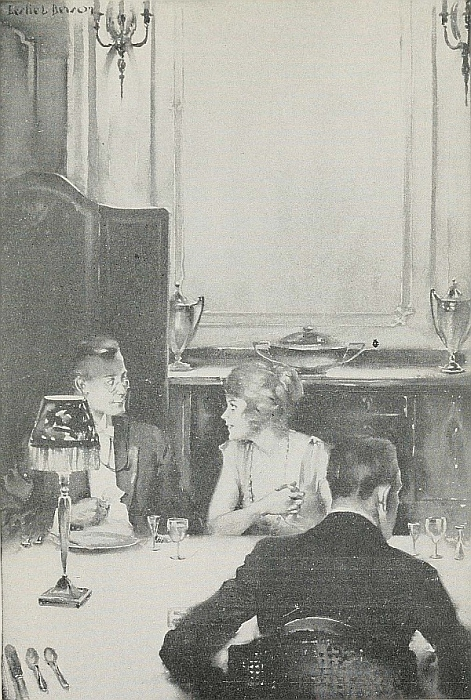
(page 234)
“'A-ah, mystery!'” said Mrs. Revis, clasping her beautiful hands and gazing upward. “'I adore mystery!'”
“Lay off the stuff, sur-r,” he said ponderously. “An' ye wid the fine wife you have!” He shook his head a number [Pg 237] of times, glanced with sad resignation at my wife as she led me in, and departed, still shaking his head. I can't tell you how all that head-shaking annoyed me.
I started awake in the middle of the night. It was unbelievably excellent.
“Jane!” I said to my wife, “Jane, it's wonderful. It's come to me!”
But Jane did not answer.
“Jane,” I said happily, “you see, the Chinaman's head—”
“If you say Chinaman to me again,” returned my wife, sleepily, “I'll leave you. There are six pieces missing from that laundry.”
And she never knew.
| 1. Adventures of an Amateur Detective | 11. Conducting a Meeting |
| 2. Going on My Travels | 12. Making an Excuse |
| 3. Reading Aloud at Home | 13. Cooking Experiences |
| 4. A Mysterious Package | 14. Housecleaning |
| 5. The Lost Dog | 15. Buying a Dress |
| 6. My Pet Snakes | 16. Speaking a Foreign Language |
| 7. Writing a Composition | 17. My First Speech |
| 8. Graduation | 18. Little Brother |
| 9. Being an Editor | 19. Being Careful |
| 10. Doing an Errand | 20. My Letter Writing |
[Pg 238]
Found your story on some actual interest that you have. Write in the first person, as realistically as possible. Do not over-use exaggeration, but make your story unusual. You will gain the best effects if you base your humor on natural misunderstanding, and on remarks or events that are incongruous. Confine your story to two or three principal incidents, and bring the narrative to a natural conclusion that will give the effect of climax.
[Pg 239]
By ROBERTA WAYNE
An American short story writer and contributor to magazines.
A realistic story differs from a romantic story in that it concerns the events of ordinary life. Its characters are the people whom we know,—those who move about us in daily life. Its plot centers around everyday events. Naturally a realistic story depends largely upon character interest.
Getting Up To Date concerns such a simple thing as storekeeping, and the methods of attracting customers. Job Lansing, in the story, represents the type of person who clings to old ways. His niece, Ellie, represents the spirit of youth and progress,—the spirit of adaptability.
The simplicity and familiarity of such a story is just as interesting as is wild adventure in the most vivid romance.
Old Job Lansing stood, hatchet in hand, and stared down into the big packing-case that he had just opened.
“El-lee,” he called, “come here quick.” And as footsteps were heard and the shutting of a door, he continued: “They've sent the wrong stuff. This isn't what we ordered!”
The girl buried her head in the box from which she brought forth bolt after bolt of dress goods, voiles with gay colors, dainty organdies, and ginghams in pretty checks and plaids. As she rose, her eyes glowed and instinctively she straightened her shoulders. “Yes, Uncle, it is what we ordered. I sent for this!”
“You did!” The old man trembled with rage.
“But, Uncle, they're so pretty and I think—”
“You can think and think as much as you please, but those goods will never sell. They'll just lie on the shelves. You may think they're pretty, but an Injin won't buy a yard of 'em, and it's Injins we're trading with.”
“But there's no reason why the squaws shouldn't buy[Pg 240] pretty dresses instead of ugly calico. There's more money in this, and it's a pleasure to sell such dainty stuff. Besides, we can sell to the white people. There's Mrs. Matthews—”
“I've heard all your arguments before, and I tell you, you'll never sell it.”
Old Job had never married. For many years he had lived alone in the rooms behind his store, and he had become self-centered and a bit fussy and intolerant. If he had realized how much his life was to be upset, he could never have brought himself to offer his widowed sister and her family a home; for he valued his quiet life, and, above all, he wanted to do things in his own way.
He was never at ease with the two nephews, who soon left to make their own way in the world.
But with Ellie it was different. Her affectionate ways won Job's heart. They were chums, often going together on long horseback rides to distant peaks that looked inviting. And as the girl developed, he loved to have her with him as he worked and he was delighted at her interest in everything in the little store. She even learned the prices of the goods and helped him.
Old Job had kept this store at the “summit” for thirty years, and he was sure he knew every side of the business. As long as he kept a good supply of beans and flour, that was all that was necessary. A good-sized Indian village lay down the creek about a mile, and it was from this settlement that Job Lansing got most of his trade.
The old man had come to the age when he lived mostly in the past. He liked to talk of the “glorious” days. “Things were lively around here then,” he used to say. “Why, for every dollar's worth I sell now, then I used to sell fifty dollars. They were the good old times!”
“But why?” questioned Ellie, bringing him sharply back to the present. “There are a lot more people here now and we should do better.” Then, with a gesture of impatience, “Uncle, there's no sense in it. We've got to get up to date. I don't blame Joe and Glenn for leaving. There's no future here.”
[Pg 241]
“Shucks!” said Job Lansing. “You don't know what you're talking about.”
But Ellie always managed to have the last word. “I'm going to do something! See if I don't!”
And she had done it!
For weeks, now, Job Lansing had been quite pleased with her. She had never been so reasonable. She had taken a great notion to cleaning up the store. Not that he approved of her moving the goods around; but still, it was a woman's way to be everlastingly fussing about with a dust-cloth. You couldn't change them.
He had decided that this new interest on Ellie's part came from the feeling of responsibility he had put upon her two months before when he had been called to Monmouth. His old mining partner was ill and wanted to see him. Before he went he gave his niece a few directions and told her how to make up the order for goods, that had to go out the next day. He rode away feeling that the business would be all right in her hands.
Now, as he stormed around the store, he realized why she had taken such an interest in the arrangement of the shelf space; why a gap had been left in a prominent place. It was for this silly stuff that wouldn't sell! He wanted to send it back, but, as it had been ordered, he would have to pay express on it both ways.
Ellie stood her ground, a determined expression in her face. She unpacked the heavy box and put the gay organdies and voiles in the places she had arranged for them. One piece, of a delicate gray with small, bright, magenta flowers in it, she left on the counter; and to the astonishment of the old man, she let a length of the dainty goods fall in graceful folds over a box placed beneath it.
This was one of the notions she had brought back from Phœnix, where she had gone on a spring shopping trip with Mrs. Matthews, wife of the superintendent at the Golden Glow mine. How she had enjoyed that day! Her eager eyes noted every up-to-date detail in the big stores where they shopped; but to her surprise, Mrs. Matthews had bought only[Pg 242] such things as they might easily have carried in her uncle's store—plain, but pretty, ginghams for the Matthews' children, a light-blue organdie for herself, a box of writing-paper, and a string of beads for Julie's birthday.
Ellie's pretty little head was at once filled with ideas that coaxed for a chance to become solid facts. Her uncle's trip to Monmouth gave her an opportunity, and, after weeks of waiting, the boxes had been delivered and the storm had broken.
When they closed the store for the night, Ellie was tired. She was not so sure of success as she had been. But, at least, she had made an effort to improve things. How she longed for her mother, absent on a two months' visit to one of her sons!
With the morning came new courage, even exhilaration, for unconsciously she was finding joy in the struggle; not as a diversion in the monotony and loneliness of her life, for Ellie did not know what monotony meant, and she felt herself rich in friends. She had two.
One was Louise Prescott at Skyboro, only ten miles away, daughter of a wealthy ranchman. They often visited each other, for each had her own pony and was free to come and go as she wished. And the other was Juanita Mercy, down the cañon in the opposite direction. Now, for the last two years, Louise had been away at school. But she was always thrilled at getting back to the mountains. She had returned the day before, and Ellie knew that early the next morning she would be loping her pony over the steep road that led to the little mountain store.
And it was when Ellie was standing guard over her new goods, fearing that her uncle might, in a moment of anger, order them to be sent back, that Louise rode up, and, throwing her reins forward over her pony's neck, leaped from the saddle and rushed into the store.
“Oh, Ellie! it's good to get back, and I have four months of vacation. Won't we have a grand time!—Why, you've been fixing up the store, Mr. Lansing; and how lovely it looks! I must have Mama come up and see these pretty summer[Pg 243] things.” Turning again to Ellie, she threw her arms around her and whispered: “Come on out and sit on our dear old bluff. I just can't get enough of the hills to-day, and I want to talk and talk and talk.”
But it was not Louise who did the talking this time. While her eyes were feasting on the gorgeous scenery before her, the dim trails that led up and up the steep mountain on the other side of the creek, Ellie unburdened herself of her troubles. She told how she had ordered the goods on her own responsibility.
“Why, Ellie, how could you do it? I'd never have had the courage!”
“But I just had to, Lou. I don't want to leave the mountains, and I don't want to be poor all our lives. Uncle's getting old and set in his ways, and he can't seem to see that things are going behind all the time. Dear old uncle! He's been so good to us! And now I'd like to help him. I'm just trying to save him from himself.”
“And you will. I think it's fine!”
“Yes, it's fine, if—if—if!” exploded Ellie, who was not quite so optimistic as she had been in the morning. Several Indian women had come into the store, and while they stared in astonishment at the pretty goods displayed on the counter, they had gone out without buying anything.
Job Lansing had shrugged his shoulders, and while not a word had escaped him, his manner had said emphatically, “I told you so!”
“But where is there any if, I'd like to know. You just have to sell all that stuff as fast as you can, and that will show him.”
“But if the squaws won't buy? They didn't seem wild about it this morning.”
“Well, you're not dependent on the squaws, I should hope. I'm going to tell Mother, and she'll come up, if I say so, and buy a lot of dresses.”
“Now, Lou Prescott, don't you dare! That will spoil everything. Uncle would say it was charity. You see we are trading with squaws. Don't laugh, Louise! I must make[Pg 244] good! I just must! But how am I going to make those squaws buy what I want them to buy? If Uncle would only plan and work with me, I know we could make a success of it. But he won't!”
“You should have invested in beads, reds and blues and greens, all colors, bright as you could get them.”
“That's a good idea, Lou. I'll do it. But they can't buy a string of beads without buying a dress to match it! I'll do it, Lou Prescott!”
An hour later, when they returned to the store, Job Lansing looked up from the counter, his face wrathful. He had just measured off six yards of pink organdie and was doing it up in a package for Joe Hoan's daughter. Job Lansing hated to give in. He had tried to get Lillie Hoan to wait until Ellie returned, but she had insisted, and so the old man was the first to sell a piece of the pretty goods. He did it ungraciously.
Ellie and Louise stood still and stared at each other. Then Ellie whispered: “It's a good omen. I'm going to succeed.”
And that night a second order was dispatched. Job Lansing made no objection, but he did not ask her what she had sent for.
The next two days were busy ones for Ellie. Her uncle fretted to himself, for not once did she come inside the store to help him. Louise came each day, and the two girls spent their time in Ellie's room, where the rattling sound of the old sewing-machine could be heard.
But on the third day Ellie was up early and was already dusting out the store when her uncle entered. It was Saturday, always a busy day. This pleased Job Lansing. “That girl has a pile of good sense along with this other nonsense,” he said to himself as he watched her.
About nine o'clock Louise arrived and entered quickly, throwing down a square package. “Here they are, Ell. He brought them last night. I came right over with them, but I have to hurry back. They are beauties, all right.”
The girls disappeared once more into the bedroom, where they could be heard laughing and exclaiming.
[Pg 245]
When Ellie emerged no one would have known her, for the little cowboy girl was dressed in a dainty voile with pink blossoms in it, and around her neck was a long string of pink beads that matched perfectly the flowers in her gown.
Job Lansing started as if he were going to speak, then suppressed the words and went on with his work. Ellie tried to act as if everything was the same as usual. Selecting some blues and pinks and greens among her ginghams and voiles, she draped them over boxes and tubs. Then across each piece she laid a string of beads that matched or contrasted well with the colors in the material, and waited for results.
And the result was that when Joe Phinney's wife, the squaw who helped them in the kitchen, came in with the intention of buying beans and flour, she took a long look, first at Ellie, then at the exhibit, and without a word turned and left. She did not hurry, but she walked straight back to the Indian village.
“Guess she was frightened,” commented Job.
Ellie was disappointed. She had depended on old Mary, and it was through her that she hoped to induce the other squaws to come. Some of them had never been in the store. They were shy, and left their men to do the buying.
Their sole visitor for the next hour was Phil Jennings, the stage-driver, who stopped in for the mail. “Well, well, what's all this about! Are you trying to outshine the stores in town, Miss Ellie? And how pretty you look this morning.”
“Yes, Mr. Jennings. We're going to have a fine store here by this time next year. Uncle's thinking of enlarging it and putting in an up-to-date stock. On your way down, you might pass the word along that our summer goods are in and that I have some beautiful pieces here for dresses, just as good as can be bought in Tucson or Phœnix. It's easier than sending away to Chicago.”
“Well, I sure will, Miss Ellie. Mother was growling the other day because she would have to go to Monmouth to buy ginghams for the kids.”
“Please tell her that next week I'm expecting some ready-made[Pg 246] clothes for children, and it will pay her to come up and see them.”
“I'll tell her,” said Phil Jennings, as he cracked his whip and started off. All he could talk about that day was “that clever little girl of Job Lansing's” who was going to make a real store at the summit and keep the mountain trade where it belonged.
“Where are you, Uncle?” called Ellie, as she came back into the store.
“I'm hiding!” said Job. “Ashamed to be seen. Enlarge the store! It's more than likely I'll have to mortgage it. And you drumming up trade that way. It isn't ladylike.”
“Well, it simply has to be done. He'll give us some good advertising down the road to-day. I wish there was some one I could send down the creek. I wonder if you couldn't ride down, yourself.”
But Job Lansing pretended not to hear.
Ellie did not feel as brave as her words indicated. She knew that their trade from day to day came from the Indian settlement, and looked disconsolately out of the window. But in a moment she gave an exclamation of joy and found herself shaking her uncle's arm. “Here they come, Uncle, dear! Here they come!”
“Who? What are you talking about?”
“The squaws! They're here in full force. Mary, the old darling, she's brought the whole tribe, I do believe!”
Ellie busied herself at the counter, trying to appear at ease when the Indian women filed into the store and stood gazing about them. She was impatient to know if they were pleased, but their impassive faces told nothing. She would just have to let them take their time. So she pretended not to notice them as they drew near to the counter, fingering the beads and dress-goods.
“How do you like my new dress, Mary?” Ellie turned on them suddenly. The squaws approached slowly and began to feel the cloth. Mary took hold of the beads and said, “Uh!” Then in a moment, “How much?”
Ellie's impulse was to throw her arms around Mary and[Pg 247] hug her, but she was very dignified and grown-up as she answered calmly: “We don't sell the beads. They are not for sale!”
“Well of all things! Not for sale!” muttered Job, as he slipped through the rear door into the store-room and slammed it vehemently.
“They are not for sale, but we give a string of them to any one who buys a dress.”
Five of the squaws bought dresses, and each time a long string of beads was passed over.
In the afternoon, Ellie's watchful eyes caught the first glimpse of them as the same squaws, accompanied by others, rounded the curve in the path and came single file up the steep short-cut to the store.
Ellie counted her profits that night and was satisfied. Still, there were some twenty or twenty-five squaws in the settlement who had never been inside the store, and she made up her mind that they must be persuaded to come.
The next week a large packing-case arrived. Ellie was the one to wield the hatchet this time, for her uncle was still in an ungracious mood. The box was larger than she expected, but this was explained when it was opened. Two large dolls were inside—one with curly short hair and boyish face, and the other a real “girly” doll. A letter explained that with an order for children's ready-to-wear clothes it might be an advantage to have dolls on which to display them.
“I wonder!” said Ellie, to herself. “Look here, Uncle,” she called, as the old man came into the store; “see what they've sent me! Look at these pink and white dolls, when we're trading with Indians. Isn't it a joke?”
“A coat of brown paint is what you want,” said old Job, laughing a cynical laugh.
“You've hit it, Uncle! You certainly have dandy ideas! I shouldn't have thought of it.”
Then in a moment he heard her at the telephone giving a number. It was the Prescott ranch. “Hello, is that you, Louise? Can you come up to-day? I need you. All right. And Lou, bring your oil paints. It's very important.”
[Pg 248]
It was with much giggling and chattering that the two girls began their transformation of the pink-and-white dolls. Their bisque faces were given a thin coating of brown paint. The old man watched them from across the store and almost gasped as he saw them rip off the wigs. Then they retreated to the kitchen. He was so curious that he made several trips to the door and peeked through a crack.
What he saw was the two girls bending over a pot on the stove, which they were stirring furiously. Once in a while Ellie raised the stick with something black on the end, and finally the two dripping dolls' wigs were hung over the stove to dry. Of course the boiling had taken all the curl out of the hair, but that was what they wanted, for the two dolls were now brown-faced, dark-haired figures. They were arrayed in the ready-to-wear clothes, and the girls stood back to survey them.
“They look fine, Ellie! That is, yours does; but my girl here doesn't look quite right.”
Job Lansing was pretending to be busy. He turned and at once broke into a roar of laughter. “Well, when did you ever see a blue-eyed Injin?”
“Oh that's it, Ellie. Your doll had brown eyes, but mine are blue. What shall we do? It looks silly this way.”
“Paint 'em black!” chuckled the old man.
“Of course!” said Ellie. Then in a tone loud enough to carry across the store, “Isn't Uncle quick to notice things?” Ellie meant him to hear what she said, but she was none the less sincere, for she did have a high regard for her uncle's ability. She had said to Louise often in the last few days, “When I get Uncle started, there'll be no stopping him.” Still, the remark had been sent forth with a purpose.
Job Lansing gave the girl a quick glance. She was daubing brown paint on the girl-doll's eyes. He was pleased by her praise and no less by her readiness to take his advice.
The little dresses and suits sold quickly. Mrs. Matthews bought a supply, and told others about them.
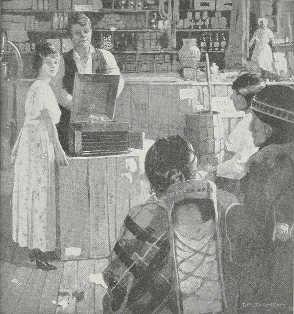
(page 250)
“'Isn't this great! They're here, every one of them! You're awfully good to let us use the phonograph'.”
But they were mostly white women who purchased these things; and while Ellie was glad to get their trade, she still had the fixed idea that she must get the squaws in the habit of coming in to do their own shopping.
[Pg 249]
The quick sale of the new goods made a deep impression on Job Lansing, and he seemed especially pleased at the sales made to the white women at the mines. One morning he approached his niece with the suggestion that she had better keep her eyes open and find out what the women around the mountains needed. Ellie had been doing this for weeks. She had a big list made out already, but she saw no need of telling her uncle. She looked up, her face beaming.
“That's a capital idea, Uncle. I think we might just as well sell them all their supplies.” Ellie was exultant. She knew her troubles were over, that her plan was working out.
Still, she wasn't quite satisfied. A few of the shy squaws had been induced to come up and look at things from the outside, peering into the shop through the door and windows. But there were probably twenty who had not been in the store. If only she could persuade them to come once, there would be no more trouble.
The final stroke which brought the Indians, both men and women, into the store was a bit of good luck. Ellie called it a miracle.
It was after a very heavy rain-storm in the mountains that Jennings, the stage-driver, shouted to her one evening: “Do you mind if I leave a big box here for young Creighton over at the Scotia mine? The road's all washed out by Camp 3, and I don't dare take this any farther. It's one of those phonygrafts that makes music, you know. And say, Miss Ellie, will you telephone him that it's here?”
“Yes,” answered Ellie in an absent-minded way. “I'll telephone him. She was still half dreaming as she heard young Creighton's voice at the other end of the line, but at once she became eager and alert. “I want to ask a favor of you, Mr. Creighton? Your phonograph is here. They can't take it up on account of the washout. May I open it and play on it. I'll make sure that it is boxed up again carefully.”
“Why, certainly, Miss Ellie! I'll be glad to have you[Pg 250] enjoy the music. The records and everything are in the box. Perhaps I'll come over and hear it myself.”
The next evening, about eight o'clock, Will Creighton arrived on horseback, and found such a throng of Indians close about the door that he had to go in by the kitchen. He heard the strains of the phonograph music and had no need to ask the cause of the excitement. All the squaws were inside the store. Occasionally one would extend a hand and touch the case or peer into the dark box, trying to discover where the sound came from.
Creighton approached Ellie, who was changing a needle. She turned her flushed face to him with a smile. “Isn't this great! They're here, every one of them! You're awfully good to let us use the phonograph. I've ordered one like it for ourselves. These blessed squaws do enjoy music so much!”
Job Lansing was standing near the machine, enjoying it as much as any one. A new record had been put on, the needle adjusted, and the music issued forth from that mysterious box. It was one of those college songs, a “laughing” piece. And soon old Job was doubled over, with his enjoyment of it. The squaws drew closer together. At first they scowled, for they thought that the queer creature in the polished case was laughing at them. Then one began to giggle, and soon another and finally the store was filled with hysterical merriment. Sometimes it would stop for a moment, and then, as the sounds from the phonograph could be heard, it would break forth again.
Ellie stood for hours, playing every record four or five times, and when she finally shut up the box, as a sign that the concert was over, the taciturn Indians filed silently out of the store and went home without a word.
But the girl knew that they would return. She had won!
Another triumph was hers when the springtime came again. One day her uncle approached her and hesitatingly said, “Ellie, we're going to be awfully cramped when our new summer goods arrive. Guess I'd better have Hoan ride over and give me an estimate on an addition to the store.”
[Pg 251]
Ellie suppressed the desire to cry out, “I told you so!” Instead she said very calmly: “Why, that's a fine idea, Uncle. Business is picking up, and it would be nice to have more room. I'm glad you thought of it.”
| 1. Re-Arranging the House | 11. Our Piazza |
| 2. Fixing Up the Office | 12. The Flower Garden |
| 3. Increasing Sales | 13. Selling Hats |
| 4. The New Clerk | 14. Building Up Trade |
| 5. The Old Store Made New | 15. Father's Desk |
| 6. Our Dooryard | 16. Making Study Easy |
| 7. A Back-Yard Garden | 17. Making a Happy Kitchen |
| 8. Making Over the Library | 18. A Successful Charity Fair |
| 9. Father's Stable | 19. The Window Dresser |
| 10. Decorating the School Room | 20. A Good Advertisement |
[Pg 252]
Write about a subject with which you are familiar, and with which your readers are familiar. Make your principal character a young person. Make your story concern the contrast of two methods of accomplishment, one of which will represent the old and least successful method; the other, the new and more successful. Write a series of three or four briefly told incidents that will lead to a climax. Make free use of conversation. Notice that the author of Getting Up to Date has left out much that might have been said, and has thereby made the story crisp and emphatic. Make your own story condensed and to the point. Pay particular attention to writing a strong ending.
[Pg 253]
By JOSEPH B. AMES
(1878-). An American engineer and author. After his graduation from Stevens Institute Mr. Ames at first devoted himself entirely to engineering. He has been prominent in promoting the work of the Boy Scouts. Among his books are the following: The Mystery of Ram Island; Curly of the Circle Bar; Curly and the Aztec Gold; Pete the Cowpuncher; Under Boy Scout Colors; Shoe-Bar Stratton; The Emerald Buddha.
Realism and romance may be combined in a story of school life as well as in a story of any other kind. The Lion and the Mouse tells, in part, of ordinary, everyday events, and in part, of events that are distinctly out of the ordinary. The characters are the characters of school life,—two boys of entirely different natures but, after all, one at heart,—and subordinate characters who belong in the realm of real life. Many of the events of the story are commonplace enough. On this basis of reality there has been founded a story of quick event, a story of the unusual, entirely probable, centering around character and character development.
Big Bill Hedges scowled out of the locker-room window and groaned softly. There was something about that wide, unbroken sweep of snow which affected him disagreeably. If only it had been crisscrossed by footprints, or the tracks of snow-shoes or toboggans, he wouldn't have minded it nearly so much. But there it lay, flat, white, untrodden, drifting over low walls and turning the clumps of shrubbery into shapeless mounds. And of a sudden he found himself hating it almost as much as the dead silence of the endless, empty rooms about him. For it was the fourth day of the Christmas vacation, and, save the kitchen staff, there were only two other human beings in this whole great barracks of a place.
“And neither of them is really human,” grunted Hedges, turning restlessly from the window.
With a disgusted snort he recalled the behavior of those two, whom so far he had met only at meal-time. Mr. Wilson,[Pg 254] the tutor left in charge of the school, consumed his food in a preoccupied sort of daze, rousing himself at rare intervals to make some plainly perfunctory remark. He was writing some article or other for the magazines, and it was all too evident that the subject filled his waking hours. And “Plug” Seabury, with his everlasting book propped up against a tumbler, was even worse. But then Hedges had never expected anything from him.
Crossing to his locker, the boy pulled out a heavy sweater, stared at it dubiously for a moment, and then let it dangle from his relaxed fingers. For once the thought of violent physical exertion in the open failed to arouse the least enthusiasm. Ever since the departure of the fellows, he had skeed and snow-shoed and tramped through the drifts—alone; and now the monotony was getting on his nerves. He flung the sweater back, and, slamming the locker door, strolled aimlessly out of the room.
One peep into the cold, lofty, empty “gym” effectually quelled his half-formed notion of putting in an hour or two on the parallel bars. “I'm lonesome!” he growled; “just—plumb—lonesome! It's the first time I've ever wished I didn't live in Arizona.”
But the thought of home and Christmas cheer and all the other vanished holiday delights was not one to dwell on now; he tried instead to appreciate how absurd it would have been to spend eight of his twelve holidays on the train.
A little further dawdling ended in his turning toward the library. He was not in the least fond of reading. Life ordinarily, with its constant succession of outdoor and indoor sports and games, was much too full to think of wasting time with a book unless one had to. But the thought occurred to him that to-day it might be a shade better than doing absolutely nothing.
Opening the door of the long, low-ceiled, book-lined room, which he had expected to find as desolately empty as the rest, he paused in surprise. On the brick hearth a log fire burned cheerfully, and curled up in an easy chair close to the hearth, was the slight figure of Paul Seabury.
[Pg 255]
“Hello!” said Hedges, gruffly, when he had recovered from his surprise. “You've sure made yourself comfortable.”
Seabury gave a start and raised his head. For a moment his look was veiled, abstracted, as if his mind still lingered on the book lying open in his lap. Then recognition slowly dawned, and a faint flush crept into his face.
“The—the wood was here, and I—I didn't think there'd be any harm in lighting it,” he said, thrusting back a straggling lock of brown hair.
“I don't s'pose there is,” returned Hedges, shortly. Unconsciously, he was a little annoyed that Seabury should seem so comfortable and content. “I thought you were upstairs.”
He dragged a chair to the other side of the hearth and plumped down in it. “What you reading?” he asked.
Seabury's eyes brightened. “Treasure Island,” he answered eagerly. “It's awfully exciting. I've just got to the place where—”
“Never read it,” interrupted the big fellow, indifferently. Lounging back against the leather cushions, he surveyed the slim, brown-eyed, rather pale-faced boy with a sort of contemptuous curiosity. “Do you read all the time?” he asked.
Again the blood crept up into Seabury's thin face and his lids drooped. “Why, no—not all the time,” he answered slowly. “But—but just now there's nothing else to do.”
Hedges grunted. “Nothing else to do! Gee-whiz! Don't you ever feel like going for a tramp or something? I s'pose you can't snow-shoe, or skee, but I shouldn't think you'd want to stay cooped up in the house all the time.”
A faint, nervous smile curved the boy's sensitive lips. “Oh, I can skee and snow-shoe all right, but—” He paused, noticing the incredulous expression which Hedges was at no pains to hide. “Everybody does, where I live in Canada,” he explained, “often it's the only way to get about.”
“Oh, I see.” Hedges' tone was no longer curt, and a sudden look of interest had flashed into his eyes. “But don't you like it? Doesn't this snow make you want to go out and try some stunts?”
Seabury glanced sidewise through the casement windows[Pg 256] at the sloping, drifted field beyond. “N—no, I can't say it does,” he confessed hesitatingly; “it's such a beastly, rotten day.”
His interest in Plug's unexpected accomplishments made Hedges forbear to comment scornfully on such weakness.
“Rotten!” he repeated. “Why, it's not bad at all. It's stopped snowing.”
“I know; but it looks as if it would start in again any minute.”
“Shucks!” sniffed Hedges. “A little snow won't hurt you. Come ahead out and let's see what you can do.”
Seabury hesitated, glancing with a shiver at the cold, white field outside and back to the cheerful fire. He did not feel at all inclined to leave his comfortable chair and this enthralling book. On the other hand, he was curiously unwilling to merit Bill Hedges' disapproval. From the first he had regarded this big, strong, dominating fellow with a secret admiration and shy liking which held in it no touch of envy or desire for emulation. It was the sort of admiration he felt for certain heroes in his favorite books. When Hedges made some spectacular play on the gridiron or pulled off an especially thrilling stunt on the hockey-rink, Seabury, watching inconspicuously from the side-lines, got all hot and cold and breathlessly excited. But he was quite content that Hedges should be doing it and not himself. Sometimes, to be sure, he wondered what it would be like to have such a person for a friend. But until this moment Hedges had scarcely seemed aware of his existence, and Seabury was much too shy to make advances, even when the common misfortune of too-distant homes had thrown them together in the isolation of the empty school.
“I—I haven't any skees,” he said at length.
Hedges sprang briskly to his feet. “That's nothing. I'll fix you up. We can borrow Marston's. Come ahead.”
Swept along by his enthusiasm, Seabury closed his book and followed him out into the corridor and down to the locker room. Here they got out sweaters, woolen gloves and caps, and Hedges calmly appropriated the absent Marston's skees.
[Pg 257]
Emerging finally into the open, Seabury shivered a little as the keen, searching wind struck him. It came from the northeast, and there was a chill, penetrating quality about it which promised more snow, and that soon. By the time Seabury had adjusted the leather harness to his feet and resumed his gloves, his fingers were blue and he needed no urging to set off at a swift pace.
In saying that he could skee, the boy had not exaggerated. He was, in fact, so perfectly at home upon the long, smooth, curved-up strips of ash, that he moved with the effortless ease and grace of one scarcely conscious of his means of locomotion. Watching him closely, Hedges' expression of critical appraisement changed swiftly to one of unqualified approval.
“You're not much good on them, are you?” he commented. “I suppose you can jump any old distance and do all sorts of fancy stunts.”
Seabury laughed. He was warm again and beginning to find an unwonted pleasure in the swift, gliding motion and the tingling rush of frosty air against his face.
“Nothing like that at all,” he answered. “I can jump some, of course, but I'm really not much good at anything except just straight-away going.”
“Huh!” grunted Hedges, sceptically. “I'll bet you could run circles around any of the fellows here. Well, what do you say to taking a little tramp. I've knocked around the grounds till I'm sick of them. Let's go up Hogan Hill,” he added, with a burst of inspiration.
Seabury promptly agreed, though inwardly he was not altogether thrilled at the prospect of such a climb. Hogan Hill rose steeply back of the school. A few hay-fields ranged along its lower level, but above them the timber growth was fairly thick, and Paul knew from experience that skeeing on a wooded slope was far from easy.
As it turned out, Hedges had no intention of tackling the steep slope directly. He knew of an old wood-road which led nearly to the summit by more leisurely twists and curves, and it was his idea that they take this as far as it went and then skee down its open, winding length.
[Pg 258]
By the time they were half-way up, Seabury was pretty well blown. It was the first time he had been on skees in nearly a year, and his muscles were soft from general lack of exercise. He made no complaint, however, and presently Hedges himself proposed a rest.
“I wish I could handle the things as easily as you do,” he commented. “I work so almighty hard that I get all in a sweat, while you just glide along as if you were on skates.”
“I may glide, but I haven't any wind left,” confessed Seabury. “It's only practice you know. I've used them ever since I was a little kid, and compared to some of the fellows up home, I'm nowhere. Do you think we ought to go any farther? I felt some snow on my face just then.”
“Oh, sure!” said Hedges, bluffly. “A little snow won't hurt us, anyhow, and we can skee down in no time at all. Let's not go back just yet.”
Presently they started on again, and though Seabury kept silent, he was far from comfortable in his mind. He had had more than one unpleasant experience with sudden winter storms. It seemed to him wiser to turn back at once, but he was afraid of suggesting it again lest Hedges think him a quitter.
A little later, still mounting the narrow, winding trail, they came upon a rough log hut, aged and deserted, with a sagging, half-open door; but the two boys, unwilling to take off their skees, did not stop to investigate it.
Every now and then during the next half mile trifling little gusts of stinging snowflakes whirled down from the leaden sky, beat against their faces, and scurried on. Seabury's feeling of nervous apprehension increased, but Hedges, in his careless, self-confident manner merely laughed and said that the trip home would be all the more interesting for little diversions of that sort.
The words were scarcely spoken when, from the distance, there came a curious, thin wailing of the wind, rising swiftly to a dull, ominous roar. Startled, both boys stopped abruptly, and stared up the slope. And as they did so, something like[Pg 259] a vast, white, opaque curtain surged over the crest of the hill and swept swiftly toward them.
Almost before they could draw a breath it was upon them, a dense, blinding mass of snow, which whirled about them in choking masses and blotted out the landscape in a flash.
“Wough!” gasped Hedges. “Some speed to that! I guess we'd better beat it, kid, while the going's good.”
But even Hedges, with his easy, careless confidence, was swiftly forced to the realization that the going was very far from good even then. It was impossible to see more than a dozen yards ahead of them. As a matter of course, the older fellow took the lead, but he had not gone far before he ran off the track and only saved himself from a spill by grabbing a small tree.
“Have to take it easy,” he commented, recovering his balance. “This storm will let up soon; it can't possibly last long this way.”
Seabury made no answer. Shaking with nervousness, he could not trust himself to speak.
Regaining the trail, Hedges started off again, cautiously enough at first. But a little success seemed to restore his confidence, and he began to use his staff as a brake with less and less frequency. They had gone perhaps a quarter of a mile when a sudden heavier gust of stinging flakes momentarily blinded them both. Seabury instantly put on the brake and almost stopped. When he was able to clear his eyes, Hedges was out of sight. An instant later there came a sudden crash, a startled, muffled cry, and then—silence!
Horrified, Seabury instantly jerked his staff out of the snow and sped forward. At first, he could barely see the tracks of his companion's skees, but presently the storm lightened a trifle and of a sudden he realized what had happened. Hedges had misjudged a sharp curve in the trail and, instead of following it, had plunged off to one side and down a steep declivity thickly grown with trees. At the foot of this little slope Seabury found him lying motionless, a twisted heap, face downward in the snow.
[Pg 260]
Sick with horror, the boy bent over that silent figure. “Bill!” he cried, “what has—”
His voice died in a choking sob, but a moment later his heart leaped as Hedges stirred, tried to rise, and fell back with a stifled groan.
“It's—my ankle,” he mumbled, “I—I've—turned it. See if you can't—”
With shaking fingers, Seabury jerked at the buckles of his skees and stepped out of them. Hedges' left foot was twisted under him, and the front part of his skee was broken off. As Paul freed the other's feet from their encumbering straps, Bill made a second effort to rise, but his face turned quite white and he sank back with a grunt of pain.
“Thunder!” he muttered. “I—I believe it's sprained.”
For a moment or two he sat there, face screwed up, arms gripping his knees. Then, as his head cleared, he looked up at the frightened Seabury, a wry smile twisting the corners of his mouth.
“I'm an awful nut, kid,” he said. “I forgot that curve and was going too fast to pull up. Reckon I deserve that crack on the head and all the rest of it for being so awfully cocky. Looks as if we were in rather a mess, doesn't it?”
Seabury nodded, still unable to trust himself to speak. But Hedges' coolness soothed his jangled nerves, and presently a thought struck him.
“That cabin back there!” he exclaimed. “If we could only manage to get that far—”
He paused and the other nodded. “Good idea,” he agreed promptly. “I'm afraid I can't walk it, but I might be able to crawl.”
“Oh, I didn't mean that. If we only had some way of fastening my skees together, you could lie down on them and I could pull you.”
A gleam of admiration came into the older chap's dark eyes. “You've got your nerve with you, old man,” he said. “Do you know how much I weigh?”
“That doesn't matter,” protested Seabury. “It's all[Pg 261] down hill; it wouldn't be so hard. Besides, we can't stay here or—or we'll freeze.”
“Now you've said something,” agreed Hedges.
And it was true. Already Seabury's teeth were chattering, and even the warmer blooded Hedges could feel the cold penetrating his thick sweater. He tried to think of some other way out of their predicament, but finally agreed to try the plan. His heavy, high shoes were laced with rawhide thongs, which sufficed roughly to bind the two skees together. There was no possibility, however, of pulling them. The only way they could manage was for Hedges to seat himself on the improvised toboggan while Seabury trudged behind and pushed.
It was a toilsome and painful method of progress for them both and often jolted Hedges' ankle, which was already badly swollen, bringing on a constant succession of sharp, keen stabs. Seabury, wading knee-deep in the snow, was soon breathless, and by the time they reached the cabin, he felt utterly done up.
“Couldn't have kept that up much longer,” grunted Hedges, when they were inside the shelter with the door closed against the storm.
His alert gaze traveled swiftly around the bare interior. There was a rough stone chimney at one end, a shuttered window at the back, and that was all. Snow lay piled up on the cold hearth, and here and there made little ridges on the logs where it had filtered through the many cracks and crevices. Without the means of making fire, it was not much better than the out-of-doors, and Hedges' heart sank as he glanced at his companion, leaning exhausted against the wall.
“It's sure to stop pretty soon,” he said presently, with a confidence he did not feel. “When it lets up a little, we might—”
“I don't believe it's going to let up.” Seabury straightened with an odd, unwonted air of decision. “I was caught in a storm like this two years ago and it lasted over two days. We've got to do something, and do it pretty quick.”
Hedges stared at him, amazed at the sudden transformation.[Pg 262] He did not understand that a long-continued nervous strain will sometimes bring about strange reactions.
“You're not thinking of pushing me all the way down the road, are you?” he protested. “I don't believe you could do it.”
“I don't believe I could, either,” agreed the other, frankly. “But I could go down alone and bring back help.”
“Gee-whiz! You—you mean skee down that road? Why, it's over three miles, and you'd miss the trail a dozen times.”
“I shouldn't try the road,” said Seabury, quietly. His face was pale, but there was a determined set to the delicate chin. “If I went straight down the hill back of this cabin, I'd land close to the school, and I don't believe the whole distance is over half a mile.”
Hedges gasped. “You're crazy, man! Why, you'd kill yourself in the first hundred feet trying to skee through those trees.”
“I don't think so. I've done it before—some. Besides, most of the slope is open fields. I noticed that when we started out.”
“But they're steep as the dickens, with stone walls, and—”
Seabury cut short his protests by buttoning his collar tightly about his throat and testing the laces of his shoes. He was afraid to delay lest his resolution should break down.
“I'm going,” he stated stubbornly; “and the sooner I get off, the better.”
And go he did, with a curt farewell which astonished and bewildered his companion who had no means of knowing that it was a manner assumed to hide a desperate fear and nervousness. As the door closed between them, Seabury's lips began to tremble; and his hands shook so that he could scarcely tighten up the straps of his skees.
Back of the cabin, poised at the top of the slope, with the snow whirling around him and the unknown in front, he had one horrible moment of indecision when his heart lay like lead within him and he was on the verge of turning back. But with a tremendous effort he crushed down that almost irresistible impulse. He could not bear the thought of facing[Pg 263] Hedges, an acknowledged coward and a quitter. An instant later a thrust of his staff sent him over the edge, to glide downward through the trees with swiftly increasing momentum.
Strangely enough, he felt somehow that the worst was over. To begin with, he was much too occupied to think of danger, and after he had successfully steered through the first hundred feet or so of woods, a growing confidence in himself helped to bolster up his shrinking spirit. After all, save for the blinding snow, this was no worse than some of the descents he had made of wooded slopes back there at home. If the storm did not increase, he believed that he could make it.
At first he managed, by a skilful use of his staff, to hold himself back a little and keep his speed within a reasonable limit. But just before he left the woods, the necessity for a sudden side-turn to avoid a clump of trees through which he could not pass nearly flung him off his balance. In struggling to recover it, the end of his staff struck against another tree and was torn instantly from his grasp.
His heart leaped, then sank sickeningly, but there was no stopping now. A moment later he flashed out into the open, swerved through a gap in the rough, snow-covered wall, and shot down the steep incline with swiftly increasing speed.
His body tense and bent slightly forward, his straining gaze set unwaveringly ahead, striving to pierce the whirling, beating snow, Seabury felt as if he were flying through the clouds. On a clear day, with the ability to see what lay before him, there would have been a rather delightful exhilaration in that descent. But the perilous uncertainty of it all kept the boy's heart in his throat and chained him in a rigid grip of cold fear.
Long before he expected it, the rounded, snow-covered bulk of a second wall seemed to leap out of the blinding snow-curtain and rush toward him. Almost too late, he jumped, and, soaring through the air, struck the declining slope again a good thirty feet beyond.
In the lightning passage of that second field, he tried to figure where he was coming out and what obstacles he might[Pg 264] encounter, but the effort was fruitless. He knew that the high-road, bordered by a third stone wall, ran along the foot of the hill, with the school grounds on the other side. But the speed at which he was traveling made consecutive thought almost impossible.
Again, with that same appalling swiftness, the final barrier loomed ahead. He leaped, and, at the very take-off, a gasp of horror was jolted from his lips by the sight of a two-horse sledge moving along the road directly in his path!
It was all over in a flash. Helpless to avoid the collision, Seabury nevertheless twisted his body instinctively to the left. He was vaguely conscious of a monstrous looming bulk; of a startled snort which sent a wave of hot breath against his face, and the equally startled yell of a human voice. The next instant he landed badly, his feet shot out from under him, and he fell backward with a stunning crash.
His first conscious observation was of two strange faces bending over him and of hands lifting him from where he lay half buried in the snow. For a moment he was too dazed to speak or even to remember. Then, with a surging rush of immense relief, he realized what had happened, and gaining speech, he poured out a hurried but fairly coherent account of the situation.
His rescuers proved to be woodsmen, perfectly familiar with the Hogan Hill trail and the old log-cabin. Seabury's skees were taken off and he was helped into the sledge and driven to the near-by school. Stiff and sore, but otherwise unhurt, he wanted to go with them, but his request was firmly refused; and pausing only long enough to get some rugs and a heavy coat, the pair set off. Little more than two hours later they returned with the injured Hedges, who was carried at once to the infirmary to be treated for exposure and a badly sprained ankle.
His rugged constitution responded readily to the former, but the ankle proved more stubborn, and he was ordered by the doctor not to attempt even to hobble around on it for at least a week. As a result, Christmas dinner had to be eaten in bed. But somehow Hedges did not mind that very much for Paul Seabury shared it, sitting on the other side of a folding table drawn up beside the couch.
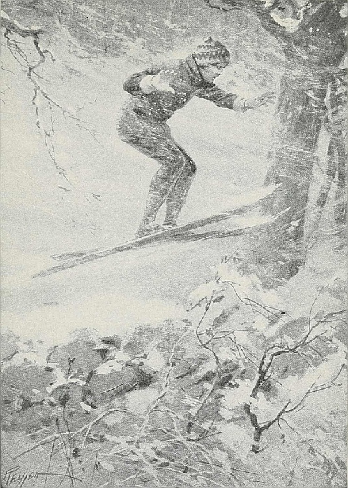
(page 264)
“At the very take-off, a gasp of horror was jolted from his lips.”
[Pg 265]
Having consumed everything in sight and reached that state of repletion without which no Christmas dinner may be considered really perfect, the two boys relapsed for a space into a comfortable, friendly sort of silence.
“Not much on skees, are you?” commented Hedges, presently, glancing quizzically at his companion.
Seabury flushed a little. “I wish you wouldn't,” he protested. “If you had any idea how scared I was, and—and—Why, the whole thing was just pure luck.”
Hedges snorted. “Bosh! You go tell that to your grandmother. There's one thing,” he added; “as soon as I'm around again, you've got to come out and give me some points. I thought I was fairly decent on skees, but I guess after all I'm pretty punk.”
“I'll show you anything I can, of course,” agreed Seabury, readily. He paused an instant and then went on hesitatingly: “I—I'm going to do a lot more of that sort of thing from now on. It—it was simply disgusting the way I got winded so soon and all tired out.”
“Sure,” nodded Hedges, promptly. “That's what I've always said. You ought to take more exercise and not mope around by yourself so much. But we'll fix that up all right from now on.” He paused. “Aren't you going to read some more in 'Treasure Island'?” he asked expectantly. “That's some book, believe me! What with you and that and everything, I'm not going to mind being laid up at all.”
Seabury made no comment, but as he reached for the book and found their place, the corners of his mouth curved with the beginnings of a contented, happy smile.
[Pg 266]
| 1. A Summer Adventure | 11. The Fire in School |
| 2. At Easter Time | 12. An Unexpected Hero |
| 3. The Swimming Match | 13. Tony's Brother |
| 4. A Cross Country Adventure | 14. Skating on the River |
| 5. The Lost Books | 15. The Bicycle Meet |
| 6. The School Bully | 16. At the Sea Shore |
| 7. The Hiding Place | 17. The Trip to the Woods |
| 8. An Excursion | 18. The Surprise of the Day |
| 9. The Little Freshman | 19. The Best Batter |
| 10. Our Election Day | 20. How We Found a Captain |
Write a story that will be closely connected with school life. Use the ordinary characters that are to be found in your school, but use typical characters that will sum up well-recognized characteristics. Base your story upon any sharp contrast in characters. Begin your story by telling of everyday events, but make those events lead quickly to events that are out of the ordinary. In like manner begin with familiar surroundings and then lead your readers into surroundings that will be less familiar and that will be an appropriate setting for unusual action. Make the climax of your story powerful by using suspense. Indicate that your hero is likely to be overcome. Make his final success depend upon his resolution or good spirit,—upon his character. Use much conversation. Omit everything that will not contribute to the effect of the climax.
[Pg 267]
THE CRITICAL ESSAY
By HENRY SEIDEL CANBY
(1878). Editor of The Literary Review; Assistant Editor of The Yale Review, and Assistant Professor of English in the Sheffield Scientific School. He is author and co-author of many books on English, among which are: The Short Story; Facts, Thought and Imagination; and Good English.
The critical essay comments on a fault,—but it does no more: it makes no searching analysis and it points to no specific remedy.
Coddling in Education is a critical essay. It points at what its author believes is a serious fault in American education. Like all critical essays it aims at reform, but it merely suggests the means of reform.
Many of the editorial articles in newspapers are examples of the critical essay.
American minds have been coddled in school and college for at least a generation. There are two kinds of mental coddling. The first belongs to the public schools, and is one of the defects of our educational system that we abuse privately and largely keep out of print. It is democratic coddling. I mean, of course, the failure to hold up standards, the willingness to let youth wobble upward, knowing little and that inaccurately, passing nothing well, graduating with an education that hits and misses like an old type-writer with a torn ribbon. America is full of “sloppy thinking,” of inaccuracy, of half-baked misinformation, of sentimentalism, especially sentimentalism, as a result of coddling by schools that cater to an easy-going democracy. Only fifty-six per cent. of a group of girls, graduates of the public schools, whose records I once examined, could do simple addition, only twenty-nine per cent. simple multiplication correctly; a deplorable percentage had a very inaccurate knowledge of elementary American geography.
[Pg 268]
A dozen causes are responsible for this condition, and among them, I suspect, one, which if not major, at least deserves careful pondering. The teacher and the taught have somehow drifted apart. His function in the large has been to teach an ideal, a tradition. He is content, he has to be content, with partial results. It is not for life as it is, it is for what life ought to be, that he is preparing even in arithmetic; he has allowed the faint unreality of a priestcraft to numb him. In the mind of the student a dim conception has entered, that this education—all education—is a garment merely, to be doffed for the struggle with realities. The will is dulled. Interest slackens.
But it is in aristocratic coddling that the effects of our educational attitude gleam out to the least observant understanding. This is the coddling of the preparatory schools and the colleges, and it is more serious for it is a defect that cannot be explained away by the hundred difficulties that beset good teaching in a public-school system, nation-wide, and conducted for the young of every race in the American menagerie. The teaching in the best American preparatory schools and colleges is as careful and as conscientious as any in the world. That one gladly asserts. Indeed, an American boy in a good boarding-school is handled like a rare microbe in a research laboratory. He is ticketed; every instant of his time is planned and scrutinized; he is dieted with brain food, predigested, and weighed before application. I sometimes wonder if a moron could not be made into an Abraham Lincoln by such a system—if the system were sound.
It is not sound. The boys and girls, especially the boys, are coddled for entrance examinations, coddled through freshman year, coddled oftentimes for graduation. And they too frequently go out into the world fireproof against anything but intellectual coddling. Such men and women can read only writing especially prepared for brains that will take only selected ideas, simply put. They can think only on simple lines, not too far extended. They can live happily only in a life where ideas never exceed the college sixty per[Pg 269] cent. of complexity, and where no intellectual or esthetic experience lies too far outside the range of their curriculum. A world where one reads the news and skips the editorials; goes to musical comedies, but omits the plays; looks at illustrated magazines, but seldom at books; talks business, sports, and politics, but never economics, social welfare, and statesmanship—that is the world for which we coddle the best of our youth. Many indeed escape the evil effects by their own innate originality; more bear the marks to the grave.
The process is simple, and one can see it in the English public school (where it is being attacked vivaciously) quite as commonly as here. You take your boy out of his family and his world. You isolate him except for companionship with other nursery transplantings and teachers themselves isolated. And then you feed him, nay, you cram him, with good traditional education, filling up the odd hours with the excellent, but negative, passion of sport. Then you subject him to a special cramming and send him to college, where sometimes he breaks through the net of convention woven about him, and sees the real world as it should appear to the student before he becomes part of it; but more frequently wraps himself deep and more deeply in conventional opinion, conventional practice, until, the limbs of his intellectual being bound tightly, he stumbles into the outer world.
And there, in the swirl and the vivid practicalities of American life, is the net loosened? I think not. I think rather that the youth learns to swim clumsily despite his encumbrances of lethargic thinking and tangled idealism. But if they are cut? If he goes on the sharp rocks of experience, finds that hardness, shrewdness, selfish individualism pay best in American life, what has he in his spirit to meet this disillusion? Of what use has been his education in the liberal, idealistic traditions of America? Of some use, undoubtedly, for habit, even a dull habit, is strong; but whether useful enough, whether powerful enough, to save America, to keep us “white” in the newer and more colloquial sense, the future will test and test quickly.
[Pg 270]
| 1. The Best Kind of Teacher | 11. Thinking for One's Self |
| 2. The Most Helpful Subjects | 12. 60% or 100% |
| 3. The Value of Marks | 13. Serious Reading |
| 4. Study and Play | 14. Pleasure Seeking |
| 5. What Promotion Means | 15. Character Training |
| 6. Mistaken Kindness | 16. The Value of Hard Work |
| 7. The Passing Mark | 17. Discipline |
| 8. Scholarship in My School | 18. Faithfulness in Work |
| 9. The Purposes of Study | 19. Real Success in Life |
| 10. The School Course | 20. “Cramming.” |
Plan to emphasize some original phrasing like “Coddling in School and College.” Use familiar words that every one will understand but use them in some new relation.
Make your essay point at a really serious fault that will be worthy of attack. Do not go into details, but make your writing represent your honest opinion.
Use expressions that will represent you, and that will make your essay personal in nature. Notice how Mr. Canby makes use of such words as “wobble,” “sloppy,” “half-baked,” “coddle,” “cram” and “white.” Notice, too, how many conversational short sentences Mr. Canby uses. His essay is like a vigorous talk. Make your own essay equally personal and equally vigorous.
[Pg 271]
By GLENN FRANK
(1887-). Editor of The Century Magazine. He is a member of many important associations, and was one of ex-President Taft's associates in suggesting a covenant for the League of Nations. His magazine articles are notable for constructive thought.
Any subject is appropriate material for the essayist, and any method of treatment is satisfactory so long as the writer gives us his personal reaction on some province of human thought.
The following critical essay begins with the writer's account of a series of papers that he once read. To this he adds his own serious comment, and he concludes his work by suggesting an ideal. In doing all this he makes free use of the pronoun “I,” and writes in an informal style.
The work is therefore not hard and fast logic, but mature and serious comment on life.
Several years ago there appeared a series of papers that purported to be the confessions of a successful man who was under no delusion as to the essential quality of his attainments. The papers are not before me as I write, and I must trust to memory and a few penciled notes made at the time of their appearance, but it will be interesting to recall his confessions regarding his education. I think they paint a fairly faithful picture of the mind of the average college graduate.
He stated that he came from a family that prided itself on its culture and intellectuality and that had always been a family of professional folk. His grandfather was a clergyman; among his uncles were a lawyer, a physician, and a professor; his sisters married professional men. He received a fairly good primary and secondary education, and was graduated from his university with honors. He was, he stated, of a distinctly literary turn of mind, and during his four years at college imbibed some slight information concerning[Pg 272] the English classics as well as modern history and metaphysics, so that he could talk quite glibly about Chaucer,[136] Beaumont, and Fletcher,[137] Thomas Love Peacock,[138] and Ann Radcliffe,[139] and speak with apparent familiarity about Kant[140] and Schopenhauer.[141]
But, in turning to self-analysis, he stated that he later saw that his smattering of culture was neither broad nor deep; that he acquired no definite knowledge of the underlying principles of general history, of economics, of languages, of mathematics, of physics, or of chemistry; that to biology and its allies he paid scarcely any attention at all, except to take a few snap courses; that he really secured only a surface acquaintance with polite English literature, mostly very modern, the main part of his time having been spent in reading Stevenson[142] and Kipling.[143] He did well in English composition, he said, and pronounced his words neatly and in a refined manner. He concluded the description of his college days by saying that at the end of his course, twenty-three years of age, he was handed an imitation parchment degree and proclaimed by the president of the college as belonging to the brotherhood of educated men. On this he commented:
I did not. I was an imitation educated man; but though spurious, I was a sufficiently good counterfeit to pass current for what I was [Pg 273]declared to be. Apart from a little Latin, considerable training in writing the English language, and a great deal of miscellaneous reading of an extremely light variety, I really had no culture at all. I could not speak an idiomatic sentence in French or German. I had only the vaguest ideas about applied science or mechanics and no thorough knowledge about anything; but I was supposed to be an educated man, and on this stock in trade I have done business ever since, with the added capital of a degree of LL.B. Now, since graduation, twenty-seven years ago, I have given no time to the systematic study of any subject except law. I have read no serious works dealing with either history, sociology, economics, art, or philosophy. I have rarely read over again any of the masterpieces of English literature with which I had at least a bowing acquaintance when at college. Even this last sentence I must qualify to the extent of admitting that now I see that this acquaintance was largely vicarious, and that I frequently read more criticism than literature.
I was taught about Shakespeare, but not Shakespeare. I was instructed in the history of literature, but not in literature itself. I knew the names of the works of numerous English authors and knew what Taine[144] and others thought about them, but I knew comparatively little of what was between the covers of the books themselves. I was, I find, a student of letters by proxy. As time went on I gradually forgot that I had not in fact actually perused these volumes, and to-day I am accustomed to refer familiarly to works I have never read at all.
I frankly confess that my own ignorance is abysmal. In the last twenty-seven years what information I have acquired has been picked up principally from newspapers and magazines; yet my library table is littered with books on modern art and philosophy and with essays on literary and historical subjects. I do not read them. They are my intellectual window-dressings. I talk about them with others who, I suspect, have not read them either, and we confine ourselves to generalities, with careful qualifications of all expressed opinions, no matter how vague or elusive.
This quotation is made from slightly abbreviated notes and may be guilty of some verbal variation from the text, but it is entirely accurate as to content. As I remember the paper, the writer went on to catalogue his educational shortcomings in the various fields of interest, confessing fundamental ignorance, save for superficial smatterings of information, of art, history, biography, music, poetry, politics, science, and economics. He painted an amusing picture of the hollow pretense of culture with which the average man of his type covers his intellectual poverty. Men of his type speak [Pg 274]casually, he said, of Henry of Navarre,[145] Beatrice d'Este,[146] or Charles the Fifth,[147] without knowing within two hundred years when any of them lived or what was their rôle. His lack of knowledge goes deeper than mere names and dates; it goes, he said, to the significance of events themselves. For an illustration at random, he knew nothing about what happened on the Italian peninsula until Garibaldi,[148] and really never knew just who Garibaldi was until he read Trevelyan's[149] three books on the Risorgimento, the only serious books he had read in years, and he read them because he had taken a motor trip through Italy the summer before. He knew virtually nothing of Spain, Russia, Poland, Turkey, Sweden, Norway, Denmark, Holland, or Belgium. He described his type going to the Metropolitan Opera House, hearing the best music at big prices, content to murmur vague ecstasies over Caruso, in ignorance of who wrote the opera or what it is all about, lacking enough virile intellectual curiosity even to spend an hour reading about the opera in one of the many available hand-books.
Coming to the vital matters of public affairs, he confessed that, although holding a prominent place on the citizens' committee at election-time, he knew nothing definite about the city's departments or its fiscal administration. He could not direct a poor man to the place where he might obtain relief. He knew the city hall by sight, but had never been in it. He had never visited the Tombs[150] or the criminal courts, never entered a police station, a fire-house, or prison [Pg 275]of the city. He did not know whether police magistrates were appointed or elected, nor in what congressional district he resided. He did not know the name of his alderman, assemblyman, state senator, or representative in Congress. He did not know who was head of the street-cleaning, health, fire, park, or water departments of his city. He could name only five of the members of the Supreme Court, three of the secretaries in the President's cabinet, and only one of the congressmen from his State. He had never studied save in the most superficial manner the single tax, minimum wage, free trade, protection, income tax, inheritance tax, the referendum, the recall, and other vital questions.
Of the authorship of these anonymous confessions I know nothing. They may have been fiction instead of biography, for all I know. But their content would still be true were their form fiction. I have recalled these confessions at length because in my judgment they present an uncomfortably true analysis of the average American college graduate's mind, his range of interests, and his grasp of those fundamentals which underlie a citizen's worth in a democracy. It is from the college graduates of this country that we must look for our leaders in the complex and baffling years ahead, and it is a matter of the gravest concern to the country if we are raising up a generation of men, into whose hands leadership will pass, whose minds have been atrophied by superficial study, whose imagination is unlit, who have an apathetic indifference toward the supreme issues of our political, social, and industrial life, who lack capacity and background for the analysis of broad questions and for creative thinking. If these confessions of “The Goldfish” papers tell a true story, if we are failing to produce a leader class adequate to meet the needs of the present time, as it seems to me there is sound evidence to prove, then it behooves us to reëxamine, reconceive, and reorganize our colleges.
If we are to raise up adequate leadership for the future, our colleges must contrive to give to students a genuinely liberal education that will make them intelligent citizens of the world; an education that will make the student at home[Pg 276] in the modern world, able to work in harmony with the dominant forces of his age, not at cross-purposes to them; an education that will acquaint him with the physical, social, economic, and political aspects, laws, and forces of his world; an education that will furnish to the student that adequate background and primary information needed for the interpretation of current life; an education that will help the student to plot out the larger world beyond the campus; an education that will give the student an interest in those events and issues in which people generally are concerned; an education that will enable the student to give intelligent and informed consideration to the significant political and economic problems of American life; an education that will provide the student with a sort of Baedeker's[151] guide to civilization; in short, an education that will make for that spacious-minded type of citizen which alone can bring adequate leadership to a democracy.
[Pg 277]
| 1. My Own Scholarship | 11. Learning a Foreign Language |
| 2. My School Career | 12. The Value of Science |
| 3. Public School Scholarship | 13. Reading Shakespeare |
| 4. Real Study | 14. Studying Music |
| 5. The Passing Mark | 15. Newspaper Reading |
| 6. The Best Teachers | 16. The Use of a Library |
| 7. The Study of History | 17. A Real Student |
| 8. Good Reading | 18. An Educated Citizen |
| 9. The Study of Governments | 19. A Good School |
| 10. The Purpose of Education | 20. Systematic Study |
If you cannot quote from the words of written articles you can at least quote from what people have said in conversation. You can also make full use of your own experience. Begin your essay, as Mr. Frank begins his, by making some statement of actual experience. When you have done this add original comments that will lead, in the end, to a wise suggestion for the future. Both by the use of the pronoun “I,” and by a certain informality of style, make your work personal.
FOOTNOTES:
[136] Geoffrey Chaucer (1340-1400). Author of The Canterbury Tales, a series of realistic narratives in verse.
[137] Francis Beaumont (1584-1616) and John Fletcher (1579-1625). Two of the most celebrated of Shakespeare's contemporaries. They wrote in collaboration, and produced at least 52 plays.
[138] Thomas Love Peacock (1785-1866). Author of a number of highly original and witty novels.
[139] Ann Radcliffe (1764-1823). An English novelist who wrote chiefly of the mysterious and terrible, as in The Mysteries of Udolpho, her most famous book.
[140] Immanuel Kant (1724-1804). A great German philosopher, one of the most profound thinkers who ever lived.
[141] Arthur Schopenhauer (1788-1860). A German philosopher noted for his pessimistic beliefs.
[142] Robert Louis Stevenson (1850-1894). Novelist, essayist, poet and traveler, noted for his personal appeal and the charm of his style.
[143] Rudyard Kipling (1865—). A popular present-day novelist, short story writer and poet.
[144] Hippolyte Adolphe Taine (1828-1893). A French critic, especially noted for his History of English Literature.
[145] Henry of Navarre (1553-1610). King of Navarre and later King of France, author of the celebrated Edict of Nantes.
[146] Beatrice d'Este (1475-1497). A beautiful and highly cultured Duchess of Milan who, in spite of her early death, deeply influenced the intellectual leaders of her time.
[147] Charles the Fifth (1500-1558). A masterful and virile Emperor of the Holy Roman Empire.
[148] Giuseppe Garibaldi (1807-1882). A great Italian patriot who aided in bringing about the unification of Italy. He was at one time a citizen of the United States, and was employed in a candle factory on Staten Island, New York.
[149] George Macaulay Trevelyan (1876). An English historian, author of important works on Garibaldi.
[150] The Tombs. A New York City prison.
[151] Karl Baedeker (1801-1859). The originator of Baedeker's Guide Books to various lands.
[Pg 278]
By AGNES REPPLIER
(1858-). One of the most noted American essayists. Among her books are: Essays in Miniature; Essays in Idleness; In the Dozy Hours; A Happy Half Century; Americans and Others.
Miss Agnes Repplier for many years has kept her high place as one of the most popular American essayists. She has written upon a great variety of subjects, and always with charm and substantial thought. The essay on The Drolleries of Clothes shows with how much good spirit one may write even a critical essay.
In that engaging volume, “The Vanished Pomps of Yesterday,” Lord Frederic Hamilton,[152] commenting on the beauty and grace of the Austrian women, observes thoughtfully: “In the far-off seventies ladies did not huddle themselves into a shapeless mass of abbreviated oddments of material. They dressed, and their clothes fitted them. A woman upon whom nature has bestowed a good figure was able to display her gifts to the world.”
That a woman to whom nature had been less kind was compelled to display her deficiencies is a circumstance ignored by Hamilton, who, being a man of the world and a man of fashion, regarded clothes as the insignia of caste. The costly costumes, the rich and sweeping draperies in which he delighted, were not easy of imitation. The French ladies who followed the difficult lead of the Empress Eugenia[153] supported the transparent whiteness of their billowy skirts with at least [Pg 279]a dozen fine, sheer petticoats. Now it is obvious that no woman of the working classes (except a blanchisseuse de fin[154] who might presumably wear her customers' laundry) could afford a dozen white petticoats. But when it comes to stripping off a solitary petticoat, no one is too poor or too plain to be in the fashion. When it comes to clipping a dress at the knee, the factory girl is as fashionable as the banker's daughter, and far more at her ease. Her “abbreviated oddments” are a convenience in the limited spaces of the mill, and she is hardier to endure exposure. She thanks the kindly gods who have fitted the fashions to her following, and she takes a few more inches off her solitary garment to make sure of being in the style.
Not that women of any class regard heat or cold, comfort or discomfort, as a controlling factor in dress. In this regard they are less highly differentiated from the savage than are men, who, with advancing civilization, have modified their attire into something like conformity to climate and to season. The savage, even the savage who, like the Tierra del Fuegian,[155] lives in a cold country, considers clothes less as a covering than as an adornment. So also do women, who take a simple primitive delight in garments devoid of utilitarianism. For the past half-dozen years American women have worn furs during the sweltering heat of American summers. Perhaps by the sea, or in the mountains, a chill day may now and then warrant this costume; but on the burning city streets the fur-clad females, red and panting, have been pitiful objects to behold. They suffered, as does the Polar bear in August in the zoo; but they suffered irrationally, and because they lacked the wit to escape from self-inflicted torment.
For the past two winters women have worn fur coats or capes which swathed the upper part of their bodies in voluminous folds, and stopped short at the knee. From that point down, the thinnest of silk stockings have been all the covering [Pg 280]permitted. The theory that, if one part of the body be protected, another part may safely and judiciously be exposed, has ever been dear to the female heart. It may be her back, her bosom, or her legs which the woman selects to exhibit. In any case she affirms that the uncovered portions of her anatomy never feel the cold. If they do, she endures the discomfort with the stoicism of the savage who keeps his ornamental scars open with irritants, and she is nerved to endurance by the same impelling motive.
This motive is not personal vanity. Vanity has had little to do with savage, barbarous, and civilized customs. The ancient Peruvians who deformed their heads, pressing them out of shape; the Chinese who deform their feet, bandaging them into balls; the Africans who deform their mouths, stretching them with wooden discs; the Borneans who deform their ears, dragging the lobes below their shoulder blades; the European and American women who deformed their bodies, tightening their stays to produce the celebrated “hour-glass” waist, have all been victims of something more powerful than vanity, the inexorable decrees of fashion.
As a matter of fact the female mind is singularly devoid of illusions. Women do not think their layers of fat or their protruding collar bones beautiful and seductive. They display them because fashion makes no allowance for personal defects, and they have not yet reached that stage of civilization which achieves artistic sensibility, which ordains and preserves the eternal law of fitness. They know, for example, that nuns, waitresses, and girls in semi-military uniforms look handsomer than they are, because of straight lines and adroit concealment; but they fail to derive from this knowledge any practical guidance.
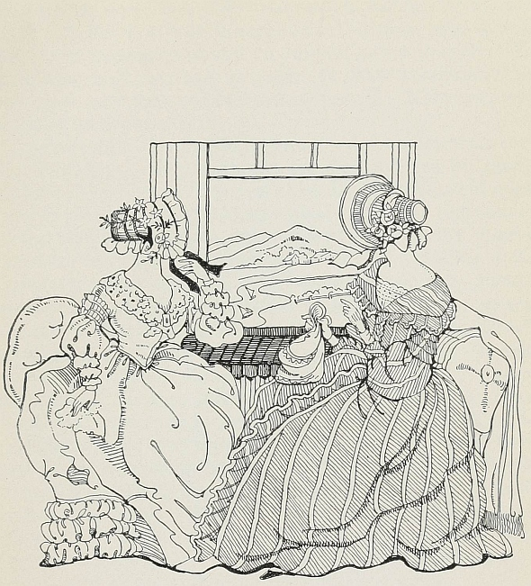
(page 280)
“The fluctuations of fashion are alternately a grievance and a solace.”
[Pg 281]
I can remember when “pull-back” skirts and bustles were in style. They were uncomfortable, unsanitary, and unsightly. Their wearers looked grotesquely deformed, and knew it. They submitted to fate, and prayed for a speedy deliverance. The fluctuations of fashion are alternately a grievance and a solace. John Evelyn,[156] commenting on the dress worn by Englishmen in the time of Charles the First,[157] says that it was “a comely and manly habit, too good to hold.” It did not hold because the Puritans, who saw no reason why manliness should be comely, swept it aside. The bustle was much too bad to hold. It grew beautifully less every year, and then suddenly disappeared. Many dry eyes witnessed its departure.
If abhorrence of a fashion cannot keep women from slavishly following it, they naturally remain unmoved by outside counsel and criticism. For years the doctors exhausted themselves proclaiming the disastrous consequences of tight-lacing, which must certainly be held responsible for the obsolete custom of fainting. For years satirists and moralists united in attacking the crinoline. In Watson's Annals, 1856, a virtuous Philadelphian published a solemn protest against Christian ladies wearing enormous hoops to church, thereby scandalizing and, what was worse, inconveniencing the male congregation. When the Great War started a wave of fatuous extravagance, it was solemnly reported that Mrs. Lloyd George was endeavoring to dissuade the wives of workingmen from buying silk stockings and fur coats. When the Great Peace let loose upon us the most fantastic absurdities known for half a century, the papers bristled with such hopeful headlines as these: “Club Women Approve Sensible Styles of Dress,” “Social Leaders Condemn Indecorous Fashions,” “Crusade in Churches Against Prevailing Scantiness of Attire,” and so on, and so on indefinitely.
And to what purpose? The unrest of a rapidly changing world broke down the old supremacies, smashed all appreciable standards, and left us only a vague clutter of impressions. When a woman's dress no longer indicates her fortune, [Pg 282]station, age, or honesty, we have reached the twilight of taste; but such dim, confused periods are recurrent in the history of sociology. The girl who works hard and decently for daily bread, but who walks the streets with her little nose whitened like concrete, and her little cheeks reddened like brick-dust, and her little under-nourished body painfully evidenced to the crowd, is tremulously imitating the woman of the town; but the most inexperienced eye catalogues her at a glance. Let us be grateful for her sake if she bobs her hair, for that is a cleanly custom, whereas the great knobs which she formerly wore over her ears harbored nests of vermin. It is one of the comedies of fashion that short hair, which half a century ago indicated strongmindedness, now represents the utmost levity; just as the bloomers of 1852 stood for stern reform, and the attempted trousers of 1918 stood for lawlessness. Both were rejected by women who have never been unaware that the skirt carries with it an infinite variety of possibilities.
A winning wave, deserving note,
In the tempestuous petticoat,
wrote Evelyn's contemporary, Herrick,[158] who was more concerned with the comeliness of Julia's clothes than with his own.
There is still self-revelation in dress, but not personal self-revelation. We may still apply the test of costume to people and to periods, but not safely to individuals, who suffer from coercion. Women's ready-made clothes are becoming more and more like liveries. A dozen shop windows, a dozen establishments, display the same model over and over again, the materials and prices varying, the gown always the same. The lines may lack distinction, and the colors may lack serenity; but then distinction and serenity are not the great underlying qualities of our fretted age. The “abbreviated oddments,” with their strange admixture of the bizarre and the commonplace, strike a purely modern note. They are [Pg 283]democratic. They are as appropriate, or, I might say, as inappropriate, to one class of women as to another. They are helping, more than we can know, to level the barriers of caste.
| 1. Fashions for Men | 11. Children's Clothes |
| 2. Jewelry | 12. Style in Shoes |
| 3. Good Manners | 13. Social Customs |
| 4. Table Etiquette | 14. Street Behavior |
| 5. Neckties | 15. Ribbons |
| 6. Dancing | 16. School Yells |
| 7. Spoken English | 17. Slang |
| 8. Stockings | 18. Hair Dressing |
| 9. Buttons | 19. The Use of Mirrors |
| 10. Exercise | 20. Walking |
Your object is to write, in a critical vein, about some modern custom, and to write without bitterness. Embody your criticism in mild humor. Find something good even in the midst of what is bad. Above all, draw definite examples from literature and history, in order to make your thought have weight.
FOOTNOTES:
[152] Lord Frederic Hamilton (1856—). An English diplomat and editor. He has travelled in many lands. Among his works are: The Holiday Adventures of Mr. P. J. Davenant; Lady Eleanor; The Vanished Pomps of Yesterday.
[153] Empress Eugenia (1826-1920). A Spanish Countess who in 1853 became the wife of Napoleon III of France and the natural leader of French society.
[154] Blanchisseuse de fin. A laundress.
[155] Tierra del Fuegian. An inhabitant of the archipelago at the extreme southern end of South America.
[156] John Evelyn (1620-1706). The author of a diary kept from 1624-1706 in which he gives a wealth of information concerning life in his period.
[157] Charles I (1600-1649). King of England from 1625 to 1649. He was overthrown and beheaded by the adherents of the parliamentary, or Puritan, forces.
[158] Robert Herrick (1591-1674). An English poet, author of many charming poems, one of which is Gather Ye Rosebuds While Ye May.
[Pg 284]
POETIC PROSE
By YUKIO OZAKI
Madame Ozaki is the wife of a former mayor of Tokyo and former Minister of Justice in the Okuma Cabinet. She writes for many magazines. Among her books are: Warriors of Old Japan; The Japanese Fairy Book; Romances of Old Japan.
The essay is so natural an expression of the writer's personality that it has much in common with lyric poetry. Both the essay and the lyric, at their best, are ardent expressions of self. When the emotion in either is deep and genuine the language takes on richness of rhythm, and the effect becomes entirely poetic. Many of the best essays contain passages that in all except meter and rime are poems,—prose poems.
Children is an example of highly poetic prose.
Let us love our children serenely, devotedly, even passionately. Surely in their innocence and angelic simplicity they play on the threshold of heaven. Let us hush our noisy activities and stale anxieties, and under the trees and in the open that they love listen to the words of refreshing wisdom dropping like jewels from their naïve lips.
Let us be willing to sit at their dainty little feet, so unused to the dusty roads of this world, and learn from them divinest lessons. Let us with uplifted hearts realize our responsibility when with unconscious humility they accept us as their guides in the sweet, fresh morning of their lives.
O sister-mothers in the world, let us awaken to a deeper sense of this sublime trust, our high charge in the care of these immortal treasures, only for a little while, such a little while, given into our keeping! Let us make our hearts, our minds, our consciences worthy of these transcendent marvels of life!
Oh, joy of joys! Oh, purest wonder! How often my children lift the invisible veils that hide undreamed-of casements[Pg 285] opening out on luminous vistas of the mystical world in which they wander, roaming fancy-free with keen and wondering delight!
Take me with you, oh, take me with you, children mine, when with bright eyes and with kindled imagination, all spirit, fire and dew, you sally forth on these highroads of discovery, to the elysiums of your day-dreams, peopled by the souls of birds, animals, flowers and pictures in happy communion!
| 1. The Baby | 11. Dreams |
| 2. The Helpless | 12. Beautiful Views |
| 3. The Old | 13. The Sunshine |
| 4. Father and Mother | 14. Summer |
| 5. Grandmother | 15. Favorite Flowers |
| 6. Home | 16. Birds |
| 7. Playmates | 17. My Dog |
| 8. Memories | 18. The Garden |
| 9. Holidays | 19. Snow |
| 10. Ambitions | 20. Sunrise |
In order to write poetic prose you must write from genuine emotion. Write about something that you really love. Choose your[Pg 286] words so that they will most clearly reveal your feelings. Think of the deeper meanings and of the greater values of your subject. Make your essay increase steadily in power until the very end. Make it, like a good lyric poem, reveal the writer's best self in one of his noblest moments.
[Pg 287]
By RALPH D. PAINE
(1871—). An American author and journalist, especially noted for excellent work as a war correspondent. Among his many books concerning the sea are the following: The Praying Skipper, and Other Stories; The Ships and Sailors of Old Salem; The Judgments of the Sea; The Adventures of Captain O'Shea; The Fighting Fleets; The Fight for a Free Sea. He is a frequent contributor to magazines.
Ships That Lift Tall Spires of Canvas is practically a poem, although it is written in prose. It is an emotional expression of admiration for the sailing vessels of the past, and for the gallant sailors who manned them. It is evident that the author is familiar with many stories of romantic voyages and grim adventure on the deep, and that his emotion springs from his knowledge. That genuineness of feeling did much to lead him to choose suggestive words and to write in balanced and rhythmical sentences. All good style comes in large part from earnestness of thought or depth of emotion, and in smaller degree from knowledge of the rhetorical means of conveying thought or emotion.
Oh, night and day the ships come in,
The ships both great and small,
But never one among them brings
A word of him at all.
From Port o' Spain and Trinidad,
From Rio or Funchal,
And along the coast of Barbary.
Steam has not banished from the deep sea the ships that lift tall spires of canvas to win their way from port to port. The gleam of their topsails recalls the centuries in which men wrought with stubborn courage to fashion fabrics of wood and cordage that would survive the enmity of the implacable ocean and make the winds obedient. Their genius was unsung, their hard toil forgotten, but with each generation the sailing ship became nobler and more enduring, until it was a perfect thing. Its great days live in memory with a peculiar atmosphere of romance. Its humming shrouds were vibrant with the eternal call of the sea, and in a phantom fleet pass the towering East Indiaman, the hard-driven Atlantic packet, and the gracious clipper that fled before the Southern trades.
A hundred years ago every bay and inlet of the New England coast were building ships that fared bravely forth to the West Indies, to the roadsteads of Europe, to the mysterious havens of the Far East. They sailed in peril of pirate and privateer, and fought these rascals as sturdily as they battled with wicked weather. Coasts were unlighted, the seas uncharted, and navigation was mostly guesswork, but these seamen were the flower of an American merchant marine whose deeds are heroic in the nation's story. Great hearts in little ships, they dared and suffered with simple, uncomplaining fortitude. Shipwreck was an incident, and to be adrift in lonely seas or cast upon a barbarous shore was sadly commonplace. They lived the stuff that made fiction after they were gone.
| 1. Old Gardens | 11. My Grandmother |
| 2. Farm Houses | 12. Old Letters |
| 3. My Childhood Home | 13. A Happy Day |
| 4. Mothers | 14. The Old Soldier |
| 5. Flowers | 15. A Relic |
| 6. Memories | 16. A Familiar Street |
| 7. Old School-books | 17. Changes |
| 8. Old Friends | 18. Souvenirs |
| 9. Childhood Games | 19. Skating |
| 10. Favorite Stories | 20. Summer Days |
[Pg 288]
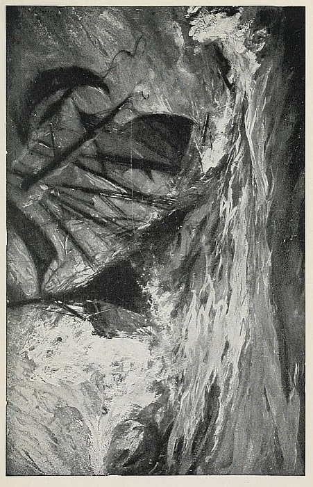
(page 287)
“Its humming shrouds were vibrant with the eternal call of the sea.”
The subject that you select must be one concerning which you know a great deal. It must be one that exists not only in your brain but also in your heart.
When you have selected your subject make a list of the points that appeal to you most, and that will represent every side of the subject.
When you write, let your emotion guide your pen. At the same time make every effort to select words that will be full of suggestive power. Write easily and rhythmically, and let your work end, as Mr. Paine's does, in an especially effective sentence.
FOOTNOTES:
[159] From “Lost Ships and Lonely Seas,” by Ralph D. Paine. Copyright by the Century Co.
[Pg 290]
PERSONALITY IN CORRESPONDENCE
By THEODORE ROOSEVELT and AUGUSTUS SAINT-GAUDENS
(1858-1919). Twenty-sixth President of the United States. One of the most vigorous, courageous and picturesque figures in the public life of his day. Soon after his graduation from Harvard, and from Columbia Law School he entered public life, and gave invaluable service in many positions, becoming President in 1901, and again in 1904. His work as an organizer of the “Rough Riders,” his skill in horsemanship, his courage as an explorer and hunter, and his staunch patriotism and high ideals all made him both interesting and beloved. His work as an author is alone sufficient to make him great. Among his many books are The Winning of the West; The Strenuous Life; African Game Trails; True Americanism.
(1848-1907). One of the greatest American sculptors. His statues of Admiral Farragut, Abraham Lincoln, The Puritan, Peter Cooper, and General Sherman are noble examples of his art. Many other works of sculpture, including the beautiful “Diana” on Madison Square Garden Tower, New York, attest his rare skill. He excelled in what is called “relief.” His influence on American art was remarkably great. His portrait-plaque of Robert Louis Stevenson is especially interesting to lovers of literature.
The essay and the friendly letter are closely related. It is natural for one who writes a friendly letter to express himself freely and intimately, to make wise or humorous comments on life, to write meditatively of all the things that interest him,—in fact, to reveal himself in full. To do all that, even within the limited form of the letter, is to write an approach to an essay. Almost any one of the essays in this book might have been written as part of a friendly letter.
The spirit of the essay, that of personality, should enter into all letters except those that are purely formal in nature. In fact, the amount of personality expressed in a letter is, often, a measure of the success of the letter.
The following letters written by Theodore Roosevelt and Augustus Saint-Gaudens are, in a sense, business letters. In 1905 Mr. Roosevelt was president of the United States. He believed that the coins of the United States, like the coins of the ancient Greeks, should be beautiful. That he had the highest respect for the great sculptor, Augustus Saint-Gaudens, is shown by a letter that he wrote in 1903 concerning the impressively beautiful statue of General Sherman, that now stands at[Pg 291] the 59th Street entrance to Central Park, New York City. In 1905 Mr. Roosevelt met Mr. Saint-Gaudens at a dinner in Washington and talked with him concerning the coinage of the United States and the possibility of improving it. The letters given in this book are part of the correspondence that followed this conversation.
Both men had serious purpose in writing and both were intensely practical; yet each man wrote in a manner that is exceedingly personal. The letters have something of the spirit of the essay.
White House
Washington
Oyster Bay, N. Y.
August 3, 1903.
Personal
My dear Mr. Saint-Gaudens:
Your letter was a great relief and pleasure to me. I had been told that it was you personally who had opposed ——. I have no claim to be listened to about these matters, save such claim as a man of ordinary cultivation has. But I do think that ——, like Proctor, has done excellent work in his wild-beast figures.
By the way, I was very glad that the Grant decision in Washington went the way it did. The rejected figure, it seemed to me, fell between two schools. It suggested allegory; and yet it did not show that high quality of imagination which must be had when allegory is suggested. The figure that was taken is the figure of the great general, the great leader of men. It is not the greatest type of statue for the very reason that there is nothing of the allegorical, nothing of the highest type of the imaginative in it. But it is a good statue. Now to my mind your Sherman is the greatest statue of a commander in existence. But I can say with all sincerity that I know of no man—of course of no one living—who could have done it. To take grim, homely, old Sherman, the type and ideal of a democratic general, and put with him an allegorical figure such as you did, could result in but one of two ways—a ludicrous failure or striking the very highest note of the sculptor's art. Thrice[Pg 292] over for the good fortune of our countrymen, it was given to you to strike this highest note.
Always faithfully yours,
Theodore Roosevelt.
Mr. Augustus Saint-Gaudens,
Aspet, Windsor, Vermont.
The White House
Washington
Nov. 6, 1905.
My dear Saint-Gaudens:
How is that old gold coinage design getting along? I want to make a suggestion. It seems to me worth while to try for a really good coinage; though I suppose there will be a revolt about it! I was looking at some gold coins of Alexander the Great to-day, and I was struck by their high relief. Would it not be well to have our coins in high relief, and also to have the rims raised? The point of having the rims raised would be, of course, to protect the figure on the coin; and if we have the figures in high relief, like the figures on the old Greek coins, they will surely last longer. What do you think of this?
With warm regards.
Faithfully yours,
Theodore Roosevelt.
Mr. Augustus Saint-Gaudens,
Windsor, Vermont.
Windsor, Vermont,
Nov. 11, 1905.
Dear Mr. President:
You have hit the nail on the head with regard to the coinage. Of course the great coins (and you might almost say the only coins) are the Greek ones you speak of, just as the great medals are those of the fifteenth century by Pisanello and Sperandio. Nothing would please me more
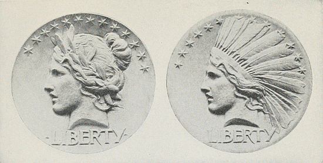
| Obverse of the ten-dollar gold piece, in high relief, and before the addition of the head-dress, on President Roosevelt's suggestion. |
Obverse of the ten-dollar gold piece with the Roosevelt feather head-dress. Before the relief was radically lowered for minting. |
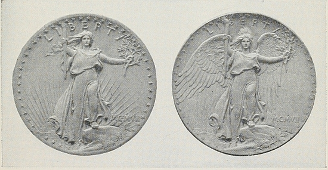
| Liberty obverse of the twenty-dollar gold piece as finally designed. The relief, however, was made lower before minting. |
Liberty obverse of the twenty-dollar gold piece. The head-dress, President Roosevelt's idea, was later eliminated on this figure as too small to be effective on the actual coin. |
[Pg 293]
than to make the attempt in the direction of the heads of Alexander, but the authorities on modern monetary requirements would, I fear, “throw fits,” to speak emphatically, if the thing was done now. It would be great if it could be accomplished and I do not see what the objection would be if the edges were high enough to prevent rubbing. Perhaps an inquiry from you would not receive the antagonistic reply from those who have the say in such matters that would certainly be made to me.
Up to the present I have done no work on the actual models for the coins, but have made sketches, and the matter is constantly in my mind. I have about determined on the composition of one side, which would contain an eagle very much like the one I placed on your medal with a modification that would be advantageous. On the other side I would place a (possibly winged) figure of liberty striding energetically forward as if on a mountain top holding aloft on one arm a shield bearing the Stars and Stripes with the word “Liberty” marked across the field, in the other hand, perhaps, a flaming torch. The drapery would be flowing in the breeze. My idea is to make it a living thing and typical of progress.
Tell me frankly what you think of this and what your ideas may be. I remember you spoke of the head of an Indian. Of course that is always a superb thing to do, but would it be a sufficiently clear emblem of Liberty as required by law?
I send you an old book on coins which I am certain you will find of interest while waiting for a copy that I have ordered from Europe.
Faithfully yours,
Augustus Saint-Gaudens.
The White House
Washington
Nov. 14, 1905.
My dear Mr. Saint-Gaudens:
I have your letter of the 11th instant and return herewith the book on coins, which I think you should have until you[Pg 294] get the other one. I have summoned all the mint people, and I am going to see if I cannot persuade them that coins of the Grecian type but with the raised rim will meet the commercial needs of the day. Of course I want to avoid too heavy an outbreak of the mercantile classes, because after all it is they who do use the gold. If we can have an eagle like that on the Inauguration Medal, only raised, I should feel that we would be awfully fortunate. Don't you think that we might accomplish something by raising the figures more than at present but not as much as in the Greek coins? Probably the Greek coins would be so thick that modern banking houses, where they have to pile up gold, would simply be unable to do so. How would it do to have a design struck off in a tentative fashion—that is, to have a model made? I think your Liberty idea is all right. Is it possible to make a Liberty with that Indian feather head-dress? Would people refuse to regard it as a Liberty? The figure of Liberty as you suggest would be beautiful. If we get down to bed-rock facts would the feather head-dress be any more out of keeping with the rest of Liberty than the canonical Phrygian cap which never is worn and never has been worn by any free people in the world?
Faithfully yours,
Theodore Roosevelt.
Mr. Augustus Saint-Gaudens,
Windsor, Vermont.
Windsor, Vermont,
Nov. 22, 1905.
Dear Mr. President:
Thank you for your letter of the 14th and the return of the book on coins.
I can perfectly well use the Indian head-dress on the figure of Liberty. It should be very handsome. I have been at work for the last two days on the coins and feel quite enthusiastic about it.
I enclose a copy of a letter to Secretary Shaw which explains[Pg 295] itself. If you are of my opinion and will help, I shall be greatly obliged.
Faithfully yours,
Augustus Saint-Gaudens.
[Hand-written postscript.]
I think something between the high relief of the Greek coins and the extreme low relief of the modern work is possible, and as you suggest, I will make a model with that in view.
Windsor, Vermont,
Nov. 22, 1905.
Hon. L. M. Shaw,
Secretary of the Treasury,
Washington, D. C.
Dear Sir:
I am now engaged on the models for the coinage. The law calls for, viz., “On one side there shall be an impression emblematic of liberty, with an inscription of the word 'liberty' and the year of the coinage.” It occurs to me that the addition on this side of the coins of the word “Justice” (or “Law,” preferably the former) would add force as well as elevation to the meaning of the composition. At one time the words “In God we trust” were placed on the coins. I am not aware that there was authorization for that, but I may be mistaken.
Will you kindly inform me whether what I suggest is possible.
Yours very truly,
Augustus Saint-Gaudens.
The White House
Washington
Nov. 24, 1905.
My dear Mr. Saint-Gaudens:
This is first class. I have no doubt we can get permission to put on the word “Justice,” and I firmly believe that you can evolve something that will not only be beautiful from [Pg 296] the artistic standpoint, but that, between the very high relief of the Greek and the very low relief of the modern coins, will be adapted both to the mechanical necessities of our mint production and the needs of modern commerce, and yet will be worthy of a civilized people—which is not true of our present coins.
Faithfully yours,
Theodore Roosevelt.
Mr. Augustus Saint-Gaudens,
Windsor, Vermont.
The White House
Washington
Jan. 6, 1906.
My dear Saint-Gaudens:
I have seen Shaw about that coinage and told him that it was my pet baby. We will try it anyway, so you go ahead. Shaw was really very nice about it. Of course he thinks I am a mere crack-brained lunatic on the subject, but he said with great kindness that there was always a certain number of gold coins that had to be stored up in vaults, and that there was no earthly objection to having those coins as artistic as the Greeks could desire. (I am paraphrasing his words, of course.) I think it will seriously increase the mortality among the employees of the mint at seeing such a desecration, but they will perish in a good cause!
Always yours,
Theodore Roosevelt.
Mr. Augustus Saint-Gaudens,
Windsor, Vermont.
The White House
Washington
October 1, 1906.
Personal
My dear Mr. Saint-Gaudens:
The mint people have come down, as you can see from the enclosed letter which is in answer to a rather dictatorial [Pg 297] one I sent to the Secretary of the Treasury. When can we get that design for the twenty-dollar gold piece? I hate to have to put on the lettering, but under the law I have no alternative; yet in spite of the lettering I think, my dear sir, that you have given us a coin as wonderful as any of the old Greek coins. I do not want to bother you, but do let me have it as quickly as possible. I would like to have the coin well on the way to completion by the time Congress meets.
It was such a pleasure seeing your son the other day.
Please return Director Roberts' letter to me when you have noted it.
Sincerely yours,
Theodore Roosevelt.
Mr. Augustus Saint-Gaudens,
Windsor, Vermont.
The White House
Washington
December 11, 1906.
My dear Mr. Saint-Gaudens:
I hate to trouble you, but it is very important that I should have the models for those coins at once. How soon may I have them?
With all good wishes, believe me,
Sincerely yours,
Theodore Roosevelt.
Mr. Augustus Saint-Gaudens,
Windsor, Vermont.
Windsor, Vermont,
December 19, 1906.
Dear Mr. President:
I am afraid from the letter sent you on the fourteenth with the models for the Twenty-Dollar Gold piece that you will think the coin I sent you was unfinished. This is not the case. It is the final and completed model, but I hold myself in readiness to make any such modifications as may be required in the reproduction of the coin.
[Pg 298]
This will explain the words, “test model” on the back of each model.
Faithfully yours,
Augustus Saint-Gaudens.
The White House
Washington
December 20, 1906.
My dear Saint-Gaudens:
Those models are simply immense—if such a slang way of talking is permissible in reference to giving a modern nation one coinage at least which shall be as good as that of the ancient Greeks. I have instructed the Director of the Mint that these dies are to be reproduced just as quickly as possible and just as they are. It is simply splendid. I suppose I shall be impeached for it in Congress; but I shall regard that as a very cheap payment!
With heartiest regards,
Faithfully yours,
Theodore Roosevelt.
Mr. Augustus Saint-Gaudens,
Windsor, Vermont.
[Pg 299]
Write your letter so that it will express a definite and practical proposal. Express your own individual opinion modestly and tactfully. Use language that will thoroughly represent yourself. Try, in all ways possible, to avoid making your letter heavy, “cut-and-dried,” conventional, and purely formal.
[Pg 300]
THE SYMBOLIC STORY
By RALPH DURAND
An English traveller, soldier and author, who is still young and who has “followed the Sea Maid” over every ocean. Like the English poet, John Masefield, he served for a time as a sailor before the mast. He has seen life intimately in various out-of-the-way places, such as the South Sea Islands, Central Africa, and the Arctic Regions. In the World War he performed patriotic duty in the trenches and on Intelligence Staffs.
Hi-Brasil is a charming and fascinating story, a symbolic narrative that most artistically combines realism and fancy, and appeals to the unfulfilled longings that every reader possesses.
What is Hi-Brasil? It is the “Never-Never-Land,” the land of dreams, the land of longings. In this story it is specifically the land where the lost ships go. Who is the Sea Maid? She is the Spirit of Adventure, the love of whom calls men ever restlessly on. In this story she is the Spirit of the Sea. How skilfully Mr. Durand describes her in sea-words: “With sea-blue eyes” and “Wind-blown” hair; her laugh “Like the ripple of a stream that runs over a pebbly beach”; her song “Like the surge of breakers on a distant reef”; herself “As old as the sea, and a little older than the hills.”
No one but a lover of the sea, and a lover also of bold enterprise and high deeds, could have written such a story, emphasizing as it does somewhat of the theme of Longfellow's Excelsior and Poe's Eldorado—
“Over the mountains
Of the moon,
Down the Valley of the Shadow,
Ride! Boldly ride!...
If you seek for Eldorado!”
“I've never sailed the Amazon,
I've never reached Brazil;
But the Don and Magdalena,
They can go there when they will!”
Peter Luscombe was the dullest man that ever audited an account. Once when his neighbor at a dinner-party, having heard that he was an authority on marine insurance, quoted[Pg 301] Longfellow about “the beauty and the mystery of the ships and the magic of the sea,” Peter looked embarrassed and turned the conversation to the subject of charter-parties.
His life was as carefully regulated as Big Ben. He caught the same train every morning, dined at the same hour every evening, indexed his private correspondence, and for recreation read Price's “Calculations.” On Saturday afternoons he played golf.
One Summer a business matter took Peter to St. Mawes, and on his way there he met the Sea Maid. To get to St. Mawes he had to cross Falmouth Harbor by the public ferry.
Though till then he had had no more direct personal experience of the sea than can be obtained from the Promenade at Hove, Peter was so little interested in his surroundings that he spent the first part of the ferry journey making notes of his personal expenditure since leaving London, including tips, on the last page of his pocket-diary. Midway across the harbor he chanced to look up and saw a yawl-rigged fishing-boat—subconsciously he noticed the name Maeldune painted on her bows—running before the wind in the direction of Falmouth Quay. An old, white-haired man, whose cheeks were the color of an Autumn leaf, was sitting amidships tending the sheets, and at the tiller sat a girl—a girl with sea-blue eyes and untidy, wind-blown, dark-brown hair.
She was bending forward, peering under the arched foot of the mainsail, when Peter first caught sight of her. Their eyes met; the girl smiled—and Peter dropped his pocket-diary into the dirty water that washed about the ferryman's boots and stared after the Maeldune till he could no longer distinguish her among the other small craft in the harbor.
When the ferry-boat reached St. Mawes and discharged her other passengers Peter remained in her, and on the return journey sat in the bows straining his eyes to pick out the Maeldune among the other fishing-boats. Falmouth Harbor is two and a half miles wide, and the ferryman refused to be hurried; but at last the quay came in sight, and Peter's heart leaped, for the Maeldune was lying at the steps, and the girl was still on board of her. As soon as the ferry-boat reached[Pg 302] the steps Peter jumped ashore and faced the girl. Then he hesitated, embarrassed. He had nothing to say to her, or, rather, no excuse for speaking to her. “I—I—I saw you—as you came up the harbor,” he faltered.
But the girl showed no sign of embarrassment. She smiled at him again, and her smile was brighter than sunlight shining through the curl of a breaking wave.
“I'm just going out for a sail again,” she said, “and I've room for a passenger. Old John has just gone to have a yarn with the sailmaker. Would you care to come?”
Peter jumped onto the Maeldune's thwart, and the girl cast off and hoisted the sail. “I'm afraid I don't know anything about sailing,” said Peter.
The girl laughed, and her laugh sounded like the ripple of a stream that runs over a pebbly beach.
“That doesn't matter,” she said; “I can manage the old Maeldune single-handed.”
They beat down the harbor, rounded the Loze, and stood out in the direction of mid-channel. Peter was entirely happy. The wind was blowing fresh from the southwest, and the Maeldune danced lightly over the waves like a thing alive, her thwarts aslant and her lee-rail just clear of the water.
“This is glorious,” said Peter. “Do you know, this is the first time I have ever been on the sea.”
“It won't be the last,” said the girl.
For a long while neither spoke again. Peter did not want to talk. He was content to watch the Sea Maid as she sat at the tiller, looking toward the horizon with dreamy eyes and crooning to herself a wordless song that sounded like the surge of breakers on a distant reef.
“What song is that?” he asked after a long silence.
“That is the song that Orpheus sang to the Argo when she lay on the stocks and all the strength of the heroes could not launch her. Then Orpheus struck his lyre and sang of the open sea and all the wonders that are beyond the farthest horizon, till the Argo so yearned to be afloat with a fair wind behind her that she spread her sails of her own accord and glided down the beach into the water.”
[Pg 303]
“I hadn't heard about it,” said Peter. The story was so fantastically impossible that he supposed that the girl was chaffing him.
“You are young, surely, to handle a boat by yourself,” he said. “Don't think me rude. How old are you?”
“As old as the sea, and a little older than the hills.”
Now Peter was sure that the girl was chaffing him.
Neither spoke again. Occasionally the girl looked at him and smiled, and her smile was the most beautiful thing that Peter had ever known. Toward evening they turned and sailed back, right in the golden path of the sinking sun. Slowly the old town of Falmouth took shape; the houses became distinct, then the people on the quay. Peter sighed because he was coming back to the shore again, and because for the first time in his life he had tasted absolute happiness.
Close to the quay the girl threw the boat up in the wind, ran forward and lowered the head-sails, and then ran back to the tiller. The Maeldune came gently up to the landing-stage. Peter jumped ashore and turned, expecting that the girl would follow, but she pushed off and began to hoist the head-sails again.
“May I—may I see you again?” said Peter, as the gap widened between the boat and the shore.
The Sea Maid laughed.
“If you come to Hi-Brasil,” she said.
Peter walked slowly in the direction of Fore Street, then realized that he needed some more definite address if he were to see the girl again. He hurried back to the landing-stage and looked eagerly for the Maeldune. She was nowhere in sight.
“Did you see a little sailing-boat leave the steps about five minutes ago?” he asked a man who was lounging on the quay. “Which way did she go?”
“What rig?”
“I don't know what you call it—one big mast and one little one.”
“A yawl. There's been no yawls in here this afternoon.”
Peter inwardly cursed the man's stupidity and walked[Pg 304] dejectedly away. He dreamed of the Sea Maid that night, and in the morning told himself that he was a fool. He had had an hour or so of happiness with a jolly girl who evidently did not wish to continue the acquaintance. Obviously, the sensible thing to do was to forget all about her. But he could not forget. Work became impossible. When he tried to write the laughing face of the Sea Maid danced before his eyes, and when clients talked to him he could not listen, for the song she had sung rang in his ears. He went back to Falmouth determined to see her again, and not till he reached the Cornish port did he realize the futility of his search. How was he to make inquiries as to the whereabouts of two people of whom he knew nothing more definite than that the man was white-haired and bronzed, and that the girl, when last seen, had worn a white jersey and a blue-serge skirt?
A month later he was an unwilling guest at a reception given by a famous London hostess. The rooms were packed with a well-dressed crowd who walked about rather aimlessly, talking on the stairs or listening to music in one or other of the reception-rooms. Suddenly Peter's heart stood still for a moment. Clear above the chatter he heard the Sea Girl's voice. He was standing at the head of the stairs and she was singing in one of the adjoining rooms,
I've never sailed the Amazon,
I've never reached Brazil;
But the Don and Magdalena,
They can go there when they will!
Yes, weekly from Southampton,
Great steamers, white and gold,
Go rolling down to Rio
(Roll down—roll down to Rio!),
And I'd like to roll to Rio
Some day before I'm old!
The doorway into the room from which he could hear the Sea Maid's voice was so crowded with people that it was some minutes before Peter could edge his way into the room. By that time the song was over and the singer had gone. Peter made inquiries from a man standing near, and was told that[Pg 305] she had left the room by another door. He sought out his hostess and asked her to introduce him to the lady who had sung “Rolling down to Rio.” But his hostess could not help him. She admitted reluctantly that she knew no more of the singer than that she was a professional entertainer engaged through the medium of a concert agent and that she had probably already left the house. Peter followed up the clue. Next morning, after inquiry from the agent, he rang the bell of a tiny flat in Maida Vale and stood with beating heart waiting for the door to open.
Five minutes later he was out in the street again, bitterly disappointed. The lady he had seen was able to prove indisputably that it was she who had sung “Rolling down to Rio,” but she bore not the slightest resemblance to the Sea Maiden. To cover his confusion and excuse his visit, Peter had engaged her to sing at a charity concert that he had invented on the spur of the moment, had insisted on paying her fee in advance, and had left the flat, promising to send details of the place and date of the engagement by post.
That evening, brooding in his lonely chambers, Peter, who till then had prided himself on believing nothing that is not based on the fundamental fact that two and two make four, became obsessed by the idea that the Sea Maid had sent him a spirit-message, using the unconscious professional entertainer as her medium. He tried to shake off the idea, telling himself that it was fantastic and ridiculous, but gradually it overmastered him. At eleven o'clock he rose from his chair, picked up the Times, and consulted the shipping advertisements. Five minutes later he rang for his man servant.
“Buck up and pack, Higgins,” he said. “I'm off to Brazil. You haven't too much time. Boat-train leaves Waterloo at midday to-morrow.”
“To Brazil, sir? Isn't that one of those foreign places?”
“Yes. Why? What are you staring at? Why shouldn't I go to Brazil?”
“Shall you want me, sir?”
“You can come if you like.”
[Pg 306]
“If it's all the same to you, sir, I'd rather——”
“Man alive! I thought you'd have jumped at the chance. Don't you want to go rolling down to Rio? Can't you feel the magic of it—even in the mere words? Wouldn't you like to see the armadillo dilloing in his armor——?”
“I'd better get on with the packing, sir.”
Higgins was convinced that his master had suddenly “gone balmy.”
Before sunset next evening Peter again saw the Sea Maid.
The R. M. S. Maranhão, outward bound for Rio de Janeiro, had just left St. Alban's Head abeam when she passed a full-rigged ship bound down-channel so closely that Peter could see the men on board of her. Her tug had just left her and she was setting all sails. One by one the sails fluttered free and swelled to the soft breeze. Men were lying out on the upper topsail-yards casting loose the gaskets, and others on deck were running up the royals to the tune of a chantey,
Sing a song of Ranzo, boys,
Ranzo, boys, Ranzo.
A crisp wave curled from her bows, a long wake of gleaming foam streamed astern of her, and she curtsied gracefully on the swell as if gravely saluting the larger, newer vessel. The Maranhão passed under her stern, and as she passed Peter, looking down on her poop, saw the Sea Maid. And the Sea Maid saw him and waved her hand as the great mail-steamer surged past.
“D'you know that vessel?” asked Peter eagerly of a ship's officer who was standing near him.
“She's the Sea Sprite. Cleared from Southampton early this morning. Bound for Rio in ballast for hides.”
“Bound for Rio? Splendid!” said Peter. “How long will it take her to get there? I know some one on board.”
“A month—more or less. Who's your pal?”
“That girl that waved her hand to me.”
The ship's officer focused his binoculars on the Sea Sprite.
“There's no girl on her deck. Girls very seldom travel on wind-jammers nowadays. Look for yourself.”
[Pg 307]
Peter took the glasses, and again saw the Sea Maid quite distinctly—but he did not care to argue about it.
While waiting at Rio de Janeiro Peter took care to make friends with the port authorities, and arranged with them to let him have the first news that they had of the Sea Sprite.
At last one morning found him in the customs launch, steaming out to the roadstead where the Sea Sprite, her anchor down, was stowing her canvas. As soon as the quarantine doctor gave permission Peter scrambled up the ship's side and looked eagerly round her deck. The Sea Maid was not there. He could hardly contain himself until he could find an opportunity to ask for her.
“I passed you in the Channel, Captain,” he said, “and I saw a lady on your deck who is an old friend of mine. May I speak to her?” The captain shook his head.
“Must have been some other ship,” he said. “We've got no ladies aboard.”
Peter's heart sank.
“I suppose you dropped her at some port on the way.”
“We haven't smelled harbor mud since we left Southampton Water,” said the skipper. “You're making a mistake, mister. Why, you look as if you thought I was lying. Take a look at the ship's articles, then, if you don't believe me. Stands to reason, doesn't it, that if I had a woman aboard her name would be on the articles?”
Peter returned to the shore, bitterly disappointed and hardly convinced that he had been mistaken. He booked a passage on the next homeward-bound steamer. On the homeward voyage he fell in love with an old lady, one of those women whose personality is so magnetic that they can draw the innermost secrets out of a young man's heart. One evening, when the sea was ablaze with splendor under the moon, he told her of the Sea Maid, and found it eased his longing to talk of her. The old lady understood.
“You'll see your Sea Maid again,” she said. “I'm sure of it. But perhaps not in this life.”
But Peter refused to give up hope of seeing the Sea Maid in the flesh. When he got back to London he sought an interview[Pg 308] with one of the most eminent members of the Royal Geographical Society.
“I want you to tell me where Hi-Brasil is,” he said. “I want to go there.”
“Then you'll have to wait till you die,” said the geographer with a laugh.
“What do you mean?”
“Hi-Brasil is a purely mythical island, like St. Brendan's, The Fortunate Islands, Avalon, and Lyonnesse, that ancient and medieval geographers supposed to be somewhere out in the Atlantic. They've served their purpose. If nobody had ever believed in them it is probable that America would not have been discovered yet. The myth of Hi-Brasil's existence took a long time to die. Venetian geographers of the Middle Ages supposed it to be somewhere near the Azores, and until 1830 Purdy's chart of the Atlantic marked 'Brasil Rock (High)' in latitude fifty-one degrees ten minutes north, and longitude fifteen degrees fifty minutes west—that is, about two hundred miles westward of the Irish coast.”
“But isn't it possible that there really is such an island?” persisted Peter. “The sea is a big place, you know.”
“Absolutely impossible,” said the geographer. “Why, the spot indicated by Purdy is right in the track of steamers going from England to Newfoundland. If you want to read about Hi-Brasil you must read old books, published before geography was an exact science.”
Though he knew it was useless Peter followed the advice given him and eagerly read every book he could find that had any bearing on the subject—Rubruquis, Hakluyt, Linschoten, and many others—and to his delight he found that his reading brought him nearer to his Sea Maiden. After an evening spent in imagination exploring the coast of Vinland with Leif Ericsson, or rounding North Cape with Othere, or groping blindly in the unknown Atlantic with Malacello, he almost invariably dreamed that he and the Sea Maiden were once more sailing together in the little Maeldune.
It was after reading, first in Longfellow and afterward in[Pg 309] Hakluyt, about Othere's voyage to the Northern Seas, that Peter saw an advertisement of a holiday cruise through the Norwegian fiords to Spitzbergen. He booked a passage, saw the bleak, storm-harried point that Othere was the first to round, and, on his way home, saw the Sea Girl again. Just south of the Dogger Bank the tourist-steamer passed a disreputable-looking tramp steamer. Half of her plates were painted a crude red; others were brown with rust; the awning stanchions on her bridge were twisted and bent; she had a heavy list to starboard, and she was staggering southward under a heavy deck-cargo of timber. On the bridge, leaning against the tattered starboard-dodger, the Sea Maid stood and waved her hand to him. Peter eagerly sought out a ship's officer.
“Where's that steamer bound for?” he asked.
“Goodness knows!” was the answer. “South Wales, most likely, as she's carrying pit-props.”
Hope of seeing the Sea Girl in the flesh again returned, and Peter wasted the next few weeks vainly searching all the South Wales coal ports. He had given up the search, and was returning to his much-neglected business when the South Wales-London express stopped for a moment on the bridge over the Wye near Newport. Peter looked idly out of the window at the dirty river flowing sluggishly between banks of greasy mud. Then his heart leaped again. Lying embedded in the mud far below were the rotting remains of a derelict barge, and on her deck were some ragged children hauling lustily on a scrap of rope that they had fastened to one of the barge's bollards and singing what, no doubt, they supposed to be a chantey. Standing on the barge's rotting deck was the Sea Maid. This time she not only waved her hand but called to him, “We are bound for the Spanish Main.” Peter leaned far out of the window of the railway-carriage.
“Where can I find you?” he shouted.
“In Hi-Brasil,” was the answer, and the train moved on.
Peter was now convinced that the eminent geographer whom he had consulted as to the whereabouts of Hi-Brasil[Pg 310] had not known what he was talking about. It must, he decided, be some little Cornish fishing village, too insignificant to be worth the great man's notice.
In pursuit of this idea he went at once to Falmouth and began to make inquiries, first at the police stations and post-offices, and afterward among the fishermen. At Falmouth no one could answer his questions, till at last an old gray-beard told him that he'd heard of the place and believed it was somewhere farther west. At Penzance and Newlyn Peter could hear nothing, and he walked westward to Mousehole, determined that if he heard nothing there he would go on to the Scilly Islands. At Mousehole people laughed at him. One man to whom he spoke was so amused that he called out to a group of fishermen standing on the quay waiting for the tide to float their boats.
“Gen'elman wants to know where Hi-Brasil is.”
“Then he'll have to go farther west,” said one.
“To the Scillies?” asked Peter.
“Aye, and farther than that.”
“A long way farther than that,” said another. “It's an old wives' tale, mister. Stout ships that sail westward and never come back to port again have their last moorings at Hi-Brasil, so the saying goes. You ask Old John there. He's the only man that talks about Hi-Brasil, and he's daft.”
An old man whose broad back was bent with the weight of many years was hobbling toward him, and Peter knew that at last he was on the right track. The old fisherman who was coming down the quay was none other than the man he had seen sailing in the Maeldune with the Sea Girl.
“Hi-Brasil?” asked Old John. “What d'you want with Hi-Brasil?”
“I want to go there.”
“Then I'm the man to take 'ee. But mark 'ee, mister, I can't bring 'ee back.”
“Never mind about that,” said Peter. “You take me. I'll pay you well.”
“Time enough to talk about payment when we get there,” said the old man. “When do 'ee want to start?”
[Pg 311]
“At once, if possible.”
“If 'ee really want to go us can start at half-flood.”
Peter assured the old man that he was in earnest, and the latter hobbled away over the cobbles, promising to be back in an hour's time.
“You're never going to sea with Old John, are you, mister?” said one of the fishermen anxiously. “He was a rare bold seaman in his day, but his day has passed this many a year. He was old when we were boys. Old John says he'll last as long as a deep-sea wind-jammer remains afloat. But he's daft. You oughtn't to listen to him. It's all old wives' foolishness about Hi-Brasil.”
But Peter would not be dissuaded, and an hour later, when the pilchard-boats jostled each other between the Mousehole pier-heads, and spread across Mount's Bay for sea-room, Peter and John, in a crazy old mackerel-boat, went with them. The setting sun gleamed on the brown sails of the pilchard fleet, and Peter drew a deep breath of delight. He knew that he would soon see the Sea Maid again.
At midnight the pilchard fleet was a line of riding lights on the horizon behind them. When the sun rose the Scillies lay to the north of them. Passing under the lofty Head of Peninnis, they exchanged hails with a fisherman of St. Mary's who was hauling his lobster-pots.
“Going far?” asked the fisherman.
“Aye, far enough,” answered John.
“Looks like it's coming on to blow from the east,” said the fisherman.
“Like enough,” answered John, and they passed out of hearing.
By midday a fresh wind was blowing. The mackerel-boat's faded, much-patched sails tugged at her mast, and she groaned as she leaped from the tops of the waves.
“Afeard, be 'ee?” asked Old John.
“Not I,” said Peter.
“The harder it blows, the quicker we'll get there,” said John, and not another word was said.
[Pg 312]
By night-time it was blowing a gale. A driving, following sea hustled and banged the boat from wave to wave, and the night fell so dark that Peter could not see the old man sitting motionless at the tiller, except when a wave broke in foam and formed a great white background behind him. Peter felt no fear. He knew with the certainty that admits of no argument that he was on his way at last to his beloved.
The wind hummed in the boat's rigging with a droning note like that of the Sea Maid's song. The waves washed along her counter, flinging aboard stinging showers of spray that drenched Peter as he sat on the midship thwart. The jib flapped and tugged at its sheet when her stern rose on a wave and groaned with the strain as her bow lifted. Each time she strained streams of water gushed through her crazy seams. At last a fierce gust of wind drove her nose so deep into the water that it poured in a cascade over her bows, and then a great, curving comber broke over them. Peter was washed from his seat and jammed between the mast and the leech of the mainsail as the water rose over his head.
When Peter recovered consciousness the sun was shining, the air was warm, the sea still, and the mackerel-boat, with Old John still at the tiller, was entering the mouth of a great land-locked harbor. Cliffs, gay with heather and golden gorse, sheltered it from the wind. The lazy, offshore breeze was fragrant with the smell of thyme. Shoals of fish played in the clear water, and on the far side a stream of fresh water rippled over golden sand.
Peter rubbed his eyes and looked around him with amazement. The harbor was thronged with shipping of every size, shape, and rig: yachts and smacks, schooners and ketches, tramp steamers and ocean-liners, barks and full-rigged ships, galleys and galleons, cogs and caracks, dromons and balingers, aphracts and cataphracts.
“See that vessel?” said Old John, as they passed under the stern of a stoutly built brig. “That's Franklin's ship, the Terror—crushed in the ice, she was, off Beechey Island in the Arctic. And that little craft alongside of her is the Revenge.[Pg 313] She sank in the Azores after fighting fifty-three Spaniards for a day and a night. Away over there is what they used to call a trireme. Cleared from the Port of Tyre, she did, when I was young, and foundered off Marazion, just where we left the pilchard fleet.”
But Peter was not listening. He was eagerly watching a yawl that was scudding toward them; for the yawl was the Maeldune, and under the arched foot of her mainsail the Sea Maid was smiling a greeting.
| 1. Utopia | 11. The World of Puck and Oberon |
| 2. Castles in Spain | 12. The Summit of Olympus |
| 3. The Fountain of Youth | 13. Eldorado |
| 4. Arcadia | 14. St. Brendan's Isle |
| 5. The Garden of the Hesperides | 15. Lyonesse |
| 6. Over the Mountains | 16. The Fortunate Islands |
| 7. The Happy Valley | 17. The Land of the Lotus |
| 8. The Land of Dreams | 18. The Lost Atlantis |
| 9. The Isle of Avalon | 19. At Camelot |
| 10. The Enchanted World | 20. The Land of Heart's Delight |
It is not easy to write, even with only a small degree of success, so happily suggestive a story as Hi-Brasil. Such a story is the product both of experience and of art.
[Pg 314]
The best that you can do is to think of some longing that has possessed you, as the longing for the sea possessed the author of Hi-Brasil. Take some prosaic character, not usually moved by such longings as your own, and show him brought strongly under the influence of a great desire. Make your story so realistic that it will seem true, and so symbolic that it will be at once poetic and capable of conveying a strong idea. Do all in your power to make your story crystal-clear, strongly outlined, and effective in power.